| 異世界魔術師は魔法を唱えない3 異世界魔術師は魔法を唱えないシリーズ (ビギニングノベルズ) | |
| もち | |
| (2015) | |
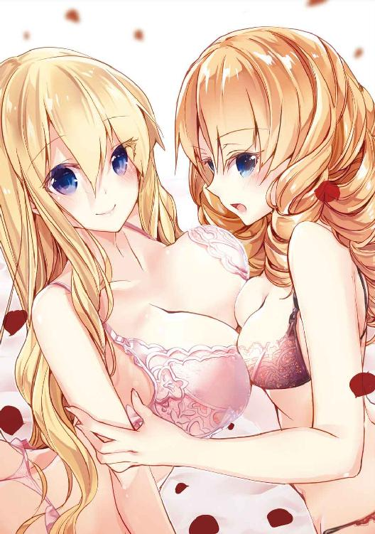
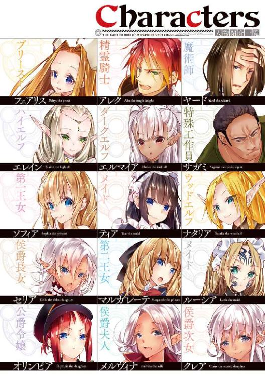
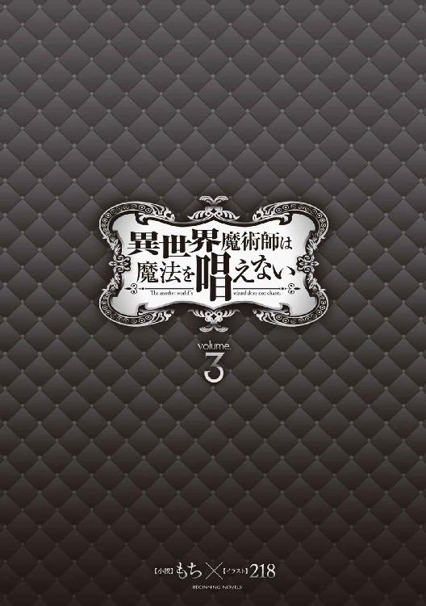
※本作品の全部あるいは一部を無断で複製・転載・配信・送信したり、ホームページ上に転載することを禁止します。本作品の内容を無断で改変、改ざん等行うことも禁止します。また、有償・無償にかかわらず本作品を第三者に譲渡することはできません。
※本作品は電子書籍配信用に再編集しております。
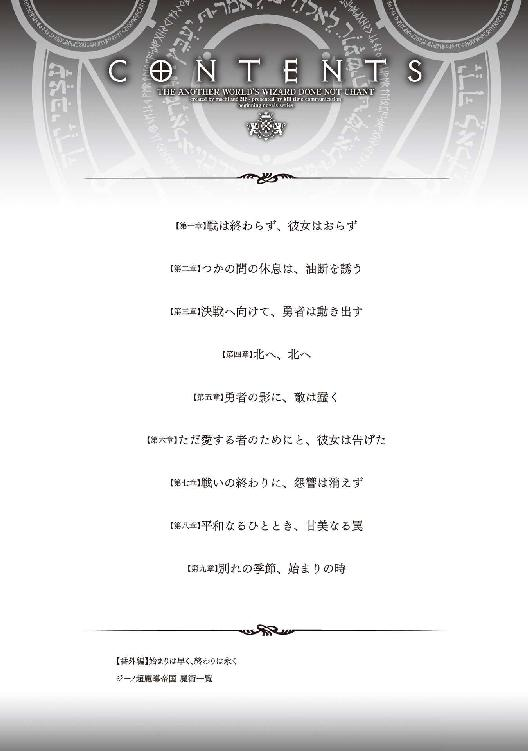
皇帝がエルによって連れ去られて数日後、魔帝国北部地域の領主達が魔帝国皇帝の名の下にネイラー辺境伯を中心とした北部連合を結成したことは、帝都を占領して勝利の気分に酔っていた王国軍にかなりの衝撃を与えた。
元々侵略国家であった魔帝国は征服した国の人間が反乱を起こすことを警戒していた。そのため皇帝が絶対的な権力を持っており、貴族達には自衛のできる最低限の武力しか保有を許さず、地方に課している税を重くして資金すら貯めさせないようにしていたのだ。
そのため一部を除いた地方貴族達は領地内でも碌に武力を揃えられないようになっており、王国軍に楯突けるだけの戦力を確保することは不可能だと思われていた。
王国軍側の人間は魔帝国軍を正面から破って帝都を占領した時点で、もはや王国の勝利は確実だと思っていたのだ。一度は捕らえた皇帝を逃がすというとんでもない失態に王国軍の将達は顔を青褪めさせ、勇者達も含めた緊急の会議が開かれることとなった。
※
参謀が現在の状況を話しているが、簡単に言えば現状は想定外だということだ。
自分達の領地と命が懸かっているのだ、帝都を占領されたくらいで抵抗が止むはずがないと思うのだが、他の人間はそうは考えていなかったようで、皆暗い表情を浮かべていた。
「そもそも何故皇帝が逃げ出せたのだ！ 地下牢に閉じ込めたとの報告が上がっていたのだぞ！ 誰の目にも留まらずに帝都を脱出するのは不可能だ！」
「隠し扉があったのではないか？ 王族しか知らない通路はあると思うが」
「そもそも誰も皇帝が逃げる姿を見ていないとは、見張りの兵は何をやっていたのだ。もしやそいつが逃亡の手引きをしたのではあるまいな？」
「地下牢は一通り調べさせましたが、周囲に空洞はなく、外から侵入できそうな箇所もありませんでした。地下牢に繋がっている隠し通路がある可能性はないと考えられます。見張りに関しましては、交代の瞬間以外は常に牢を監視していたので、その隙を狙われた可能性が高いとのことです」
彼らが叫んでいるのは今回の失態の責任を誰かに擦り付けたいからだろう。このまま実行犯が見つからないのなら、失態の責任は主に指揮官が負うことになるとは思うが、今回従軍している貴族達も王国に残っている貴族から糾弾されるのは目に見えている。
会議の進行役として選ばれたからには仕方がないのだが、怒鳴り散らすような貴族達の言葉を受けながらも慌てず冷静に返答をしていく参謀の姿には同情を覚えた。
他の勇者達の様子を窺うと、サガミは俺と似たような考えのようで、周りの反応に眉を顰めながらも自身は落ち着いていた。初めに一度だけ俺のほうを見てきたが、奴は一度転移を実体験しているので、皇帝の話を聞いてすぐに転移による犯行だと気が付いたのだろう。
アレクは周りに合わせて黙ってはいたが、周りに気付かれないよう俯けた顔には何やら嬉しそうな表情が浮かんでいた。奴が何を考えているのかは分からないが、経験からしておそらく自分の利益になりそうなことでも思いついたのだろう。
参謀の話に特に奴の利益となるような要素は含まれていなかったと思うのだが、奴は一体何を考えているのだろうか。少し気になって窃思で奴の思考を読み取ろうと思ったのだが、その前に隣に座っていたフェアリスに腕を引かれた。
「ヤード様、彼女のことは伝えておいたほうがいいのではないでしょうか？ 少なくとも皇帝が逃げることができた理由と逃げ込んだ場所は推測できていますし......」
彼女とはエルのことだ。フェアリスにはエルが皇帝を転移で連れ去ったことは伝えてあるので、先ほどから居心地が悪そうに周りの様子を窺っていた。
「確かに伝えるのなら会議はもう少し早く終わるだろうな。尤も、そうなればエルは皇帝を逃がした罪で、私は反逆者を内部に引き入れた罪で二人とも王国への反逆者となっているだろうが。私も命は惜しいので、もしそうなった場合、この場の人間を始末して逃亡するつもりだ」
「あ......そうですね......」
自分の提案がどのような結果を招くのか理解した彼女はがっくりと肩を落として俯いた。
彼女には物騒な話を伝えたが、まだ王都の屋敷を引き払う予定はないので、もし彼女にエルのことを言われたとしてもこの場の全員の記憶を消すだけに止めるつもりだ。
「それにしても、何故このようなことをしてしまったのでしょうか......」
フェアリスはエルが裏切ったことで酷く落ち込んでいた。確かに彼女とエルは出会ったときからよく話をしていたので仲はかなりいいだろう。むしろエル以外に彼女の交友関係を知らない。
「そう落ち込むな。唯一の親友がいなくなった寂しさは分からんでもないが」
「な!?」
一応フォローしてやったつもりだが、俺の言葉を聞いた彼女は小さな声で叫んだ後、顔を真っ赤にして睨んできた。睨みながらも反論が出てこないところを見ると、俺の指摘は図星なのだろう。
「わ、私だって友人の一人や二人くらいいます！ 専属だったメイドさんとか、教会の方とか......」
「仕事付き合いばかりだな。王宮か教会以外で気軽に話せるような友人はいないのか？」
「えっと......ナタリアさん......」
悩んだ末の答えが俺の関係者とは、フェアリスの交友関係の狭さは想像以上だった。まあ勇者の中でも聖女と持ち上げられて人々から崇拝にも似た感情を向けられているせいで、対等に付き合える友人は作り難いとは思う。彼女に親友がいないのも仕方ないことなのかもしれない。
慰めるように頭をポンポンと軽く叩いてやると、あまりの恥辱に堪えかねたのか、威圧感がまるで感じられない目で俺を睨みながら、ぷるぷると身体を震わせていた。
もう少しからかってもよかったのだが、先ほどからサガミが呆れた様子でこちらを見ているし、フェアリスのただならぬ様子が悪目立ちして周囲の目も集まってきたので止めにする。
周囲の視線に気が付いて縮こまるフェアリスのことを放っておいて再び会議に耳を傾けてみたのだが、俺が聞いていた内容から全く議論は進んでいなかった。先ほどから飛び交っているのは責任の擦り付け合いだけだったようだ。
そんな子供のするような議論に痺れを切らしたのか、机を叩きながらサガミが立ち上がった。
「いい加減にしろ！」
普段から厳しい顔をさらに歪めながら、人が殺せそうなほどの威圧感を感じる目つきでこの場にいる全員を睨みつけるように怒鳴ると、それまで貴族達の間で無秩序に飛び交っていた糾弾の声がぴたりと止み、一瞬で会議の場が静まり返った。
「緊急会議を開いてまで話し合うのが責任の所在なのか？ そんなくだらないことを話し合うよりも、皇帝の逃亡先だろう北部連合への対応について話し合ったほうが建設的だ」
「た、確かにその通りですな」
サガミの雰囲気に恐れをなした貴族達は、それまでの態度を一変させて愛想笑いを浮かべながら奴の言葉に追従していた。何とも都合のいい連中だとは思うが、言葉にはしない。
「対策と言われましても、サガミ様はいかがお考えなのでしょうか？ 敵軍から食料などを奪えたとはいえ、我が軍は元々帝都の占領までを目的としていました。このまま北に進軍できるほど物資に余裕はなく、連戦による士気の低下も無視できません」
「参謀殿、帝都の治安維持のためにもそれなりの兵は残しておく必要があるが、それを差し引いても物資に余裕はないのだろうか？」
「ありません。元々軍の一部を占領後統治のため残しておく想定はしていましたので、帝都に留まる兵達の分と帰還する兵達の分は残してありますが、進軍するとなると到底足りません」
「そうか、それでは仕方ないな」
サガミは参謀の話を聞いて素直に席に着いた。奴も元は軍人なので、兵站が整っていない状態で進軍を提案するほど馬鹿な発言はしないようだ。指揮官も参謀とサガミの話を聞いて納得したように頷いている。このままいけば帝都に最低限の戦力を残して、何事もなく撤退の準備に入れそうだ。
だが折角撤退で纏まりかけていた空気の中、アレクが自信に満ちた表情で立ち上がった。
「サガミ殿の意見はよく理解できた。魔帝国軍との決戦は終始こちらが優勢のまま終わったとはいえ、確かに慣れない土地で兵達の疲労も相当に溜まっていることだろう。だがしかし、このまま王都に帰還して、本当に魔帝国に勝利したと言えるのだろうか！」
堪えきれない内心を表すかのように腕を大きく振りながら喋るアレクの姿に魅入られたのか、今まで静観していた貴族達も奴の話に引き込まれるかのように次の言葉を待っていた。
今回は出兵してから終始大人しかったので、このまま余計なことを口走らないことを祈っていたのだが、どうやら俺の祈りは届かなかったようだ。
「国王陛下が我らに命じたのは、魔帝国を倒し、長年の因縁に終止符を打つことだ！ だが皇帝が逃げ出し、残った貴族も連合を組んで王国への敵対を止めていない！ 我らはまだ陛下の命を果たしてはいないのだ！ ここで逃げ帰ったところで、臆病者と謗りを受けてしまうに違いない！」
「そ、そうだ！ 我らは魔帝国を滅ぼしに来たのだ、中途半端に終わったまま帰れるわけがない！」
アレクの言葉に感化された貴族の一人が声を上げると、他の者達も次々に同意を示した。
王国の貴族は未だに無駄な誇りや騎士道を捨てられない者が多く、この会議に参加していた人間にも、そういった考えの者が多かったようだ。
「アレク殿、先ほど参謀殿も言われたが、進軍を選べるだけの物資はないそうだ。攻めるにしても王都からの追加支援を待ってからでも遅くはないと思うが」
「占領した町の民から徴発すればいい。元々魔帝国を支持していたのだ、これから何のお咎めもなく王国の庇護下に入るのならば、これくらいは尽くしてもらっても構うまい」
「それでは民の反感を買ってしまいます。今までは魔帝国の民であったとしても、占領後は王国の民になるのです。そんな彼らの恨みを買っては統治にも悪影響が出てしまいます」
「徴発するといっても、北部連合とかいう魔帝国の残党を狩るまでの間だ。多少の犠牲は厭わない覚悟で臨まなければ、倒せる敵も倒せなくなってしまう」
サガミと参謀の言葉にアレクが反論するたび、周りの人間が賛同の声を上げて支援している。正論を言っているのはどちらかといえば二人のほうなのだが、調子に乗った今の奴に何を言っても考えを曲げることはできないようだ。
サガミの威圧感に押されて黙っていた貴族達も、内心では進軍を提案したかったのだろう。奴と同等以上の立場であるアレクが進軍を提案したことは彼らにとって渡りに船だったというわけだ。
「ヤード様、このままでは進軍に決まってしまうのではないでしょうか......？」
あまりよろしくない方向に盛り上がっていく場の雰囲気に恐怖を覚えたのか、フェアリスは先ほどから無意識に俺の服を掴んでいた。
彼女も進軍は何とか止めたいと思っているようだが、彼らを説得するためのいい考えは浮かんでいないようで、俺にこの場を収めてもらいたいと思っているのだろう、瞳を潤ませながら俺の顔を見つめてきた。
彼女に絆されたというわけではないが、俺としてもこの場を収めたい。あの様子ではサガミ達が止めてくれるのを期待するのも無理なようだ。俺は軽く嘆息してから立ち上がった。
「アレク殿、魔術師部隊はこれ以上の従軍は拒否させてもらう」
「な、何故だ!?」
「魔術師は肉体的な疲労以上に魔力と精神力を消耗している。予定外の進軍をしても十全に働ける可能性はほとんどなく、まともに機能するか分からない部隊を出撃させるわけにはいかない」
今まで特に発言もしなかった俺が進軍に反対を表明するとは思っていなかったのか、アレクは自信に満ちた余裕の態度を崩して、少し焦ったように周囲を見回していた。
実際は使い物にならないほど疲弊しているわけではないのだが、門外漢の貴族達にはそんなことが分かるわけもなく、彼らは苦り切った顔でこちらを睨みつけてくるだけだった。
「決戦もすぐに終わり、従軍に支障が出るほど疲弊している魔術師はそれほど多くはないだろう。それにこちらに寝返った魔術師もいるのだ。動ける者だけ集めていけばいいのではないか？」
「確かに第二魔術兵団は王国側に寝返ってくれたが、先の決戦で姿の見えなかった第一魔術兵団は北部連合の指揮下に入っている可能性がある。本来魔術師は圧倒的に防衛戦のほうが得意なのだ。無策で突撃しても圧勝するどころか、返り討ちに遭う確率のほうが高いと思うのだが？」
「むぅ......」
「皇帝を取り逃がして焦る気持ちは分からんでもないが、急ぎ失態を取り戻そうとして無策で出撃させるのも相手の策なのかもしれないぞ？」
アレクはしばらく唸りながら考えを巡らしていたようだが、いくら考えても妙案は出なかったのか、降参するように頭を振ってため息を吐いた。十分な魔術師が確保できない状態で戦いに臨むのは無謀だと理解してくれたようだ。
そして進軍を提案したアレクが折れたので、奴に賛同していた貴族達もそれ以上進軍を強行するような発言はしなかった。これで無謀な突撃をしなくてよくなったと言わんばかりに参謀もこっそりとため息を吐いたのが見えた。
「では北部連合への対応はどう致しましょうか？」
「相手がどう出てくるか分からない以上、予定よりも帝都に駐留させる兵数を増やして警戒態勢を取っておくのがいいのではないか？ 防衛に徹するならば現在動ける魔術師だけでも十分可能だろう。王国からの支援が届き次第攻勢に出ればいい」
「私もそれに賛成だ。まずは敵勢力を確認するための時間が必要だ」
とりあえず当たり障りのない意見を言ってみると、サガミもそれに賛同していた。アレクや奴に賛同していた貴族は多少不満が残っているようだが、気にするほどのことでもないだろう。
これで王都に帰ることができる。その後の細かいことはサガミ達に任せることにしよう。
※
「お帰りなさいませ、ご主人様！」
煩わしいだけの会議も終わり、帝都で宿代わりに使っているグラン家の屋敷に戻ると、玄関先で俺の帰りを待っていたオリンピアが出迎えてくれた。
いつ帰ってくるかも分からないというのに、律儀に俺の帰りを待っていた彼女の忠誠心溢れる姿は犬のように思える。気まぐれに頭を撫でてやると、嬉しそうに顔を綻ばせていた。実際に犬を飼ったらこんな感じになるのだろうか。
ひとしきり撫でてから手を離すと、彼女は名残惜しそうな目で俺の手を見てきたがそれも一瞬のことで、すぐに真面目な顔つきに戻った。
「ご主人様、魔帝国軍第二魔術兵団は王国軍の指揮下に入ることになりました」
「そうか、指揮はお前が執るのか？」
「いえ、私は軍を辞めさせていただきました。当主の座も弟に譲ったので、何の気兼ねもなくご主人様に仕えることができるようになりました」
普通の人間ならば捨てるのが惜しくなるような役職や爵位でも、今の彼女は己の立場を縛るものとしか捉えていないようだ。人格を操作して忠誠心を最大まで上げた俺が言うのも何だが、彼女の思い切りのよさには少々心配になってくる。
「帝都の様子はどうだ？」
「平民には極力被害を出さないよう動いていたおかげで、今のところ落ち着いています。それと出入りの商人を通して商人ギルドから王国との交易を許可して欲しいと嘆願書を受け取っています」
「交易は私の権限で許可ができないので、軍に回してくれ」
交易を認めさせる代わりに物資の輸送を手伝わせれば都合がいいとは思うが、それは俺の関知するところではないので軍に丸投げしておく。
それにしても、ある程度は起こるだろうと予想されていた民の反発はなかった。帝都が王国に占領されたことに関して、民から特に不満の声は上がっていないのだ。これは元々魔帝国自体が実力主義的な政策を取っていたためだろう。
「民の反発がないのなら、ひとまず帝都を離れても大丈夫そうだな」
「ご主人様は王国に帰還するのでしょうか？」
「ああ、エルの動向も気になるところだが......せめて転移を使ってくれれば居場所の特定もできるのだが、流石に警戒されているようだ」
空間跳躍系の術式は、効果範囲の空間自体を捻じ曲げるその仕様上、完全に隠蔽することは不可能だ。精密探知を行えば一瞬で発生場所の特定まで可能となってしまう。現に帝都の地下牢には僅かに空間を捻じ曲げた痕跡が残っていた。
「おそらく一度はネイラー辺境伯領に向かったとは思いますが、有力な情報はありません」
「私やエルほどの魔術師が本気で姿を晦ませたのなら、正攻法で見つけるのはほぼ不可能だろう。最低でも本人の術式抵抗を破れる強度の魔力探知が使えなくては話にならない」
「ご主人様ほど強大な魔術師はいないと思うのですが......」
エルの捜索はほぼ不可能だという話を聞いて、オリンピアの表情が曇った。特に情報収集を頼んだ記憶はなかったので、俺への点数稼ぎをするつもりだったのだろう。
偶然見つかる可能性もないわけではないので、捜索を止めるよう言うつもりもない。
予定が狂ったのか、悩み始めたオリンピアだったが、ふと何かを思い出したように顔を上げた。
「そういえば、エヴァーツ侯爵夫人とその娘二人はどう扱えばいいのでしょうか？」
「ああ、今はどうしている？」
「帝都襲撃の混乱に乗じて失踪したことになっていますが、現在はこの屋敷で軟禁中です。ただ彼女達は帝都では有名なので、このまま匿い続けるのは少し無理があるかと」
「ふむ、お前も王都に連れていくと、彼女達を匿ってくれる人間がいなくなってしまうな......」
三人とも人並み以上の美人であるだけでもそれなりの価値がある。さらにセリアとクレアはあのエヴァーツ侯爵の血を引いているので、魔術師としての才能も期待できる。
元はエヴァーツ侯爵に復讐するために利用しただけだったのだが、支配まで使って手に入れた彼女達をここで手放すのは惜しい。
「オリンピア、メルヴィナ達のところに案内してくれ」
「分かりました」
彼女は俺の言葉に頷くとすぐに目的の部屋へと歩き出した。
エヴァーツ侯爵に復讐を遂げた後、しばらく彼女達と会っていなかったのだが、機嫌を損ねていないことだけ祈っておくことにしよう。
オリンピアの案内で目的の部屋へと到着すると、どうやら三人とも茶を嗜んでいるところだった。メイドが彼女達の世話をしている光景はおよそ軟禁中とは思えないが、侯爵夫人とその令嬢であることを考えるとこれが普通なのかもしれない。
三人は部屋に入ってきた俺をきょとんとした顔で見ていたが、まず初めにクレアが我に返り、俺を押し倒すような勢いで抱きついてきた。
「ヤード様、あれから全然会いに来てくれなくて、とても寂しかったのですよ！」
「済まないな、こちらも色々と忙しかったのだ」
頬を膨らませて感情を表しているのは幼さを感じさせるが、母親似の少し潤んだ垂れ目で上目遣いにこちらを見上げてくる姿には、女性の色気を感じなくもない。
苦笑しながら頭を撫でてやると、オリンピアと似たような反応を返してきた。
「あ、クレア！ 抜け駆けなんて卑怯よ、離れなさい！」
「嫌です！ 今日は一日中ヤード様にくっ付いています！」
妹に続いて姉のセリアも近寄ってくると、俺に抱きついている妹を引き剥がしに掛かった。姉妹の仲がいいのは分かるが、オリンピアという他人の目があることを忘れているようだ。まだまだ母親のような大人の女性には程遠いようだ。
姉妹がじゃれ合っているのを眺めていると、メルヴィナもいつの間にかすぐ近くに立っていた。
「お久しぶりですね、ヤード様」
「ああ、戦争中とはいえ不自由な思いをさせて済まない」
「いえ、お気遣い感謝致します」
下品にならないよう儚げに微笑んでいる様は、まさに淑女と言わざるを得ない。侯爵夫人ともなれば、伊達に貴族社会の中で生きてはいないということなのだろう。
「ヤード様はこの後、何かご予定でも？」
「いや、先ほど会議を終えて戻ってきたところだ。何か問題が起こらない限り、用事はない」
「そうですか。ちょうど今娘達とお茶を嗜んでいたところなのです。よろしければヤード様もご一緒にいかがでしょうか？」
メルヴィナはさりげなく胸の谷間へと挟むように俺の腕を取ってきた。彼女のドレスは胸元が大きく開いているために素肌が直接当たり、その人並み外れた巨乳が俺の腕で潰されて形を変え、柔らかく温かな感触を伝えてくる。
彼女の素晴らしい胸の感触をもう少し楽しんでいたかったのだが、それは唐突に割り込んできたオリンピアによって中断されてしまった。
「お茶以外にやることがないからといって、昼間から畜生のように盛ってご主人様を誘惑するのは止めてもらえませんか、侯爵夫人様？ ああ、もう侯爵家は潰れたも同然でしたね、済みません」
オリンピアは明らかにトゲのある言葉でメルヴィナを詰っていた。二人は元々対立していた家同士なので、あまり仲はよくないようだ。尤も、嫉妬が混ざっているせいでもあるのだろうが。
「疲れを癒して差し上げようとしていただけなのですが、ヤード様をお茶に誘うのに貴女の許可が必要なのでしょうか？」
「貴女方三人は軟禁中なのですよ？ 少しは自分の立場を理解して欲しいものですね」
「ヤード様、オリンピア様はどうやらご機嫌斜めなようですので、お茶は私達だけで楽しむことにしましょう」
「あ、お母様！ 私もご一緒します！」
「私もヤード様とお話ししたいです」
不機嫌な様子を隠しもせずに噛み付いているオリンピアとは違い、メルヴィナは相手の言葉を話半分に聞き流して微笑んでいた。そこに追撃のように娘二人も加わったことにより、完全にオリンピアが劣勢となっていた。
悔しそうに三人を睨みつけている姿を見て、同情を表すように頭に手を置いてやった。家の関係で仲が悪いのは仕方がないが、少しはお互いに歩み寄る努力をして欲しいと思う。
「お前の気持ちも分からんではないが、茶に誘うくらいは許してやれ」
「......はい」
渋々といった感じだが、まずはこの程度でいいだろう。
オリンピアの言葉を聞いたメルヴィナは、話はついたとばかりに俺の腕を引いて席へと案内し、セリアとクレアが俺の両隣にすばやく着席した。多少強引な気はするが、元々参加はするつもりだったので、少々のことは気にしないようにする。
席に座った俺にメイドがティーカップを差し出してきたので、受け取って飲んでみた。出された茶はハーブティーだったようで、爽やかな香りと味で疲労が幾分か取れる気がした。
「ヤード様、いかがでしょうか？」
「ああ、たまにはこうやって茶を嗜むのも悪くないな」
そうしてしばらくは茶と菓子の香りと味を楽しみつつ、俺の話を聞きたがるセリアとクレアの相手をしてゆったりとした時間を過ごした。そして話がひと段落した頃、彼女達に会いに来た理由を話すことにした。
「私はそう遠くないうちに王都へ帰還することとなるだろう。その際オリンピアも連れていくことになっているのだが、そうするとこの屋敷でお前達を匿うことも難しくなってくる。そこでお前達を王都に連れていこうと思うのだが、どうだろうか？」
「ヤード様のお屋敷に、でしょうか？」
「ああ、その場合お前達の身分は隠してもらい、メイドとして連れていくことになるだろう。そうなれば今までのような暮らしはできなくなる」
三人とも生粋の貴族であり、働くこととは無縁の人生であったはずなので、使用人としての生活は想像以上に厳しいものとなるだろう。
セリアとクレアはその厳しさが想像できないのか、俺の話を聞いてもいまいち理解できていなそうな表情を浮かべているが、メルヴィナは俺の話を理解してある程度はその大変さを想像できているのか、微笑みを消して真剣な顔つきになっていた。
「そのお話、断った場合はどうなるのでしょうか？」
「その場合はここに留まってもらう。今までのような生活は保証されるが、もしどこかからお前達の存在が漏れてしまえば、敵国の貴族として捕らえられて終わりだ」
「分かりました。では私達はヤード様と共に王都へと参りましょう。もとよりヤード様と離れるような選択をすることはありません。娘達も同じ気持ちだと思います」
セリアとクレアはメルヴィナの言葉に同意するように頷いていた。あまり事の重大さが分かっていないような気もしたが、本人が選んだならば是非もない。
「そうか、ではお前達も連れていくことにしよう。お前達には苦労を掛けることになるが、何かあれば言ってくれ。私のできる範囲でならば善処しよう」
「あ、それなら一つお願いがあります」
今まで黙っていたクレアが、その言葉を待っていたかのように食いついてきた。
※
夜も更けて外が闇に包まれた頃、俺がベッドに横になっていると、部屋の扉が開く音がした。薄暗い中で月明かりを頼りに入ってきた影は二つ。褐色の肌が暗闇にまぎれて少し見え辛いが、月光が照らし出したその人物は、セリアとクレアだった。
二人は足音も立てずにベッドの傍まで近付くと、着ていた服を脱ぎ捨てて上がってきた。そして俺を挟むように左右に横になって、二人とも俺に抱きついてきた。
「随分と遅かったな」
「それは、その、準備に時間が掛かったので......」
俺の質問に、セリアは恥ずかしそうに目を逸らしながら答えた。年頃の娘なので夜伽をするにも色々と準備が必要なのだろう。
彼女の身体からは仄かに香水の匂いが漂っていた。無粋な質問をしてしまったお詫びとして、彼女の額に口付けしてやると、照れながらも嬉しそうな顔を見せた。
「むぅ、私のことも忘れないで下さい」
クレアは姉が先に構われているのがお気に召さなかったようで、自分にも構って欲しいとばかりに薄い胸を腕に擦り付けて俺の気を引こうとしていた。
姉と比べると少々幼い反応に苦笑しそうになるのを堪えて、彼女にも求められるままに口付けをしてやった。
以前は本当に唇を合わせるだけだった口付けも、いつの間にか自分から舌を入れてくるようになっていた。まだ上手く息ができないようだが、幼さの残る顔立ちの彼女が俺に奉仕しようと懸命に舌を絡ませてくる背徳的な行為は、いつもとは違った興奮を与えてくれる。
クレアとの口付けを続けていると、手持ち無沙汰になったセリアが俺の首元に顔を埋めて舐め始めた。熱い吐息と共に、舌の少しざらざらとした感触が俺の首筋を這っているのが分かる。時折吸い付いたり、甘噛みしたりして俺の反応を確かめているようだ。
それと同時に彼女は俺の下半身へと手を伸ばし、指の先で肉棒を捉えると、服の上から先端を中心に弄り始めた。それも僅かに感触が感じられるかどうかといった力加減だった。
絶妙な力加減の刺激は、直接触られるのとは違って少々もどかしさを感じてしまい、もっと刺激が欲しいとばかりに、無意識に彼女を引き寄せて抱きしめていた。
「んんっ......ふっ......」
姉の行動に張り合うように、クレアは口付けを続けながらも姉と同じように手を俺の下半身へと伸ばし、服の上から俺の物をゆっくりと撫でて刺激してきた。柔らかな手のひらで撫で回すように擦りながら、次第に興奮で彼女の息が熱を帯び、呼吸も少しずつ荒くなってきた。
彼女達のような美少女姉妹に、競い合うように奉仕をしてもらうことによって、優越感と共に興奮も高まってきており、服を着たままでは少し辛いほどに肉棒も硬く勃起していた。そのことは二人もよく分かっているようで、二人は一旦奉仕の手を止めていた。
「セリア、クレア。俺は一切動かずに、お前達が奉仕をしてくれるという話だったな？」
「はい、ヤード様は先日の戦いでお疲れだと思いましたから」
「お姉様、提案したのは私ですよ」
昼間、メルヴィナ達に今後の話をした後、できる範囲でなら願いを聞いてやると言った瞬間にクレアが俺への奉仕をしたいと言い出したのだ。特に断る理由もないので受けたのだが、その話を傍らで聞いていたオリンピアの表情が物凄いことになっていた。
ともかくそんなわけで、今日は横になったまま、行為は全て彼女達に委ねることになっている。確かに腰を振るのも体力を使うので、動かなくていいのは素直に嬉しい。
「大丈夫です。お姉様と一緒に、お母様から男の人を満足させる手法は教わりました」
「もう、クレア！ そういうことは言わなくていいの！」
自信に満ちた表情で技を教えてもらったことを伝えてきたクレアに対し、セリアは秘密にしておきたかったらしく、薄暗い中でも分かるほどに顔を真っ赤にしながら妹に抗議していた。
「んん、こほんっ。......ではヤード様、始めさせてもらいますね」
先ほどのやり取りを誤魔化すように軽く咳をした後、二人は俺の下半身のほうへと身体をずらし、服を脱がせて俺の物を露出させると、向かい合った状態からお互いの胸で俺の肉棒を挟み込んだ。
だが、クレアの胸は僅かな膨らみがあるだけなので、当然ながらセリアの胸の谷間に大部分が挟まる形となった。
「......お姉様のように、上手く挟めません」
クレアは何とか谷間を作ろうと横から肉を持ってこようとしていたが、人形のように細い彼女の身体には持ってこられるほどの肉が付いていなかったようだ。
彼女達がやろうとしている行為は何となく予想がつく。二人の胸で肉棒を挟んでパイズリをしようとしていたのだろう。
だがしかし、それをするには明らかに胸の膨らみが足りなかった。何度か試した後で本人もそのことは十分に理解したようで、谷間を作るのを諦めていた。
二人は俺の肉棒に唾液を垂らして滑りをよくした後、胸を使って扱き始めた。ぬちゃぬちゃと粘着質な音を響かせながら息の合った動きで肉棒を扱かれるのは、想像以上に気持ちがよかった。
窓から差す月明かりが二人の唾液に濡れた褐色肌を仄かに照らし出し、年に見合わない怪しげな魅力を醸し出しているのも、俺の興奮を煽ってきていた。
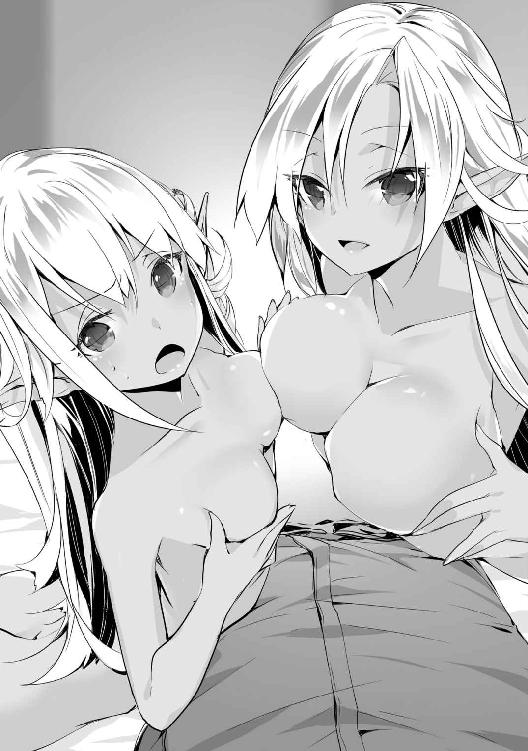
「ど、どうでしょうか、ヤード様？」
「ああ、なかなかのものだ。そのまま続けてくれ」
セリアの胸は既に女性として十分なほど育っている割にまだ成長途中のようで、肉棒を柔らかく包み込みながらもまだ芯に硬いものが残っている感触があった。この調子で育っていったのならば、将来は母親と同等以上の巨乳になることだろう。
以前よりも積極的に動くようにはなっていたが、まだ男女の行為に対し恥じらいも残っているらしく、困ったように眉を顰めながらも頬を赤く染めて俺の物に奉仕している姿がいじらしい。
「お姉様ずるいです！ 私ももっと胸が大きかったら、ヤード様に喜んでもらえるのに！」
クレアも姉と同じように胸で俺の物を扱こうとはしているが、挟めるだけの物を持っていないので、あまり起伏のない胸で擦るだけとなっていた。将来は胸も大きくなるのだろうが、今の彼女には胸の脂肪どころか全身に余計な肉が付いていないので、肋骨の硬い感触まで伝わってきている。
だが彼女の滑らかな肌に擦れる感触だけでも十分に快感は得られるし、薄い胸を懸命に使って俺に奉仕をしている姿を見れば、肉棒に与えられる快感以上に精神的な充足感を得ることができた。
「クレア、お前の熱意は伝わっている。今胸がないからと悲観することはない」
「は、はい！ 有り難うございます！」
慰めとしては微妙な言葉だったが、その一言で元気を取り戻してくれたようだ。奉仕にも熱が入り、二人の胸から飛び出た肉棒の先端を手のひらで優しく撫で回してきた。先端は敏感なので、かなりの快感に思わず腰が引けそうになるのを堪えながら、彼女の奉仕を受け入れる。
そしてセリアも妹の勢いに負けないよう、自分の胸ごと肉棒を左右から捏ね回すようにしてきた。ちょうど裏筋の辺りが刺激されて、こちらも結構な快感を味わわせてもらった。
二人とも以前よりも格段に夜伽のスキルが上がっていた。おそらく全て母親であるメルヴィナから仕込まれた技なのだろうが、ここまで彼女達が上達するとは思ってもいなかった。
「あ、何か出てきました！ あれ？ でも白くないですね」
「それは射精じゃなくて、その......気持ちよくなったときに出る物だって教わったでしょ」
クレアは液体の正体が分かった後も、手に付いたそれを不思議そうに見ていたが、動きが止まっていたのをセリアに急かされて、慌てて奉仕を再開した。
二人の熱心な奉仕のおかげで、俺も大分余裕がなくなってきている。正直二人の胸での奉仕は期待してなかったが、いい意味で期待を裏切ってくれていた。
俺が普段相手にしているのはソフィやティアのような巨乳の持ち主ばかりなので、いまいち残念な胸の持ち主との経験はなかったが、彼女達のおかげで新たな境地を発見できた気がする。
「さっきよりピクピクしてる......そろそろ出そうなのかも」
「本当ですか、お姉様？ じゃあもっと気持ちよくなってもらわないとダメですね」
俺の絶頂が近いことを知ったクレアは、細い指で鈴口を刺激してきた。普段触られることのない部位を集中的に攻められることにより、今までの巧みな技により残り少なかった俺の我慢も限界となり、堪えきれずに射精してしまった。
「きゃっ!?」
「凄い......男の人の射精はこんな風にするのですね」
勢いよく出た精液が彼女達の顔や胸に掛かり、褐色の肌を白い物で汚していく。二人はそれを嫌がるどころか、自分の顔や胸に付いた物を指で掬い取って舐めていた。
「お姉様、ここにも付いていますよ」
「あ、ちょっとクレア、私の分を取らないで」
クレアは姉に顔を近付けると、舌を伸ばして取り切れていなかった精液を舐め取った。だがセリアは自分の分を取られるのが気に食わなかったようで、まだ精液を飲み込んではいなかった妹の口に無理やり舌を入れて、取られた分を取り戻そうとしていた。姉妹が俺の精液を求めて舌を絡め合っている光景には素晴らしいものを感じた。
そして自分の身体に付いた分を取り終わったセリアは、妹が酸欠で朦朧としている隙に俺の肉棒を咥えて、手で扱きながら中に残っていた精液を吸い出していた。だが敏感になっているところに刺激が加わったことにより、俺の肉棒が再び硬さを取り戻していた。
「あ!? お姉様、ずるいです！」
「油断していたクレアが悪いと思うけど......それじゃ、この後は譲ってあげる」
「うぅ......本当ですか？ もう約束しましたからね？」
先を越されて悲しそうな声を出していたクレアだったが、姉の言葉ですぐに気を持ち直した。そして俺の身体を跨ぐように膝立ちになり、肉棒の先端を自らの秘裂に宛がった。
先ほどの奉仕で挿入には十分なほどの愛液が溢れ出ており、滑りがよくなっているせいで肉棒を入れようとしては外れてしまうのを何回か繰り返した後、割れ目に肉棒の先端が少し沈み込んだ。
「ヤード様、次はここでご奉仕させてもらいます」
待ちきれないといった様子で俺へ言葉を掛けた後、ゆっくりと腰を下ろしていった。
まだ小さい割れ目を広げながら肉棒が沈み込んでいくが、経験が少ない上にまだ性的に身体が整っていないのもあって、少し入れるだけでもかなりの抵抗と締め付けがある。
「んっ、ふぅ......ん、んっ」
苦しそうに表情を歪めながらも何とか奥まで挿入できたのまではよかったが、彼女の膣口は俺の物をしっかりと締め付けており、そこから腰を動かすのは厳しいようだ。
「クレア、苦しいのならばあまり無理をしなくてもいいぞ？」
「い、いえ......大丈夫です。頑張ります」
肉棒をかなりきつく締め付けながらも動き始めたクレア。その姿を見かねたのか、徐にセリアが彼女の後ろから抱きつくと、妹のツルツルとした肌の上で手を滑らせて、彼女の弱点でもあるクリトリスを指で軽く押し潰すように摘んだ。
「あぁっ!? お、姉様っ！」
「クレア、もっと力を抜きなさい。でないとヤード様の物を入れたまま動けないでしょ？」
妹を一度驚かせた後、今度は痛みで強張った身体を解すように優しく愛撫を始めた。時折敏感なところを刺激しながらも、セリアの指がクレアの未熟な胸やほっそりとしたお腹の上を這いまわる。
姉妹が絡み合っている光景は素晴らしく、自然とこちらの肉棒も硬さを増した。だが次第にリラックスして解れたクレアの膣内は、大きくなってしまった俺の物も何とか収めることができた。
それはクレアも理解したようで、姉に愛撫を続けられながらも、さほど抵抗もなくスムーズに腰を振り始めることができたようだ。
「んっ、ヤード様、どうですか？」
自らクリトリスを擦り付けるように腰を前後に動かしながら、蕩けた声で尋ねてきた。その表情には幼い背丈に似合わない淫蕩さを感じさせるものがあった。
擦り付けられた俺の下腹部は溢れ出た彼女の愛液でしとどに濡れており、彼女の股間と擦れるたびに粘着質な水音を響かせてこちらの興奮を煽ってきている。
自分も快感を得ているようで、時折膣内がきゅっと締め付けを強くするのだが、先ほどよりも具合のよくなったおかげで、俺の肉棒を締め付けるのにちょうどいい力加減になっていた。それを続けられれば、先ほど出したばかりの俺の物も予想以上に早く限界を迎えそうになっていた。
「や、ヤード様のがっ！ ビクビクしてきました、あぁっ！」
「くっ！ されるだけというのも、なかなか辛いものだな！」
俺がそろそろ限界なのを感じたクレアは、さらに腰の動きを大きくして、俺の射精を促してきた。
自分でやるならばペースを調節できるのだが、こうやって奉仕されるだけだとそれも難しい。特に寝転がった状態では力も入れにくいため、彼女の攻めにあっさりと陥落し、俺は絶頂を迎えた。
「クレア、出すぞ！」
「はい！ あぁああああああっ！」
俺の精液がクレアの膣内に勢いよく打ち付けられ、その快感で彼女も絶頂したようだ。俺の物を搾り取るような膣の動きは、彼女の身体も既に女性としての働きを始めていることを感じさせる。
俺の上でビクビクと身体を震わせた後、ぐったりと俺のほうに身体を預けてきた。結合部からは俺の精液と彼女の愛液が混ざり合って泡立ったものが垂れてきていた。
「はぁ......ヤード様のお胤でいっぱいです」
「はい、クレアはこれでお仕舞いね。次は私の番だから、早く退いて」
「え？ きゃあっ！」
絶頂の余韻を感じつつ、嬉しそうに自らの下腹部を触りながらそう呟いたクレアを、徐にセリアが引き剥がした。少しくらいは休ませてやってもよさそうなものだが、どうやら妹が乱れていた姿に当てられて、待ちきれないほどに興奮してしまっているようだ。
満足そうな笑顔から一転して不満がありありと表れた表情で姉を睨みつけていたが、当の本人は全くこたえていないようだ。彼女達にとって、この程度のやり取りは日常茶飯事なのだろう。
妹の抗議の視線を軽く受け流したセリアは、今出したばかりの肉棒へと顔を近付け、精液と愛液でべったりと汚れたそれを躊躇いなく口に咥え、汚れを落とすように舐め始めた。
身内とはいえ同性の愛液を舐めるのには抵抗がありそうな気もしたが、よく考えれば先ほども姉妹で口付けをしていたような気もする。そういったことは気にならない性質なのだろうか。
「んっ、凄くヤード様の匂いがする......」
肉棒に付いた精液を全部舐め取り飲み込んだ後、一瞬だが恍惚とした表情を見せていた。その光景に興奮を覚えたのと、舌で刺激されたことにより、俺の肉棒も再度硬さを取り戻していた。
セリアも妹と同じように俺を跨ぐように膝立ちとなり、同じように肉棒を秘裂に宛がった。
「ヤード様、それでは始めさせてもらいますね？」
「ああ、いつでもいいぞ」
俺の許可を得たセリアが腰を下ろすと、クレアのときとは違ってスムーズに挿入することができた。入れる際にほとんど抵抗はなかったが、決して緩くなっているわけではなく、ある程度は締め付けを自分の意思で調整しているようだ。
実際締め付けの強弱をつけることによって、まるで手で扱かれているかのような感覚を味わっている。妹のほうは全体的にかなりきつくなっていたが、妹と同じ回数しか経験していない彼女がここまで巧みな技術を身につけているとは予想もしていなかった。メルヴィナも知識やある程度の技術を教えることはできるが、締め付けの技術を伝えるのは流石に無理があるだろう。
疑うような視線から俺の考えを読み取ったのか、彼女は何かを伝えようと口を開き、やはり考えを変えたのか、途中で口を噤んで恥ずかしそうに顔を逸らしつつ、横目で俺を見つめてきた。
「その......自分で練習しました......」
そう言い切った後、羞恥心が限界を迎えたようで、顔を真っ赤に染めて俯いた。特に自白を強要したわけではないのだが、見事に自爆したようだ。照れるのは構わないのだが、動きが止まっているのはいただけないと思う。
「そうか、ではその成果を見せてもらおうか」
「は、はい！」
俺の一言は相当嬉しかったようだ。恥ずかしさで泣き出す一歩手前くらいになっていた顔が一瞬で笑顔になり、膣内も彼女の喜びを表しているかのように俺の物を強く締め付けた。
それからの彼女のテクニックは妹の比ではなかった。まだ処女を失ってそれほど時間も経っていないというのに、男を喜ばせるための技は経験豊富な女性陣に少し劣る程度にまで上達しており、三回目で少し性欲もなくなってきた俺にも通用していた。
腰を上下や前後に動かすだけでなく、ときには円を描くように回し、腰を振る速さにも緩急をつけて飽きさせないようにしているだけでなく、膣内も締め付けを巧みに操って俺を翻弄していた。
「あぁっ！ ヤード様、ヤード様ぁ！」
当然彼女も自分の身体を使って奉仕しているため、俺の肉棒に何度も奥まで貫かれて、俺の名前を叫びながら情欲に蕩けた顔を晒していた。妹よりも恥ずかしがり屋だと思っていたのだが、一度箍が外れてしまえば妹以上に積極的になるようだ。
「ぐっ、そろそろ限界のようだ！」
「は、はい！ 私もそろそろイッちゃいま、あ、あぁああああ！」
俺よりも先にセリアのほうが絶頂してしまったようだ。俺の物を逃がさないとばかりに膣内は今まで以上の締まりを見せ、その刺激が最後の引き金となり、俺の上で絶頂の快感を味わっている彼女の中にたっぷりと精液を注ぎ込んでやることとなった。
俺の射精が終わった後もまだ小さく身体を跳ねさせている彼女を下ろし、妹とは反対側に寝かせてやると、嬉しそうに俺の身体へと身を擦り寄せてきた。
「ヤード様、次はまた私の番ですよね？」
姉の奉仕が終わったので次は自分の番だとばかりに俺の上に乗ろうとしてくるクレアを止める。彼女達はまだ一回ずつしかやっていないため体力が余っているようだが、俺はもう三回連続で射精しているため、体力の消耗具合は彼女達の比ではない。
「クレア、悪いがこれ以上続けるのは厳しい。逆に体力を使い果たしてしまいそうだ」
「そうですか、分かりました......」
少し残念そうな顔をしたクレアが、姉と同じようにベッドに横になって俺の身体へと擦り寄ってきたので、姉妹に挟まれながら寝転がっている形となった。
「ヤード様、その、満足してもらえたのでしょうか？」
「ああ、十分だ」
少し時間を置いたおかげで普段通りに戻ったセリアは、恥ずかしそうに視線を逸らしている。そんな彼女と、ついでにクレアも。二人の働きを労うように頭を撫でながら、そろそろ眠気も襲ってきたことなので、二人を横に侍らしたまま寝ることにした。
※
翌朝、部屋の扉を叩く音で目が覚めた。汗でべとつく身体を拭いて身支度を整え、隣で寝ていた二人を起こさないよう静かに部屋を出ると、外にいたオリンピアが声を掛けてきた。ほんの僅かだが、焦って落ち着きがなくなっているような雰囲気を感じる。
「ご主人様、お客様がお見えになっています」
「客？ 一体誰だ？」
「エレインという方です。王国軍に協力している方だと聞きました」
「ああ、確かにそれは私の知り合いだ。すぐ向かうとしよう」
オリンピアに案内されて応接間に向かうと、そこにはいつもと変わらぬ無表情で使用人に接待を受けているエレインの姿があり、傍には帯剣した護衛役のエルフが立っていた。俺が部屋に入ってきたのを見ると、無表情だった口元が微かに嬉しそうに上がっていた。
「済まないな。つい先ほど起きたところで準備に少し手間が掛かった」
「いえ、それほど待っていたわけでもないので、どうかお気になさらず」
「そうか。それにしてもこんなに朝早くに訪ねてくるとは、何の用事だ？」
座りながらエレインに尋ねると、彼女は不思議そうに首を傾げながら俺の顔を見つめてきた。
彼女が訪ねてきた理由は当然俺も知っているものとして話していたようだが、特に心当たりがない。不祥事が起きたという報告は入っていないし、彼女と何か約束をしていたわけでもない。
「王国との約束では私達が王国軍に協力するのは帝都を占領するまでとなっていたので、軍に協力するのは本日までと数日前に伝えさせてもらいました。が、明日レシアーナへ帰る前に改めて一言ご挨拶を、と思っていたのですが......まだご存じなかったですか？」
エレイン達レシアーナのエルフが帝都襲撃までは協力する手筈となっていたのは知っていたが、撤退に関しては状況を見てエレインのほうから連絡することとなっており、明日撤退することはまだ報告が来ていなかった。
オリンピアのほうに視線を向けると、冷静に見える顔を一筋の汗が伝うのが見えた。どうやら彼女は今の話を聞いていたらしい。つまり彼女が報告を上げていなかったことになる。
エルフが抜けるのは戦力の大幅な低下だ。魔帝国の魔術兵団を一部取り込めたので、実際の戦力にそこまで影響は出ないだろうが、責任者にまで報告が届いていないのは明らかに問題だろう。
「いや、撤退の日程を少し失念していただけだ。レシアーナの者がここで抜けるのは当初の予定通りなので問題はない」
ため息を吐きたくなる気持ちを抑えてエレインに視線を戻し、あたかも知っていた体で話を進めることにした。身内の他に聞いている人間はいないとはいえ、指揮下に組み込まれている部隊の予定も知らないと認めるほど馬鹿正直ではない。
それにエレインほどの相手ならばすぐに状況を察してくれることだろうという期待もある。
「そうですか、私の勘違いだったようですね。どうかお許しを」
「いや、こちらの対応が誤解を与えたのだ。謝ってもらう必要はない」
そして俺の考え通り、エレインは空気を読んだ発言をしてくれた。これでオリンピアの失態が許されたわけではないが、表面上は何の問題もなかったと言い張ることができる。
今は一般人だが、数日前までは彼女も軍の一員であったため、言葉に出してしまうと懲罰の対象となってしまう。しかし何事もなかったのならば懲罰の必要はない。まあ特に関係のないお仕置きを与えることはあるかもしれないが、それは王国軍とは何の関係もない話だ。
「短い間でしたが、ヤード様と共に戦えたことは私達にとっても大変有意義なものでした。また今度レシアーナを訪ねて下さい。貴方ならば他の者も歓迎してくれるでしょう」
「そうだな、考えておこう」
明日には彼女達もレシアーナに帰ってしまうのか。まあ周辺貴族は碌に私設軍も持っていないので、今から戦力を集めようとしてもかなりの時間が掛かる。数ヶ月程度ならば帝都の防衛はエルフがいなくなっても大丈夫なはずだ。
「では他にも回るところがありますので、私はこれで」
「ん？ ああ、そうか。何のもてなしもできずに済まないな」
「ふふ、気にすることはありませんよ......と、普通ならば言うところなのでしょうが、折角なので最後に一つだけ我が儘に振る舞ってもよろしいでしょうか？」
彼女はそう言って俺へと近付いてくると、首筋に顔を埋めて口を付けてきた。あまりに予想外の行動に彼女以外の者が凍り付いている中、彼女はゆっくりと口を離した。
彼女が離れた後、いつの間にか俺の首にネックレスが着けられているのに気が付いた。魔石が着けられたそのネックレスからは微かな魔力を感じ、魔道具であることはすぐに分かった。
「それは私と魔術的な繋がりを持っています。私に何かあったときはその魔石が砕けますので、そのときは助けに来て下さると嬉しいですね」
「......ああ、ではそのときは必ず駆けつけよう」
「ええ、約束ですよ？」
俺の返事に面白そうに微笑んだ彼女は、ひらひらと手を振りつつ部屋を出ていった。
彼女が出ていった後、玄関まで案内する役だった使用人が慌てて彼女を追いかけていったのを眺める。オリンピアの信じられないものを見たと言わんばかりの表情は気付かなかったことにした。
「......ご主人様。首のところ、跡が残っていますよ」
「さて、我々もそう遠くないうちに王都へ向かうのだ、そろそろ準備に取り掛かるべきだな」
ネックレスを避けて首筋を触ってみると、確かに少し違和感のようなものを感じた。幸い目立たない位置にあるので、服で上手く誤魔化すこともできるだろう。俺は咎めるようなオリンピアの視線を華麗に無視しつつ部屋を出た。
王都に戻った王国軍を迎えたのは、民の大歓声だった。
長年の宿敵である魔帝国軍を正面から破ったばかりか、敵国の首都であった帝都にまで乗り込んで制圧してしまったのだ。逆に、こちらの軍にはほとんど被害もなく、誰の目が見ても圧倒的なまでの快勝であったことが分かる。民達が喜ぶのも無理はない。
特に馬に乗ったアレクが姿を見せたときには、耳が潰れてしまいそうなほどの歓声がそこかしこで飛び交っており、アレクも満更ではなさそうな表情をしていた。
王宮へと帰還すると、当然ながらすぐに王との謁見が開かれることとなった。
※
今回の功績を称えるという名目で謁見の間へと呼ばれた指揮官達だが、皆表情は暗かった。
確かに魔帝国軍を破ったところまではよかったが、一番の獲物だった皇帝には最後の最後で逃げられ、敵は恐れをなして降伏してくるどころか、さらに結束を固めて北部連合などという集団まで立ち上げられてしまったのだ。これでは完勝とは到底言えないだろう。
ちなみに皇帝が逃げ出したという情報は民には伝わっていない。せっかく帝都を占領したのに皇帝には逃げられてしまいました、なんて話を馬鹿正直に話してしまったら、王国軍の信用が地に落ちると判断されたからだ。
そんなことを考えながら謁見の間へと到着してしばらく待つと、国王が姿を現した。何かに悩んでいるように厳しい顔をした国王の様子に、貴族達の間に緊張が走っていた。
「皆、まずは此度の戦いに勝利したこと嬉しく思う。そなた達の働きにより、長きに渡る魔帝国との戦いにも遂に終わりが見えてきた」
国王は全く嬉しそうに見えない表情でそう告げた。開口一番に放たれた言葉が勝利を労うものである以上、上げてから落とす流れになるのだろう。俺以外にもそう予想している人間はいるようで、話を聞いた貴族達の表情が引きつっていた。
しかしながら、悪い話よりも前に今回の功績を称えて褒美を受け取る流れとなった。代表の何名かが前に出て褒美の書かれた目録を受け取っているのを見ると、流石に細々とした褒美はこの場では渡さず、後で渡すということだろう。
「さて、帝都を占領した際、魔帝国皇帝を一度は捕らえて牢に入れたものの、逃亡を許してしまったと報告が来ているが、これは事実であろうか？」
国王の言葉に貴族達は固まった。その失態を突かれるのはほぼ分かっていたとはいえ、実際に逃げられてしまった以上言い訳のしようもないことだ。特に俺などは弟子が逃亡に協力している、このことが国王の耳に入れば監督責任で反逆罪が適用されてもおかしくはない。
「魔帝国の北部にはまだ降伏していない貴族がいるとはいえ、魔帝国の主力部隊を壊滅させて帝都まで押さえているのだ。彼我の戦力差は歴然であり、我らの完全なる勝利は目前である。その功績は並大抵のものではなく、失態と相殺してもなお余りある。故に今回のことは不問とする」
いざとなれば全員昏倒させることまで考えていたが、国王はこちらの意図に反して、皇帝の件を追及することはしないようだ。
軍に参加していた貴族達は国王の采配に安堵のため息を吐いていたが、参加していない文官派の貴族達は、そんな甘い対応で納得できるはずもない。今は政敵を吊るし上げる絶好の場なのだ。
「陛下！ そんな甘い対応では他の貴族達に示しがつきません！」
「皇帝という最重要人物を牢に入れて見張りまで立てておきながら、みすみす逃亡まで許してしまうなど、どんな言い訳をしたところでなかったことにするなどできませんぞ！」
「功績と失態は別の問題、ここは厳しく罰するのが賢明な判断かと！」
ここが好機だと言わんばかりに次々と国王に進言している文官派の貴族達。彼らが必死に今回の失態を糾弾している理由は簡単だ。ここで国王の言う通りになった場合、出兵に参加した武官派の勢力が増してしまうことを恐れているのだろう。
だが国王はその反応も想定内だったようで、彼らの発言を聞いた後、軽くため息を吐いた。
「ふむ......それでは、そなた達ならば皇帝の逃亡も見逃すことはなかったということだな？」
「え？ は、はい！ 仰る通りです！」
「報告では、皇帝の入れられていた地下牢は鍵も確かに閉まっており、中に隠し通路の類は発見できず、一つしかない出入り口も交代の際以外は常に見張りがいたそうだ。もちろん城内には兵士達が数多く存在し、城下にも多数の人間がいただろう。このような状況で誰の目にも留まらず脱走した皇帝を、そなた達ならば捕まえられたと、本当にそう言っているのだな？」
「な!? いや、それは......」
皇帝が逃げたときの警備状況は知らなかったのか、先ほどまで威勢よく糾弾の声を上げていた貴族達は、国王の言葉を聞いて言葉に詰まっていた。
まあおそらく警備の怠慢で逃げられたとでも思っていたのだろうが、そこまで強固な警備体制を取っていたなど想定もしていなかったのだろう。一瞬で黙ってしまった彼らの反応も当然だ。
「おそらく皇帝が脱出したのは外部の手引きがあったのだろうが、我々の誰一人として思いつかない事態を警戒するなど不可能だろう。だからこそ今回の件は不問とするのだ。これでもなお納得のいかない者は申し出るがいい」
先ほどまではあんなに煩かった貴族達だが、国王の話を聞いた後では当然異議を申し出る者は一人もいなかった。その様子を見た国王は満足そうに一度頷いていた。
文官派が当初の勢いを失ったおかげで余計な茶々が入ることもなく、その後の進行は何事もなくスムーズに進み、夕方には全ての用事も終わって屋敷に帰ることができた。
※
「ヤード！ 会いたかったわ！」
オリンピア達と合流してから屋敷に戻ったところ、俺の帰りを待ちわびていたナタリアが飛び出してきて、遠慮のない勢いで突っ込んできた。周りのことは目に入っていないようだ。何とか倒れないよう彼女を支え、顔を擦り付けてくっ付いたままの彼女を引っ張って屋敷に入った。
「お帰りなさいませ、ヤード様」
中ではティアや他の使用人達を従えたソフィが笑顔で出迎えてくれた。腰にしがみついているナタリアを引き剥がしつつ、まずは久しぶりのキスをしてやると、彼女も嬉しそうに微笑んでくれた。
「久しぶりだな、ソフィ。私の留守中に何か変わったことはなかったか？」
「こちらは特に何事もありませんでしたよ。ところで......」
「ちょっと、ヤード！ この女達は何なの!?」
「あの......この方はヤード様のお知り合いなのでしょうか？」
ナタリアの声に話を遮られて後ろを振り向くと、彼女はメルヴィナ達にガンを付けていた。
特に怒りを買うようなことはしていないというのに、いきなり現れたエルフに睨みつけられて、メルヴィナ達は困ったような表情を浮かべながら、俺に助けを求める視線を飛ばしていた。
流石にこんな場所で言い争いをするのは勘弁願いたかったので、間に入って仲裁してやった。
「ああ、彼女達には帝都にいる間、少し世話になったのだ。帝都が占領されて家を失ったので、今度から屋敷で雇ってやることにした」
「メルヴィナと申します。こちらは長女のセリアと次女のクレアです」
メルヴィナが娘を紹介し、セリア達がお辞儀をした。一応オリンピアの屋敷にあったメイド服を着せているので、傍目には親子で働いている使用人にしか見えないはずだ。
だがナタリアは今の説明だけで納得することができなかったようで、疑り深い眼差しを彼女達に注ぎながら、彼女達から俺を引き離すように腕を取って引っ張ってきた。
「ねえ、ヤード。彼女達とっても美人のようだけど、また手を出したのよね？」
「まあ待て。確かに女性を抱くならば美人のほうがいいだろうが、だからといって私が美人の女性に見境なく手を出していると決めつけるのはよくないぞ？」
「私もヤードの強さは信じているけど、女性関係については全く信用していないの」
とりあえず話を逸らそうと布石を打ってはみたが、あまりに率直な返事を返されては取り付く島もない。そしてメルヴィナ達を抱いたのは事実なので、言い訳のしようもない。
「ソフィ、ヤードがまた女を連れてきたようだけど？」
「ええと、私も言いたいことは色々とありますが、ヤード様も長旅でお疲れでしょう。そのことはゆっくりと休んでからでも遅くはないと思いますよ？」
「......まあ、ソフィがそう言うのなら分かったわ。納得はしないけど......」
ナタリアに話を振られたソフィだったが、彼女はここでメルヴィナ達のことを言い争うのは止めたほうがいいと、遠回しに伝えていた。
それはナタリアにも伝わったようで、不満げな表情を浮かべてはいたものの、渋々俺の腕を放してそれ以上の追及をすることは止めてくれた。
「ひとまずメルヴィナ様達はお客様として扱わせていただきますね。使用人として雇うかどうかは分かりませんが、ヤード様の寵愛を受けた女性を無下に追い出すわけにも参りませんので」
「済みません、突然押しかけたにもかかわらず、部屋まで用意していただけるとは......」
「いえ、夫が連れてきたお客様をもてなすのは、正妻として当然のことですから」
ソフィはそうメルヴィナ達に伝えると、メイドを呼んで客人用の部屋へと案内させた。既に俺が彼女達を抱いたのが確定事項として扱われていることも、新しく来た女に自分が正妻であることを伝えて牽制しているところも、実にさりげなく行われている。
「さてヤード様、遠征から帰還して早々に謁見では、さぞお疲れのことでしょう。彼女達のことは明日話し合うことにして、今日のところはお休みになってはいかがでしょうか？」
「ああ、そうだな」
確かにソフィの言う通り、長旅で疲労も溜まっている。それに帝都には風呂がなかったので、ここしばらく湯に浸かることもできなかった。やっと王都に帰ってくることができたのだから、風呂にでも浸かりながらのんびりと身体を休めようと思う。
そんなわけで久しぶりの風呂にテンションを上げつつ向かったところ、脱衣所にティアの姿があった。以前もこんな感じの状況があったような気がする。
「ご主人様、お着替えのほうお持ち致しました」
「ああ、済まないな。ああ、それと少し付き合ってくれ」
服を置いて帰ろうとしているティアを呼び止める。彼女には他に仕事があるのかもしれないが、久しぶりに会ったというのに特に会話もなく終わるのも寂しい気がしたからだ。
「あ、いえ、その......」
「別に強制するわけではないが、どうだ？」
「......はい、分かりました」
俺の言葉に慌てていた様子だったが、以前も同じような感じで誘ったことがあるためか、少しは期待していた部分もあったようで、僅かな逡巡だけで俺の頼みを了承してくれた。
俺の視線を感じて恥じらいながらも服を脱いでいく彼女の様子は、見惚れてしまいそうな魅力があった。特に彼女の肌は日々メイドの仕事に追われて手入れする時間もあまり取れないはずなのに、少女のような瑞々しさを保っており、思わず撫でてしまいそうになるほどだ。
「あの、ご主人様、そんなに見つめられると恥ずかしいのですが......」
「私も男だからな。美しい女性に目が行くのは仕方がないことだ」
「は、はい......有り難うございます」
俺の言葉を聞いた彼女は、いつもの冷静な態度からは想像できないほどに顔を赤く染めて俯いていた。俯く一瞬に嬉しそうな表情が見えたので、機嫌を損ねたわけではない。特に意識せずに出た言葉だったが、彼女は褒め言葉として受け取ったようだ。
いつもならばすぐに顔を上げてくれるのだが、今日はよほど照れているのか、顔を俯けたままだ。元の状態に戻るまでもう少し時間が掛かるかもしれない。
特に用事があるわけではないので、このまま彼女の裸身を眺めていてもいいのだが、先に服を脱いでしまったせいで身体が冷えてきてしまった。
仕方なく途中で固まっている彼女を急かし、とっとと風呂に入ることにした。
※
「ご主人様、どうでしょうか？」
ティアは俺の後ろ側から少し不安そうに声を掛けてきたが、ほどよい力加減で身体を洗ってくれているので、特に文句はない。むしろ前を洗う際に身体を押し付けるような体勢になっているため、彼女の柔らかな巨乳が俺の背中で潰れて形を変えている感触が何とも心地よい。
それに彼女は素手で俺の身体を洗っているため、彼女の指が繊細な手つきで俺の肌を這いまわっており、まるで愛撫されているかのような快感を得てしまっている。
以前身体を洗った後に湯船に直接タオルをつけた輩がいたので、それ以降風呂場でのタオル類の使用を禁止したのだが、こんな形でそれが生かされることになるとは。嬉しい誤算だ。
彼女は真剣に俺の身体を洗っているだけで特にいやらしい気持ちはないのだろうが、彼女のような美貌とスタイルを持った美女が相手をしてくれているのだ。これで反応しない男はいないだろう。
そんな俺の考えなど知るわけもなく、上から洗っていた彼女の手がどんどんと下半身へと下りていき、とうとう俺の物に手が当たった。
「あ、これは......」
既に硬く立ちつつあるそれに触れたことで、彼女もやっと今の状況が傍から見ればどんな風に見えるのか気付いたようで、真剣だった顔つきから一転して困惑した表情を浮かべ、どうしたらいいのか分からないといった感じの視線を送ってきた。
だが俺はそんな彼女の視線を無視した。積極的な人間の多い屋敷の住人達の中で、比較的自己主張の少ない彼女が、今の状況でどういう対応をするのか一度見てみたかったからだ。
しばらく俺の言葉を待っていた彼女だったが、俺が何も言わないのを察すると、何事もなかったかのように再び身体を洗い始めた。ただし完全に無視はできなかったようで、肉棒を洗う際、他の場所よりも重点的に洗っていた。意外とむっつりなところがあるようだ。
「ご主人様、終わりましたよ」
「ああ、ではそこに座ってくれ。今度は私が洗ってやろう」
「あ、いえ、私などがご主人様に洗っていただくわけには......」
流石に主人に洗ってもらうのは気が引けるようだが、そんな彼女を半ば無理やりに座らせて、立ち上がらないように肩を押さえてやると、すぐに抵抗を止めて大人しくなった。では早速彼女の身体を洗わせてもらうことにしよう。
「ん......ふっ......」
肌に触れられるたびに悩ましげな声を上げながら身をくねらせている。特にいやらしい目的で触っているわけではないのだが、こんな反応をされては俺を誘っているようにしか見えない。
試しに勃起してしまった肉棒を背中に押し付けた途端に口を塞いだので、故意ではなかったようだが、その反応が逆に俺の嗜虐心に火をつけてしまった。
焦らすように肌を軽く撫でつつ、敏感な部分には触らないようにしてやると、初めは肌を撫でられる快感だけで満足していた彼女も故意に外しているのが分かったのか、次第に焦れてきた。
しかし彼女の身体を大体洗い終わった俺は、そこで彼女への愛撫を止めて泡を流してやり、明らかに物足りなさそうな表情を浮かべている彼女を無視して湯船へと浸かることにした。
「ご主人様、あの......」
「どうした、風呂に来たのだから湯に浸かるのは当然だろう？」
何か言いたそうにしている彼女に気付かない振りをしながら、湯船に入ってきた彼女を引き寄せて、後ろから抱きかかえる体勢となった。
俺の肉棒が彼女の臀部に当たっているため、俺が興奮しているのは彼女にも一目瞭然となっている。そんな俺が彼女を抱きかかえるように自分の手元に引き寄せたことで、彼女もこれから起こることに期待しているためか、いつもよりも嬉しそうな表情を浮かべていた。
まずは彼女の期待に応えるように胸を揉んでやると、彼女の肌は吸い付くような瑞々しさで、俺の手を包み込んでしまうのではないかと思えるほどに指が沈み込んでいった。
「はぁ......んっ......」
ティアの胸は大きい上に感度もいいようで、軽く揉んでやるだけでも切なそうな吐息を吐きながら俺の手の感触を味わっているようだ。そんな様子に加え、湯で濡れた肌が彼女の艶めかしい雰囲気をより一層引き立たせていた。
湯船の温かさと胸を揉まれた快感で少し気が緩んできたのか、彼女は俺の手の上に自分の手を重ねると、触って欲しいと言わんばかりに俺の手を双丘の頂に導こうとしてきた。
だがここでさらに彼女の期待に応えるようなことはせず、ゆっくりとした手つきで肌を撫で、胸もほんの軽く揉むだけにして、もっと快感を求めている彼女を少し焦らすことにした。
俺の思惑に気付かないのか、しばらくの間は敏感な部分を避けた軽い愛撫だけでも満足しているようだったが、何度か彼女の誘導を外しているうちに彼女も俺が焦らしていることに気が付いた。
彼女の身体はもっと強い刺激を欲していたが、俺がその刺激を与えることはなく、彼女が自分で慰めようとするのも妨害してやったところ、次第に余裕がなくなっていくのが分かった。それでも情けをかけるようなことはせず、限界まで焦らしてやった結果、とうとう彼女が音を上げた。
「ご主人様......これ以上焦らされたら、もう......」
涙で潤んだ瞳と興奮で火照った頬をしたティアが、これ以上は堪えきれないとばかりに俺を振り返って懇願してきた。睫毛の一本一本まで見えるほどの距離に彼女の顔が迫っており、翻弄され、さらなる刺激を求めるように媚びてくる姿が男の本能を刺激してくる。
「私の情けが欲しいのならば、先に言うべきことがあると思うのだが？」
「あぁ......ご主人様、はしたなくも発情して身体の疼きが止まらなくなってしまった私を、ご主人様の熱く滾った物で躾け直して下さいませ......」
自分の言葉でさらに興奮が増したのか、ティアは臀部で俺の物を擦りながら情欲に蕩け切った瞳を向けてきた。久しぶりに彼女の身体を触ったことで俺のほうも我慢ができなくなっていたため、そろそろ焦らすのは止めてやることにした。
彼女の身体を少し持ち上げて、割れ目に俺の物が当たるようにする。これで彼女が腰を下ろせば一気に彼女の膣を奥まで貫くことができるだろう。
だが躾け直して欲しいという彼女の言葉通り、彼女は俺に最初の一突きをして欲しいのか、腰を下ろすことなく俺のほうを見て懇願するような視線を送っていた。
仕方ない奴だと思うが、少しくらい自分の女の我が儘を聞いてやるのも男の甲斐性だろう。
「では始めるぞ、ティア」
「はい、いつでも、ご主人様の望むように」
彼女の言葉が終わると同時に腰を突き上げ、硬くそそり立った肉棒で彼女の膣内を一気に貫いた。
「ん、んんんんんんんぅっ！」
彼女の中は既に濡れそぼっており、俺の物は然したる抵抗もなく彼女の膣肉を掻き分けて奥にまで到達し、その先端に彼女の子宮口が当たる感触が伝わってきた。
挿入時の快感で叫ばないように口を押さえていた彼女だが、それでも奥を突かれる快感は彼女の予想を超える衝撃だったようで、閉じた口からも声が漏れて風呂場中に響き渡っていた。
彼女の中で肉棒を動かすと、絡みついてくるようにぴっちりと俺の物を咥え込みながらも、挿入を妨げるようなこともなく、まるでこちらの動きに合わせて動いているかのような感覚があった。
「久しぶりだったが、中の具合は少しも衰えていないようだな」
「あっ、有り難うございますっ、んんっ！」
初めは俺が腰を振っているだけだったが、次第に彼女も自ら腰を振って気持ちいいところに俺の物を擦り付けて快楽を貪るかのような動きになってきていた。
普段はあまり感情が顔に出ていないので特に不満はないと思っていたのだが、最近は魔帝国とのゴタゴタでしばらく抱いていなかったため、彼女も快楽に飢えていたのかもしれない。他の女性ももっとスキンシップを増やしてやる必要がありそうだ。
「それにしてもこの胸は一級品だな。大きさだけでもほとんど並ぶ者がいないというのに......」
「あぁんっ！ そんなに乳首を引っ張られては、っはぁあああん！」
彼女の硬くなった乳首を摘んで引っ張ってやると、面白いくらいに伸びていた。クレアのような貧乳もそれはそれでいいものだが、やはり女性は胸が大きいほうが好みだ。特に柔らかく、それでいて垂れることなく形を保っている、つまりはティアの胸がベストだ。
彼女はこんな風に弄られても快感を得られているのか、それとも腰を振るのが精一杯で俺の手を止めるほどの余裕がないのか、好き放題に胸を弄られても嬌声を上げるだけとなっていた。
「あぁああっ！ ご主人様っ、そんなにされては私、もうっ......！」
「何だ、もうイッてしまいそうなのか？ 仕方ないな」
「申し訳ありませっ、あっ！ いっ、イッてしまいますぅうううううう！」
意外と早く限界が来たようで、俺の物をきゅっと締め上げながら、ビクビクと身体を震わせて絶頂した。身体が跳ねるたびに膣穴も動きに合わせて締まり、射精を促すように肉棒を刺激してくる。
長い絶頂が終わった後、身体に力が入らないのか、ぐったりとした様子で俺に寄りかかってきた彼女を抱いて、彼女の調子が元に戻るまでしばらくその状態のまま湯に浸かっていた。
「申し訳ありません、ご主人様。私だけが先にイッてしまって......」
「気にするな、まだ時間はある。それに私もまだお前の身体を堪能してはいないからな」
「はい、ご主人様のご期待に添えるよう、精一杯努めさせていただきます」
そして繋がったままだったティアが再び動き出そうとしていたのだが、ふと何かを思い出したかのように動きを止めると、こちらを振り返って媚びるような視線を送ってきた。
「あの、ご主人様。一つだけお願いがあるのですが......」
「何だ？」
「今度はご主人様の顔を見ながら奉仕させていただきたいのですが......駄目でしょうか？」
彼女の少し怯えたような瞳の色から、断られたらどうしようという感情が透けて見える。この期に及んで断られるのを恐れているのは少し自分のことを卑下しすぎているようにも感じるが、彼女に限ってはそんな臆病なところも普段とギャップがあっていいと思う。
「私が今さらお前の頼みを断るとでも思っていたのか？ こちらを向いてくれ」
「っ、はい！」
俺の言葉に嬉しそうな返答をし、一旦腰を上げて俺と対面する形で再び腰を下ろした。こうして対面で向き合うと彼女の胸が俺の身体に押し潰されてしまうのだが、少し動くたびに柔軟に形を変えながら俺の身体を擦ってくる感触は何とも心地いい。
まだ硬さを維持していた肉棒が彼女の膣穴に入っていくと、先ほどよりも熱い膣肉が俺の肉棒を包み込み、柔らかく締め上げてきた。一度絶頂したことでさらに中の具合がよくなったのだろうか。
「はぁぁ......ヤード様の、硬くて、大きくて、とてもご立派です......」
先ほど絶頂したばかりなので少し余裕が出てきたのか、俺の肉棒の形を確かめるようにゆっくりと腰を振りながら、俺の耳に口を寄せて甘く蕩けた声で囁いてきた。耳に彼女の吐息が当たり、ぞくぞくとした快感が耳から脳へと抜けていくような気がした。
その感覚に我慢できずに、彼女の身体を強く抱いて激しく腰を振り始めた。受け身でいるのもいいのだが、やはり女を抱くときは攻めに回ったほうが調子も出るというものだ。
「あんっ！ は、激しっ、ですっ！」
「ティア、こちらを向いてくれ」
「はい、んっ!? んん......」
ティアの顔が正面にきた瞬間に彼女の唇を奪い、舌をねじ込んでやった。突然のことに一瞬驚いていた彼女だが、すぐに状況を把握して背中に腕を回して密着してきた。
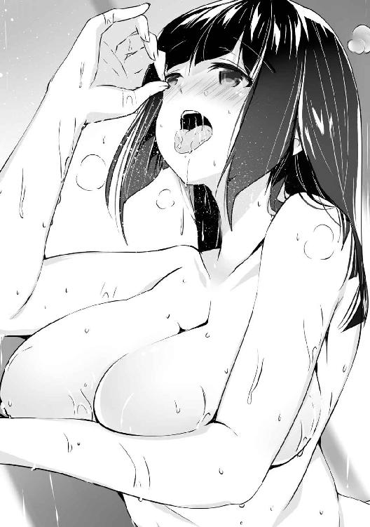
湯の中でこうやって抱き合っていると、お互いの身体の境界線が曖昧になってくるような気がして、いつも以上に精神的な興奮と充足感を得られているような感覚がする。
「んぅ......ふっ......」
ティアも目を瞑ってお互いの唾液を混じり合わせながら、俺の舌に自分の舌を絡みつかせ、擦り合わせることに没頭している。もちろん腰を振る動きは止めることなく、むしろ口付けによりさらに興奮が増したせいで、先ほどよりも動きが激しくなっている。
お湯をバシャバシャと波打たせながら俺の精液を貪欲に欲しがっているように腰を振る彼女に負けないよう、俺も彼女の子宮を押し上げる勢いで腰を振り、彼女の膣を味わっていた。
だが一旦小休止を挟んだとはいえ、先ほども同じように彼女を攻めていたこともあり、そろそろ俺も射精が近くなっているのが分かった。
「ティア、そろそろ出すぞ！」
「はいっ、私の中をご主人様の精液で満たして下さい！」
「ああ、たっぷりと注ぎ込んでやる！ くうぅっ！」
射精の前にラストスパートをかけて彼女の膣穴を荒々しく突いてやったのだが、一番奥に当たったところで限界が訪れてしまったので、期待通り精液を思い切り彼女の中にぶち撒けた。
「っ、はぁあああああん！ また、イッて、あ、あぁあああああああ！」
俺の射精と同時に彼女もまた絶頂したようだ。俺の精液を全て搾り取ってしまうかのように膣が激しく蠕動し、自分でも驚くほどの量が出てしまった。彼女の子宮が引き上げられて俺の精液を中に留めようとしていたが、収まり切らなかった精液が溢れ出してきた。
再びぐったりとした様子で俺に寄りかかってきた彼女を抱き留めてやると、嬉しそうな声を上げてこちらに頬擦りをしてきた。絶頂の余韻で少し理性の箍が外れて甘えているようだ。
「久しぶりにご主人様の物を感じることができました......とても幸せです......」
「ああ、私もお前を久しぶりに抱くことができて嬉しいぞ」
甘えるように縋り付いてくる彼女を抱いたまま、しばらくは情事後の雰囲気を楽しむことにした。彼女の中から溢れ出た精液が湯の中に出てしまっているので、後で湯を張り直さないといけないが、そんなに焦ってやることでもないだろう。
そんなときふと誰かの視線を感じて入り口のほうを見ると、ほんの少しだけ開いていた戸が閉まったのが見えた。よくよく考えれば、時間からして使用人達が風呂に入りに来てもおかしくはない。おそらくはその中の誰かに覗かれていたのだろう。
ティアの顔を見てみると、彼女も今の自分達の姿が見られていたことは分かったようだった。
「ティア、屋敷の者に見られてしまったようだが？」
「構いません。ご主人様の寵愛を受けられることを光栄に思っていますので、他の人間に何と思われようが、いちいち気にするようなことではありません」
「そうか、ならばいい」
もう少し恥ずかしがると思っていたティアも、今の状況を特に気にしてはいなかったようなので、このままもう少し彼女の柔らかさを堪能しつつ、ゆっくりと身体を休めることにした。
※
風呂から上がって夕食を取った後、早々に眠ることにした。俺が疲れているのを察したのか、いつもならば突撃してくるはずのナタリアも大人しくしていたので、今日のところはゆっくりと休むことができそうだ。
そう思って部屋のベッドに横になっていたのだが、しばらくして部屋の扉をノックする音がした。時間的にはそろそろ皆寝床へ向かう頃だと思うのだが、もしや誰か夜這いにでも来たのだろうか。昼間やったせいであまり乗り気ではないので、もしナタリア辺りが来たら追い返そう。
「し、失礼します」
しかし俺の予想に反して緊張した様子で部屋に入ってきたのは、小柄な全身にびっしりと術式刻印を刻まれているメイド、ルーシアだった。珍しい人物の来訪に少し驚きを感じていると、緊張して動きがぎこちない彼女が近寄ってきた。
「や、夜分遅くに申し訳ありません。ですがヤード様にお伝えしたいことがありまして......」
「ふむ、言ってみろ」
「えっと、ご主人様が以前連れてきたダークエルフのことなのですが......」
そう言われてもぱっと思いつかない。現在屋敷に連れてきているダークエルフは、エルやメルヴィナ達の他にも結構な数がおり、名指しで言われないと誰のことを言っているのか分からないのだ。
「えっと、私と同じような刻印がされている者なのですが」
「ああ、誰だったか、確かリリーとかいうダークエルフだな」
「はい、少し前から彼女の様子がおかしいので、ご主人様に報告を、と思いまして......」
わざわざこんな夜中に言いに来なくてもいいような気はするが、今日は彼女と会っていないので言い出せる機会がなかったということにしておこう。
「分かった。とりあえず様子を見に行くことにしよう」
本音は眠りたかったのだが、様子がおかしいということは刻印に何らかの不具合が出ている可能性もあるので、一応確認しておいたほうがいいだろう。
そしてルーシアに案内されて向かった部屋には、確かに例のダークエルフがいた。扉が開いたことにも気付いていないのか、俯いたままで何かをぶつぶつと呟いている。見た限りでは確かに精神に異常をきたしているように見受けられた。
刻印の不具合が原因かどうかを確かめるために近付くと、彼女は今まで俯いていた顔を不意に上げてこちらの顔を見つめてきた。その目は何かに絶望したような淀んだ色に濁っていたのだが、俺の姿が視界に入った瞬間、媚びるような目つきに変わった。
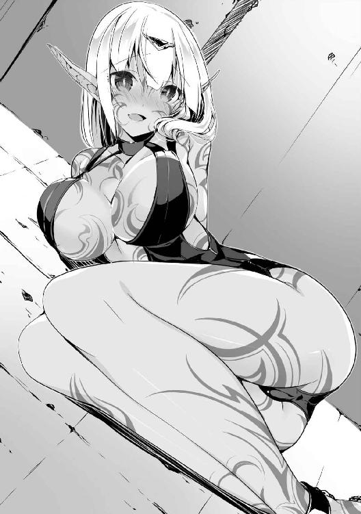
「あぁ、ご主人様、やっと会いに来て下さったのですね......」
彼女の表情にかつての恋人を殺した男への怒りは微塵も感じられず、ただ目の前の主人に媚びるのが当然と言わんばかりの発情した顔つきを見せていた。以前彼女の精神を壊しかけたことがあったが、しばらく会わない間に意思疎通は問題ない程度にまで回復してくれたようだ。
「まあ、ここに来るような用事はなかったからな」
「こんな場所で鎖に繋がれ、そこの女が持ってくる食事を食べるだけの日々はどんなに辛かったことか......できるならばご主人様の傍にお仕えさせていただきたいのです」
「名前は忘れたが、お前にも男がいただろう？ あれのことはもう忘れたのか？」
「あんな男など、ご主人様のような素晴らしい魔術師に出会ってしまった後では、屑も同然です」
まるで人が変わってしまったかのような印象を受けるが、初めて俺の術式を見たときのエルも似たような感じで発情し始めたので、ダークエルフがこのように強者に心酔することに違和感はない。
そしてその点を除けば、特に彼女の言動におかしなところを感じることはできなかった。
「ルーシア、彼女のどこに異常を感じたのだ？」
後ろで俺達の様子を窺っているルーシアに声を掛けると、明らかに狼狽えたような雰囲気を感じた。何故そんな反応をしたのか確かめるために振り向いて様子を窺おうとすると、その瞬間、俺の背後で金属同士がぶつかり合うような甲高い音が響いた。
「くっ！ 何故気付いた！」
再び振り返れば、そこにはいつの間にか俺にナイフを突き出しているダークエルフの姿があった。
ご丁寧にナイフの刃には術式消去の術式が付与されており、対魔術師用の品だと一目で分かる物だった。俺を刺そうとしたようだが、付与された術式の効果が弱いせいで、あらかじめ展開していた戦闘用の対物理障壁に阻まれて止まっており、不意打ちは失敗に終わっていた。
「何故分かった、だと？ あんな分かりやすい演技に騙されるほうが難しいと思うが、まあいい。以前のお前の目には俺への怒りが宿っていたというのに、それがあっさり消えてここまで敵に媚びるはずがないだろう？ 俺の隙を狙おうとするなら、せめて憎しみに溢れた演技をしてもらわなくてはな」
彼女が俺に媚びるような視線を向けてきた瞬間から、俺は彼女が何か企んでいると警戒していた。もしあんな分かりやすい演技をしなければ、俺に一撃くらいは入れられていたかもしれないというのに、何とも勿体ない真似をするものだ。
「まだ終わってない！ 『神よ、我が手の中に、咎人を滅す断罪の刃を、与えたまえ』！」
「な!?」
彼女が呪文を唱えると、音声要素の条件を満たした術式が発動し、彼女の手にもう一振り、光でできた剣のような物が現れた。
威力は光刃の劣化版程度でしかなく、俺の障壁を打ち破るような物ではないのだが、それよりも潜在魔力を全て奪われたはずの彼女が術式を発動できたことに驚きを隠せない。
「くっ、何故攻撃が届かないの!?」
障壁に攻撃を阻まれ、こちらを憎悪の視線で睨んでいる彼女に恐怖を掛ける。多少魔力が戻ったところで俺の術式を無効化できるほどの術式抵抗は持ち合わせているはずもなく、術式が直撃した彼女は精神的な負荷に耐え切れずに失神した。
「それにしても......まさか魔力が戻っているとは。刻印の影響か？」
しかしながら彼女に刻まれた刻印は彼女の魔力を吸収はするが、彼女に魔力を与えるような効果は持っていない。いくら刻印の一部が不具合を起こしたからといって、万が一にも彼女に魔力が戻ることは考えられないはずだ。
そこまで考えていると、ふとある可能性が頭の中をよぎった。その可能性を確かめるべく魔力感知の精度を最大にまで高めると、彼女の身体に俺の予想した反応があった。確かにこれならば本人に魔力がなくとも術式に必要な魔力は確保できる。
俺が彼女の身体の中で見つけたのは、彼女の胎内に宿った胎児の姿だった。全身に刻まれた術式刻印の効果により、胎児には並の魔術師を超える魔力が注がれている。彼女は術式を発動する際、その胎児の魔力を利用していたようだ。
普通ならば胎児と母体の間に魔力的な繋がりは存在しないのだが、彼女の中に宿っている胎児は、胎内に刻まれた刻印の効果で母体と魔力的な繋がりができてしまっていた。さらに胎児の成長を阻害する術式まで刻まれているため、効果を発揮している間この子供が生まれてくることはない。
当然ながら俺はこのような刻印を刻んだ覚えはない。そして現在屋敷にいるどの人間にも、この刻印を刻むことは不可能だろう。実行できる可能性がある人物はただ一人、エルである。
「ここまでやるとは......魔術師としての素質は十分にあったということか」
胎児とはいえ一つの命には違いない。そんなものを利用するのは明らかに外道の所業だが、夥しい数の人体実験が魔導技術を発展させてきたことも事実だ。そしてそれを仕方ないと割り切る人間性の欠如が、魔導の深遠を究めようとする研究者には必要な要素であることも間違いない。
俺を裏切って敵側に付いているのは頭が痛くなるような問題だが、俺を超えるためにあらゆる手段を使おうとする姿勢は評価したい。
おそらく俺が魔帝国へ侵攻しているときを狙って彼女に刻印を施し、術式消去の付与されたナイフを渡し、油断させて俺を暗殺する計画だったのだろう。これがエルの言っていた細工の一つなのかもしれない。
「まあ踊らされた彼女にとっては酷い話だがな」
胎児を通じて魔力を得ている以上、二人を魔力的に繋いでいる刻印を破壊すれば再び彼女は術式を発動できなくなる。ただその場合、刻印の刻まれている部分を肉ごと削ぎ落とすしか方法がなく、早く寝たい俺にとっては面倒なことこの上ない。よってもっと簡単な方法を取ることにした。
透視を発動し、胎児の正確な場所を確認しつつ、上級無効化能力を付与してやる。これで胎児に魔力が集まることはなく、母体に魔力が流れることもなくなった。ついでに胎児も通常通り育つ。これで彼女の脅威はなくなった。
エルへの対処はまたおいおい考えることにして、今日のところはこれで終わりにしようと扉のほうへ振り向くと、そこには腰を抜かしたままこちらを見ているルーシアの姿があった。
彼女視点から見れば、ダークエルフと共に俺を罠に嵌めようとして失敗し、逆に仲間が一瞬で無力化されている。俺の怒りに怯えるには十分なくらいの状況だろう。
彼女の表情は、同情したくなるほどに歪んでおり、足元には既に水溜まりができていた。
「さてルーシア、そう怯えなくてもいいぞ？ お前には話してもらいたいことがまだあるからな」
「ひっ！ も、申し訳ありません！ どうかお許しを！」
俺が悪役のような笑みを浮かべながら彼女のほうに足を一歩踏み出しただけで、わっと瞳から涙を溢れさせ、何度も頭を下げて俺の許しを乞おうとしていた。
その行動は自分に非があると分かっている者がやる行動にしか見えず、つまり彼女はここで何が起こるのかある程度知っていた上で俺を連れてきたということだろう。
「とりあえず落ち着け。それより俺をここに連れてきたのは、やはりエルの差し金か？」
「......はい。ご主人様をこの部屋に連れてくるように頼まれました。そうすればこの刻印を取る方法を教えてくれると......」
どうやらルーシアは術式刻印をどうにかして消そうとしているところを利用されたようだ。いつもは仲の悪そうに見えたエルの提案を呑んでいる辺り、彼女も相当追い詰められていると見える。コンプレックスの原因を作った俺が言えることではないとは思うが。
だが本気で刻印を消そうとしているのならば、彼女には一つ残念なお知らせがある。
「ルーシア、自分の全身の肉を削り取る覚悟はあるか？」
「え？」
「お前の身体に刻まれた刻印はもはやお前の身体の一部と認識されている。それを消そうと思うなら、文字通り全身の肉を削り取らなければいけない。見えなくするだけならば他に方法はあるが、消すとなるとそれが唯一の解決法だ」
「え、え？ それは本当でしょうか？」
俺の言葉を理解するのに時間が掛かったようだが、自分がエルに騙されていたとようやく気付いた彼女は、床にへたりこんだまま俯いて悔しそうに泣き始めた。
「そんな、ご主人様を裏切ってまでやったのに......何で......」
かなり騙されやすい性格だからだろうという言葉を何とか飲み込んで、慰めるように肩を叩くと、涙を流しながらも俺の顔を見つめてきた。彼女の境遇には同情するが、自分の不始末の責任は取ってもらわなくてはいけないので、笑みを浮かべながら彼女の肩をそのまま鷲掴みにしてやった。
「エルに騙されて悔しいのは分かる......が、お前が私を嵌めたことに変わりはない。故意に主人を危険に晒した罰は当然受けてもらわなくてはな」
自分のしたことをすっかり忘れていたのか、俺の言葉を聞いた彼女は再び顔を真っ青に青褪めさせ、信じたくないと言わんばかりに顔を横に振っていた。
※
ルーシアを連れて部屋まで戻ると、早速お仕置きの準備を始めることにした。ついでに遮音結界を張って万が一彼女が叫んだときの保険を掛けておく。
「あの、もう二度とこんなことはしませんから！ お願いです！」
「大声を出すな。時間を考えろ」
彼女の必死の叫びを無下にあしらいつつ、オリンピアから受け取っていた道具類を取り出す。お仕置きとはいえ俺も鬼ではない。暴力系は極力避けることにしているため、この調教用の道具を使用するのがちょうどいいだろう。
彼女の性知識はそれほど歪んではいないようなので、俺が道具を取り出すたびに小さく悲鳴を上げ、取り出した物を恐ろしげな様子で見つめていた。
「そう怖がらなくてもいいぞ、罰とはいえ明日からの仕事に差し障りのあるようなことはしない」
「は、はい......」
まだ震えている彼女に近付いて目隠しをしてやり、腕も背中で縛ってやった。
視覚に頼ることができなくなった彼女は途端に恐怖が襲ってきたのか、その場に座り込んでしまったので、仕方なく彼女を持ち上げてベッドの傍まで運んでやった。
「さて、準備はいいか？」
「え、は、はい......せめて目隠しだけでも外していただけると......」
「それを外したら罰にならないだろう？」
「え？ きゃああっ！」
彼女に気付かれないように胸へと手を伸ばし、服の上から彼女の胸を揉んでやった。普通ならばかなり弱めの刺激にしかならないが、今の彼女は視覚を封じられて他の感覚が鋭くなっているため、こんな軽い刺激でも大げさなほどに反応してくれる。
だがこれはほんの序の口だ。痛みを与えるつもりはないが、痛みよりも苦しい罰などいくらでも与える方法はあるのだ。それを彼女に教えてやろうと思う。
まずは少女かと思えるほど小さい彼女の胸を揉みながら、少しずつ魔力を流し込んでやる。
彼女に刻まれた刻印は、その魔力を吸収する際に快感を生じさせるため、胸を軽くしか触っていないというのに、もう身体が火照ってきているようだ。
「どうだ、今の気分は？」
「え？ あ、はい。気持ちいいです......」
罰を与えると言われているのに、与えられる刺激は罰とは程遠い快感であることに戸惑っているようだ。だが彼女の緊張は少しずつ取れてきたようで、強張った身体からも力が抜けてきた。
そしてちょうどよく彼女もリラックスしてきたところで、服の上から判断できる程度に立ってきた乳首を抓ってやり、同時に大量の魔力を流し込んでやった。
「ひぁあああああ!?」
気持ちのいい弱めの刺激を継続して与えられていたところに、いきなり強烈な快感が襲ってきたことで、油断していたルーシアは簡単に絶頂に達してしまったようだ。腕が動かせないため、快楽から逃れるように身体を反らし、舌を突き出して叫んでいた。
強烈な絶頂で放心してしまった彼女だが、まだこんなものでは罰とは言えない。快感に身を震わせている彼女を抱きしめるように抱え込むと、さらに大量の魔力を流し込んでやった。身体を押さえこんだ状況で、今度はどのような反応を見せてくれるのか。
流し込んだ魔力量からして、普通の絶頂十数回分に相当する程度の快感が生じるはずだ。
「あぁあああアアあアァアアあアアアッ！」
一瞬で許容できる快感の大きさを超えてしまったようで、壊れたように絶叫しながら身体をビクンビクンと大きく跳ねさせている。少しでも身体を動かして快楽を逃がそうとしているのだろうが、俺が押さえているためにそれができず、気を逸らすことすらできずに直で快感を受けていた。
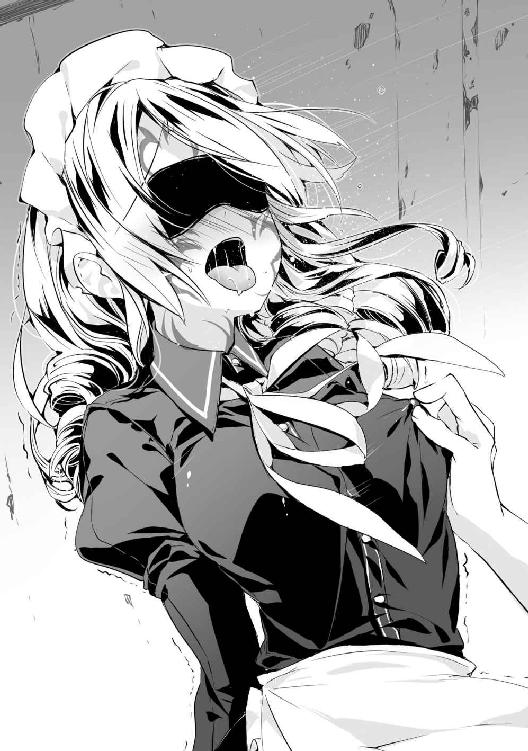
数秒続けた後に離してやると、受け身すら取れずに床に崩れ落ちた。快楽で他のことに思考を巡らす余裕すら失っているようなので、彼女が落ち着くまでひとまず待つことにした。
数分後、ようやく身体の震えが止まった彼女を引き起こすと、涙やら汗やらで顔がぐちゃぐちゃになっていた。既に足元すらおぼつかない状態ではあるが、まだお仕置きはこれからだ。とりあえず彼女の精神力の強さに期待することにしよう。
「ああ、叫ばれると周りに迷惑なのでな、これを着けさせてもらう」
そう言って俺は彼女の口にも猿轡のような拘束具を噛ませた。これもオリンピアの私物なのだが、一体あいつは俺に何を期待しているのだろうか。まあ現状では役に立っているのだが。
ついでに足も縛ってほぼ全身の拘束が完了した。さて、やっと罰と調教を始めることができる。
「いいか、ルーシア。今から私が質問をするが、それに全てはいと答えてもらう。今は口が塞がっているので、俺の質問に頷いてくれればいい」
俺の言葉を聞いたルーシアは一瞬動きを止めたが、すぐに頷きを返してきた。まだ俺の意図がよく分かっていないようだが、それはおいおい分かることになるだろう。
身動きの取れなくなった彼女を抱きかかえてやると、一番最初に流したのと同じ程度の魔力を流しながら彼女の身体を愛撫し始めた。強すぎる快感ばかりのところにやってきた甘美な刺激に、彼女も気持ちよさそうに身体を預けてきた。
「では始めるぞ。私はお前の主人で、お前は私に雇われている身だな？」
この質問にはすぐに頷いていた。とにかく肯定していれば先ほどの拷問のような快楽は与えられないと理解しているようだ。
「次、お前は私に絶対の忠誠を捧げているな？」
この質問には少し戸惑ったようで、一瞬遅れて頷いていた。だが遅れるということは躊躇いがあったということだ。なので彼女にこの質問の意図を分からせるべく、魔力をたっぷりと流し込んた。
「んん────────────っ!?」
「まだ自分の立場が分かっていないようだな。公爵家が取り潰しになった後、実家も追い出されたお前を拾ってやったのは誰だ？ それを理解しているならすぐに返事ができたはずだろう？」
この失敗で彼女も俺の意図を察することができたようだ。次からは同じ間違いは犯さないだろう。
「では次の質問だ」
先ほどと同じような質問を何度も繰り返し、そのたびに彼女はすぐに首を縦に振って肯定の意を表していた。頷いている限り優しい快感だけを味わうことができるので、そのうち彼女はどんな質問にも躊躇うことなく進んで頷くようになっていた。
「よし、次の質問に答えられたら口の拘束を外してやる。ではいくぞ、お前は身体の刻印を消すことも諦め、残りの人生全てを私に捧げる覚悟があるな？」
先ほどまでの彼女なら絶対に躊躇ったであろう質問だが、何度も肯定と褒美代わりの快感を繰り返してきた彼女は、その質問にも嬉しそうに頷いていた。その答えに満足しつつ、俺は彼女の口の拘束を外してやった。
「はぁぁ......ご主人様ぁ......」
蕩け切った声で俺のことを呼んでくる彼女は、部屋に入った直後のおどおどした態度は感じられず、俺に媚びて快楽を与えてもらうことだけを考えている雌になっていた。
「では質問の続きだが、ここからは言葉で答えろ」
「はい、ご主人様ぁ」
「お前は恩義のある私を裏切ったが、今はこのことを非常に後悔し、反省しているな？」
「はい、そうです......はぁん......」
「その償いにお前の人生全てが必要だとしても、躊躇うことなく差し出すことができるな？」
「はい、もちろんです、んんっ......」
もはや先ほど答えを躊躇った彼女とは別人のようになっているが、ここまでくればもう俺以外の甘言に乗せられるようなことはないだろう。
その後も次々と似たような質問を続け、そのたびに彼女が即答し、その褒美に彼女を愛撫して気持ちよくさせてやるということを、彼女の理性が麻痺するまで続けてやった。その頃には彼女も完全に俺に身体を預け、もっと快楽を欲するように身体を擦り付けていた。
「ご主人様ぁ、早く次の質問をお願いします......」
「ああ、ではその前に残りの拘束と目隠しを取ってやろう。だが最後の質問は言葉だけでなく、お前の態度でも示してくれ」
「本当ですか!? あぁ、早く！」
「ではいくぞ？ お前は私の何だ？」
俺の質問を聞いた彼女は、俺から離れて自分の足で床に立つと、スカートを摘んで綺麗なカーテシーを披露した。だがその表情は情欲に塗れており、シンプルなメイド服の与える清楚な印象が逆に彼女の淫靡な雰囲気を増す結果となっている。
「私はご主人様に全てを捧げ、ご主人様の望むままに振る舞うメイドです。ご主人様を裏切った罪滅ぼしとして、他の全てを捨て去ってでもご主人様に尽くす所存です」
「あぁ、まあいいだろう」
当初の目標ではここまでやるつもりはなかった。ただ今日のことを反省して、二度と同じ真似をしないと誓ってくれればそれでよかったのだが、途中で調教に嵌まってテンションが上がりすぎた結果が今の彼女のあり様である。
「つきましては私の忠誠心をご主人様にお見せしたいと思うのですが......」
「ん？ ああ、好きにしてくれ」
特に考えなく発した言葉だったのだが、彼女は俺の言葉を聞いて嬉しそうに近寄ってくると、足元に跪いてそのまま俺の足を舐め始めた。
予想外の行動に呆気に取られてしばらく彼女の行為を眺めていたが、足を舐められるくすぐったさで我に返ると、慌てて足を引っ込めた。残念そうな視線を向けてくる彼女に、もはや昔の面影は微塵も残っていないようだ。
「ご主人様、これでは私の忠誠をお見せすることができません......」
「ならばその忠誠心とやらは明日からの仕事で見せてもらうことにしよう。今日のところはもう遅いので、お前も部屋に戻って休むといい」
「ではご主人様は横になって下さい。私のことは抱き枕代わりと思ってお使いいただければ......」
「ルーシア、いいから早く部屋に帰れ」
「分かりました......」
ルーシアは明らかに納得のいっていない顔で部屋を出ていった。彼女の服は先ほどの調教で彼女の体液に塗れてびしょ濡れとなっており、どう考えてもベッドに上げるのは不味い。この場では早々にお引き取り願うしかなかった。
「......それにしても、やりすぎたな」
まさかあそこまで性格が変わるとは思わなかった。これは大きな誤算だ。
まあ明日には気分も落ち着いて冷静な思考ができるようになっているだろう。そのとき彼女は今夜の所業を思い出してのたうち回るのだろうが、それも罰の一環ということにしておこう。
それにしても今夜は疲れた。まあエルのことなど記憶の彼方に吹き飛ぶくらいの出来事が起こったので仕方ないのだが。今後はもう少し相手を選んで行うことにしよう。
ベッドに横になるとすぐに瞼が重くなったので、流されるまま夢の世界へと旅立つことにした。
※
翌朝、いつも通りの時間に目が覚めたが、まだ少し眠気が残っていたのでベッドから起き上がらずに微睡んでいると、どこかで誰かが絶叫している声が聞こえてきた。
悲しみと羞恥心が溢れたその悲鳴を聞いて少し罪悪感を覚えつつ、目が冴えてしまったので身支度を整えるために身を起こすと、ちょうどオリンピアが部屋に入ってきた。
「おはようございます、ご主人様」
お辞儀をしている彼女の姿はいつもの軍服スタイルではなく、屋敷のメイド服姿だった。ただし普通のデザインでは彼女のサイズに合う物がなかったのか、ティアと同じく胸の部分が開いたタイプとなっている。彼女も平均を超える巨乳の持ち主なので、そんな服でも似合ってはいるのだが。
俺の視線が胸に偏っているのに気付いたのか、少し屈んでさりげなく谷間を見せつけていた。
「お食事の準備ができましたが、部屋に持ってこさせますか？」
「......そうだな、久しぶりに帰ってきたのだ、食事のついでに顔を見せておくのも悪くない」
「そうですか、それではそのように伝えておきますが......ところで、何故私の道具が？」
彼女に指摘されて足元を見ると、昨日ルーシアに使った道具が散らばっていた。昨日はかなり疲れていて、あれ以上動くのが面倒だったので、道具は放置してそのまま寝てしまっていたのだ。
「まさか......ご主人様がお一人で？」
驚愕の表情でこちらを見てくるオリンピアを無視しつつ、俺は朝食に向かう前に散らばった道具を片付け始めることにした。
王都に帰って早数日、初日の出来事以外は特に何事もなく日々が過ぎていたのだが、ようやく王宮から招集が掛かった。おそらくは北部連合の討伐について話し合うのだろう。
勇者達は全員招集を受けていたようで、俺が国王の待つ会議室へと着いたときには既にいつもと同じ顔ぶれと厳しい顔をした貴族達が揃っていた。どうやら今回も俺が最後だったようだ。
睨み殺されるかと思うような視線を浴びながら促されるままに席に座ると、国王は全員の顔を一瞥するように見渡して全員が揃ったことを確認し、軽く咳払いをしてから話し始めた。
「皆、急な呼び出しにもかかわらずこうして集まってくれたことを感謝する。今回皆に集まってもらったのは他でもない、魔帝国の残党について、どうするべきか皆の考えを聞きたいのだ」
首都を占拠されたばかりか、主だった貴族の当主達もオリンピアにより抹殺されてしまい、王国に近い南側や帝都周辺に領地を持つ貴族や自前の兵力をほとんど持っていない弱小貴族は、そのほとんどが保身のために王国に恭順を示しているとのことだった。
だが王国から離れた北部の貴族達の中にはまだ王国に反抗する意思を持っている者もいる。
特に皇帝が逃げた可能性の高いネイラー辺境伯など、今回の戦いであまり被害を受けていない貴族の多くが北部に固まっていたため、北部連合などという同盟まで組まれてしまった。
「全面戦争を仕掛けるだけの兵力は持っていないだろうが、それでも北部連合が被害を顧みずに反撃してきた場合、我らの側にも少なくない被害が出るだろう。しかし放っておくわけにもいかん」
「つまりこちらの被害を抑えつつ、北部連合を降伏させろと言っているのだな？」
「もちろん民の命を優先して王国の支配を受け入れるというのならば、無理に戦いを仕掛ける必要はないぞ。今回は敵の討伐ではなく、あくまで魔帝国の残党を倒すのが目的なのだ」
そう王は言っているが、今さら王国に下っても元の地位を維持できる可能性はほぼないことを考えると、弱小貴族ならまだしも、辺境伯などかなりの地位を持っている貴族達が従うわけがない。
口では綺麗事を言っているが、内心では降伏などありえないと分かっているのだろう、この会議に参加している人間に調停を取り仕切る文官よりも軍関係者が多いのがそれを証明している。
「ではその役目、私に引き受けさせていただきたい！ 必ずや国王の憂慮を払拭し、長きに渡る戦いを王国の完全勝利のうちに終わらせてみせましょう！」
「おお！ ギルフレイア伯爵よ、そなたのその忠誠心、嬉しく思うぞ」
国王の発言を受けて、アレクが勢いよく立ち上がった。その瞳はやる気に満ち溢れているような気がした。おそらく前回の戦いではあまり目立った戦果を挙げられていないからだろう。
アレクに続いて他の貴族達も次々と今回の軍に立候補し始めた。今までの王国は魔帝国に戦力差で負けていた戦いばかりだったのだが、今回はこちらの戦力のほうが上だと思われるので、ここぞとばかりに手柄を挙げたい奴が多いのだ。
「現地の状況が詳しく分からない以上、調査の必要もあるだろう。私も参加させていただきたい」
しばらく様子を見守っていたサガミも参加することに決めたようだ。アレクがリーダーではかなり心もとない感じだったが、サガミが付いていくならまだ安心できるだろう。奴が立候補した時点で俺は参加を見送る決意をした。
そもそもこの世界に来てから既に結構な地位が手に入っている俺としてはこれ以上の物は望んでいない。それに相手側の手の内が分からない以上は危ない橋を渡れないし、そして何より俺は面倒ごとに巻き込まれたくないのだ。
幸い貴族達もやる気を見せている者は多く、人数が足りなくなるようなこともないだろう。そんなわけで他人事のように会議の成り行きを見守っていたのだが、最初に立候補した後は黙って周りの様子を窺っていたアレクが、突然予想外のことを主張し始めた。
「国王陛下、今回の出兵の目的は血を流すことなく相手を降伏させることです。そのため将には少しでも反抗の意志を削げるよう、先の戦いで相手を圧倒した人物を将に据えるのがよろしいのではないかと思うのですが、どうでしょうか？」
「なるほど、伯爵の言い分は尤もだ。それで、そなたは誰を推すのであろうか？」
「はい、私は是非ともウェルナー伯爵を推したいと思っております」
こちらに視線を送ってきた時点で嫌な予感はしたが、国王の同意を取り付けた上で俺に軍への参加を求めてきた。現状参加する意欲のない俺を動かすには、単純だが最も効果的な方法だ。余計なところで知恵を働かせなくてもいいだろうに。
「ギルフレイア伯爵はこう言っておるが、そなたはどう思う、ウェルナー伯爵？」
「......特に異論はない」
ここで断れば王命に逆らった者として周りの貴族から疎まれることだろう。俺自身はそうなっても全く構わなかったのだが、ソフィの立場も考えなくてはいけないので、断るわけにはいかない。
「そうか、ではそなたにも此度の出兵に参加してもらうとしよう」
こうして俺も討伐軍とやらに参加する流れとなった。まんまとアレクの策略に乗せられた形になってしまった。せめて矢面には立たないよう立ち回ることにしよう。
「では次に、先の戦いで王国に投降した捕虜の扱いについて、何か考えのある者はおらんか？」
貴族達の多くは軍に抵抗して殺されてしまったのだが、貴族の妻や成人前の子供など、貴族でありながら戦う力を持っていなかった者の多くは王国軍に投降して捕虜となっていた。
グラン公爵家とは密約があったために彼らの一族は王都に着いた時点で捕虜から解放されたが、その他の貴族達は逃げ出せないよう厳重な監視の下に軟禁されている。
「魔帝国が滅びた今、奴らを捕虜にしても金にはならないのです。まだ王国に恭順の意思を示していない残党どもへの見せしめとして、何人か首を刎ねてしまってはいかがでしょうか？」
「それがいいでしょうな。奴らは我が国にとって害悪でしかありませんからな」
一人の貴族が国王に提案すると、周りの貴族達もその意見に賛同の意を示していた。他の奴らも表立って賛同はしていないが、特に反対もしていないところを見ると、皆同じような考えなのだろう。はっきり言って愚策としか言いようがない。
最後まで刃を向けてきた相手ならばともかく、降伏した捕虜を殺せば魔帝国だけでなく、ほとんどの国から非難されることだろう。ついでに降伏は無意味と知った北部連合が、最後の一人まで死兵となって掛かってくることだろう。
まだ話し合いで済む可能性が残っているかもしれないのに、何故わざわざ相手の反感を買うような真似をしなくてはいけないのか。こいつらの思考が理解できない。
だがここでこいつらの意見を真っ向から否定して自ら反対を表明し、面倒な因縁を付けられたくもない。誰か俺の代わりに言い出してはくれないものかと考えていると、先ほどのように様子見をしていたサガミが挙手をした。
「国王陛下、私の考えを述べさせていただいてもよろしいでしょうか？」
「うむ、申してみよ」
「それでは、現在捕虜として捕らえている者達で王国に恭順する意思のある者は、その罪を許して王国の民として迎え入れるのがよいと思っております」
「それは......」
「何を馬鹿なことを言っているのだ、いつ王国に牙を向くやもしれん敵国の民を国民として迎え入れるなどありえんことだ！ 勇者ならばもう少し自分の発言を考えてみろ！」
国王が何かを話し始める前に、先ほど過激な発言をした貴族がサガミに食いついた。だが奴は貴族の発言など聞こえないかのように無反応で、じっと国王の言葉を待っていた。
無視された貴族は顔を真っ赤にして何かを叫んでいたが、いい加減焦れてきたサガミが厳しい表情で一睨みすると、ぴたりとわめき散らすのを止めていた。
「投降したとはいえ敵国の貴族なのだ。罰もなくそのまま迎え入れては貴族達の間にも禍根が残る。国民として扱うのは難しいと言わざるを得ないところだ」
国王はため息を吐きながら独り言を呟くように小さな声でそう語った。歯切れの悪い様子から、貴族達の意見に同意しているわけではないようだ。ことを荒立てず穏便に進めるため、多数派の意思に従っているといったところだろう。
「確かに陛下の懸念していることは分かります。ですが、私の考えとは少し違うようです」
「ふむ、ではそなたの考えを聞かせてくれ」
「確かに長きに渡り争ってきた敵国の貴族にはさぞ深い恨みを抱いているでしょう。ですがここであえて寛大な温情を見せることによって、北部連合に所属する貴族達に投降しても助かる可能性があるという迷いを与え、士気の低下と不和を引き起こすことができるかもしれません」
「なるほど、恐怖ではなく迷いで敵の士気を挫くというのか」
「はい、逆に非情な行いを見せれば敵は死を覚悟し迷いを捨てるでしょう。命を顧みない者は予想を超えた力を発揮することがあります。これが思わぬ被害を生むことに繋がりかねません。敵に覚悟を決めさせるような策は取らないほうが賢明でしょう」
サガミの話を聞いた国王がこちらに視線を送ってきたので、周りの奴らに不自然に思われないように軽く頷いておいた。これで俺も同じような意見だと理解してくれただろう。
横を見ると、自らの提案を愚策と言われたに等しい貴族が顔を真っ赤にしてプルプルと怒りに身を震わせていた。親の敵を見るような目でサガミを睨みつけているが、先ほどのように叫ばないのは国王がサガミの策に理解を示しているからだろう。
「私もその考えに賛同致します！ 交渉の障害となるようなものはできる限り排除しなくては！」
アレクも立ち上がって宣言している。何故か焦っているように見えるのは気のせいだろうか。
奴が賛成したことで、討伐軍の将に入りたい貴族達も手のひらを返したように賛成し始めた。
「うむ、ギルフレイア伯爵も同じ考えであったか。では折角の目的を妨げぬよう、サガミ男爵の意見を採用することにしよう」
「有り難うございます」
最終的に捕虜を国民として解放することができるようになったので、俺の懸念も一つ減った。サガミはアレクより遥かに有能な働きをしてくれたので、心の中で感謝しておいた。
その後会議も終わり、とっとと屋敷に帰ろうと思っていたのだが、部屋を出て少し歩いたところでアレクに呼び止められた。
俺を無理やり軍に加えた張本人が話しかけてきて俺の機嫌は一気に悪くなったが、奴は何か思いつめているような表情で、俺の様子を気にする余裕がないようだ。
「アレク殿、何か用でも？」
「ああ、折り入って頼みがあるのだが、今度の出兵では私に花を持たせて欲しい」
「......はぁ？」
「こう言っては何だが、私は人々から勇者達の中でも中心人物として見られている。それなのに勲功が他の者達と同じか劣っている現状は人々に不安を抱かせてしまっているのではないだろうか？」
真剣な表情をしていたので何事かと思っていたのだが、何ということはない。アレクは最近目立った功を挙げておらず、俺が何度か活躍をしていることに焦燥感を感じていたらしい。気持ちは分からんでもないが、それを比較対象にしている本人に言うのはどうかと思う。
「もちろんヤード殿が手柄を挙げたいという気持ちはよく分かるが、ここを逃がせば次に大きく勲功を得る機会は確実に減るだろう。そこで今回の出兵は私の手柄となるよう動いて欲しいのだ」
「......仮にそちらに協力したとして、私に何か利益はあるのか？」
「私がもし陛爵した暁にはそちらを重用するようにしたいと思っている。これならばどうだ？ お互い最良の選択であるとは思っているのだが」
どう考えても俺にメリットはないように聞こえるが、アレクの中ではこれ以上ないくらいのアイデアだったらしい。素晴らしいだろうと言わんばかりの自信に満ちた表情でそう断言されると、突っ込みを入れる気力すら奪われていくような感覚になる。
「それが利益だと？」
「んん？ 今の条件でも納得できないのだろうか。何か不満があれば教えて欲しい」
先ほどの条件では不満しかないわけだが、そんなことを言ってもこいつの機嫌を損ねるだけだ。無意識に俺やサガミを格下に置いているため、他人の利益よりもまずは自分の利益が最優先されなければいけないと考えている。何とも面倒くさい奴だ。
しかしこいつが目立つだけで人々から俺への注目が減るのも確かだ。サガミより単純な分扱いやすく、ここで恩を売っておけば後々使えることもあるだろうと自分を納得させておいた。
「いや、不満はない。先ほどの頼みは引き受けよう」
「そうか！ いや、済まない。ヤード殿とは同じ勇者同士、共に協力し合おうではないか！」
臍を曲げられる前に奴の望み通りに了承してやると、途端に表情を明るくして馴れ馴れしい態度を取り始めた。何とも分かりやすい奴だ。背中をバンバン叩きながら酒飲みのように俺に絡み始めたので、奴の言葉は全て聞き流しておいた。
「アレク殿、作戦成功のために一つしておきたいことがあるのだが」
「ん？ 何でも言ってくれ」
「敵に降伏を促すならば、元は魔帝国の貴族でありながら、今は王国の恩恵を受けている幸運な者を連れていったほうが、降伏勧告の際に説得力も増すとは思わないか？」
「んん、なるほど。確かにその通りかもしれないな。ただ私にはそのような人物に心当たりはないのだが、ヤード殿は誰か目星を付けている者でもいるのだろうか？」
「ああ、提案するからには当然目星もつけている。任せてくれ」
「そうか、それならば安心だな」
あまり深く物事を考えない性格なのか、具体的なことは何も決めていないにもかかわらず、アレクは俺の提案を呑んでくれた。フェアリスと同じくらいには扱いやすい奴だが、これで勇者のリーダーをやりたがっているというのだからお笑いだな。
まあ何はともあれ、口約束とはいえ同行者の許可は取ったのだから、北部連合への出兵の際に誰を連れていっても問題はなくなった。アレクの単純さに感謝しなくては。
※
軍の編成自体は他の貴族に任せることにして、俺はエルの対策を取っておこうと思う。最後に見たときの実力ならば、特に対策を取らなくても負けることはないと思うが、流石に彼女があのときの実力のままでいる可能性は少ないだろう。
とりあえずいくつか対策の候補を考えながら屋敷に帰ったところ、俺のいない間にフェアリスが屋敷を訪ねてきているようだったので、応接間に顔を出した。
「フェアリス様、ヤード様もお帰りになったようなので、この辺りで失礼させていただきますね」
「はい、貴重な時間を使っていただいて有り難うございました」
俺がいない間ずっとフェアリスの相手をしていたらしいソフィが、俺と代わるようにして部屋を出ていった。いきなり国王に呼び出されたとはいえ、予定外の来客の対応をさせてしまったのは申し訳ないので、後で埋め合わせをしておこう。
「一体何の用だ？ 愚痴なら他所でやってもらいたいのだが？」
「ぐ、愚痴じゃないです！ ちょっと相談したいことがあって......」
改めてフェアリスのほうを向きつつ、相手をするのが面倒だという内心を隠しもせずに声に出すと、案の定彼女はすぐに狼狽えだした。相変わらず煽りに耐性のない奴だ。ただあまりからかうといつまでも狼狽したままなので、続きを促してやる。
「あの、エルマイアさんのことなのですが......」
「エルがどうかしたのか？」
「今日は北部連合のことについて話し合われたのですよね？ そのとき彼女が裏切ったことは伝えなかったのですか？」
「ああ、当然だ。言えば私が手引きしたと他の貴族達に糾弾されかねないことを、何故正直に伝える必要があるのだ。幸いあいつは王国軍に所属していたわけでもなく、ロベールからの依頼も終わっていたところだ。隠せるなら隠しておいたほうがいい」
それに王国軍にエルを相手にできるほどの魔術師がいない以上、裏切ったことを伝えたところで、あいつとの正面衝突を回避する以外に碌な対策が取れないことも分かっている。
「そうですか......」
フェアリスは俺の答えに残念そうにため息をついていた。彼女とエルはそこそこ仲がよかったので、裏切られたことに人一倍敏感になっているのかもしれない。
「それで、用件はそれだけか？ わざわざ聞きにくるようなことでもないと思うが」
「えっと、その......最近ヤード様が構ってくれないので......」
彼女に言われて気付いたが、確かに最近彼女に構ってやった記憶はない。最後にしたのはいつのことだっただろうか、と考えてしまう程度には期間が開いている。自分から訪ねてくるとは思わなかったので、その行動力に見合う対価は払ってやることにする。
席から立って恥ずかしそうに視線を逸らして呟く彼女に近付き、彼女の顎を持ち上げて間近で見つめてやると、どんどんと彼女の頬が赤くなっていくのが見て取れた。
「聖職者が自分から異性を誘っているとは、世も末だな」
「それはっ、その......うぅ......」
言い返す言葉が思いつかずに涙目で唸っている様子は、俺の期待を裏切らないものであった。幾度となく俺にからかわれているというのに、聞き流すことなく馬鹿正直に答えようとする彼女の真面目さは本当に俺を飽きさせない。
そして今回もいつものように俺への返答が思いつかず、上目遣いでこちらを見上げてきた。
「......ヤード様は自分から誘ってくるような女はお嫌いですか？」
そして俺に嫌われてしまうのではないかと、か細い声で尋ねてくる様子もいつも通りだ。
普通彼女のような身長の女性には似合わない振る舞いだが、小動物のような雰囲気を発している彼女には特に違和感を覚えることもないほどに似合っていた。
「積極的すぎるのは困るが、このような誘い方ならばむしろ大歓迎だな」
フェアリスが何か言うより先に彼女の唇を奪ってやった。いきなりキスをされた驚きで目を見開いていたが、構わず貪るような口付けを続けると、すぐに肩の力が抜けて背に腕を回してきた。
久しぶりの口付けは彼女にも嬉しかったようで、俺を抱きしめて離すまいと腕に力を込め、溢れた唾液が垂れてしまうのも気にしないほど貪欲に舌での触れ合いを楽しんでいた。
技術こそ拙いものだが、彼女の情熱を感じるような口付けはそう悪いものではなく、しばらく彼女の求めるままになってはいたが、十分に楽しむことができた。
「はぁ、ヤード様......」
長い口付けが終わった後、彼女はまだ物足りないといった感じの息を吐いた。潤んだ瞳には情欲の色が容易に見て取れ、彼女がこれ以上を求めているのはすぐに察することができた。
できれば私室に連れていってやりたいのだが、ここから部屋に行こうとすれば確実に誰かに遭遇するだろう。彼女との関係はあまり公にしていいものではないので、妥協案としてこの部屋を使わせてもらうことにしよう。
「まだ足りないようだな、フェアリス。この先をして欲しいのならば、俺を興奮させるような言葉でねだってみせてくれ」
「え......？ えっと、それは......」
「したくなければいいぞ。そのときはここで終わりにするだけだ」
「や、やります！ けど少し待って下さい、心の準備が......」
少し脅すような言葉を掛けてやると、慌てて俺の提案に乗ってきた。そして俯きながら俺を誘う言葉を必死に考え始めた。ここまで真剣に悩まなくてもいいと思うのだが、いつも全力で加減ができないのも彼女の魅力の一つなので、好きにさせておく。
しばらくして納得のいく言葉を思いついたのか、少し自信のない顔をしながらも顔を上げた。
「ヤード様、はしたなく身体を疼かせている私に、ヤード様のお情けを下さい」
こちらをじっと見つめながら最後まで言い切った。噛まずに言えたことにほっとしている彼女だが、残念ながらそんな誘い文句では俺の期待していた言葉に届くどころか、最低限の合格点すらやることができない。
「どうした、そんな言葉ではまだまだ俺をやる気にさせることはできないぞ？ 寝ている振りをして人の情事を覗き見るような耳年増なお前ならば、男を興奮させるような語彙や言葉遣いも知っているだろう。もっと恥じらいを捨ててみろ」
「あ、あのことは忘れて下さい！ ほんの少しだけえっちなことに興味があるだけです！」
言い切った後に自分の失言に気付いた彼女が慌てて口を閉じたが、既に後の祭りだ。誤魔化すようにこちらを睨みつけてきても、何の痛痒も感じない。
それは彼女もすぐに理解したようで、諦めたように一度息を吐くと、徐にワンピース状の服の裾を摘んで持ち上げ、自らの下半身を露わにした。白の下着は秘部に当たる部分が湿って色が変わっており、彼女が発情していることを如実に示していた。
「ヤード様のことを想っただけで、私の、オ、オマ○コは濡れてしまいます。どうかヤード様の熱く硬いモノを、私のはしたないオマ○コに、つ、突っ込んで下さい......」
まだ満点には程遠いが、羞恥心で顔を真っ赤に染めながらも言い切った彼女のやる気に免じて、この辺で許してやることにする。
まだ下半身を晒している彼女を抱き寄せ、俺も肉棒を取り出して彼女の下着をずらしてやる。そして彼女の片足を持ち上げて挿入しやすいような体勢を取らせた後、割れ目に肉棒を当てる。
立ったままでやるとは思っていなかった彼女は少し慌てていた。以前も半分立ってやったようなものなので気にするほどのことでもないとは思うが。
「や、ヤード様、立ったままなのですか？ 座ってからのほうが......」
「そうは言っても期待している部分もあるのだろう？ 嫌なら離れればいい」
「ず、ずるいです。今さら離れられるわけないのに......」
どうやら彼女も納得したようなので、早速彼女の膣穴へと肉棒を沈み込ませた。前戯はしていないが十分に濡れていたようで、特に入れにくさを感じることもなく彼女の中を貫いていく。
「んんっ！ お、奥まで入ってきますっ」
フェアリスは嬉しそうな声を上げながら俺の肉棒が中を擦っていく感触を味わっている。立っているので奥まで入れるのがなかなか難しいが、それでも彼女は感じてくれているし、俺もいつもとは違う感覚が新鮮なので問題ないだろう。
フェアリスは自分の感じている顔を見られたくないのか、何とか顔を逸らそうとしているが、目の前に相手の顔がある状況ではほとんど意味がなく、むしろ快楽に蕩けそうになる顔を必死に取り繕おうとしている姿が俺の興奮を煽る結果となっていた。
「フェアリス、こちらを向け」
「え？ んっ!?」
彼女の膣内を存分に掻き回しつつ、彼女に再び口付けをしてやる。熱くなった吐息が流れてくるのを感じながら、先ほどよりもさらに激しく彼女の口内を蹂躙してやると、くぐもった声を上げながら悶えていた。
彼女の膣穴と口を塞いで密着していると、全裸でもないのに彼女と全身で繋がっているような感覚を覚える。特に彼女の奥を肉棒が突くたびに彼女が嬌声を上げようとし、それが心地よい振動となって俺の口にも届いてくるのは何とも言えない充足感がある。
「んんっ！ んんんんっ！」
彼女は肉棒からの刺激にいっぱいいっぱいの様子で、快感に悶えながらも何とか俺をきつく抱きしめて離れないようにしていた。もはや自分がどのような状態になっているのかすら把握できていないだろう。
俺を必死に求めているその姿に煽られたのか、俺ももっと彼女の身体を貪ってやりたいと思い、もう片方の足も持ち上げて彼女を完全に持ち上げてやる体勢となった。
この体勢ならば腰を軽く振るだけでも彼女の体重で奥まで貫くことができ、彼女も落ちないようにと緊張して抱きつく力を強めるだけでなく、膣の締まりもよくなった。
周りに音が漏れることも気にせずに腰を打ち付けて、膣内を抉るように貫いてやると、そのたびに彼女の中もきゅっと締め付けを強くし、くぐもった嬌声を響かせている。
割と細身の彼女の身体は持つ分にもそこまで辛くはなく、俺も体力をほとんど気にせず、気の赴くままに彼女の中の感触を味わい続けた。
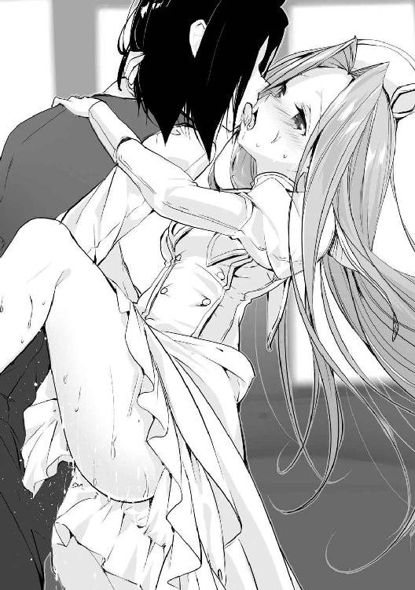
「ん、ん──────っ！」
敏感な彼女は攻めに耐え切れずに何度か絶頂したようで、時折身体を跳ねさせていたが、その動きが彼女の中に入ったままの肉棒に変則的な刺激を与え、新鮮な快感を俺に味わわせてくれていた。
しかしそろそろ彼女も満足したかと思ったのだが、俺を抱きしめる力は落ちることがなかった。どうやら俺が中に出してやるまでは情事を続けるつもりのようだったので、こちらも自分の快感を優先することにした。
彼女の都合など考えずに俺が気持ちよくなるよう激しく腰を打ち付けると、肉がぶつかり合って大きな音を響かせ、彼女の身体も快感で大きく震えていた。
そして少し続けた後、ようやく俺も射精が近付いてきたことが感じ取れたので、さらに腰を振るスピードを上げて一気に射精欲を高まらせ、彼女の奥を突いた瞬間に勢いよく射精した。
「ん───────────っ！」
打ち付ける精液の熱さと感触で、彼女も俺が射精したことが分かったようだ。足を俺の腰に絡めて下半身を密着させ、肉棒が抜けないようにしていた。
彼女の中に全て注ぎ込んだ後、しばらく抱き合ったまま情事の余韻を楽しんだ。射精後の疲労感で少し彼女を支えるのが重く感じたが、その分彼女と絡み合ったのでよしとする。
少し落ち着いたので彼女を抱えたまま椅子に座る。そろそろ彼女を引き離そうと思ったのだが、彼女はまだ抱き合ったままでいたいのか、離れようとはしなかった。一応何回か試したが、一向に離れないので、諦めて彼女のしたいようにさせておいた。
※
久しぶりの逢瀬なので心行くまでくっ付いていたいと思っていたようだが、フェアリスの望んでいたひとときは不意に扉が開く音によって中断されてしまった。
椅子に座っている俺の上にフェアリスが抱きついており、二人とも情事後で少し息が上がっている。客観的に見て言い訳は不可能な状況にフェアリスの顔色が一気に青褪めた。
「大切な話なのかとソフィが気を使って退出してくれたのに、一体貴方は何やってるのかしら？ ここは連れ込み宿じゃないのよ？」
扉が開いた先にいたのはナタリアだった。どうやら先ほどまでの情事は聞かれていたようだ。やはり遮音結界を張っておかなかったのは不味かったみたいだ。
「あ、あの、これは......」
「聖女様は黙ってなさい、私はヤードに言ってるの。それとそこから早く降りて。いつまで私に見せつけるつもりなの？」
「ひゃ、ひゃい！」
怒りを通り越して無表情になったナタリアの威圧感は、気弱なフェアリスを黙らせるのに十分すぎる働きをしていた。急いで俺の上から退いて身だしなみを整えた後、何も言われていないのに床で正座をした。誰が見ても明らかなほどに動揺している。
ここまで怒っていては、生半可な言い訳では彼女の怒りを鎮めることはできないだろう。仕方ないが力技で無理やり納得させる他に方法はなさそうだ。
「ヤード、私やソフィがいながら、あと何人の女に手を出せば気が済むのかしら？」
無表情のまま怒りを発するという器用な芸当をしながらこちらに近寄ってきたナタリアを抱き寄せる。当然抵抗されたが、俺の腕の中から逃げられる前に彼女の唇を奪ってやった。
「んんっ!? んんん─────っ！」
「ひぁ!? や、ヤード様、一体何を!?」
俺の突然の行動に、ナタリアは口を塞がれたままで抗議の声を上げ、フェアリスは戸惑っていた。色仕掛けで誤魔化そうという俺の策に気付いてすぐに俺の腕から逃れようとするナタリアを何とか押さえながらキスを続行し続けた。
気は強いし性的に積極的な面もあるナタリアだが、意外と押しに弱いところがある。普段の積極性は、自分の弱点を誤魔化すために無意識にやっているところがあると見ている。
したがってこの場で俺がすべきなのはフェアリスと関係を持ったことに対して彼女の許しを乞うことではなく、彼女にフェアリスとの関係を無理やり認めさせることなのだ。
フェアリスは俺が狂ってしまったかのような驚きの視線で見つめてくるが、彼女に構わずに口付けを続けたところ、俺の予想通り次第にナタリアの抵抗する力が弱まってきた。ここまでくると彼女の無表情にも照れが現れ、隙を見出すことができるようになった。
「あんっ、もう！ ヤード、私は真面目な話をしようと......あ、きゃっ！」
口を離すとすぐに抗議してくる彼女だが、すかさず彼女のパンツの中へと手を入れて敏感な肉芽を指で弄り、彼女の言葉を続けさせないようにしてやる。
「ねぇ、ちょっと、ヤード！ ひ、人が見てるんだけど！」
「気にするな、お前も見られていたほうが興奮するだろう？」
ナタリアもフェアリスに痴態を見られないよう抵抗する力を強めたが、そのたびに彼女の秘部を弄って力が入らないようにしてやったので、俺の拘束から逃れることができないでいる。
むしろ抵抗するたび服がずれて、下半身は下着が見えるまでずり下がってしまっていた。一応目を逸らしてはいたが、フェアリスの視線もこっそりとそこに注がれているのが分かってしまい、彼女の羞恥心は限界となっていた。
「ナタリア、フェアリスとの関係を認めてくれれば離してやるが？」
「ひ、卑怯よ！ んんっ！」
「ならば仕方がない。フェアリスにお前が絶頂するところをしっかりと見せつけてやらなくては」
「え？ 嘘よね、ヤード？ あっ！ ま、待って！」
彼女の制止は聞かずに親指でクリトリスを捏ね回し、人差し指と中指を秘裂の中へと潜り込ませてやった。見られている興奮から感じやすくなっていたのか、中は既に挿入に十分な程度には濡れており、指を動かすたびにピチャピチャといやらしい音を立てていた。
「ねぇ、本当に止めて！ このままじゃ私......」
「はは、フェアリスに見られながらだというのに、お前のここはこんなにも淫らな反応を返しているぞ。やはりお前は人に見られながらやるのが興奮するようだな」
「だ、ダメ！ もうダメだから！ ああっ、もう許して！」
「ではフェアリスとの関係は認めてくれるな？」
「分かった、分かったから！ 認めるから、もう止めてぇ！」
このままでは本当に絶頂するところを見られてしまうと思った彼女は、自らの尊厳を守ろうと、とうとう俺の脅しに屈するほうを選んだ。計画通りだ。
部屋に入ってきたときの威圧感は微塵も残らずに、肌を快感と羞恥心で耳まで赤く染めながら痴態を晒すまいと快感に耐えている、何ともこちらの興奮を刺激してくる様子となっていた。
「では先ほどの件は特に問題なかったということだな」
「はぁ......もうそれでいいわ......」
この場は認めさせたが、再び彼女の怒りがぶり返さないうちにフェアリスを帰らせたほうがいいと思い、疲れた様子で乱れた服装を直し始めたナタリアを横目に見つつ、彼女に早く部屋を出ていけと身振りで伝えてみた。
「あ、えっと......私はこの辺で失礼させていただきますね」
ナタリアの痴態に当てられて再び発情していた彼女だったが、運よく俺の身振りに気付いて意図を察し、そそくさと部屋を出ていった。
自分がダシに使われたのが納得いかなかったのか、横を通り過ぎる際に一瞬俺を睨みつけてきたが、顔を逸らして気付かなかった振りをしておいた。これ以上の面倒事はご免だからな。
「もう、ヤード......今夜は覚えておきなさいよ？」
顔がまだ赤くなっている以外はいつも通りの様子を取り戻したナタリアが、俺に抱きつきながらそのようなことを言ってきた。どうやら彼女は今夜、夜這いに来るようだ。だがこの程度で彼女の怒りを鎮められるのならば安いものだろう。
「ああ、では今夜は大人しく部屋で待っていることにしよう」
「ええ、当然ね」
俺の言質を取り付けた彼女は嬉しそうに表情を綻ばせた。先ほどまで怒りを湛えていた人間と同一人物とは思えないほどの変わりようだが、エルフというのは気分屋が多いのだろうか。
ともあれ今夜は眠れないようなので、少しでも仮眠を取っておくことにしようと思い、喜ぶ彼女の手を引きつつ部屋を出た。
※
ナタリアと別れた後、フェアリスの訪問ですっかり忘れていたエルの対策を考えることにした。
エルの戦闘スタイルは機動力で相手を掻き回しながら自然操作系を中心にした術式で攻撃するという、個人対個人を想定したものだった。訓練相手が俺しかいなかったので、多人数戦の訓練ができなかった結果なのだが。
ただ彼女が姿を消してからそれなりに時間は経っている。その間に彼女の戦闘技術が上がっている可能性は大いにあるので、あまり俺の記憶を頼りにはできない。
相手の手の内が分からないならば、自ずと手広く想定をしなくてはいけないと思いがちだが、俺に限っていえばそこまで複雑に考える必要はない。はっきり言って俺が本気を出せば、いくらエルが強くなろうとも俺に勝てるとは思えないからだ。
戦闘用の障壁だけで彼女の術式の大半は無効化できてしまうだろう。つまり対策としては俺の実力を封じるような術式に対する物がいいというわけだ。
上級無効化結界のような魔法の発動自体を封じるものや、術式消去のような効果を打ち消すものはもちろん、物理的に術式が発動できないようにされるのを避けるため、拘束系の攻撃や即死への対策も考えなくてはいけない。
そこまで対策していても万が一俺が死亡したり洗脳されたりしたときのことを考えて、身代わりも作っておいたほうがいいのかもしれないな。
幸い出兵までまだまだ時間はありそうなので、その間に一通りの対策は取っておこう。
ナタリアが来るまでと思い長時間作業をしていたのだが、一向に彼女は部屋を訪れず、次第に眠気を感じてきたので、適当なところで準備を切り上げて寝ることにした。
※
ベッドに横になり、眠りに落ちそうな感じになっていたとき、ようやくナタリアがやってきた。
「あら？ ヤード、もう寝ちゃったの？」
「いや、まだ起きているぞ」
「そう、約束を忘れられたのかと心配しちゃったじゃない」
手早く服を脱いでベッドに近付いてきた彼女は、手に透明な小瓶を持っていた。中には液体が入っているようだ。そしてその小瓶の中身には心当たりがあった。
「おい、まさかそれは」
「ええ、前も使ったことがあるけど、エルフの媚薬よ。とりあえず飲んでね」
あの媚薬にはいい思い出がないので思わず顔を顰めてしまったが、彼女は俺の様子を見てにんまりと邪悪な笑みを浮かべながら、俺にそれを手渡してきた。
「理性を失うほどの媚薬など、使う気にならないのだが......」
「大丈夫よ、これはあの薬よりも薄めてあるから、ちょっと絶倫になる程度で済むと思うわ」
彼女の説明を聞いてもやはり気は進まないが、飲まなくては彼女も納得しないので、仕方なく蓋を開け、一気に呷った。甘い香りを漂わせているそれが喉を通っていくのを感じ、その直後に身体が燃えるような興奮が湧き上がってくるのを感じた。
それと同時に肉棒がズボンの生地を押し上げて硬くそそり立ってしまい、慌てて服を脱いだ。確かに前のように理性を失うほどの性欲が襲ってくることはないようだが、肉体的な効果は以前とほとんど差はないように思える。
「あ、早速効果が出てきたみたいね」
ナタリアは露出した肉棒を突きながら楽しそうな声を出していた。俺はというと、軽く突かれただけの刺激なのに、油断していたらすぐに射精してしまいそうなほどの快感が押し寄せてきて、何とか堪えようと必死だった。
「ヤード、今日は罰なんだから、動いちゃダメだからね？」
その言葉を言い終えると、彼女は唾液を俺の肉棒に垂らし滑りをよくした後、そっと手で包み込んでゆっくりと扱き始めた。いつもならばあまり気持ちいいとは思えないスピードでも、今の俺には十分すぎるほどの快感が襲ってくるので、声を出さないよう抑えるだけで限界だ。
当然長く持ち堪えることなどできず、俺の限界はあっけないほど早く訪れそうになっていた。だが、彼女は俺の様子から射精が近いことを鋭敏に察し、ギリギリのところで手の動きを止めた。
「ふふ、出したかった？ でもこれは罰なんだから、今日は出しちゃダメよ？」
昼間の仕返しのつもりなのか、彼女の罰とは俺を焦らすことのようだ。まあ薬を使っている分だけ俺のほうが厳しいのだが、そこは突っ込まないでやることにした。
少し時間をおいてから再び俺の物を扱き始めた彼女の表情は、とてもイキイキとしていた。日頃は手玉に取られることのほうが多いので、鬱憤を晴らせるこの機会を楽しんでいるのだろう。
「ねぇ、ヤード。私のことを一番に愛してくれるなら、出させてあげてもいいのよ？」
今が好機とばかりにナタリアはそんなことを言ってきた。寸止めがかなり辛いので、思わず表情にも余裕がなくなっている様子が出てしまっていたのかもしれない。
だが彼女の問いには黙秘することで拒否の意を示してやった。流石に一時の快楽だけで人生に関わる重要な判断をするほど愚かではない。
「む......じゃあ、その余裕がなくなるまで絶対に出させてあげないんだから」
彼女は俺の答えに不満げな表情を浮かべたものの、すぐに気を取り直して扱くのを再開した。
それから何度も寸止めを繰り返され、そのたびに物凄い体力と精神力を消耗してしまうので、俺の疲労もかなりのものとなっていた。
何度も寸止めを繰り返された肉棒はビクビクと震えて我慢汁を出して、今にも射精してしまいそうな様子となっている。彼女の寸止めのタイミングは絶妙で、あと一歩のところで絶頂へと続く快感を得ることができない。だが彼女も自分が気持ちよくなるわけではないので飽きてきたようだ。始めたときよりも表情が曇っており、この行為に満足していないことがすぐに見て取れた。
「はぁ、もう飽きちゃった。ヤードは全然折れてくれないし......もう寝ましょう。あ、ヤードは私が寝ても出しちゃダメだからね？」
そう言うと彼女は俺の隣に横になった。女が目の前で無防備に身体を投げ出しているというのに手を出せないのはなかなかに辛いものがある。この状況で眠るのは不可能に近いだろう。
俺がナタリアに顔を近付けて口付けをしようとすると、彼女は俺のしたいことが分かったのか、仕方ないといった風に苦笑した。
「お休みのキスがしたいの？ しょうがないなぁ......」
彼女からの許しは出たので遠慮なく彼女の唇を奪い、口の中に残していた媚薬を送り込んでやった。完全に油断していた彼女はそれを抵抗なく飲み込んでしまい、その直後に俺がやったことに気付いて慌てて口を離したが、既に手遅れだ。
「ず、ずるいわよ！ 飲んで、って言ったのに！」
「全部とは言われていなかったからな。命令は破っていないぞ？」
俺を非難していた彼女にもすぐに媚薬の効果が現れ、股間のほうに手を伸ばしてもぞもぞと身体を揺すり始めた。それにしてもほんの少量でもここまで効果を発揮するとは、あの媚薬は禁制品にしたほうがいいのではないのだろうか。
「さて、寝るか」
「ちょっと待って、こんなに火照ったまま眠れなんて言われても、眠れるはずないじゃない！」
「だが私はお前に手出しをするなと言われているからな。私も興奮したまま寝られるかどうかは分からないが、どうしようもない」
「わ、分かったわ。もう手を出してもいいから、ね？」
彼女は俺に擦り寄ると、手を取って自分の胸に当ててきた。張りのある胸に手を押し付けられると、興奮しているせいで彼女の鼓動も速くなっているのが伝わってきた。俺よりも快楽に弱いのか、あまりの性欲に既に彼女のほうが余裕をなくしていた。
だがここで彼女に情けを掛けるほど、俺の心は広くはない。失敗したときのリスクを考えていない者には相応の報いを受けさせるのがいい、というのが俺の考えだ。
「断る。私はもう疲れたからな」
彼女の手を振り解いて背を向けてやると、面白いぐらいに狼狽している雰囲気が感じられた。
「御免なさい、ちょっと魔が差しただけだったの。もうこんなことしないからお願い......」
「仕方ないな......」
とりあえず彼女から謝罪の言葉が出たので許してやることにする。ちょっと調子に乗ったからといって俺に勝負を挑んできたのが運の尽きだったのだ。
ナタリアをベッドに寝かせて足を開かせ、その間に身体を滑り込ませる。彼女を焦らすために余裕のある振りをしてはいるが、俺もかなり限界に近かったのだ。ここまで来たからには存分に彼女の中に出してやろうと思う。
俺の我慢が限界に来る前に急いで肉棒を彼女の膣穴へと突き入れると、彼女の膣は貪欲に俺の物を締め付けながら奥へと迎え入れてきた。そしてその刺激が引き金となって、入れたばかりだというのに彼女の中に俺の精液をたっぷりとぶち撒けてしまった。
「ひぁあああアアアあアァああああ！」
彼女も俺の物を中に入れられた瞬間に絶頂を迎えたようだが、精液が彼女の中へ出た刺激でさらなる高みへと引き上げられてしまい、ビクンビクンと痙攣したように身体を跳ねさせていた。
だがいつも以上に射精した直後にもかかわらず、俺の物は全く衰えることなく硬さを保っており、俺の興奮も全くと言っていいほどに収まらなかった。散々焦らされたせいで一度くらいの射精では全く収まりがつかなくなっているようだ。
ましてや一度中に出してしまったせいか、その性欲は抑えきれるものではなくなっており、未だ絶頂の最中にある彼女の膣にまだまだ精液を注ぎ込むべく、衝動に任せて激しく腰を振り続けた。
「──────────っ！」
絶頂中にさらに快感を与えられた彼女は、声が出なくなるほどの叫びを上げながら、恐ろしいほどの快感に狂っていた。頭の中は快楽で塗り潰されていることだろう。
その後、普通のセックスでは味わえないだろう感覚に翻弄されながら、俺とナタリアは薬の効果が切れるまで延々とお互いの身体を貪り続けることになった。
※
翌朝、目を覚ますとベッドの傍にティアが立っていた。窓の外を見ると、とっくに日が昇っている。どうやら一向に起きてこない俺を不審がって見に来たようだ。
「おはようございます、ご主人様」
「ああ、おはよう」
やりすぎで疲れの残っている身体を無理やり動かして立ち上がると、すぐにティアがコップとタオルを用意し、色々と汚れてしまっていた俺の身体を拭き始めた。
受け取った水を飲みながらベッドのほうを見ると、ナタリアが嬉しそうな表情を浮かべたまま眠っている姿があった。こうやって大人しくしていれば美人なのに、実に勿体ない。
「ご主人様、差し出がましいようですが、情事の際にはもう少し声を落とされたほうが......」
ティアは俺の身体を拭きながら、ぽつりとそんな言葉を呟いてきた。彼女の顔をよくよく見れば、目の下に微かだが隈ができている。あまり眠れていないようだ。
「ああ、これからは気を付けよう」
「ご配慮、感謝致します」
確かに自分の屋敷だからといって夜中にあんな嬌声を出していれば、さぞ他の者達に迷惑を掛けていたことだろう。これからは必ず遮音結界を張ることにしよう。
俺の上半身を拭き終わった彼女が次に下半身を拭こうとしていたが、俺の物を見て動きが止まった。まだ媚薬の影響が残っていた肉棒は、昨日散々出したというのに朝勃ちをしていた。
「ご主人様、失礼致します」
彼女は躊躇いなく俺の物を咥えると、舌と唇を使って俺の物を扱き始めた。膣や手とはまた違った感触が肉棒をいい感じに刺激してくれる。昨日の激しすぎる快感ではなく、優しく気持ちのいい快感なので、散々酷使された身体には新鮮な刺激だ。
口に出された精液を飲み込みながらうっとりと微笑む彼女の姿は、寝起きの俺でも興奮してしまうほどに妖艶なものだった。そんな表情をされては一回で終われるはずもなく、俺は彼女をベッドへと誘った。どうやら起きるのはもう少し遅くなりそうだ。
魔帝国へ大軍を派遣したばかりでは物資を集めるのも苦労したようで、会議から一週間以上が過ぎてようやく北部連合への出兵準備が整ったと連絡が来た。
魔帝国との決戦も終わって戦功を上げるのが難しくなったからか、今回は今までの出兵とは違っていつもは参加しないような貴族も参加していた。
連中は大体アレクに擦り寄っているようだが、奴もゴマを擂ってくる輩に辟易しているようで、周りに群がる貴族達に鬱陶しそうな視線を向けていた。今回も勇者達が戦線を切り開いてくれるとでも思っているのだろうが、勝てる戦にしか参加しない人間など信頼されるわけがない。
アレクに巻き込まれたくはないのでその場から離れ、慌ただしく動き回っている兵士達を避けつつ、しばらく編成された部隊を眺めていると、こちらへと近寄ってくる人物が目に入った。
「ヤード様、こちらにいたのですか」
俺の姿を見つけてほっとしたように息を吐きながら近寄ってきたのは、メルヴィナだった。彼女の後ろには彼女の案内を任せていたオリンピアもいた。
屋敷に連れてきたはいいものの、やはり魔帝国の人間が増えることを快く思っていない者は存在していた。長年戦ってきた敵国の人間を受け入れ難いのは、仕方のないことではある。
その者達にオリンピア達を認めさせるには王国に協力する姿勢を見せつけるのが手っ取り早いと思い、まだ子供である娘二人を残して、彼女達を今回の出兵に同行させることにしたのだ。
ただし彼女達を戦闘員としては考えていない。オリンピアはともかく、メルヴィナは並の魔術師程度の術式も使えなかったからだ。そのため表向きは交渉役として、相手側の懐柔をやってもらうことになっている。本音はほぼ男しか存在しない集団で目の保養をするためだが。
メルヴィナの服装は流石に肩出しドレスではなかったが、長旅での動きやすさを重視しているのか、スカート部分に派手な切れ込みが入っているデザインとなっているため、彼女の艶めかしい太股が目に入ってくる。もう少し上等な生地を使っていたらパーティーにでも行けそうなデザインだ。
冷静に考えると、こんな姿の女が行軍に参加すれば、兵士達も色々と溜まってしまうのではないのだろうか。俺が顔を向けると慌てて視線を逸らしているが、現に今も周りの兵士達は彼女の色っぽい姿に目を奪われている。
「もう少し大人しい格好はできなかったのか？」
「......あまり露出のない物を選んだつもりですが、派手でしょうか？」
確かに彼女の言う通り、肌が露出している面積はそれほど多くないかもしれないが、その露出している部分にかなり問題がある。風が吹けば捲れてしまうのではないだろうか。そう考えながらメルヴィナの服を見ていると、隣で付き従っていたオリンピアが鼻で笑うようにフッと息を漏らした。
「没落したとはいえ侯爵夫人ともあろう者が、己の素肌をこうも軽々しく下々の視線に晒すとは。ダークエルフには恥じらいという概念がないのでしょうか？」
喧嘩を売っているとしか思えないオリンピアの発言に、メルヴィナの笑顔が強張った。人前なので怒りを露わにするようなことはしなかったが、よく見れば手が震えている。
「女を捨てた人間には分からないのでしょうが、誰に見せても恥ずかしくないよう、日々の手入れには気を使っています。それに貴女も随分と丈の短い物を穿いているように思いますが？」
「貴女の下品な服とは違って、これは魔帝国の正式な軍装です。意中の男性以外の注目を集めなければ女であることが実感できないとは、男日照りとは怖いものですね」
「......人前なのであまりことを荒立てないよう、言葉には気を使っていたのですが、まさか言うに事欠いて男日照り呼ばわりされるとは思いませんでした。そちらこそ男に飢えているのでは？」
冷静さをかなぐり捨てたかのような暴言の応酬が繰り広げられているが、お互い笑顔で周りには聞こえないよう小さな声で話し合っているので、話が弾んでいるようにしか見えない。そのため彼女達を見ている兵士達の顔は少々だらしなく緩んでいた。
確かに彼女達は魔帝国でも対立する派閥に所属していたので、あまり仲がよくないのは理解できる。だがせめて人の目があるところでは問題を起こさないよう気を引き締めてもらいたいものだ。
「もういいだろう、その辺にしておけ」
放っておけばまだまだ言い争いを続けると思ったので、肩を叩いて彼女達の気を逸らせた。一旦落ち着いたことでようやく周りの様子に気付いた彼女達は、恥ずかしそうに俯いて頬を染めた。
彼女達に見惚れていた兵士達に仕事に戻るよう目で示すと、慌てて作業へと戻っていった。再び人目がなくなったのを確認してため息を吐くと、二人に向き直った。
「別に仲良く手を繋いでおけとは言わないが、せめて人前で醜態を晒すような真似は控えろ」
「はい、済みませんでした......」
「返す言葉もありません......」
俺の言葉に二人とも先ほどの勢いが嘘のようにうな垂れた。これだけ凹ませておけば、もうあのような失態を見せることはないだろう。あまり彼女達を叱りつけて行軍中の空気を悪くしたくはないが、今のうちに分からせておいたほうがいい。
「さてメルヴィナ、今回参加する貴族達との顔合わせはしたか？」
俺が傍にいれば大丈夫だろうが、もしメルヴィナやオリンピアを知らない味方がいると、彼女達を敵と間違えるかもしれないので、顔見せついでに挨拶回りをしておくことは必要だ。
「先ほどギルフレイア伯爵にはお会いしてきました。他の方々を紹介すると仰って下さったのですが、夫以外の方にエスコートされるのもどうかと思い、お断りさせていただきました」
「そうでしょうか？ 貴女が一方的に毛嫌いしているだけのような気がしましたが？」
「......あの方の視線は少々無遠慮といいますか、舐め回されているような感じがして不快だったからです。それ以外の理由などありません」
確かに初めてメルヴィナと会ったのなら、まずはその巨乳に目が奪われるのは仕方ない。同じ状況ならば俺もアレクと同じ反応をしたと思うので、奴を非難することはできない。
「そうか、災難だったな......それはそうと、私も夫以外に入っているが」
「ヤード様のことは誰よりもお慕いしていますので、特別です。できることなら、妾でもいいのでずっとお傍に置いていただきたいと思っております」
メルヴィナはさも当然のように言い放った。周りに人はいないのは分かっているが、それでも気になって確認してしまうくらいには危ない発言だ。
他の女性にはあまり強気に出ないオリンピアも、この発言は流石に看過できなかったのか、俺の腕を引っ張ってメルヴィナから引き離した。
「既に夫のいる身で他の男性を誘惑するようなふしだらな女は、この方に相応しくありません」
「正式な離婚は行っておりませんが、もうあの男を夫としては見られません。娘達もあのような頼りない男よりもヤード様のほうが素晴らしい男性だと理解してくれていますよ」
「こんな女、今すぐ帝都に送り返しましょう！」
「落ち着け、オリンピア。まだ参加者との顔合わせも終わってないのに無茶を言うな」
いつもは割と冷静な二人の姿を知っているだけに、今の子供じみた二人の態度には少し眩暈がする。また先ほどのように言い争いになりそうなので止めてやったが、どうしてこんなに自制が利かないのか。どうやらこの二人を一緒に連れていくのは失敗だったようだ。
睨み合いながら互いを牽制している二人を無視して歩き出すと、二人とも一時休戦して慌てて俺の後を追ってきた。人前ではもう少し二人の自制心が働くことを祈っておこう。
※
今回の目標である北部連合は、ネイラー辺境伯など帝都よりも北に領を持つ上級貴族達を中心として組まれた物であった。そのため行軍ルートには当然帝都を通る道が選択された。
王都から帝都までの道中は以前の行軍の際それなりに整備されていたため、帝都付近までは比較的安全な旅となりそうだった。
問題はその間の暇潰しである。数も力も遥かに格上の軍に襲い掛かるような輩は珍しいために襲撃の可能性はほぼなく、数少ない愚か共達は以前の行軍でほぼ掃討されてしまっている。
周りの風景を楽しむといっても、大して代わり映えもしないのですぐに飽きてしまう。
他に人の目がないならばオリンピアやメルヴィナと睦み事をするのもいいと思っていたのだが、現在俺達の乗っている馬車には何故かアレクが一緒にいた。
奴は先ほどからずっとメルヴィナに自身の武勇伝を聞かせているが、その姿を見ればどういう目的でこの馬車の中にいるのかは分かる。だが別に聞きたくもない話をされるのは、奴に興味のない彼女にとってはかなりの苦痛となっているようだ。
最初は愛想よく対応していた彼女も、延々と続くアレクのトークに憔悴し、今では相槌もおざなりになっていた。奴はそんな彼女の様子に全く気付かずに話を続けているが、靡く可能性が微塵もない女性を口説いている姿は実に哀れなものである。
奴の世界に介入しても面倒事が増えるだけなので、正面に座っているオリンピアでも眺めてみた。
貴族な上に軍属だった彼女の姿勢はかなり整っていたが、僅かに反った背筋でその巨乳が強調されているような気もする。顔も切れ長の吊り目と白磁のような肌のおかげで、黙っていれば文句なしに美人の部類に入る。彼女の部隊にいた連中はさぞ目のやりどころに困ったことだろう。
彼女の顔をじっと見ていると、照れているのか次第に顔が赤みを帯びてきた。少し視線を逸らすだけで残念そうな顔を見せたので、そのまま彼女の顔を眺め続けることにした。
だがいくら彼女が美人とはいえ、代わり映えのない顔を見続けるのは次第に飽きてきたので、彼女から視線を外してアレク達の様子を観察することにした。
奴の話は要塞での活躍にまで進んでいた。あそこでは一回の戦闘だけで決着がついた気がしたのだが、奴の話を聞いていると、まるで大戦争を繰り広げていたかのように聞こえてくる。
「ヤード様......」
いつまで要塞の話が続くのだろうかと思っていると、オリンピアが注意を引いてきた。
俺の呼び方がいつもと違うのは、屋敷でメイドとして働いているのが分かるような呼び方を禁止しているためだ。表向き彼女は客人として屋敷に招いていることになっている。
アレクから視線を外してオリンピアを見ると、彼女は大胆に足を広げていた。
俺の位置から見ると少し開いただけでも白く輝く太股やその奥が見えそうになるが、アレクの位置からではおそらく彼女が足を開いていることしか確認できない。それを分かった上で俺を挑発しているのだろうと思っていたが、彼女はさらにとんでもないことをし始めた。
「ん......」
俺に見せつけるように官能的に指を舐め、濡れた指先を股間へと潜り込ませていった。敏感な部分に当たったのか、微かに吐息を漏らしながら、中でごそごそと手を動かしているのが分かる。
流石にこれは不味いと思い、横目でアレクの様子を確認してみたが、奴は未だに己の自慢を続けていて、こちらのことは目に入っていないようだった。
彼女の痴態を見られていなかったことは一安心だが、まだ油断はできない。こうしている間にも彼女の指の動きは次第に速くなり、感じているのがはっきりと分かるほどに頬を上気させていた。
「っ......ん、んっ......」
声が出ないようにもう片方の手で押さえてはいるが、それでも抑えきれない声が漏れてしまっている。馬車の音と振動でアレクの耳には届いていないようだが、このままでは気付かれてしまうのも時間の問題だろう。とにかく自慰を止めさせなくては。
（おいオリンピア、何を考えている！ 今すぐ自慰を止めて足を閉じろ！）
（済みません、でもご主人様があんなに熱い目で見つめてくるから、もう我慢できません......）
（いいから止めろ。このままだといずれは気付かれてしまうぞ）
自慰に夢中になってしまった彼女は、俺の忠告に従うどころか、ますます指の動きを加速させた。溢れ出した愛液が指の動きに掻き回されて音を立て、馬車内には少しずつ淫臭が漂い始めていた。
「......あら？」
ここまでくると流石に異変に気付いたのか、怒涛の自慢話に放心気味だったメルヴィナが意識を取り戻して顔を上げ、俺達に視線を向けた。そこで当然隣に座っているオリンピアにも目が行く。
勘の鋭いメルヴィナはオリンピアの蕩けた顔を見た瞬間状況を把握したのだろう、最初は驚きに目を見開き、次の瞬間には汚物を見るかのような蔑みの視線となり、身体を少し引いて離れた。
「ん？ どうかしましたか？」
「いえ、何でもありませんよ」
メルヴィナが顔をこちらのほうへと向けたことで、アレクの興味を引いてしまったようだ。とうとうメルヴィナの視線を追ってこちらに顔を向けてしまった。
「あの、本当に我慢できないなら、馬車を止めさせますが？」
「え、ええ......」
だがオリンピアの姿を見て、アレクは彼女が尿意を堪えていると勘違いしたらしい。フォロー代わりの言葉を掛けると、すぐに馬車の窓へと視線を逸らした。
奴の勘違いにより、何とか彼女の行為が露見することは避けられたと思ったのだが、そのとき大きめの石にでも乗り上げてしまったのか、馬車が大きく揺れた。
「んんっ！」
揺れた衝撃で敏感な部分を思い切り擦り上げてしまったようで、オリンピアは身体を震わせながら絶頂し、こちらに倒れ込んできた。絶頂の際に潮を吹いてしまったようで、床にははっきりと分かる染みができてしまい、当然のごとく全員の目が集まった。
「オリンピア殿、その、大丈夫ですか......？」
「はい......もう大丈夫、です......」
アレクは本当に心苦しそうに声を掛けていた。行軍に遅れないよう気を使っているからだと心配したのだろう。冷静にオリンピアの顔を見れば発情しているのが丸わかりなのだが、流石にその顔を見られたら気付かれてしまうので、さりげなく俺の胸に顔を押し付けて隠した。
「伯爵様、あまり気に掛けられては逆に彼女を傷つけてしまいます」
「あ、ああ、そうですね。不注意でした」
メルヴィナがアレクに耳打ちをして注意を逸らしてくれているうちに、こっそりとオリンピアに鎮静を掛け、ついでに枯渇で床の染みを消しておいた。
一瞬で頭に掛かったピンクな靄が晴れて思考をクリアにされた彼女は、きょとんとした表情で起き上がり、何が起こったのかを理解して申し訳なさそうに俺の顔を見てきた。
「む、そのように便利な魔法まで知っているとは。流石はヤード殿だな」
アレクが感心している間に、メルヴィナが扉を少し開けて中に漂っていた淫臭を出してくれた。おそらくオリンピアを慮ってのことではなくて、単純にこの空気を吸いたくないからだろうとは思うが、それでも誤魔化しにはなるので有り難い。
冷静になったオリンピアを席に戻し、これ以上不埒な真似をしないよう冷たい目で睨んでおく。もちろん、鎮静は解除せずに発動したままだ。メルヴィナも再びアレクの話し相手にされながらも、時折横目で同じことをしでかさないよう威嚇していた。
俺達からの無言の圧力を受けて流石のオリンピアも反省したのか、それ以降は特におかしなことをすることもなく、俯いて縮こまっていた。
結局止まることもなく馬車は走り続け、行軍を止めて野営の準備に入るまでは息の詰まりそうな雰囲気の中で過ごすことになった。
※
あまり美味しくない飯を食べた後、明日通るルートの説明やその他どうでもいい話を聞かされながら、付き合いで美味くもない酒を飲むという面倒しかない時間をやり過ごし、やっとのことで専用のテントに戻れたのはとっくに日も暮れた頃だった。
こんな日々が後何日続くのかを考えると憂鬱になるが、これでも公務なので逃げ出すわけにもいかないのが辛いところである。
近くにいた見張りの兵に声を掛けてテントの中に入ると、中には何故かオリンピアがいた。
「お帰りなさいませ、ご主人様」
「ここはお前のテントではないぞ」
「分かっています。ですがご主人様が万が一にも女を抱きたくなったときのため、野営の間は常にお傍にいたいと思っております」
真剣な表情を見せている彼女に微笑みながら近寄る。頬に手を添えてやると、何を勘違いしたのかうっとりとした表情を見せていた。念のために遮音結界も張っておこう。これで万が一にも音が漏れる心配はない。
「......もう一つ聞きたいことがあるのだが。近くに見張りがいたのだが、どうやって入った？」
「正面から入ろうとしたら止められたので、意識を逸らす魔術を使って忍び込みました」
「ふん」
「ふぇっ!? いひゃ、いひゃいえふ！」
彼女の言葉が終わると同時に、思い切り力を込めて頬を引っ張ってやった。柔らかい彼女の頬を限界まで引っ張ってやると、ようやく俺が怒っていることに気付いて涙目になっていた。
ひとしきり引っ張ったところで解放してやると、見事に頬が真っ赤に腫れていた。
「誰かに気付かれていたら大問題だ。それに自分のテントはどうするつもりなのだ？」
「......す、済みませんでした。ですが私のテントには対物理・魔術両用の結界を張ってきましたので、見張りに中の様子を知られることはまずないと思います」
「......」
「ま、不味かったでしょうか......？」
俺の周りの女性陣は何故間違った方向に全力を出すのだろうか。対物理結界という、触れるだけで分かるような結界を張っていては、中を見られたくないと大声で叫んでいるようなものだ。
再犯防止の意味も兼ねてもう一回お仕置きをしてやろうかと思ったが、明らかに落ち込んでいる彼女の様子を見て実行は思い留まることにした。
「仕方ない。今回のことは許すが、今後は極力こういったことをするのは避けろ」
「っ！ はい！」
甘い判断だとは思うが、一度目は大目に見ることにした。二回目はないが。
いざとなれば上級他者転移で直接彼女のテントに送り返せばいいだけなのだが、そんな理由でエルに王国軍の居場所を知られるのも馬鹿らしい。
「ご主人様、その、今日はもう抱いてもらえないでしょうか？」
彼女への注意が終わった後、オリンピアが物欲しそうな目を俺に向けてきた。元々それが目的で俺のところに来たのは分かっていたし、特に拒む理由もないので期待に応えてやることにした。
服を脱いで寝床の上に座り、近寄ってきた彼女を抱き寄せてやった。だが服の上から彼女の身体を触っていると、何やらごつごつとした感触がある。気になって服を脱がせてみると、そこにあったのは少し細めの縄だった。
彼女の顔を確認してみたが、間違えようもないほどに期待に満ちた表情をしていた。彼女がそういう性癖の持ち主だということは分かっていたのだが、何とも言えない気分になる。
「あの......こういうのはお嫌いでしたか？」
いつの間にか以前使ったことのあるような目隠しを手に持ちながら上目遣いで恐る恐る尋ねてきた彼女は、気の強そうな見た目とのギャップもあり、悔しいが可愛いと感じてしまうほどだった。
特にアブノーマルなプレイが好きなわけではないのだが、ここは彼女に付き合ってやろう。彼女から受け取った目隠しを付けてやると、それだけで嬉しそうに身体を震わせた。
「ひぁ、んっ......」
彼女を寝床に横たわらせて太股をゆっくりと撫で上げると、気持ちよさそうに声を上げて身体をくねらせた。視覚からの情報がない分だけ他の感覚も鋭くなっているようで、軽く触れただけでも熱い吐息が漏れていた。
彼女の口に指を近付けると、舌を伸ばして形を確認するかのような丁寧さで俺の指を舐め始めた。口の中に入れて中をなぞってやると、こちらの動きに合わせようと懸命に舌を動かしていた。
拘束されたままで奉仕する彼女の姿には十分な淫靡さが存在しており、俺を興奮させるのに十分な痴態を見せていた。目隠しをしているだけで背徳感がかなり増しているのは認めざるを得ない。
辛抱たまらず彼女を押し倒そうかと思ったが、そのとき誰かが近付いてくる気配を感じて動きを止めた。耳を澄ませると、外の見張りと何やら話している声が聞こえる。どうやら次の侵入者はこそこそ隠れて動くようなことはせず、堂々と入ってくるつもりのようだ。
「夜分遅くに失礼します」
外での話し声が聞こえなくなった直後、テントへと入ってきたのはメルヴィナだった。
深々とお辞儀をして入ってきた彼女は、俺とオリンピアがくっ付いている状況を見て一瞬身体を強張らせていたが、すぐに我に返ると眉を吊り上げてこちらへ近寄ってきた。
「ヤード様、これはどういうことでしょうか？」
「いや、それは私の台詞だ。術式を使ってまで忍び込もうとするな。一体どういうつもりだ？」
「昼間はそこの淫乱娘にばかり構っていて、私には全く構ってくれませんでしたから、今晩くらいはヤード様のぬくもりを感じながら寝たいと思ったのです。それなのに......」
メルヴィナは羨ましそうにオリンピアを見つめながら、悲しげな声で俺の同情を誘ってきた。
確かに彼女にはアレクの話し相手という酷くつまらない役を押し付けた上、オリンピアのフォローまでさせたのに、それを労うようなことはしていなかった。彼女の言い分も尤もである。
「済まない、お前には苦労を掛けるな」
「あ、いえ、そんなことは......」
空いた手で慌てている彼女を引き寄せ、そのまま唇を奪う。一瞬怯んだが、すぐに俺を抱きしめ返し、貪るような口付けを交わし合った。
口を離すと混ざり合った唾液が糸を引いて繋がり、発情した雌の顔で俺のことを見つめてきた。
「ん......口付けも久しぶりですね。どうでしたか？」
「ああ、以前と変わらぬ素晴らしさだ。次はここも確かめさせてもらおうか」
「あっ、どうぞ、んっ」
彼女の服を脱がしてたわわに実った胸を露出させると、躊躇うことなく胸に顔を埋めてみた。彼女の巨乳は垂れることもなく形を保っているというのに、柔らかさも兼ね備えている。この胸に顔を埋められるのは自分だけだと思うと、何となく優越感を感じた。
ここに来る前に身体は拭いてあったようだが、旅の途中で風呂には入れないため、彼女の体臭はまだ微かに残っていた。しかし決して不快な臭いではなく、むしろ男を誘っているような雌の匂いが俺を興奮させてくれる。
しばらくはその巨乳を堪能していたのだが、彼女の乱入によって放置されていたオリンピアが、遂に痺れを切らしてメルヴィナに突っかかっていった。
「一体何をしているのですか！ ご主人様に抱いてもらうのは私が先です！」
「んっ......淫乱な上に変態嗜好とは、救いようがありませんね。今宵ヤード様のご寵愛を受けるのは私なのですから、貴女は黙って一人で慰めていればいいと思いますよ？」
「なっ!? 私が先に来たのですから、貴女こそ指でも咥えて待っていなさい！」
「あまり騒ぐな」
言い争いに発展しそうになっている二人にデコピンを食らわせてやる。そうすると二人はすぐに言葉を止めた。メルヴィナは怯えた目つきで俺の様子を窺っており、オリンピアも叱られた子供のように小さくなっていたので、とりあえずオリンピアの目隠しを外して彼女達を座らせた。
「どちらが先か争う前に、まずは私に奉仕してもらおうか。それと、もし相手を罵ったりした場合はその場でテントの外に叩き出してやるので、そのつもりでな」
二人とも俺の言葉を聞いて頷いたので、ひとまずは安心していいだろう。
さて、俺が呼んだわけではないのだが、結果的に二人とも来てしまったのだ。それにここまで言えば仲違いすることもないだろうし、素直にこの状況を楽しむことにしよう。
「さあ二人とも、私が満足できるような奉仕をしてもらおうか」
とりあえず俺は寝床に横になり、どう奉仕するのかは彼女達の判断に任せることにした。
仲違いはしないようだが、だからといって協力するのもお断りだと言わんばかりの二人は、相談を始めることもなく、しばらく顔を見合わせてお互いの出方を窺っていた。
「では私はこちらを」
「あっ！ 抜け駆けは卑怯ですよ！」
「何事も勝負事は迅速な判断が大切ですよ」
メルヴィナが瞬きした隙に、オリンピアは先手を取って俺の肉棒を谷間に収め、両側から押さえながら扱き始めた。滑りをよくするために唾液を垂らしてにちゃにちゃと湿り気を帯びた音を立てながら豊満な胸を弾ませ、肉棒の先端に舌を伸ばして突くように舐めてくる。
「仕方ありません、私はこちらを......んっ」
僅差で出遅れたメルヴィナは俺の身体に自らの双丘を押し付けながら、先ほどのように俺へ口付けをしてきた。既に硬くなっている乳首を擦り付け、彼女の柔らかな巨乳が俺の身体に押し潰されて形を変える心地よい感触を伝えてくる。
二人の奉仕は甲乙つけ難かったのだが、どちらかといえばメルヴィナのほうが上手いと思う。
オリンピアは奉仕に熱が篭もってはいるが単調なペースになりがちで、緩急の付け方がまだまだ未熟だ。それに比べてメルヴィナはこちらの反応を窺いながら奉仕をしている。ここはやはり経験の差といったところか。
まあ多少技術の拙さはあっても、美人二人が俺に奉仕をしているという状況だけでも興奮できるので、オリンピアの奉仕で感じられないということはない。
「あ、ご主人様の物が大きくなってきました。そろそろ出るのですね」
俺の反応から絶頂が近いことを察したオリンピアは扱く速さを上げてきた。それを聞いたメルヴィナもさらに奉仕に熱が入ったようで、身体全体を擦り付けるような勢いとなった。
そろそろ限界かと思った瞬間、オリンピアが俺の鈴口を舌で刺激したのが引き金となり、溜まっていたものを全て吐き出すかのような勢いで射精した。オリンピアは精液を飲もうとしたようだが、予想以上の量に口を離してしまい、彼女の顔や胸を白く汚していた。
「凄い量......素敵です」
うっとりとした表情を見せながら顔についた精液を指で掬い取っている姿は、何とも淫靡な雰囲気を漂わせていた。その様子を見て、俺の肉棒も出した直後でも硬さを失うことなく勃っていた。
「一人だけヤード様のお胤をいただくなんて卑怯ですよ」
「えっ、あっ！」
羨ましそうな声を上げたメルヴィナは、恍惚の表情で顔に付いた精液を舐めていたオリンピアの胸に顔を埋め、谷間に溜まった精液を舐め取っていた。
「なんてことを！ 私の胸に掛けてもらったのですから、貴女の分ではありません！」
「ヤード様の物に奉仕していたのですから掛かって当然です。射精したのは私の奉仕の結果でもあるのですから、そんな言い訳は通用しませ、きゃっ!?」
俺の精液ごときで争われても仕方ないので、メルヴィナを引き寄せて話を中断させた。
「な!?」
「オリンピア、お前は少し待っていろ」
「う、分かりました......」
彼女は返事をしたものの納得してはいないようで、悲しそうな表情で俺を見つめていた。そんな目で見られていては集中できないので、服で手足を縛って目隠しを付け、その辺に転がしておいた。
かなり酷い扱いだが、彼女はこれが放置プレイだと認識でもしているのか、少し息を荒らげていた。きっと目隠しを外したら発情しきった顔が現れるのだろう。とりあえず大人しくなったオリンピアを放置し、メルヴィナに向き合う。
「先にお前の相手をしてやろう。昼間構ってやれなかった分もあるからな」
「や、ヤード様......」
耳元で囁いてやると、褐色の頬に赤みが差した。囁かれただけで赤面するなど、まるで生娘のような反応だが、それだけ彼女も期待していたということなのだろう。こちらに抱きついたままの彼女を押し倒して足を開かせてやると、既に愛撫の必要もないほどに濡れていた。
俺としてはもう少し時間を掛けて前戯をしてやってもよかったのだが、彼女は待ちきれないように俺を見つめてきていたので、早速中へと入れてやることにした。
肉棒を彼女の秘裂に宛がってゆっくりと腰を進めると、蕩け切った彼女の膣穴に抵抗なく飲み込まれていく。決して緩いわけではなく、肉棒の動きに合わせて締め付ける強さを調節しているのだ。
「ん、ヤード様のたくましい物が私の中に入ってきます......」
「子供のいる身だというのにこの締め付け具合、まさに名器と言っていいだろう」
「あぁ嬉しいです！ こんな身体でよければ存分にお楽しみ下さい！」
「無論そうさせてもらうつもりだ」
彼女に言われるまでもなく、大きく広げた彼女の足を掴んで思うままに腰を打ち付け始めた。
パンパンと肉がぶつかり合う音を響かせながら彼女の膣内を貫くたびに、振動で彼女の胸もダイナミックに揺れて、視覚でも俺を楽しませてくれる。
「あっ、凄いっ、や、あっんっ！」
「確かお前は......この辺りが弱かったな」
肉棒を引くときに少しコリコリとした感触がある部分が、彼女の弱点だったはずだ。
「っ！ やっ、そこは、あ、あぁああああ！」
そこを擦り上げるたびに彼女は艶やかな声を上げながら俺の物をきつく締め付け、身をもって彼女がどれほど感じているかを伝えてくる。
激しい運動のせいで浮かんだ汗が褐色の肌に滑りを帯びた光沢を持たせ、彼女にさらなる妖艶な魅力を与えていた。そんな姿に我慢できず、俺は彼女の上に覆いかぶさるような体勢となって、俺を誘うかのように揺れている乳首に吸い付いた。
「はぅっ、やっ、ヤード様ぁっ！」
胸に吸い付いつくと当然彼女の身体にも近付くことになり、今までよりもさらに強く発情した雌の匂いを感じた。もちろん肉棒の動きを止めることもなく、むしろさらに勢いよく彼女の子宮口を貫くような勢いで腰を動かした。
しかし素晴らしい抱き心地のする身体を味わっているためか、先ほど一度出したばかりだというのにもう絶頂が近付いているのを感じる。一瞬我慢しようかと思ったが、まだ体力は十分に残っているので一度出してしまうことにした。
「そろそろ限界だ、お前の中に出すぞ、メルヴィナ！」
「あ、はっ、はいっ！ あぁっ！」
「くっ、おおっ！」
「な、中で、出てっ、い、いくぅううううう！」
絶頂の瞬間に肉棒を奥にまで叩きつけて勢いよく射精すると、子宮口に打ち付ける精液で彼女も強制的に絶頂へと導かれていた。ビクビクと絶頂で震える身体に合わせて膣内も収縮し、残りの精液も全て吸い取ろうとするかのように俺の物を咥え込んで離さなかった。
ひとしきり射精が終わった後に肉棒を引き抜くと、どろりと精液が零れ落ちていた。
「はぁぁ......熱い......」
中に出された精液を感じられているようで、満足そうにため息を吐いていた。垂れ目なのもあって、気だるそうな雰囲気にも色気を感じる。もう一度襲い掛かってもいいくらいには俺の下半身を刺激する姿だ。
だがひとまずメルヴィナとの情事は終わったので、次は放置しておいたオリンピアの番だ。彼女は目隠しをした状態で俺達の情事を間近で聞いていたためか、完全に発情していた。
頬を上気させ、半開きになった口の端からは涎が滴り落ち、手足を拘束されて満足に動けない状態にありながらも何とか快感を得ようと股を擦り合わせていた。
「オリンピア、待たせたな」
「ご主人様ぁ、お願いします、私にも早くご主人様のお情けを......」
待ちきれないように身体を揺すっているオリンピアに近寄って手足の拘束を解いてやると、のろのろと慎重な動きで立ち上がろうとした。拘束がきつすぎたのか、少し痺れているようだ。
倒れないよう彼女を受けとめると、そのまま手を下ろして彼女の臀部へと持っていく。背は高いがフェアリスのような細身ではなく、出るところは出ているメリハリの利いた体型なので、掴めば指が軽く沈み込むくらいの肉付きだった。
「そういえば、ここは準備してあるのか？」
「はい、あ、んんっ......」
指を伸ばして彼女の菊蕾の周りを、円を描くように軽く弄ってやるだけで、甘い声を漏らして快感に身体を震わせていた。
既に弟に家督を譲っているのでもう彼女の処女にこだわる必要もないのだが、折角なので彼女は後ろの穴でしかやりたがらないというレベルにまで調教してみたい。
発情して溢れている彼女の愛液を掬い取り、菊穴に塗りつける。外気に晒されて冷えてしまった愛液が冷たかったのか、それとも既に尻の穴が性感帯となってしまっているのか、指が触れるたびにひくひくと穴が動いていた。
前回ここを使ったときから日が空いているので、すぐ使える程度に解れてはいないようだが、少しは前にしたときの快感を覚えているようだ。やっているうちに抵抗もなくなるだろう。
「や、あっ、ご主人様ぁ。そんなに触られては......」
「前はきつかっただろう？ 今回は念入りに解してやる」
菊蕾の皺を指でなぞり、広げ、時々穴の縁を擦り、中に入れないよう注意しながら菊蕾への愛撫を続けてやると、きゅっと閉じていたそこは何かを欲しがるように口を開閉させ始めた。
試しに指を一本だけ浅く入れてみると、それを待っていたかのように彼女の菊門は指を中へ中へと引き込むように収縮を繰り返しながら締め付けてきた。
「あ、ふぅっ、んんっ......」
彼女の額には汗が滲んでいた。実際に入れたことがないので本当のところは分からないが、腸内に異物を押し込まれている不快感は相当なものだと思われる。しかし、指を引き抜く際には排便と同じような快感を得られるようなので一時の辛抱だ。
事実、何度か出し入れしているうちに彼女の苦痛もなくなってきたのか、次第に喘ぎ声が漏れ、表情も緩んでくるようになった。引き抜くときの快感を味わう余裕が出てきたようだ。
「気分はどうだ？」
「はぁ、はい......んっ、とても気持ちいいです......はぁ、あぁああ......」
引き抜くたびに気持ちよさそうな吐息が漏れ、抜けないよう指を締め付けてくる。快感が強くなってくることで緊張も解けて、菊蕾も十分に解れて少しずつ穴も大きく広げられるようになってきた。そろそろ指以上の物を入れても大丈夫だろう。
指を完全に引き抜くと、代わりに彼女の菊蕾の中心に肉棒の先端を当てる。ゆっくりと腰を進めていくが、指よりも大きな物なのですんなりとは入らず、入り口をじわじわと割り開くようにめり込んでいく。
「んっ、ふぅぅぅ......」
そしてカリの部分が彼女の中へと入った瞬間、それまではどんどんと太くなっていた部分が終わり、じわじわと進んでいたはずの肉棒が抵抗を失って一気に入り込んだ。
「─────っ、んぅうっ！」
中は肉棒を締め付けてくることもなく、やわやわとした管に入れているような感触だった。熱く柔らかい感覚が肉棒を包み込み、膣とはまた違った快感を味わうことができる。
入り口の締め付けも、以前のように抜けないのではないかと思ってしまうほどのものではなく、適度な抵抗を感じられるくらいのものだ。
「大きさは大丈夫そうか？」
「あぅ、は、いっ！ 大丈夫、ですぅぅ！」
「そうか、では動くぞ」
「はっ、ふぅううう......」
肉棒が抜けない限界まで腰を引き、今度は先ほどよりも少し速く突き入れていく。まるで菊蕾が肉棒を扱くように締め付けてくる感覚が気持ちいい。
彼女も幾分か声に余裕が戻ってきており、入れるときの苦痛はもうほとんど消えたようだ。むしろ俺の動きに合わせるように腰を動かして、自分から快感を得ようとしていた。
オリンピアの様子から、もう多少は乱暴にしても大丈夫だろうかと考えていたとき、やっと起き上がってきたメルヴィナが、こちらの様子に気付いて近寄ってきた。まじまじとこちらの様子を見つめている彼女を見ていると、ふと俺の中である考えが閃いた。
「え、きゃあ!?」
四つん這いだったオリンピアを引き起こして、俺の上に座らせるような体勢にさせる。こうすることで繋がっている部分が正面からも見えるようになった。困惑したような表情をしているメルヴィナも、少し悩んだ後に俺の考えに気付いたようだ。
オリンピアに気付かれないよう音を消して近寄ってきた彼女はゆっくりとその手をオリンピアの秘部へと伸ばし、そして痛みにならないギリギリの力加減で肉芽を摘んだ。
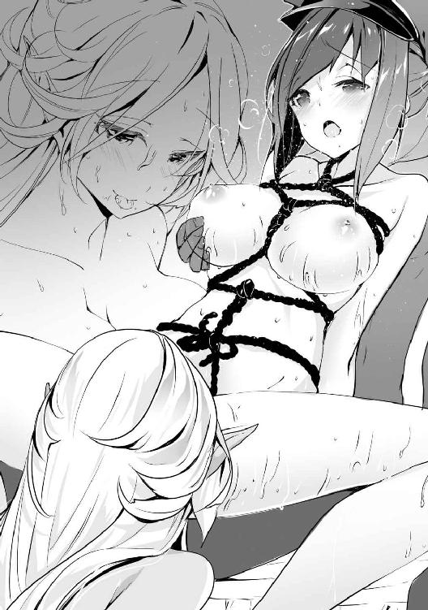
「─────っ！ にぃいいいいイイイッ！」
効果は絶大だったようで、たったそれだけでオリンピアは絶頂してしまったようだ。予想もしていないところを弄られるのは想像以上の刺激となるらしく、彼女は歯を食いしばって暴力的なまでの快感に飲み込まれそうになるのを必死に堪えていた。
「他の女性を虐めるのを手伝わせるなんて、ヤード様も酷いお方ですね」
「躊躇いもなくやったお前も同罪だがな」
「ふふ、分かりました。では彼女が気をやるまでお手伝いさせていただきましょう」
そう言ってメルヴィナは摘んでいた肉芽を離して顔を近付け、指の代わりに舌を使って愛液が滴っているオリンピアの秘部を舐り始めた。
「止めっ、ひぁっ！ あふっ、や、あっ、あぁああああ！」
後ろだけではなく前も攻められることとなったオリンピアは、大きく口を開いて舌を突き出し、必死に空気を吸っている。もうまともな言葉を喋れるほどの余裕もないようだ。
先ほどから軽い絶頂を何度も繰り返し、そのたびに菊蕾が締まって俺の肉棒を刺激してくるので、そろそろ俺も限界だった。
「くっ、中に出すぞ、おぉっ！」
最後に肉棒を深く突き入れて、オリンピアの中で勢いよく射精した。そして俺が射精するタイミングを見計らっていたのか、メルヴィナもオリンピアの陰核を甘噛みした。
「あぁあああ！ イクイク、イキますぅううううう！」
オリンピアはあまりの快感で叫びながら絶頂していた。身体は痙攣したかのようにビクンビクンと大きく跳ね、動きが止まった後も半開きになった口から言葉にならない喘ぎ声を漏らしていた。
肉棒を引き抜くと、途端に中に出した精液が溢れ出てきた。二回目だというのにこんなに出せるのかと驚きつつも、まずは絶頂時の疲労でぐったりとしているオリンピアを寝床に寝かせておいた。
「ヤード様、満足していないのならまだ付き合えますが......」
「いや、今日はもう十分だ」
「そうですか、分かりました」
メルヴィナはまだまだやれるとアピールしているが、日中は運動らしい運動もしていないというのに疲れた顔をしていては、疑われる原因となるだろう。今日はここで止めておいたほうがいい。
メルヴィナもそれは分かっているから、少し残念そうな表情をしていてもそれ以上無理に誘ってこないのだろう。
「そんな顔をするな。またいい機会ができたら抱いてやる」
「はい、そのときはよろしくお願いします」
俺の言葉に嬉しそうに微笑んだ彼女は、甘えるように寄りかかってきた。その後会話が途切れたまま、オリンピアが意識を取り戻すまでしばらく好きにさせていた。
※
夜が明ける前に情事の痕跡を跡形もなく消し、二人をそれぞれのテントへと送った後、少しでも疲れが取れることを期待して仮眠を取っておいた。
そして日も昇り、手早く出発の準備を整えた後、俺は今日も退屈な馬車の中へと乗り込むことになった。馬にでも乗れたらもう少し暇が潰せたのだろうか。
今日もアレクの自慢話は絶好調のようで、昨日の疲れが残っているメルヴィナは頭を揺らしながらアレクの話を聞き流していた。オリンピアに至っては馬車の振動と奴の話し声が眠気を誘うのか、馬車が走り始めるとすぐに眠りに落ちていた。
「そういえば、メルヴィナ殿。昨晩はどちらに行っていたのですか？」
「え？ な、何のことでしょうか？」
「昨晩貴女のテントを訪ねたのですが、運悪くどこかへ行っていたので」
「そ、そうですね。少し外の空気が吸いたくて......申し訳ありませんでした」
しばらく自慢話を続けていたアレクが、ふと思い出したように聞いた言葉が予想外だったのか、半分眠りかけていたメルヴィナは慌てて笑顔を作って誤魔化していた。
しかし眠気で上手く回らない頭では咄嗟に言い訳が思いつかないのだろう。笑顔で誤魔化し通すつもりのようだが、肝心なところで空気の読めない奴がその程度で追及を止めることはなかった。
「明かりもない深夜に外をうろついているのは、何か事情があるからだと思ったのですが......はっ、もしや魔帝国に恨みを持っている貴族に弱みを握られて脅されている......？ 娘さん達を人質に取られていたりするのですか？」
「いえ、そういったことはないです」
「そうですか。しかし夜間に女性が一人で出歩くのは大変危険です。この軍の中にも元魔帝国の人間である貴女を快く思っていない者はいます。貴女は何気ない行いだと思っていても、彼らの不興を買ってしまうかもしれないのです」
「ええ、軽率でした。これからは気を付けます」
「はい、それともしよろしければ昨日何をしていたのか話してくれませんか？ 夜間の行動は控えるように決まっているので、一応何をしていたか記録を取っておく必要があるのです」
「それはよく分かりますが、あの......」
再び言葉に詰まったメルヴィナが、こちらに助けを求めるような視線を送ってきた。アレクの追及は軍の規範だからという理由ではなさそうだ。執念深い奴のことだ、おそらくメルヴィナが全て詳細に話すまで追及を止めることはないだろう。
「アレク殿」
「ん？ ヤード殿、どうした？」
「話を聞いていると夜中に彼女のテントへ行ったようだが、何故夜中に彼女を訪ねる必要が？ 先ほどそちらが言っていたように、緊急時以外は夜間の外出は控えるよう言われていると思うのだが。それとも何か緊急の要件でもあったのだろうか？」
「あ、いや、それは......」
「私も今の話を聞いた以上、そちらの外出理由について聞かなくてはならないのだが、今は非常に眠いのでこれ以上話をしたくはないのだ。分かってくれるな？」
「そ、そうだな。何も問題はなかった、うん」
アレクが何か言っていたが、これ以上話はしないとばかりに顔を逸らす。いくらかメルヴィナとの仲を疑われたかもしれないが、自分の行いが疾しいものであると感じる人間ならば、今の言葉で十分な枷になるだろう。奴は空気を読めない男だが、致命的に頭が悪いわけでもない。
アレクは気まずい空気を誤魔化すように別の話を始め、メルヴィナは奴の追及を免れて安堵のため息を吐いているのが聞こえたので、ひとまずこの話は終了したとしておこう。
※
それから数日、一日中馬車に揺られ続けているせいで結構尻も痛くなってきたのだが、未だに帝都にすら辿り着けていない有り様だ。目的地までの旅路は遠い。
「そういえば、相手側の貴族との交渉はどなたがやるのですか？」
「私が交渉役を務めさせてもらう予定だ！ 陛下も期待しているこの出兵に失敗は許されない以上、交渉という重大な案件を他人に任せるわけにはいかない」
かなり暇を持て余していたオリンピアが今回の交渉役について尋ねてきた。特に返事を期待しているような声ではなかったので無視しようかと思っていたのだが、久しぶりの質問が嬉しかったのか、アレクが先に答えてしまった。
「帝都が陥落したときでさえ王国に靡かなかった貴族達です。それに北部は皇帝を支持していた貴族も多かったと思います。こう言っては何ですが、彼らと交渉の場を持ったところで従うとは到底思えないのですが......」
「む、そうなのか」
オリンピアの説明に関心しているようだが、普通は交渉相手の情報などは調べられるだけ調べておくものだ。彼女が語った程度の知識もないのに、何故交渉役をやりたがるのだろうか。奴の単純な思考回路は、俺には到底理解できないものだ。
「しかし帝都は我らの手の内にあるのだ。帝都を奪われたままでは皇帝の権威にも傷が付くだろう。奴らが皇帝を持ち上げているというのなら、こちらが有利に交渉を進めることもできるはずだ」
「......その帝都が王国側にあるというのに態度を変えないことを考えると、相手は皇帝を切り捨てるつもりか、もしくは現皇帝に替わる指導者を立てるつもりなのかもしれませんよ......」
オリンピアが小声で呟くが、そんなことを理解できている奴は、普通交渉をしたいなどとは言わない。今のアレクは奴を賞賛する言葉くらいしか聞き入れてくれないだろう。
しかし今回はこいつに手柄を与える約束をしているので、相手側がどう思っていようとも力技で何とかするつもりではある。手段を選ばなくていいならば、いくら束になろうが簡単に蹴散らすことのできる相手だ。いちいち気に病むなんて馬鹿なことをするつもりはない。
「ご主人様、本当にあの人で大丈夫なのですか？」
「極論を言えば、魔帝国の人間と会話できる能力があれば誰でもいいのだ。奴が無能だったとしても何の問題もないので、そこまで気にしなくてもいい」
「分かりました」
アレクは隣で聞こえないような小声で馬鹿にされているとも気付かずに、メルヴィナに任務成功後のことを語っていた。俺に支配を掛けられていることを除いても、既に彼女は人妻だと知っているはずなのだが、本気で彼女を落とせると思っているのだろうか。
まあ、そもそも奴の恋路がどうなろうと俺の知ったことではないのだが。
「あの人凄いですね、この前聞かされた自慢話をまたしていますよ。あの女もよく聞いていられますね、私なら我慢できずに殴っているところです」
オリンピアもアレクの非常識さにはうんざりしているようだ。手が早いのは問題だが、昨日から話に付き合っているメルヴィナならば、一発や二発くらいアレクを叩いてもいい気がする。
そんな彼女は今日も引きつった笑顔を浮かべながら奴の話に相槌を打っていた。眠気を堪えながらつまらない話を聞き続けているその姿は、あまりにもいたたまれなかった。あと何日このようなことが続くのかを考えると憂鬱になる。
一刻も早く到着して欲しいと心の中で願いながら、そろそろ顔が青褪めてきたメルヴィナを助けるべく、上機嫌で話を続けているアレクを止めに入った。
王国軍と北部連合軍は、帝都からかなり北上したネイラー辺境伯領に近い平原で対峙していた。
遠目から見た限り、北部連合軍の兵数は五千にも届かないような規模であり、珍しくも王国軍のほうが兵数では倍以上は勝っているようだ。
国王の方針を忠実に守ったアレクはまず相手側に降伏勧告を出したが、それは当然のように拒否された。ここで降伏するようならばそもそも王国に反旗を翻してはいなかったはずなので、当然と言えば当然の話だが。
しかし王国側の貴族達はこちらの提案を蹴ったことに怒り心頭のようで、降伏勧告を拒否されたという報告が返ってきたときには、皆信じられないような表情を浮かべた。
「魔帝国の正規軍を打ち破った王国が、一部の愚か者共が作った寄せ集めの軍に負ける道理はない。それなのに勝ち目のない戦を行おうとするとは、奴らは何を考えているのだ？」
「そんなことはどうでもいい！ 優勢である我々が送った降伏勧告に対し、使者も出さずにこれを拒否するとは、明らかに我々に対する侮辱である！」
「そうだ！ 身の程をわきまえない連中に我らの力を思い知らせてやる！」
次々と好戦的な発言を繰り返す貴族達と違い、アレクは突撃に反対のようだ。まあ奴は国王に宣言した以上、軍の被害を最小限に抑えるような策で挑みたいと思っているのだろう。
しかしこの国の貴族達は、伝統的な騎士の戦いの延長として正面から相手を打ち破るのを好むようだ。貴族達が建設的な案も出さずに思考停止したような突撃ばかり提案するので、先ほどから頭を押さえてため息ばかり吐いている。
敵側の偵察に行っているためサガミはこの場にいないが、奴も正面からの突撃には反対しているだろう。そうでなければ敵の戦力を調べに行っている意味がない。
「ご主人様......何故王国には、こうも短絡的な人間が多いのでしょうか？」
俺の傍に控えていたオリンピアがこっそりと耳打ちしてきた。曲がりなりにも魔帝国の指揮官として働いていたこともある彼女からしてみれば、一騎打ちの延長のような戦い方を叫んでいる彼らの思考が理解できないのであろう。
「こいつらは騎士の時代で戦いが止まっている。特に勇者という規格外の存在が仲間にいることで、個人の武勇が戦いに大きな影響を与えるような戦いを今でも信じているのだ」
「そういうものなのですか。確かにご主人様一人で相手を殲滅できそうですが......」
「そんなことをすれば私の手柄になってしまうだろう？ 今回はあくまで裏方に回る」
「はぁ、分かりました......」
今一つ納得のいっていない表情を浮かべながらも頷いた彼女は、再び会議の様子を眺め始めた。
正面からの突撃に賛成する多数派と、今は様子を見たほうがいいという少数派に分かれているが、数の差からいえば思考停止した奴らの意見が通りそうだ。
「皆、待ってくれ。国王陛下は王国の兵士に極力被害を出さないよう願っておられた。こちらが数で勝っているとはいえ、正面からぶつかっては被害も大きくなる。相手に奇襲をかけて戦力を削ったほうが有利に働くし、ここはサガミ殿の帰還を待って陣形を考えるのがいいと......」
「何を言っておられるのですか！ 王国の強さを見せつけるには正面から敵を打ち破る以外にありません！ 国の威信を背負った戦いで奇襲などすれば、それこそ末代までの恥となります！」
「確かに誇りも大切だが、兵達の命をみだりに失うのは避けなくてはいけないだろう？」
「騎士でなければいくらでも替えが利く！ 仮にも上に立つ者がそのような細かいことを気にしていては、兵達の士気も下がろうというものだ！」
アレクにしてはとても殊勝な意見だったが、残念ながら騎士の時代で戦いが止まっている貴族達には、奴の姿勢は軟弱者の意見として聞き届けてはもらえなかったようだ。もはや多数派の意見は誰にも止められないほどの勢いとなっていた。
「話になりません。これでよく魔帝国に勝てましたね」
「言ってやるな。奴らの中にはこの前の戦いには参加していない者も多い。今回少しでも武勲を挙げようと必死になっているだけだ」
「正面から突撃しても被害が増えるだけですよ。おそらく相手の兵には第一魔術兵団がほぼ無傷で組み込まれているでしょう。兵数ではこちらが有利かと思いますが、魔術師の数は相手の半分程度だというのに、何故魔術師の支援もなく突撃なんて思考ができるのか、私には分かりません」
まあ並の魔術師の火球でも、フルプレートの騎士を二、三人吹き飛ばせるだけの威力はあるだろう。ましてや第一魔術兵団は魔帝国の中でも精鋭の者達が揃っていると聞いている。
単純に考えても突撃が成功する見込みはない。敵の前まで辿り着ければ幸運なほどだ。
「ここまで聞き分けがないと、もう無理やり命令をしたほうがいいのではないでしょうか？」
「その判断をするのもアレクだ。何か頼まれない限り、私自ら動くことはない」
ただでさえ前の戦いで活躍したせいで、過分な勲功を得てしまっているのだ。これ以上目立つとまた余計な因縁を付けられかねない。アレクの命令で動けば功績の大部分は奴に行くので、それまでは黙って会議の様子でも見ているのが賢明なのだ。
「そういえば......ウェルナー伯爵、貴殿が魔帝国の竜や巨人を止めたあの魔術を使ってくれれば、被害を出さずに勝利することも容易ではないのか？」
先の決戦に参加していたらしい貴族が、俺にそんな話を振ってきた。確かに遅滞を使えば敵兵の行動の一切を止めることも可能だろう。人間よりも遥かに高い術式抵抗を持っている竜種でさえ止まったのだ、ただの兵士を止めることなど造作もない。
「なるほど、いいところに目を付けられたな。だがあの術式を使うのは無理だ」
「何故？」
「あれは発動する際に身体にかなりの負担を掛ける術式で、再び使えるようになるのに一月や二月ではとても足りない。そういうわけで今は使えない」
「そうか、それならば仕方ないな......」
実際には身体への負荷などなく、それどころかそこまで魔力消費量が大きい術式でもないのだが、そのことは黙っておく。俺を便利な魔導具扱いされてはたまらない。
それに広範囲を対象に取る術式は制御だけでも手一杯になり、探知術式を使っている余裕がなくなってしまう。エルがどこで見張っているのか分からない以上、そんな危ない橋を渡れない。
そして何より、勇者に頼った戦いをしようとするその考えが気に食わない。グルタ要塞やイストリア砦での戦いならともかく、数で勝る戦いくらい自分達の力だけで戦い抜いてくれないと困る。
「ではやはり突撃しかありませんな。それも、相手の陣形が完全に整わないうちに仕掛ける必要があると思いますぞ。こちらには無駄に長対陣するほどの糧食もありませんからな」
「ギルフレイア伯爵は臆病風に吹かれているようですし、我々が指揮を執ってみるのもよろしいかと思います。どうでしょうか、皆さん」
アレクを完全に蔑ろにしたこの意見に、多くの貴族達が賛同していた。勇者ばかりに功績を取られて悔しい思いをしている貴族達にとっては、奴から手柄を奪い取るいい機会なのだろう。
十中八九全滅して潰走するとは思うが、やってみるのはいいことだ。死んでなければ回復することもできる。まあ死体を持ち帰る余裕はないと思うが。
その後の話し合いにより、突撃部隊は作戦を提案した貴族達を部隊長とするようだ。機動力重視の騎兵部隊で敵陣に切り込み、前線をかき乱したところで歩兵による乱戦を行い、彼我の魔術師の人数差を埋める作戦のようだが、突出した騎兵が魔術師に狙い撃ちにされて終わりだろう。
もちろん敵の術式対策に魔術師達もいくらか同行させるらしいが、魔術師の戦いは基本的に質より数なので、三桁にもならない数を連れていったところで役には立たないことは目に見えている。
「......っ！」
アレクは自分の意見を聞き入れてもらえないどころか、まるで奴の存在を無視されているかのような会議の流れに怒りを抑えきれずに机を叩いて出ていった。
「あの男に手柄を譲るのであれば、あれを止めなくていいのですか？」
「部下が言うことを聞きたくない気持ちは理解できる。止めないでやれ」
それに今回はアレクの手柄になることもないだろう。貴族達には精々アレクの名声を高めるための犠牲となってもらいたいものだ。
「では早速準備を始めるぞ！」
最後にアレクの代わりに仕切っていた貴族が軍議の終わりを告げた。会議もお開きになったことだし、サガミが戻ってくるまではメルヴィナ達と暇を潰しておこう。
※
その翌日、サガミが敵戦力の偵察を終えて戻ってくる前に突撃部隊が敵陣へと侵攻を開始したのだが、その結果は惨憺たるものだった。
軍の騎兵を半分以上率いて突っ込んでいったというのに、自陣に帰還できた者はその半分にも満たなかった。その上報告では、敵軍に与えた損害はほぼゼロ。言い訳のしようもない完全敗北だ。
ついでに突撃に付いていった貴族達は何人かが捕虜となったらしい。せめて殺されてくれれば敵討ちと言って士気を上げることもできたかもしれないというのに、本当に使えない奴らだ。
帰還した兵の報告を聞いていた俺以外の者は全員顔色を悪くしていた。特に突撃に賛同していた連中は驚きを隠せていない。突撃が失敗した場合のことは全く想定していなかったようだ。
「ど、どうするのだ！ まさか相手に一矢報いることすらできなかったとは！ いや、それよりも数で劣る敵に全滅させられたとなると、我らの責任が......」
「ええい、あれほど大口を叩いていたくせに無様な敗北を喫するとは！ 我々の立場がないではないか！ しかも敵に捕縛されるなどと、よくも我らの手間を増やしてくれたな！」
自分達の失態を捕まった貴族達に転嫁している光景は半ば予想されていたものとはいえ、実に滑稽としか言いようがない。そんな無駄なことをしている暇があるのならば、敵を倒すことに関して、建設的な意見の一つでも出してくれればいいのだがな。
アレクはこの光景に嬉しそうに顔が緩むのを堪えられないようだった。奴からしてみれば、ここで敵を降伏させれば連中の失態を補ってもまだ余りある功績を手に入れることができるのだ、昨日までの荒れた様子が嘘のように余裕に満ちた態度を取っている。
「もっと早く帰っていれば、こんな馬鹿な突撃など止めさせられたかもしれないというのに......」
サガミは命を懸けてやってきた偵察が間に合わなかったことを悔やんでいるようだが、一日や二日で敵戦力の情報を調べてくるなど、普通の人間には到底できない。隠密行動に優れたサガミだからこそできたようなものである。まあこいつがいれば突撃案には絶対に反対していただろうし、貴族達の暴走を抑えることもできたかもしれないのも事実だが。
「終わったことを嘆いても仕方があるまい。それよりも予想以上だった敵の戦力に対してどのような対策を取るのか考えたほうがいいと思うのだが？」
何とか帰還を果たした兵士の情報により、敵の戦力が予想よりも遥かに強大なものであることが判明していた。五千しかいないと侮っていた敵戦力が、何と全員魔術師だったというのだ。
もし兵士の言うことが本当ならば、敵は以前の決戦で使った以上の魔術師を、北部の貴族達だけで抱えていることになる。北部全域から集めたとしても、そんな数の魔術師は揃わないだろう。
兵士の話を信じられない貴族達は、自分がなす術もなくやられたことを正当化しようと大げさに言っているのだと決めつけていた。しかしそれもサガミの持ち帰った情報によって事実だと証明されてしまったのだ。
「対策？ 二千の兵が瞬く間にやられたというのに、一体どんな対策が取れるというのか？」
「正面から衝突したからだ。何の障害もない平原を馬鹿正直に突っ走ってくる敵がいたら、どう見ても殺して下さいと言っているようなものだろう？ 同じ状況なら、私も同じような行動をした」
「五千もの魔術師を打ち倒す方法など、奇襲か同じ数の魔術師をぶつける以外にない！ それともウェルナー伯爵、貴殿なら何か妙案があるとでもいうのか？」
「私にはないが......ギルフレイア伯爵ならこの窮地を突破することができるだろう」
責任問題で苛立ちの募っていた貴族の一人が、馬鹿なことを言うなとばかりに俺の言葉を切り捨てようとしたが、ここは攻める好機なのだ。全員が絶望している状況でアレクが活躍すれば、奴に功績が貯まりつつ、周囲の人望を集めることもできる。
「わ、私か？ いくら私が勇者といえども、流石に五千の魔術師を相手にするには......」
「......」
アレクが余計なことを言う前に睨んで牽制しておく。こちらの意図を少しは読んで欲しいものだが、奴にそれを求めるのは高望みが過ぎることも分かっている。
（アレク殿、話を合わせろ）
（む、神託......？ いや、この声はヤード殿か。何か策があるのか？）
（策と呼べるほどのものではないが、そちらが存分に活躍する方法はあるぞ？ 詰まるところ、アレク殿単騎で敵陣をかき乱してもらう作戦だ。当然私も陰ながら協力するので問題はない）
（......そうか、ではこの場は全面的にヤード殿を信じることにしよう）
念話を繋いだままアレクのほうを見る。周りの視線が一斉に奴へと注がれているが、傍目には狼狽することなく堂々とした姿で立っていた。
「ギルフレイア伯爵、ウェルナー伯爵が言ったことは本当なのでしょうな？ この場凌ぎの嘘でないことを証明するためにも、考えをお聞かせ下さると有り難いのですが」
「ああ、魔術師五千人が相手ではよほど腕の立つ者でなければ力不足、ならば勇者である私が一人で敵陣へと乗り込んで、敵軍を壊滅させてみせよう。皆は討ち漏らした魔術師だけを任せる」
ちらちらとこちらを見てくるアレクに念話で話を伝え、それを奴が喋っている。堂々とした態度も味方して、勇者としての自信に満ち溢れたような感じに見える。奴を疑っていた者達は、有無を言わせない謎の説得力に気圧され、一人も抗議の声を上げることはなかった。
「で、ではその言葉が偽りでないかどうか、実戦にて証明していただきたいものですな」
「ああ、もちろん。ただ少し準備があるので出立は明日になる」
「......現状我らには無茶と思える貴殿の提案しか、縋れるものもありませんからな」
一応全員が納得したことで、アレクの単騎突撃案が可決された。時折こちらをちらちらと見てくるのは、本当に魔術師五千人を相手取れるのか不安になっているからだろう。だが大丈夫だ。
魔術を扱う者には使えないような強化術式の中には、魔術師相手にならば絶対に負けなくなるようなものもいくらか存在している。剣に込められた術式に頼っているだけで、本人に魔術師としての素養はないアレクにとってはうってつけの方法と言える。
「ご主人様......」
会議が終わった後、外で待っていたオリンピアに捕まった。不安げな表情は先ほどの作戦を聞いていたためだろうか。防音もされていないテント内での会話など、少し耳を傾ければ十分に聞こえていただろう。しかし、彼女の懸念はそんなことではなかったようだ。
「敵の動きなのですが、妙だとは思いませんか？」
「ただの寡兵だと侮ってあのような突撃をさせる作戦だったと考えれば、こちらの動きを待っているのは当然だと思うが、お前は別の意図があるかもしれないと、そう思うのだな？」
「はい、私ならば突撃していた兵を破った後に本陣を急襲します。突撃部隊の壊滅から再び軍を立て直される前までに攻めるのが一番効率的だからです。それに話に聞いていたほど魔術師の頭数が揃っているならば、大火力の魔術で本陣を一気に壊滅状態まで持っていけます」
「まあ、それも一理あるな。だが奴らの兵があれだけしかいなかったと考えると、魔術師部隊を動かしている間に自陣を襲われる可能性を考慮しているのだろうと推測できるが」
「敵の魔術師があれだけだとは思えません。そもそも実戦で使える魔術師を育て上げるのには、かなりの時間と金を使います。それに魔帝国から魔術師を集めてきても、魔帝国軍にはあれほど多くの魔術師はいませんでした。何らかの手段で兵士を魔術師として使えるようにしたのでしょう。ならばもっと大勢の魔術師がいてもおかしくはありません」
「ふむ、魔術師の素養がない者を魔術師にする方法か......」
「何か心当たりがありましたか？」
一応素養のない者に魔術を使わせる方法はある。
一つは魔道具によって術式を行使する方法。だが五千人分もの魔道具を用意し、同じ数の魔石を集めなくてはならない上に数回使えば魔力切れになるだろう。これは現実的ではない。
次に魔導強化人間を作る方法、これは俺がエルに施した肉体改造のことだ。訓練すればエルのように元が魔術師でなくても、並の術式なら行使できるようにすることは可能だ。
だがこの方法はあくまで才能を向上させるもので、魔術師として戦いの訓練は必要だ。エルが砦にいたうちから始めていたとしても、五千人は多すぎる。これも現実的ではない。
そして最後に、契約による術式の譲渡だ。ある術式を使いたい者とその術式が使える魔術師の間で契約を結び、魔術師がその術式を待機させたまま保存しておく。使い手は契約の際に決めた言葉や動きをすることで、離れた場所でも待機状態の術式を使うことができるというわけだ。
術式保存という術式を使うことで、魔術師は自身の魔力量まで術式を待機することも可能になるので、一度に複数の人間と契約することも可能だ。
ただこの方法は術式を共有しているだけなので、魔術師の総数は変わらない。発動する術式にもよるが、普通の魔術師ならば十数人と契約を結んだ時点で限界な上、使い手には魔術師の残存魔力が分からないので、よく魔力切れによる事故を起こしていた。
さらに遠隔地で発動する以上、距離による魔力の減衰で、オリジナルと同等の威力は発揮できないのだ。ネイラー辺境伯内で戦っているうちはそこまで気にすることではないだろうが、王国に進軍する場合、おそらく半分以下の威力となるだろう。つまりこの方法は有用ではない。
結論として、今挙げた方法を使っている可能性はあるが、どれかは分からない上にどれも運用上の問題はあるということだ。俺としては魔導強化兵辺りではないかと思ってはいるのだが。
「むぅ......確かにその中では、育成さえ成功すればいい二番目の可能性が一番高そうですね。ちょうどいいことに、あちらには魔帝国の魔術の第一人者がいることですし」
このことをオリンピアに伝えると、難しい顔をして唸った後、俺と同じ結論に至ったようだ。
「しかし敵がこちらに進軍してこないことを考えると、最後の可能性も捨てきれませんね。こちらならばあまり自陣から離れられない理由も納得がいきますし」
「単一の術式しか使えないそちらのほうが有り難いのは確かだな」
まあ明日には敵軍はアレクに蹴散らされるので、どちらの可能性でも構わないのだが。
ただどちらの場合にしても魔術師は戦った以外にも存在している可能性が高い。残りの魔術師を全部突っ込んで強襲された場合、まず王国軍に勝ち目はなかっただろう。そんな技術を魔帝国が握っていたとは考えにくいので、まず間違いなくエルが関わっているはずだ。
もしあいつが出てきた場合、アレクでは勝ち目がないので俺が出る必要があるかもしれない。できれば人の目のあるところで力を出したくはない。敵の動きが怪しいことも考慮に入れつつ、万が一の可能性に備えておかなくては。
※
会議が終わって少しした後、アレクの下を訪ねたところ、奴はテントの前で素振りをしていた。あまり気が入っていないところを見ると、おそらく緊張で何かしていないと不安だったのだろう。
「アレク殿、ちょっといいか？」
「む、何の用だろうか？」
訓練に集中していたのか、近付くまで俺の存在に気付かなかったようで、少し意外そうな顔を見せていた。素振りに使っていた剣は奴が召喚されたときから持っていた魔法剣だ。確か五つの属性の術式を発動できるとか言っていた。剣に追加効果を持たせるような物ばかりだった記憶がある。
確かに対人戦では有用な能力もあるかもしれないが、今回の突撃では最低でも対軍用の広範囲攻撃が必要だろう。五千人を一人一人切っていては先に体力が尽きてしまう。
「アレク殿、剣を貸してくれ」
「ん？ ああ」
渡された剣を見てみるが、付与されている術式はやはりどれも対人戦用の物ばかりだった。一応風が矢などの遠距離武器や弱い術式を弾き飛ばすことができる結界を張れるようだが、あとは本当に剣に属性を付与するだけの術式しかない。
「アレク殿、一番使っている属性は？」
「雷属性だが？」
「何故雷属性を？ 炎属性のほうは鎧などの防御を貫通できるようだが？」
「雷属性は剣を交わしただけでも相手を戦闘不能にできるのだ。逆に炎は相手の武器を切り裂いてしまい、攻撃を受けとめることができないからな」
奴のことだから雷のほうがカッコいいとか言い出すと思っていたのだが、真面目な答えが返ってきた。確かにアレクが元騎士だったことを考えると、重装鎧を着ている騎士などの相手には雷が有効だったと思うので、正しい選択をしていると言える。
だが今回やって欲しいのは一対多数の集団戦だ。剣の届く範囲しか攻撃できない武器など、あってもなくても大して変わらない程度の価値しかない。
ここは広範囲攻撃が優秀なイメージのある風属性の術式を選ばせることにしよう。
「どうやらこの剣で雷属性を発動するのは難しいようだ。相性がいいのは風属性だろう」
今剣に付与されている風属性の術式は、矢除けの結界と剣速の上昇だ。こんな弱い術式で軍を相手にするのは難しいので、風刃と烈風を付与してやった。これならば一振りで何十人もの相手をなぎ倒すことができるだろう。ついでに防御用として風陣と上級無効化能力も発動するようにしてやった。魔術師ならば魔法が発動できなくなる不具合があるが、奴自身はただの剣士なので問題ない。そして最後に遠隔視用の刻印を刻んでおいた。
完成した剣を試しに人のいない方向に向けて振ってみたところ、恐ろしい勢いの風が生じ、剣筋の延長線上にあった木々がズタズタに引き裂かれ、纏めてなぎ倒されていた。かつてアドリアナの使っていた術式を再現してみただけなのだが、使う者が使えばかなりの威力を出せるようだ。
「な!?」
この結果には剣の持ち主であるアレクだけでなく、近くにいた人間達も足を止めてその破壊痕を見つめてしまうほどだった。これならば相手の士気を削ぐのにも十分役に立つことだろう。
アレクに剣を返すと、奴は少し手を震わせながら自分の剣を凝視していた。
「......先ほどの風はヤード殿が発動したものなのだろうか？」
「いや、僅かに手を加えはしたが、根本はその剣の力だ。嘘だと思うなら確かめてみるといい。風の刃を想像しながら振ると発動しやすいと思うぞ」
俺の言葉に頷いたアレクが同じように付与された術式を発動しながら剣を振ると、先ほどと同じように突風が巻き起こり、アレクの正面にあった物を切り裂き、吹き飛ばしていた。
「以前『紅鱗』を討ち倒したときに力のほとんどを使い果たしてしまったと思っていたが、まさかこの剣にまだこのような力が眠っていたとは......」
「以前も剣が発揮したのは炎属性の術式だっただろう？ いくら五属性が付与できる魔法剣だからといって、それに合った術式を選ばなくては威力が落ちるのは当然だ」
「そうだったのか......」
愕然とした顔で破壊された風景を眺めていたアレクだが、しばらくして我に返ると、先ほどまで不安げだった雰囲気が全くなくなり、いつもの自信に溢れた態度が戻っていた。
「これならばまさに一騎当千の活躍ができる！ ヤード殿、恩に着るぞ！」
「ああ、自分の任務を果たしてくれれば、私から何も言うことはない」
これで奴が突撃してもやられるようなことはないだろう。安心して奴を送り出すことができるな。
「やはりヤード殿に協力を依頼したのは正解だった。私の目に狂いはなかったということだな」
便利屋扱いされるのはあまり気分のいいものではないが、奴の機嫌を損ねても仕方がないので、鬱陶しい台詞を吐きながら肩を叩いてくるのも大目に見ておいてやろう。
※
さて、そうして迎えた翌日、早速アレクは敵陣へと乗り込んでいった。
今回は相手の様子を窺うべく、遠隔視の準備もしている。剣に刻んだ刻印でアレクが戦っている様子をどこからでも観察できるようにしておいたのだ。この術式のおかげで、鏡や水面などを介して奴周辺の様子を映し出すことができる。
早速見ようとしたところ、ちょうどテントを訪れていたオリンピア達も、俺が何をしようとしているのか見ていたいと言い出したので、彼女達もアレクの戦いぶりを観戦することとなった。
「まあ！ これはギルフレイア伯爵のいる場所を映しているのですか？」
「ああ、そうだ。刻印を刻んだ場所を中心として、半径百メートル程度の範囲を映し出すことができる。今回は奴の持っている魔法剣を中心とさせてもらっている」
「素晴らしい！ このような術式は見たこともありませんでした！」
メルヴィナは初めて見た術式に少し興奮しているようだが、オリンピアは映し出された光景を見て、面白くなさそうな表情をしていた。
「分かってはいるのですが、何故あの男が活躍することになっているのでしょうか。ご主人様のほうがあの男などよりも遥かに称えられるべき人物であるというのに......」
オリンピアはアレクのことが嫌いなようだ。これも彼女の忠誠心を上げすぎた結果だろう。
再びアレクの様子を確認すると、奴は単騎ということで馬も全力で走らせることができ、目標である敵の部隊までは割とすぐに到着することができたようだ。敵から見れば一人で突っ込んでくる騎士などただの的にしかならず、当然ながらアレクに向かって大量の火球が降り注いでいた。しかし奴は剣を抜き放って雨のように飛来してくる火球に向かってそれを振ってかき消しただけでなく、巻き起こした突風でその先にいた敵の一陣までも吹き飛ばした。
詠唱が聞こえないので何とも言えないが、術式を使った奴らの口の動きは、詠唱省略をしているかのように少ししか言葉を発していないように見えた。この短期間で一般兵が詠唱省略まで極めているのでなければ、あれは術式を引き出すための合言葉だ。
となれば、奴らに術式を供給している魔術師が他にいることになる。あの人数の術式を纏めて保持できていることから、おそらく千人以上は魔術師が残っているはずだ。
「凄い威力ですね。ご主人様自ら手を加えただけのことはあります。しかしこの魔術、音は聞こえないのでしょうか？」
「音は無理だな。あくまで共有できるのは視覚だけだ」
「むぅ、やはり音がないと戦況がよく分かりませんね。あれは叫んでいるのでしょうか？」
アレクは敵をなぎ倒した後、馬を止めて何か叫んでいるように見えた。奴の性格から考えると、おそらく戦いを始める前に名乗りを上げているのだろう。
軍に関係のなかったメルヴィナでさえ『紅鱗』を倒した勇者だということを知っていることからも、奴の知名度は魔帝国内でも相当なものだ。事実、兵士達は奴の言葉を聞いて震え上がっていた。
アレクが馬から下りて剣を構えると、それだけで正面にいた兵士の集団が何かを避けるように割れた。先ほどの風を食らわないようにするためだろうが、横に避けたぐらいでは避けられないだろう。何とも無駄な努力をしている兵士達の姿に悲しみを覚える。
兵士達の後方で叫んでいる兵士がいたが、おそらくあれが指揮官なのだろう。奴が何かを指示すると、割れた隊列のままで敵が二方向に撤退を始めた。たった一度の攻撃で怯えたわけではないだろうが、これは流石に予想外だ。
アレクも突然のことに驚いて思考が停止してしまったようだが、逃げる敵の姿を見て慌てて一方の集団を追い始めた。だが相手は逃げに徹しているので、片方すら全滅させるのは難しいだろう。
「むぅ、やはり敵の行動は明らかにおかしいです。何か時間稼ぎをしているようですね」
「時間稼ぎか、戦略級術式の魔法陣でも描いているのだろうか......？」
撤退しつつもアレクに術式を打ち続けている光景を見ながら、時間稼ぎをしている理由を考えてみる。予想できるのは王国軍の足止めをして、援軍か秘策でも準備している可能性だ。もしかしたら別の部隊が王国軍の後ろに回り込んで挟撃を仕掛けてくるかもしれないな。
そんなことを考えていると、不意に首の辺りからパキッと硬い物が割れる音が響いた。エレインに渡されたネックレスを見てみれば、付いていた魔石にヒビが入っている。押し付けたわけでもないのに割れるということは、彼女に何かあった証拠だろう。どう考えても嫌な予感しかしない。
「オリンピア、メルヴィナ、私はレシアーナに跳ぶ。もしものことがあればサガミを頼ってくれ」
「え？ は？」
「ど、どうしたのですか？ 突然そのようなことを......」
二人をこのまま置いていくのは不安だが、事情を詳しく説明している暇はない。それにサガミならば彼女達に無体な真似はしないだろう。
いきなりの発言に困惑を隠せない二人を放置しつつ、俺はレシアーナへと転移した。
※
魔力溜まりに直接転移するのは座標がずれる可能性があって危険なので、エレインの住んでいる場所に一番近い集落へと跳んだのだが、そこには恐るべき光景が広がっていた。
森はあちこちが火に包まれ、集落の中にはウッドエルフ達の死体が何体か転がっていた。どう見ても襲撃を受けたようにしか見えず、エレイン達も無事では済んでいない可能性が高い。
急いでエレインの住む場所へと向かおうとしたのだが、その途中で誰かの声が聞こえて足を止めた。どうやら近くの倉庫から聞こえてくるようだ。
中を覗いてみると、そこにはウッドエルフ達が全身を拘束され、魔法陣の上に転がされた状態で捕らえられていた。その近くには魔帝国の兵士と思われる服装の男が二人いた。おそらくはエルフ達を見張っているのだろう。退屈そうな様子を隠しもせずに雑談をしていた。
「これ何時になったら撤退指示がくるんだ？」
「さあ？ 詳しいことは聞いてないが、とりあえず王都を襲う計画なんだろ？」
会話の内容も気になるので、とりあえず恐怖で二人とも昏倒させる。
奴らに近付いて記憶閲覧を使ったが、王都を襲撃するという情報以外に目ぼしいものはなかった。ただ、エルフ達が囚われた魔法陣の効果は知ることができた。魔力が続く限り強制的に火球を発動し、待機状態にしておくようなものらしい。
つまり辺境伯領で戦っていた兵士達は、ここのエルフ達の魔力を利用していたようだ。何とも非道なことを考える奴がいたものである。おそらく発案はエルだろうが。
ただここにいるエルフ達だけでは到底五千人もの術式を発動できるはずがない。それどころかレシアーナ中のウッドエルフをかき集めたところで無理だと思われる。そうなると可能性は一つ、エレイン達も同じ目に遭っているということだ。ハイエルフの魔力量は、この世界に存在する他の生物とは比べ物にならないほど強大なものである。火球ならばエレインだけでも何千発と撃てる。まさに術式を譲渡させるのにうってつけの人材といえるだろう。
先ほど魔石が割れたのは、彼女の保有する魔力量が減ったために存在を維持できなくなってきているのだろう。精霊である彼女にとって魔力が切れるということは存在の消滅を意味する。まだネックレスの魔石は完全に割れてはいないが、急がなくては不味いことになるかもしれない。
ここのエルフ達も助けてやりたいが、それよりも優先すべきことがある。手早く魔帝国兵にとどめを刺し、魔法陣の上からエルフを退かしてやり、倉庫を出て魔力溜まりへと向かった。
※
魔力溜まりでは展開してあるはずの異界反転が消えていた。やはりもう魔帝国の兵士達は魔力溜まりの中心にまで侵攻しているようだ。俺も上級無効化結界を展開して中心へと進んでいくと、そこには魔帝国の魔術師達に占拠されたハイエルフの住処があった。全員魔力溜まりの魔力に中てられることもなく立っている様子から、奴らが並の魔術師でないことはすぐに分かった。そのとき俺の気配を感じたのか、四人いるうちの一人がこちらに視線を向けてきた。森の中とはいえ他に生物は住んでいないため、動きがあればすぐに居場所が知られてしまうのだ。
「おい、そこに隠れている奴、出てこい」
ここからでは距離があるため、恐怖の有効射程から外れてしまっている。それに確信を持って命じている言葉の響きから、気のせいだったことにはできないだろう。このまま潜んでいても意味はないと思い、俺は仕方なく奴らの前に姿を現した。
「そこはハイエルフの住処だ。何故魔帝国の者がここにいる？」
「お前、王国の者だな？ それもこの人数差で怯まないとは、なかなかのやり手と見える」
「まあそうだな。ところで私はハイエルフに用があるのだ。できれば退いてくれないか？」
「残念だが、中には誰も通すなと言われている。それより折角退屈を凌げる相手が来たのだ、少しくらい遊んでいってもらおうか？ もちろん生きては帰れないが」
その言葉に周りの連中も動き、俺を取り囲むような形となった。俺が誰か分かっていたら、こんな悠長なことはせずに先手を取って襲い掛かってくると思うが、それをしなかった以上、こいつらの敗北はもう決定した。上級無効化結界を切り、いつでも魔法を使える状態にした後、目の前で喋っていた男に向かって指を指して四肢切断を発動してやった。多少実力があったところで俺の術式に抵抗できるわけもなく、男は全身をバラバラにされて地面に転がった。
一瞬遅れて周りの男達が驚愕の表情を浮かべていたが、流石に軍人はこういった事態にも取り乱すことはないようで、すぐさまこちらに向かって必殺の術式を叩きこんできた。だが俺の魔術障壁を抜くにはまるで威力不足のそれらは、第一魔導障壁すら貫通できずに止まった。
「お、お前、一体何者だ！」
「ふむ、まだ分からないのか。まあいい、私はアンリエント王国の勇者が一人、ヤード・レイ・ウェルナーだ。以後覚えておくように」
「ぐっ！ 王国の勇者か」
残りの三人のうち、二人は俺の名前を聞いてじりじりと距離を取ってはいたが、まだ戦う意思は放棄していないようだった。だが残りの一人は俺の名前に聞き覚えがあったようで、聞いた瞬間に顔を青褪めさせて思い切り距離を取っていた。
「ウェ、ウェルナー伯爵だと......？」
「おい、どうした。敵に弱みを見せるな」
「ウェルナー伯爵なんて、最悪の化け物じゃないか！ い、嫌だ！ 俺は死にたくない！」
仲間の声も聞こえていないのか、男はとうとう俺に背を向けて走り出してしまった。だが森の外に逃がすわけにはいかないので、奴にも四肢切断を発動し、バラバラ死体となってもらった。
仲間の恐慌で俺の強さを理解した二人は、苦り切った表情を浮かべて俺を警戒していた。
「私は急いでいるのだ。命乞いをすればあのような目に遭わなくてもいいぞ？」
「わ、分かった！ もうここのエルフ達に危害は加えないから、許してくれ！」
俺の言葉を聞いて、一人はすぐに地面に跪いて命乞いを始めた。先ほどの調子に乗っていた態度からは想像もできない姿に失笑をしてしまったが、まあ約束は守ろう。
もう一人は俺の言葉を聞いても命乞いはしなかった。隣の男とは違い、強敵にも屈しない実に素晴らしく勇敢な男だが、約束は約束なのでこいつを見逃すことはない。
「くそっ！ 『水刃よ、目の前の敵を、切り裂け』！」
水でできた刃が俺の魔導障壁に当たったが、またもや一枚も貫通することなく、地面に落ちて土を濡らしていた。魔帝国の正式な軍服を着ていることから、おそらくこいつらが行方不明となっている第一魔術兵団だと思われるのだが、あまりにも練度が低すぎる。
「何故だ！ 何故魔術が当たらないのだ！」
「魔力溜まりで術式の制御が困難とはいえ、あまりにも威力が低すぎる。せめて今の倍の威力を出さなくては、一枚目の障壁を破ることすらできないぞ？ さて、次はこちらの番だ」
自分の実力を否定されて子供のように叫んでいる男に、前の二人と同じように四肢切断を発動し、同じくバラバラとなった身体が地面に落ちた。残った一人は恐怖で震えながら、一瞬前まで仲間だった者達の残骸を見ていた。
「お前は見逃すという話だったな。ああ、確かに約束は守ってやろう」
「あ、ああ！ 感謝する！」
涙を流しながら嬉しがっている男に術式封印を掛ける。降伏したとはいえ、またエルフを襲わないとも限らないからだ。一応ここからレシアーナを抜けるくらいで切れるはずだ。
ただ術式が使えない状態でこの魔力溜まりを抜けるのは大変なので、サービス代わりに烈風で男を遥か上空に吹き飛ばしてやった。もちろん落下地点はレシアーナの外になるよう調節してある。
飛ばされる瞬間に男の何故と言わんばかりの表情が目に入ったが、まさか同盟相手の民を傷つけた連中を、何のお咎めもなく帰すと思ったのだろうか。少しは考えて欲しいものだ。
少し手間取ったが、まだネックレスの魔石は無事のようだ。急いでエレインを助けなくては。
※
中にいる魔術師達を片付けて記憶を読んだところ、簡単にハイエルフの捕まっている場所を知ることができた。
早速その部屋へと向かってみると、先ほど集落で見つけたウッドエルフ達と同じような状態になっているハイエルフ達の姿があった。もちろんその近くには魔帝国の魔術師が見張りとして付いており、俺が部屋に入った瞬間に術式による攻撃が飛んできていた。
「随分なご挨拶だな。魔帝国の兵士は最低限の礼儀も教えられなかったのか？」
放たれた攻撃は一つとして俺の身体に到達することはなかったのだが、それを見せつけるように服を叩いて無傷なことを示してやったところ、皆一様に苦々しい顔をしてくれた。
「王国の者か......それに我らの攻撃を無傷で受けるその実力、勇者の一人だな？」
「正解だ。それが分かっているならば大人しく投降しろ、抵抗しても苦痛が長引くだけだぞ」
その言葉を伝えると黙ってしまったので、俺は捕らえられているエレインのほうを向いた。知り合いである俺がやってきたというのに、彼女は俯いたまま何の反応も示していない。
よく見れば他のハイエルフも同じような状態である。これは精神操作をされているな。他のハイエルフはまだ許せるが、人の女に手を出したからには生半可な罰で許してやるつもりはない。
そしてエレインをじっと見つめていた様子から、魔帝国兵の男は彼女が人質として使えると思ったようだ。彼女を自分の近くに引き寄せて首に短剣を当て、俺に見せつけるように刃を彼女の肌に少し押し付けた。もう少し力を強めれば彼女の首に刃が食い込むだろう。
「おい、このハイエルフの命が惜しいならば、今すぐ魔術への抵抗を止めろ」
「......」
「安心しろ、お前が死ねば彼女は生かしておいてやる。こんな美女、滅多にお目に掛かれるものではない。魔力が切れても壊れるまでは存分に楽しませてもらう」
俺に語り掛けているうちにエレインの身体をただ見ているだけでは我慢できなくなったのか、彼女の胸を鷲掴みにしながら喋っていたが、奴のことは無視して魔法陣を描き始める。
無遠慮な手で自分の女を触られるのはあまり気分のいいものではない。忠告通りこいつには最大限の苦痛を与えてから殺してやることにしよう。
「お、おい！ 一体何をやっている！ 今すぐその魔法陣を描くのを止めろ」
俺の行動を不審に思った相手は、彼女の首にさらに短剣を押し当て、傷をつけようとしていた。
だが彼女は人間ではなく精霊の類だ。魔力の通っていない刃で攻撃したところで、ほんのかすり傷さえつけられるかどうか怪しいところだ。おかげで俺も男の脅迫を恐れることなく魔法陣を描き続けられるわけなのだが。
そして魔法陣は完成し、第二種肉体干渉系術式、不死を発動した。対象はもちろんエレインに刃を押し付けている魔帝国兵だ。この術式により奴は如何なる物理的、精神的な要因でも死ぬことはなくなった。
「な、何をした！ この女の命がどうなってもいいというのか！」
「......何か勘違いしているようだが、この場で主導権を握っているのは私だ。お前に何か譲歩してやるかどうかを決めるのも気分次第だというのに、私の機嫌を損ねるような真似はよくないぞ？」
「くそっ！ 『水刃よ、目の前の敵を、切り裂け』！」
奴はエレインに人質の価値がないとようやく気付いたようで、彼女を投げ捨てると俺に向かって先ほどの男と同じように水の刃を飛ばしてきた。火を使わないのは延焼を防ぐためだろうか。どちらにしても俺の魔導障壁を突破できる威力はないと思うが。
何発もの水の刃が俺の魔導障壁に弾かれて床に撒き散らされている。あまり床を濡らしすぎると描かれた魔法陣まで消えそうな気がするのだが、そんなことは既に男の意識にはないのだろう。
ただ目の前の脅威を払うために必死になっていたが、ただでさえ魔力溜まりで制御が難しいというのに、連続して使い続けた術式は次第に威力が下がっていき、遂には一発も打てなくなった。
「......もう終わりか？」
「な、何なんだ！ 並の魔術師ならば防御魔術ごと貫けるような攻撃だぞ！ それなのに何故一発も攻撃が届かないのだ！」
「やれやれ、魔帝国の者は少々自信過剰だな。お前程度の実力で術式を極めたとでも思っているのか？ もしそうだとしたら、救いようもない馬鹿だな」
発動もできていない術式を何度も使い続ける男に向かって四肢切断を発動する。男の術式抵抗を一瞬で破ったその術式は、鋭利な刃物で切り刻んだように綺麗な断面を見せながら、首から上だけを残して、奴の身体を文字通りバラバラにした。
普通ならばこれで死んでいるはずの男だが、不死の効果によりその命は尽きることはない。首から下を失った痛みが奴の脳を埋め尽くしていることだろう。だが声帯を失ったので叫び声すら上げることができていない。
「どうだ、気分は？」
「──────っ！」
何かを伝えようと口を動かしているが、声が出ないので何を言っているのか分からない。ただ首の断面が尋常でない痛みを与えているのか、表情は苦痛に歪んでいる。断面から血が流れて不快なので、劣化治癒で血が出ない程度に傷を塞いだ後、そこら辺に転がしておいた。
不死は永続ではなく、しばらくすれば効果が切れる。それか俺が術式を解除するまでは何をしても死なないので、苦痛と絶望の中で死を待つしかない。少し手緩いが、ハイエルフの身体に外傷などは見受けられないので、これで許してやることにしよう。
最後に記憶閲覧で魔帝国の動向を調べてみようとしたが、やはりこいつも何も知らなかった。俺が記憶閲覧を使えると知られているせいか、情報管理は徹底しているようだ。
それきり男への興味は失った。もう価値もない者にいちいち意識を割いては面倒だからな。それよりも今はエレインの容態確認が先だろう。とりあえず彼女達に術式の発動を強制させている魔法陣を壊した後、彼女の下へと近付いた。
見たところ彼女の意識はあるようだが、思考が麻痺させられているのか何の反応も示さない。おそらくは暗示か薬で思考に制限を掛けられているのだろう。ならば戻すのは簡単だ。覚醒を掛けてやると、すぐに目の焦点が戻ってきた。
「......ヤード様」
意識が戻った彼女は周りを見回して魔帝国の兵がいないことを確認した後、俺のほうを見て安心したような表情を浮かべていた。少し疲れが見えているが、命に別状はないようでよかった。
「ああ、救援が遅れてしまったが、何とか無事のようだな」
彼女の拘束を外しながら声を掛けると、疲れが色濃く出ている顔色ながらも微笑みを見せていた。
「申し訳ありません、突然の襲撃に連絡を送る暇もなく......」
立ち上がろうとした彼女が、足に力が入らずにこちらへと倒れてきたので、受けとめてやった。おそらく魔力を消費しすぎて身体機能に障害が出ているのだろう。精霊は身体を魔力で構成している都合上、魔力が不足すると身体機能も低下するのだ。
もう魔法陣は機能していないので、これ以上魔力を消費することはないが、今までに使われた魔力消費量は普通の人間ならば一瞬で枯渇している量なので、回復には時間が掛かるだろう。
一応魔力譲渡を使うことはできるが、あまり魔力を与えすぎると俺のほうが魔力切れになるので、自然回復に任せることにしよう。ここは魔力溜まりなので、ハイエルフである彼女ならば回復も早いはずだ。
「す、済みません。少し力が入らず......」
「気にするな、それよりも少し休んで魔力を回復させたほうがいい」
「はい、おそらく明日の朝には完全に戻っていると思います」
ちなみに普通の人間ならば、彼女の失っている魔力量を回復させるのに半年は掛かる。いくら魔力溜まりで回復が早まっているとはいえ、ハイエルフの回復量は流石としか言いようがない。
「それにしても無事でよかった。お前にもらったあのネックレスがなければ、ここへの襲撃は見逃していたかもしれないと思うと肝が冷えるな」
「早速役に立ったようで何よりです。壊れてしまったのは残念ですが、また作りますね」
疲れからか、少し陰りの見える微笑みを浮かべた彼女の姿には、いつもの超然とした雰囲気とは違った、守ってやりたくなるような儚さが見えており、彼女の魅力を引き立たせていた。
その様子に我慢できずに思わず口付けをしてしまったが、彼女も期待していたのか、少しも抵抗せずに俺の舌を受け入れ、つかの間の逢瀬を楽しんだ。
その後しばらく休んでひとまず立ち上がれるまでに調子を取り戻してくれたので、他のハイエルフも解放しておいた。彼女達はエレインほど魔力を消費してはいないようなので、放っておけばそのうち立ち上がれるくらいには回復するだろう。
「エレイン、ハイエルフの他にもエルフ達が捕らわれてお前達と同じような仕掛けを施されていた。おそらくあと何ヶ所か同じような場所があると思うのだが、その場所の特定はできるか？」
「ええ、少し待って下さい」
彼女が目を瞑って何かを呟くと、探知用の術式が発動していた。王国や魔帝国で使われている術式とは構成の緻密さが桁違いだ。ハイエルフ独自に伝わっている術式なのだろうか。
「分かりました。場所をお伝えしますので、手を」
言われるままに彼女に手を差し出すと、その手を握った彼女が再び何かを呟き、その瞬間、エルフ達が捕らわれている場所が感覚で伝わってきた。
「なるほど、便利な術式だな」
「こうやって直接伝えられるのは、周辺の地形を把握しているレシアーナの中だけですがね」
「まあこの話は後にしておこう。魔帝国の連中を叩き潰すのが先だ」
術式を供給させられているエルフ達を解放すれば、現在ネイラー辺境伯領で戦っている敵兵の戦力は激減するはずだ。ならば行動は早いほうがいい。俺は早速教わった場所へと転移した。
※
見張りの魔帝国兵をなぎ倒し、残りのエルフ達を全て解放し、あちこちで上がっていた火の手を全て消した後、俺は再びエレインの下へと戻っていた。一時間も経っていないと思うが、彼女の様子は見た目にはもう完全に回復していると思ってしまうほどには健康な色を取り戻していた。
「私達の森だというのに、ヤード様に任せ切りで申し訳ありません」
「まあ同盟を結んだ仲だ、気にするな」
それにしてもほぼ全ての場所を回ったにもかかわらず、魔帝国の兵は二百にも満たない数しかいなかった。第一魔術兵団は少なくとも千人以上の魔術師を擁していたはずだというのに、これでは少なすぎる。いざというときのために、残りは辺境伯領に残しているのだろうか。
それに他にも気になることはある。というか、一番重要な問題だ。
「エレイン、急な襲撃だったからといって、ハイエルフがあの程度の魔術師に後れを取るとは思えないのだが、他に何か原因があるのではないか？」
「......そうですね、襲撃の際には貴方のお弟子さんもいました。ハイエルフ全員で当たれば彼女と互角の戦いはできましたが、他にも魔術師はたくさんいましたから」
「ではエルがどこへ行ったか分かるか？」
「いえ、私は捕まった後のことは分かりません。意識を取り戻したのもつい先ほどでしたから」
ではエルはもう撤退してしまったのだろうか。秘密裏にレシアーナを占拠していても、いずれは王国に気付かれることで、俺がここに来るのも想像できるだろう。それなのに数少ない魔術師をむざむざ使い潰すようなことをするだろうか。
「エレイン、足跡などから奴らが移動した方向が分かるか？」
「え？ はい、それは可能ですが」
「では頼む」
奴らが転移で移動した痕跡がなく、全員が飛行を使えるような魔術師でもなかった以上、移動には徒歩か馬を使うしかない。森の中を何の痕跡も残さずに移動するのは難しく、確実に何かの跡を残しているはずだ。
「大勢が移動した跡がありますね。方向は......あちらですね」
そう言って彼女は大体東の方向を指した。ネイラー辺境伯領に戻るなら北に向かうはずなので、やはり奴らは撤退したわけではなさそうだ。何となく嫌な予感はするが、確信が持てない。
それにしても東には何があったか。王国周辺の詳しい地理はあまり頭に入っていないので、東のほうと言われても具体的に何があったかなど思い出せない。仕方ないのでここは知識のありそうな人間に尋ねることにしよう。俺は早速念話を起動してティアを呼び出すことにした。
（ティア、少しいいか？）
（......ご主人様？ 何か私に御用でしょうか？）
一瞬反応が遅れたので何かしていたことが分かったが、今は彼女に配慮している場合ではない。仕事が遅れてしまうのは仕方ないと割り切ってもらおう。
（レシアーナの東方向に何か王国にとって重要な拠点などはあったか？）
（ご主人様、レシアーナから東と言われても王国の三分の一は入ります。その質問はレシアーナの中心辺りから東と考えていいのでしょうか？）
（ああ、それでいい）
（国境に近い地域なので重要な拠点は色々とあると思いますが、東方向で重要な場所といえば、やはりグルタ要塞になるのではないでしょうか？ レシアーナからそれほど遠くもありませんし）
（そうか、助かった）
（いえ、私などでよろしければ、いつでもお尋ねになって下さい）
やはり嫌な予感は当たってしまったようだ。確か要塞には現在もマルガレーテがいるはずだ。
急いで彼女にも念話を送ってみたが、まるで反応がない。日も暮れないうちから寝ているわけではないとすれば、何かしらの問題が彼女に起こっているということだ。
「エレイン、私は今からグルタ要塞に向かうことにする。レシアーナはおそらく魔力の確保と王国への通過点として利用された可能性が高い」
これならばレシアーナに魔術師があまりいなかった理由としても納得できる。イストリアに進行すれば帝都の軍と挟まれる形になるため、そこは無視して、レシアーナで魔力代わりのエルフを確保しつつ、グルタ要塞を足掛かりとして王国へと侵攻するのだろう。
普通王国を攻めるのに千人では少ないかもしれないが、現在王都にはほとんど兵士がいない。そこにエルもいるのだから、王都を制圧することも可能だろう。
「はい、お気をつけて」
「ああ。もし何かあったら王都の屋敷を訪ねてきてくれ。私のできる範囲でなら力を貸そう」
エレインは俺の様子からすぐに緊急の事態であることを悟ると、真剣な表情で俺の顔を見つめながら頷いてくれた。レシアーナのことはもう彼女に任せても大丈夫だろう。
おそらく要塞の兵士達は全滅しているだろうが、せめてマルガレーテだけでも生きていることを祈りながら、俺は記憶を頼りに要塞へと転移した。
転移した先では、レシアーナよりも酷い惨状が広がっていた。俺の補修によって堅牢な雰囲気を取り戻していたはずの外壁は、敵の攻撃を受けてそこかしこがボロボロに崩れており、砦を守っていた兵士達の死体があちこちに転がっていた。息のある者は一人もいないようだ。
「誰だ、名を名乗れ！」
錆びた鉄のような臭いと一面に飛び散っている血の跡を見て思わず気分の悪くなっている俺を、すぐに魔帝国の魔術師達が取り囲んできた。見張りにしては数が多いので、まだ要塞に留まっているところだったのだろう。最悪の事態は避けられたようだ。
「ヤード・レイ・ウェルナーだ。お前達の上司に用がある」
「む、ウェルナー伯爵か。お前は特別に通せと言われている」
ここも突破して進まなくてはいけないと考えていたが、その手間は省いてもらえるようだ。
「元々ここの要塞にいた者で、まだ生き残っている者はいるか？」
「ん？ そうだな、今はもう一人だけだ。捕虜を取っているほどの余裕はないからな」
何気ないことのように答えた男の言葉を聞いて、少しばかり後悔した。やはりここに来るのが遅かったようだ。兵士達へせめてもの手向けに、魔帝国兵も同じ目に遭わせてやろうと心に誓う。
案内するように歩き出した男の後を追ってしばらくすると、大部屋へと着いた。ここにオーヴァンかエルがいるのだろう。俺は戦闘用の障壁を展開した後に中へと入った。
※
まず部屋にはいくつもの死体が転がっていた。どれも身体に細かい傷や火傷の痕があるので、拷問をされていたと推測できる。それも将官でない者も大量に含まれていることから、情報を引き出すためというわけでもないのだろう。
その死体の山の中でこちらを見ながら立っている者が数名、内三人は実に見覚えのある顔だった。
その一人は安否を心配していたマルガレーテだ。彼女もまた拷問を受けていたのか、いつもの軽装鎧は外され、服もズタズタに切り裂かれており、露出した肌のいたるところに痛々しい傷痕が付いている。ついでに首には家畜につけるような首輪まで付いていた。
かろうじて息はあるようだが、どんな凄惨な目に遭わされたのか、表情は絶望に染まっていた。
「お久しぶりです、ウェルナー伯爵。もう少し遅れていたら王都に向かおうと思っていたところだったのですが、間に合って何よりです」
見知った顔の一人であるオーヴァンは、いつもと変わらぬ調子で話しかけてきた。
前に記憶を確認したときは本当に魔帝国に関する情報など見つからなかったのだが、やはり魔帝国との繋がりがあったのだ。どうやら完全に奴の罠に嵌まってしまっていたようだ。
「まさかお前が私の術式を誤魔化せるほどの使い手だったとは思わなかった」
「ああ、私の記憶を読もうとしたのですか。生憎私は記憶の一部を身体に埋め込んである魔石に記憶させているので。脳に記録された情報だけしか見なかったのでしょう？」
奴の言葉を聞いて改めて魔力探知をしてみると、僅かだが体内に魔石の反応があった。こんな簡単な罠に気付かないとは、この世界のレベルに慣れてしまったせいで、俺の勘も鈍ったようだ。
「調子に乗るのもここまでだ。今すぐマルガレーテを放してもらおうか」
「私は構わないのですけどね、彼女の処遇はエルマイアさんに一任しているのですよ」
そう言って奴はエルのほうに顔を向けた。先ほどから黙って俯いているだけだった彼女は、話を振られてもしばらくは黙っていた。
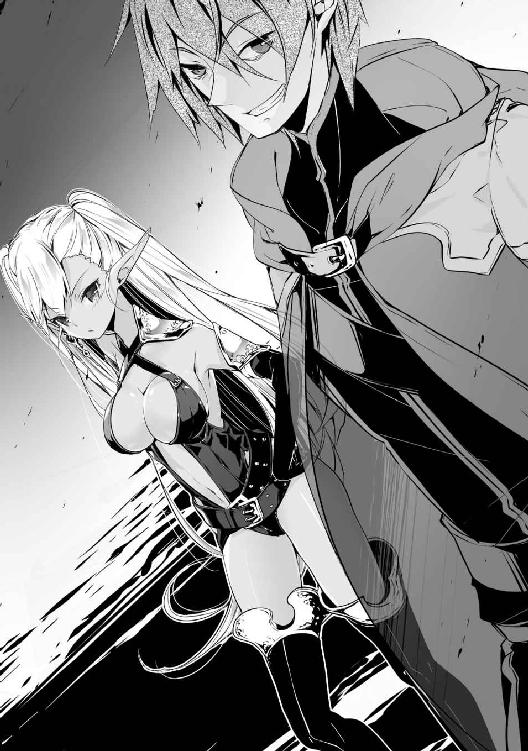
「......あの女に渡したのは失敗でしたかね」
「ん？」
失敗というのはリリーとルーシアのことだろうか。確かに彼女達は俺の意表を突くことには成功していたが、俺を暗殺するには実力が足りなさすぎた。失望したような表情を浮かべながら何かを呟いていたエルは、仕方ないというように一度ため息を吐いた後、俺のほうを再び見つめてきた。
「はぁ......お久しぶりですね、マスター」
「ああ、そうだな。まさかお前が私を裏切るとは思わなかったぞ。一体どういうつもりだ？」
「マスター、私はマスターを裏切ってはいません。今この男に協力しているのも、全てマスターのためを思ってのことですから」
「お前の考えは知らないが、結果的に私に余計な手間を掛けさせているのは事実だ。そして私の味方にも被害を出している以上、もはやどんな言い訳も通らないぞ？」
「今マスターが私を嫌っていようが構いません。全ての柵からマスターを救い出してあげれば、きっとそのときは私のことだけを見つめてくれるようになるはずですから」
完全にトリップしたようなエルの様子を見ていれば、今の彼女にどんな言葉を掛けたところで無駄なことだと分かってしまう。正気が残っていればまだ説得のしようもあっただろうが、こうなってしまった以上は仕方ない、エルを殺してでも止めることにしよう。
「お前の考えは分かった。だがまずはその人質を返してもらおうか」
「今この女を返すことはできません。躾がまだ終わっていませんから」
「躾？」
「そうですよ。要塞を敵の攻撃から救い、王国に勝利をもたらした大恩人であるマスターに無礼な振る舞いばかりしていましたから、身の程を分からせてあげただけです。ほら、お前もマスターに今までの非礼の数々を詫びるのです」
「きゃっ!?」
そう言ってエルはマルガレーテの腰辺りを思い切り蹴り飛ばした。蹴り出されたマルガレーテは体勢を崩して転んでしまい、そこにエルが苛立ったように何度も蹴りを入れていた。
奴隷以下の扱いを受けたマルガレーテは、四つん這いになったままのろのろと前に出てきた。その目はもはや抵抗する意思を失って、暴力への恐怖だけが浮かんでいた。
「や、ヤード様......これまでの非礼、深くお詫び致します......」
震える声で何とかそれだけ言い切った彼女に、再びエルの蹴りが飛んだ。今度は何とか悲鳴を上げずに済んだようだが、先ほどよりも強い蹴りが横腹に入ったのでかなりの痛みを感じているはずだ。呼吸が乱れていることからもそれが窺える。
「何ですか、そんな謝罪で本当に許しを乞えるとでも思っているのですか？ 貴女が姫だからといって、調子に乗っていいなどとは一言も言っていないのですよ？」
「ご、御免なさい、御免なさい！」
「謝る相手は私ではなくマスターです。そんなことも分からない屑がマスターに迷惑を掛けていたなどとは、到底許せるようなことではありません。ですが私よりもマスターのほうが貴女への怒りを持っているでしょうから、マスターに心から謝罪するまでは殺さないであげます」
「ごっ、ごめっ、なさっ！」
「......自分の何が悪かったのかも理解していないとは。この女の躾をオーヴァンに任せたのは失敗でした。ある程度は好きにしていいと言いましたが、遊びに使うのも大概にして下さい」
一言一言を喋るたびにエルの足がマルガレーテの身体にめり込んでいた。家畜の躾でもあんなに暴力を振るうことはないだろうと思えるほどに、エルの蹴りには殺意が篭もっており、彼女の身体には痛々しいほどにいくつもの痣ができていた。
「これは手厳しい、躾に使えるような時間はほとんどなかったと思いますが」
「王国兵の尋問は貴方にやらせたほうがよかったようですね、オーヴァン」
「まあそう言わないで下さい。少しは男への媚び方も教えておきましたから。ええと、マルガレーテ様でしたか。エルマイアさんがこれ以上怒らないうちに、教えた通りにしたほうがいいですよ？」
オーヴァンがマルガレーテに優しい口調で話しかけるが、彼女は恐ろしいものを見たかのように後ずさって、奴から離れるように急いでこちらのほうへと近寄ってきた。そして痛みを堪えながら再び俺の顔を見つめてぎこちなく笑みを浮かべた後、俺に背を向けて床にうつ伏せになると、こちらの方に尻を突き上げ、両手で秘部が見えるように割れ目を広げた。
凌辱を受けていたのかどうかは分からないが、まだ男を受け入れたことのないような綺麗な秘肉を見る限り、まだ純潔は保たれたままのようだ。
「ヤード様、愚かにも貴方に迷惑を掛け続けたお詫びに、私の身体をご自由にお使い下さい。男一人も満足させられない貧相な身体ですが、壊れるまでお使いいただければ......」
「止めてくれ、マルガレーテ殿。奴らの命令など聞かなくていい」
僅かに尻を揺らしながら俺を誘うような言葉を並べ立てるマルガレーテの様子を見ても、興奮することはできない。自発的にやってくれたのなら違ったかもしれないが。これはエル達に強制されてやっていることで、むしろ哀れな彼女の姿に憐憫の情しか湧いてこない。
「おい」
マルガレーテの言葉のどこかが癇に障ったのか、彼女の言葉を遮ってエルが顔を思い切り蹴り飛ばした。かなり力を込めて蹴ったらしく、今度こそ受け身も取れずに床を転がり、口や鼻から血を垂れ流しながら咽せている。
「誰がマスターを誘えと言いましたか？ マスターが貴女のような屑の身体を捧げられて喜ぶような男性だとでも思っているのですか？ この期に及んでまたもマスターを侮辱するような言動を取るとは。やはり貴女のような屑は殺したほうがいいですね」
エルはそう言うと無造作に腕を振り上げた。その手には魔力が集中して術式が発動しようとしている。術式構成を見るに、あれは俺の使う光刃と似たような術式のようだ。
もしあれを頭部に食らったら脳細胞が焼かれるので、マルガレーテの蘇生が不可能になる。そうなってはレシアーナから急いで転移してきた意味がないので、マルガレーテとエルの間に入り、振り下ろそうとしていた彼女の腕を掴んで止めた。
「マスター、離して下さい。この女を殺せません」
「生憎だが私がここに来た目的の一つが彼女の救出だ。彼女を殺されてはソフィを悲しませてしまうのでな。彼女を殺そうとするなら、まずは私をどうにかしてからにしてもらおうか」
「可哀想に、やはりあの女達に毒されているのですね。早くその呪縛を解いてあげないと......」
エルはもう片方の手を俺に伸ばしてきたので、慌てて彼女から距離を取る。戦闘用の魔導障壁はかなりの強度を誇るが、攻撃ではないただの接触などは弾いてくれないので接触型の術式に弱いという欠点がある。魔術師自体が近距離で戦うことを想定していないので、当たり前の話なのだが。
エルはマルガレーテを殺すかどうか悩んでいるようだ。もし彼女がそのまま手を振り下ろしていれば、その隙に攻撃ができていたのだが、予定通りにはいかないようだ。
「......分かりました。そこの貴方、この女を預かっておきなさい。それと手を出しても構いませんが、私の見ている範囲で不快な真似をするのは止めて下さいね」
エルは手近な兵士にマルガレーテを預け、早速服を剥ぎ取ろうとしていた兵士に釘を刺した。あれほど暴力を振るっていたので、絶対にマルガレーテへの気遣いではないだろうが、彼女に手を出されないならばエルとの戦いに集中できて有り難いことも確かだ。
エルがこちらとの距離を測りつつ魔法陣を描く準備を始めたので、こちらもいつでも反撃のできるように身構えた。だがそのとき、今まで傍観していたオーヴァンが間に入ってきた。
「エルマイアさん、私のことを忘れないで下さいよ。貴女一人でウェルナー伯爵を相手にするのはかなり無茶がありますからね」
「いちいち言われなくても分かっています。早く準備をしなさい」
二人がそのようなやり取りをしている間に、周りの魔術師達も俺を囲みながら何かの準備を始めていた。どうやら二人掛かりどころの話ではないようだが、魔力量だけを見ればエル以外は大したことはない。オーヴァンですらエルの四分の一以下の魔力しか持っていないのだ。
ただ周りを囲んでいる奴らは全員懐から魔道具のような物を取り出していた。一見しただけではどんな術式が発動するのか分からないので、それとなく周りを警戒していたが、その様子を見たオーヴァンも、俺の考えに気付いて嬉しそうに笑った。
「この魔道具が気になるのですね？ では早速効果をお見せしましょう！ お前達、やれ！」
「はっ！」
オーヴァンの命令で一斉に魔道具が起動された。発動した術式は、構成を見る限りは精神感応系に属する物だろう。詳しい効果が分からなければ対抗術式を発動することができないので、魔導障壁で耐えることにした。だがそれは結果的に悪手だったようだ。
（『第一魔導障壁、無効化されました。第二魔導障壁、無効化されました。第三魔導障壁、無効化されました。第四魔導障壁、無効化されました。第五魔導障壁、抵抗が失敗されました。攻撃術式の逆探知に失敗。撤退を推奨します』）
魔力でできた非実体の帯が俺の魔導障壁と接触した瞬間、戦闘用の障壁ごと俺の魔導障壁が無効化され、帯が俺の身体に巻き付いてきた。
幸い物理的な威力はなく、特に身体を動かせないということもないようだが、再度魔導障壁を展開し直そうとした途端に、魔力の流れが強制的に止められて発動に失敗してしまった。そこでやっと先ほどの術式が俺の術式発動能力を阻害するものであることが分かった。
魔導障壁を無効化し、術式発動能力すら封じる術式など、この世界の魔術師が数十人は必要になってくるような術式だ。十人にも満たないこの部屋の魔術師だけで発動することなどできないはずだ。おそらくは俺だけに効果を発揮すると限定することで、大幅に無効化能力を上げたのだろう。
エル以外は脅威でないと切り捨てていたが、考えてみれば俺の術式をよく知る彼女が助言している可能性は大いにあるのだ。少し相手を侮っていたかもしれない。
「ははは、まさか避けもせずに当たってくれるとは！ これで貴方は魔術を使えないただの人間になりました。どうですか、得意の魔術を封じられた気分は？」
「......ああ、実に久しぶりだ」
「そうでしょう？ 確かに貴方は他の人間の追随を許さないほど魔術に優れてはいますが、それ故に他の魔術師を侮りすぎている！ いくら束になっても勝てるはずがないと思っているから、先ほどの魔術を受けようとするのです！ それが貴方の弱点だ！」
俺の術式を封じたことでテンションが上がっているのか、オーヴァンは叫んでいるかのような大声で俺に語り掛けてきた。その様子は非常に鬱陶しく、思わず殴りたい衝動に駆られたが、何とか抑える。おそらく奴も魔導障壁を展開しているはずなので、殴ったらこちらの拳が壊れてしまう。
「マスター、心配することはありません。マスターを誑かしていた女達の洗脳を解いた後に、すぐ戻してあげますから。もう少しだけお待ち下さいね」
エルは嬉しそうに俺に抱きつき、頬擦りをしてきた。他の魔術師も俺を見ながらニヤニヤと不快な笑みを浮かべている。こいつらの頭の中では俺は無力化されて無害な存在になっているらしい。
「ウェルナー伯爵、そのまま大人しくしていてくれれば危害は加えませんが、もし暴れた場合は腕の一本や二本は覚悟してもらうことになりますから」
「ふむ、では確かめてみることにしようか」
俺に抱きついていたエルを突き飛ばしてやると、すぐさま周りの魔術師達が俺に複数の術式を放ってきた。魔導障壁がないので当然直撃し、奴の言っていた通りに腕の骨が折れる音がした。それでも攻撃が止むことはなく、既に腕は前衛的なオブジェのようになっていた。
「オーヴァン、マスターに何をしているのですか！ 今すぐ止めさせなさい！」
「そうは言ってもですね、エルマイアさん。私の忠告を無視したのは彼なのですから」
「そんなに頭と身体を切り離されたいのですか？」
「ああ、もう。分かりましたよ。攻撃を止めろ！」
オーヴァンの命令でピタリと攻撃が止むと、慌ててエルが近寄ってきた。彼女は俺の腕を取り、悲しそうな表情を浮かべていた。
「マスター、何故こんな意味のないことをするのですか？ 私は決してマスターの敵ではありません。こんな自殺まがいのことをしなくても、必ず解放しますから......」
「ああ、確かにお前達に解放してもらう必要はないな」
エルの腕を振り払うと、自分の腕に対して上級治癒を掛ける。まるでグチャグチャに折られた木の枝のようになっていた腕が一瞬で元の姿を取り戻し、指を動かして神経が繋がっていることも確認できた。
「え？ な、何で......」
エルはその様子を驚愕の表情で見ていた。俺が術式を使えないと信じていたのでは、驚くのも無理はない。オーヴァンや周りの魔術師も大体同じような反応を見せていた。その姿があまりに隙だらけだったので、その間に余裕を持って魔導障壁と各種強化術式も発動できた。
「お前達、私を前にしてそんなに呆けていては、殺してくれと言っているようなものだぞ？」
未だに俺を見て固まっていた全員に向かって、対象を拡大した四肢切断を発動し、かろうじて抵抗したオーヴァンとエル以外の魔術師達は手足を切断されて地面に転がった。
やはり自前での発動よりも威力が格段に落ちている。本来ならば手足どころか全身を細切れにすらできる術式だというのに、手足の切断だけしかできていないのが証拠だ。
ちなみに自分を掴んでいた人間の腕が落ちるところを間近で見てしまったマルガレーテは、飛び散る血の雨と湿った肉が地面に落ちて音を立てている光景に精神的負荷が極限に達したのか、意識を手放してその場に倒れ込んでしまったようだ。
「ふ、封印魔術は確実に成功していたはずです！ それなのに何故平然と魔術を使っているのですか!?」
「ふむ、魔帝国の術式しか知らないお前には理解できないことかもしれないが、対象の術式を封じる術式は二系統存在する。一つはお前達が俺に使った精神感応系術式、これは相手の術式発動能力に干渉し、その発動を封じるものだ。そしてもう一つは特殊自然操作系術式、こちらは既に発動した術式の効果に干渉し、それを抑制・無効化するものだ」
「そ、それがどうしたというのですか！」
「元は研究者だったらしいが、察しが悪いな。精神感応系術式で封じられるのはあくまで俺の術式発動能力だけだ。既に術式構成ができている魔道具の発動には制限が掛からない。こんな風にな」
俺は自分に対して術式消去を掛けて、封印を解除した。これで術式の制限はなくなった。久しぶりに術式が不発する感覚を体験できたので結果的には得をした気分だ。
「複数の魔術を使える魔道具ならば、その大きさは懐に入れて隠せるような物にはなりません。先ほどの魔道具も八分割することで何とか手で持てる大きさにしたのですから。それなのに貴方はその魔道具を持っている様子がないではないですか！」
「持っているぞ。ほら、これだ」
俺は懐から小瓶を取り出した。硬化術式が掛けられたその小瓶に入っているのは、水晶の欠片のようなものである。光が当たってキラキラと光っているそれを見て、オーヴァンは逆に追い詰められた状況にいながらも失笑を返してきた。
「そんな小さな物を魔道具にするのは不可能でしょう？」
「お前の常識では、な。これはエルを拾ったときについでに手に入れたダークエルフの脳の一部だ。この大きさでも数種類の術式を発動することができるようになっている」
物に刻み込む必要がある普通の魔道具と違い、脳は術式構成さえ覚えさせれば魔力を与えてやるだけで発動することができる。元々数えきれない量の知識を入れられる容量があるのだ、術式の数種類を記憶させるのが不可能なわけがない。
流石に自前で発動させたものよりも格段に威力が落ちた術式しか使えないが、それでも俺に掛けられた封印を破るだけの威力は出せたようで助かった。
「脳を結晶化させて魔道具に......？」
「お前も術式の開発に携わっていたのならば、もっと可能性を追求するべきだったのだ。術者の脳など、まず一番に研究するべき場所だろう？ さて、これ以上のお喋りは要らないな」
オーヴァンは先ほどから俺の話を聞いて震えている。そんな隙だらけの姿を晒しているのだから、狙わないと勿体ないので恐怖を発動してやった。俺の攻撃に反応できず、そのまま昏倒するかと思われた奴だったが、寸前でエルが間に入ったことで、弾かれてしまった。
「オーヴァン、いつまで呆けているのですか？ 封印が破られたからといって、まだ負けと決まったわけではありませんよ」
「え、ええ......」
頭を軽く振って気を取り直したオーヴァンも、再び俺と戦う意思を見せていた。奴の攻撃は大体弾けるだろうとは思うが、それでも二人掛かりは少々面倒くさい。
いくら仲間を守るためといっても、自分が代わりに攻撃を食らうような真似をエルがするとは思わなかった。それに以前の実力ならば今の攻撃を受け切れずに恐怖の効果を受けていたはずだ。どうやら魔力がかなり上昇しているようだ。
エルの魔力はほとんど成長限界を迎えていたはずだ。普通に考えれば短期間でここまで魔力を伸ばす方法は存在しないが、一時的でいいのならば無理やり増やす方法もある。
周りに転がっている王国兵の死体は魔術師用の服装をしている者が多い。あえて魔術師を集めたというのならば、エルが取った方法もすぐに察することができた。
「エル、王国兵の魔力を奪ったな？」
「はい。マスターが以前見せてくれた術式、確か魔力掌握でしたか、あれを使わせてもらいました。魔力の上昇は一時的なものではありますが、マスターと戦うにはこれくらいの準備が必要ですからね」
「ああ、確かに以前よりも格段に魔力量が増えているな。以前の二倍......いや、三倍か」
以前のエルでも並の魔術師を遥かに凌駕する魔力の持ち主だったというのに。今のエルならば俺の魔導障壁を抜いて攻撃術式を叩きこむこともできるだろう。
「行きます！ オーヴァン、合わせなさい！」
エルが言葉と同時に走り出し、俺の後ろへと回り込もうとする。氷像でこちらの動きを牽制しながら、周りの床も凍らせて俺の移動を妨害してくる。
「『光よ』！」
オーヴァンはエルと反対方向に走り出し、さらに俺の目を眩ませるために光の術式を放ってきた。光に塗り潰されて目を閉じてしまい、一瞬だが二人の姿を見失った。
挟撃位置を取られると面倒なので、床の氷を解かすためにエルの走っていった方向に火球を放とうとしたのだが、光に慣れて視界が戻った瞬間、狙っていた位置のすぐ近くにエルは存在せず、代わりにマルガレーテが倒れているのを見て慌てて発動を止めた。
改めて周囲を警戒したが、部屋の中のどこにもエルの姿が見えない。隠密用の術式は姿までは隠せないので、本人の隠密技術で隠れているか転移したかのどちらかだろう。
「よそ見をされては困りますねっ！」
エルを見失ったことで一瞬動きが止まった隙を狙い、オーヴァンが短剣を突き出してきた。その刃には俺の魔導障壁を貫くために術式消去に似たような術式が付与されていた。だがその程度の攻撃では俺の展開している戦闘用の障壁の一枚も破ることはできないだろう。
「な、ぐぁっ!?」
魔導障壁の強度を信じて、奴の攻撃を防御せずに火球を発動する。俺の目の前で刃は動きを止め、攻撃で逆に隙ができた奴に至近距離でのカウンターを叩きこんでやることに成功した。
至近距離で爆発した火球は奴の術式抵抗を難なく突破し、奴の腹部に直撃し、肌を溶かして肉を削り、内臓をも焼いた。俺にとっても至近距離で爆発したため、障壁で防ぎきれない爆風と熱波が俺に吹き付けてきたが、それ以上に奴のダメージは深刻なものとなっていた。
「がはぁっ！ ち、『治癒の光よ』！」
口からボタボタと血を垂らしながらも、自分に回復術式を発動していた。だが焼けた傷痕は普通の傷よりも治すのに時間が掛かる。そんな時間を待ってやるほど甘くはないので、とどめを刺そうとしたのだが、奴を援護するように後ろから何かが飛んでくるのが分かった。
「ちっ！」
魔導障壁に弾かれたのは何の付与もされていないナイフだった。こんな物では到底俺に傷を付けることはできないが、それに気を取られた隙の分だけオーヴァンが回復する時間を与えてしまった。
奴の様子を横目で見れば、既に行動に支障がないほどに回復していた。エルの放ったナイフは、これ以上ないくらいに俺の邪魔をしてくれたようだ。
「っ！ 『障壁よ』！」
咄嗟に展開された障壁により、振り向きざまに放った俺の火球を受けとめられた。だが奴の魔導障壁では俺の術式の威力を殺し切ることはできず、まだ全快していない奴の肉体は一発耐えただけで悲鳴を上げ、今にも倒れそうになっていた。
こういう場合には敵の連撃を避けるために障壁を展開しながら動き回るのが普通なのだが、奴は術式を維持するのに精一杯なようで、その場に留まり続けている。エルとは違ってあまり魔力が高くないから仕方ないとはいえ、俺と戦うには明らかに実力不足だ。まあ動けないのは好都合だが。
この好機を逃すわけもなく、俺は瀕死状態のオーヴァンに対し、次々と火球を放った。何発かは耐えられていた奴の障壁も、維持するだけの集中力が途切れたせいで砕けてしまった。
奴は障壁が砕けた瞬間に床を蹴って、何とか俺の攻撃を回避しようとしていたが、奴がいた場所に着弾した火球が爆発し、爆風に巻き込まれて足に大きな負傷をしていた。
足の痛みにバランスを崩して倒れ込んだ奴の隙を狙い、恐怖を叩きこんでやると、油断していた奴は回避することもなく俺の術式に直撃され、耐えられない精神的な負荷に今度こそ意識を手放して動かなくなった。これでようやく一人倒したことになる。
姿を見せないエルに警戒しながらも、マルガレーテの状態を確認しようと近付いたところ、背後に突然エルの気配が現れ、障壁がナイフを受けとめてギャリギャリと激しい音を立てていた。
彼女のほうに振り返りつつ、手を伸ばして術式封印を掛けようとしたが、ギリギリのところで避けられて再び距離を取られてしまった。
「不意打ちは完璧だったと思ったのですが、やはりマスターの魔導障壁は反則級の硬さですね」
「それが分かっていながら私に喧嘩を売ったのだから、当然それを破る方法も考えてあるな？」
「ええ、当然です。私がただ無為に時間を過ごしていたわけではないことをお見せしましょう」
そう言うとエルは懐から筒を取り出し、魔力を込めて投げつけてきた。筒は魔力を通しやすい素材でできているようなので、中に何かの魔道具か魔法陣でも仕込んでいるのだろう。
筒が空中で爆散すると、大量の紙が出てきた。空間を圧縮することによって体積以上に仕込まれていたその一枚一枚に魔法陣が書き込まれており、全てに魔力が注がれて発動した。
どれもこれも普通の魔術師ならば即死してしまう威力の術式が襲い掛かってくるが、俺の魔導障壁を貫通できるものはなかったようだ。ただ一瞬だが大量の術式に怯み、エルに次の手を許してしまうだけの時間を作ってしまった。
「これならどうですか！」
エルは一瞬の隙に魔法陣を描き上げて起動していた。俺の魔導障壁が次々と貫通され、身体に圧倒的な負荷が掛かった。これは第四種戦術級術式の超重力だろう。魔導障壁と術式抵抗でかなり威力が減衰されているが、それでも身体に掛かる負荷は相当なものだ。
数千倍の重力で敵を押し潰す術式を食らって立っているだけでも相当なものだが、流石に指一本動かすこともできない。
「どうしました、マスター？ この程度の術式で倒れるような方ではないでしょう？ もっと余裕なところを見せて下さいよ」
「そう......かっ、そんなに、見たいなら......見せて、やるっ！」
何とか身体の負荷に耐えながら術式を発動した途端、エルも俺と同じように姿勢を崩し、床に倒れそうになった。今発動したのは共有という第七種特殊自然操作系に属する術式で、対象と自分が受けている術式の効果を均等な配分で分け与えるものだ。
俺に掛けられていた超重力の効果を共有することにより、俺に掛かる負荷が半分になり、術式抵抗と合わせて何とか動くことができるまでになった。それに対して俺ほど術式抵抗が高くない彼女は、突然襲ってきた衝撃に耐えられず、地面に叩きつけられていた。ミシミシと骨が軋む音が聞こえるほどの高重力に顔を上げることすらできないようだ。
「どうだ、自分の術式の威力は？」
「ええっ、よ、よく分かりまし、たっ！」
自分が動けない以上術式を継続する意味はなく、すぐに超重力を解除したのでこちらも共有を解除する。
「やはりマスターに真っ向からの勝負を挑んでも勝ち目がありませんね。よく分かりました」
「ほう、それで次はどうするつもりだ？」
「先ほどと同じですよ。マスターに奇襲は有効なようですから」
エルはこちらに向かって大量の氷像を放ってきた。俺の魔導障壁で防がれているが、術式同士がぶつかって氷を撒き散らし、視界が白で埋め尽くされてしまった。さらに彼女は濃霧を使い、部屋を霧で満たして姿を潜めた。
魔力探知を使ってみるが、認識阻害用の術式を使っているのか、全く反応がない。それならばと視界を塞ぐ氷と霧を吹き飛ばすために、烈風を使ってみたが、視界がクリアになったにもかかわらず、やはり部屋の中に彼女の姿は見えなかった。
どうやって姿を消しているのか気になって辺りの様子を注意深く観察していると、後ろから気配を感じ、咄嗟に飛び退いて床を転がった。一瞬の後、俺が立っていた場所を何本もの氷の槍が通り過ぎていった。少しだけかすった魔導障壁が破られていたので、貫通力を高めた術式だったと分かった。受けとめようとしていたら貫かれていただろう。
飛んできたほうを確認すると、彼女は俺の影から身体の半分を出し、もう半分は床の中に沈んでいた。どうやら先ほどから彼女が姿を消していたのは影の中に潜むことのできるこの術式だったらしい。反射的に麻痺を発動したが、到達する前に影の中に沈み込んでしまった。
「また変わった術式だな。それはオーヴァンに教わったのか？」
声を掛けてみたが返事はない。影の中まで声は聞こえないのだろうか。しかしこれでは彼女の位置が分からない。流石に逃げることはないだろうが、このままこうしているだけでも時間が過ぎていく。次の手を与えないためにも、あまり時間をかけていられない。
仕方なく捨て身の策を使うことにした。まずは光を発動する。眩い光を放つ光源が現れ、彼女が潜んだ影を消す。これであそこからは出てこられなくなった。そうやって次々と影を消していき、床に影が現れないようにした。
「さあ、どう出てくる？」
あえて彼女の出口を作るように、一つだけ影を残しておいた。影の中から飛び出してきた瞬間に術式を撃つつもりだ。そこに近付いていつでも攻撃ができるように身構えた。
飛び出しては攻撃の的になると分かっていながらも、出口となる影はそこ一つしかない。痺れを切らした彼女はそこから飛び出してくるしかなかったが、俺の狙いはもう一つあった。
「な!?」
彼女は肩が引っかかり、頭だけを突き出した状態で止まってしまった。一定以上の大きさの影でないと身体を出すことができないと思ったのだが、どうやら正解のようだ。
ともあれ動きの止まった彼女に威力を最大強化した恐怖を発動したのだが、ギリギリのところで転移されてしまった。どうやら緊急脱出用の魔法陣は用意していたらしい。要塞の外に転移した反応が感じられる。戦況が悪いので、このまま逃亡するつもりなのだろう。
ここでエルを逃がしてはまた面倒なことになるので、急いで彼女を追いかけようとしたのだが、俺が魔法陣を描こうとする前に、マルガレーテの倒れている場所で動きを見せていた者がいた。
「そこまでですよ、ウェルナー伯爵。何かしようとすれば王女様の命はないでしょう」
マルガレーテのほうを見れば、いつの間にか起き上がったオーヴァンが彼女に剣を向けていた。魔術師のくせに剣で殺そうとするのはどうかと思うが、そこは突っ込まないことにした。
「無駄な抵抗をしても、後が厳しくなるだけだぞ？」
「ふふ、ここで貴方を倒せば何の問題もなかったのですがね。エルマイアさんも逃亡してしまった以上、王都への襲撃をするのも難しくなってしまいました。まあ幸い魔術師の頭数は揃っていますから、別の国に行っても雇ってくれる貴族はいるでしょう。ネイラー伯爵には悪いですがね」
「ああ、清々しいまでに小物だな。まあ何が何でも生き残ろうとするその姿勢だけは、同じ魔術師として評価しよう」
簡単に自分の命を懸けるのは何かに忠誠を誓っている戦士だけで十分だ。死んでしまっては術式の研究ができない。それは魔導を極めようとしている者にとって何よりも恐れることだろう。
オーヴァンはマルガレーテの首に剣を当てたまま、出口のほうへと進んでいった。その間俺は奴の行動に手を出さずに見守っていたのだが、特に攻撃されるようなこともなかった。
「そういえば、一つ聞くのを忘れていた。エルをどうやって洗脳したのだ？」
「私は何もしていませんよ。協力も彼女のほうから申し出てきたことです。代わりに貴方の周りから女性を全て引き離す協力をするという条件でしたが」
「確かにあいつが私に好意を抱いていたのは知っているが、あいつも馬鹿ではない。たったそれだけのことで、ここまで大それたことをしでかすとは到底思えないな」
別に今まで通りに俺へのアプローチを続けていたら、いずれは俺もあいつを抱いていたかもしれないと思っていた。その程度には好意を抱いていたことはあいつも気付いていただろう。
だがオーヴァンは俺の言葉を聞いて一瞬驚いた後、俺を挑発するかのように深いため息を吐いた。
「......本気でそう言っているのでしょうか。エルマイアさんも報われませんね」
「どういうことだ？」
「どうもこうも、貴方は彼女に求婚をしたのですよ？ それなのに他の女性と結ばれて、自分は抱いてすらもらえないとは。彼女の精神が歪むのも納得です」
奴は俺の質問に見下すような視線を向けながら、仕方ないとばかりに話しかけてきたが、生憎俺はエルに求婚などしたことはない。俺が正式に告白したのはソフィとティア、ナタリアの三人だけだ。覚醒が常時発動しているので、意識がない間に言わされたということもない。
「いや、求婚などしたことはないが？」
「まあ、折角だから教えてあげましょう。まずエルフが強い異性に惹かれてしまうのは知っていますね？ ダークエルフはその中でも最もその本能が強いのです。彼女の場合は性格的なものもあると思いますが、一度発情すれば大体のダークエルフはあんな感じになります」
エルの異常な執着心は種族的なものだったらしい。ということはエヴァーツ親子もいずれはエルのようになってしまうのだろうか。考えただけでも恐ろしい。
「さて、そんなダークエルフの求婚方法ですが、彼らは異性に告白する代わりに、自分の武勇を示すのですよ。見せた武勇が優れているほど強く求婚していることになるそうです。それと、求婚は他に誰もいない二人きりの状況で行い、結婚するまで二人だけの秘密にするそうですよ？」
「......ん？」
奴の言葉でかつてエルに術式を見せたときのことが蘇る。あのときは第四種の術式の威力を教えるために、山を一つ消し飛ばした。そして山を消し飛ばしたことがばれないようにエルに黙っているよう指示したのも覚えている。
そういえば彼女の態度がはっきり変わったのもその夜だったような気がする。
「私もたまたま知ってしまったんですけどね？ 聞けば山を吹き飛ばしたそうではないですか。あのエヴァーツ侯爵が奥方様に告白したときでさえ、巨人を一頭倒しただけだというのに、山を吹き飛ばすような告白など、された方にとってはもう人生全てを捧げるくらいではないでしょうか？」
つまり俺は知らず知らずのうちに特大の地雷を踏み抜いていたらしい。人生全てを捧げるほどの覚悟をした相手に振られるとは、もはや想像がつかない。むしろ今までよく耐えてきたと褒めたいくらいだ。奴の言う通り、エルがあれほど歪むのも仕方がないな。
「......なるほど、貴重な情報だった」
「そうですか。まあ今さら知ったところで手遅れだとは思いますが、精々有効活用して下さい。では私も逃げさせていただきます。王女様は途中で置いておきますのでご安心を」
「ああ、そんなことを気にすることはない。お前をここから出そうとは思っていないからな」
「は？」
俺の言葉が理解できずに間抜けな声を出したオーヴァンに向かって風刃を放ち、正面に構えたマルガレーテの身体ごと奴の胴体を真っ二つに分断した。背後の壁は夥しい量の血が叩きつけられ、真っ赤に染まっていた。
首に剣を突き付けている時点で、奴は蘇生の条件を分かっていないと判断した故の行動だったが、そのことを知らない奴にとっては俺がマルガレーテを犠牲にしたようにしか見えないだろう。驚愕の表情のまま何かを呟こうとしたが、血を流しすぎてそのまま息絶えた。
奴の動きが止まったことを確認した後、俺はマルガレーテに近付いて彼女の上半身と下半身を繋げ、全身の傷を治した後に蘇生を発動した。
彼女の意識が戻るまで時間があったので、先に脱出用の魔法陣を描き、その後オーヴァンを含めて検体として使えそうな者を回収していた。そうしているうちに、彼女も目を覚ましたようだ。
「......あ、わ、私は......？」
「目が覚めたようだな、マルガレーテ殿」
俺が声を掛けると、こちらが驚いてしまいそうになるほど恐怖に顔を引きつらせて後ずさった。今まで魔帝国の兵達に散々嬲られていたのだから、彼女の反応も仕方ないものではある。
「安心しろ、この部屋にいた魔帝国の兵は全て倒した。もう貴女を襲う輩はいない」
「え？ あ......」
周りを見回して魔帝国兵達が全員倒れていることが分かると、強張っていた彼女の身体の力が抜けた。そして目が潤んできたかと思った途端、勢いよく俺に抱きついてきた。
「うぅううううううう......」
味方が全滅した中で一人あのような目に遭わされていたのは想像を絶するような恐怖を感じたことだろう。顔を俺の胸に押し付けて泣いているのは、泣き顔を見られたくないという彼女の精一杯の強がりだと思い、しばらくは彼女の好きにさせてやった。
少しして気持ちも落ち着いてきたらしく、俺から離れた彼女の顔はいつもの強気な雰囲気が戻っていた。目の端が赤くなっているのは言わないでおこう。
「ヤード様......本当に有り難うございますわ」
「いや、まだ要塞内には魔帝国兵がいるはずだ。とりあえず外に出るぞ」
「はい、きゃっ!?」
マルガレーテを抱き上げ、あらかじめ準備しておいた上級集団転移を発動し、砦から離れた場所に転移した。何が起こっているのか分からずに慌てた様子で周りを見回している彼女を放って砦のほうを見ると、まだ魔帝国兵達がいるのが見えた。
「マルガレーテ殿」
「は、はい。何ですの？」
「もはや砦は敵の手に落ちた。放っておいては王国の害にしかなりえないので、砦ごと奴らを消してもいいだろうか？」
「え、ええと......？」
砦ごとという部分が理解できないようで、俺の言葉を聞いた彼女の頭には疑問符が大量に浮いているように感じるほど困惑していた。まあいきなり砦を壊してもいいですかと聞かれて即答できるような人間は常識的にはいないだろう。悩んでいる間に準備をしておこう。
砦がなくなることと魔帝国兵をここで全滅させることを天秤に掛けてしばらく悩んだ後、自分を納得させるように一度頷いてこちらを見た。ようやく結論が出たようだ。
「要塞に私以外に王国の者はいましたか？」
「いや、文字通り全滅だな。敵は捕虜を取っているような余裕はなかったそうだ」
「......そうですか」
予想していたこととはいえ、部下が全滅してしまったという事実は彼女に大きなショックを与えているだろう。だが彼女の瞳は俺の顔を見つめたまま揺らぐことはなかった。
「あの砦を壊すことで敵を全滅させられるのならば。私の責任で許可しますわ」
「そうか、済まないな」
「いえ、全ては敵の侵攻を防げなった私の責任ですわ。謝っていただくことなどありません」
彼女の心が折れているかと少し心配していたが、そんな気遣いは無用だったようだ。いつもの意思の強さを秘めた瞳を見て、彼女は大丈夫だと安心した。
さて、マルガレーテの許可も出たことだ。折角だから派手にいかせてもらうことにしよう。俺は準備しておいた魔法陣を起動させ、第四種自然操作系術式、下級重力級を発動させた。
発動直後からしばらくは特に何の変化もない様子に、マルガレーテの何をやっているんだと語り掛けてくるような視線が身体に刺さるが、しばらくして砦が崩れ始めた。そして崩れた部分は下に落ちることなく砦の中心部にある黒点へと向かって引き寄せられていった。
当然砦の中にいた者も無事では済まず、少し離れた場所にいた人間もしがみ付いていた壁や地面ごと黒点へと落ちていき、やがて吸い込む物がなくなったときには、辺りには半球状に抉れた地面以外は何も残ってはいなかった。
雑草の一本も残ってはいない光景に、流石のマルガレーテも絶句せざるを得ないようだ。
「ヤード様......これは......」
「ん？」
「これは、以前北の監視塔付近で起きた惨状と似ていませんか？」
「......確かに似ているかもしれないな」
そういえばマルガレーテはこの術式の破壊痕を知っている可能性がある人間の一人だった。以前はエルに見せるためだけに使ったため、周りに何があるのかを考えていなかったのだが。
あれも俺の仕業だったのかと糾弾するような彼女の視線を受け流しつつ、魔力探知により魔術師が一人も残っていないことを確認した俺は、ひとまず彼女をソフィに預けることにした。
※
マルガレーテを屋敷に置いてきた後、再びオリンピア達の下へと戻った。俺の姿を見た二人が慌てて近寄ってきたので、転ばないよう受けとめる。
「ご主人様、一体どこへ行っていたのですか!?」
「あのようなことだけ言われていなくなられては困ります！ いきなりヤード様がいなくなられたせいで、私達がどれだけ肩身の狭い思いをしたか......」
俺を抱きしめた後、今度は火が付いたように俺を詰問し始めた二人の勢いに付いていけず、しばらく彼女達の話を聞くだけに徹していると、俺がいることに気付いたサガミが近寄ってきた。
「まったく......どこへ行っていたのだ、ヤード殿」
「ああ、レシアーナとグルタ要塞だな。どちらも北部連合の別動隊に襲われていた。救援も間に合わないようだったので、可能な範囲で敵を殲滅しておいたが」
「そ、そうだったのか......しかし、もしそれが本当ならば、なおさら誰かに伝えておいてくれ。いきなりいなくなられたせいで、その二人が北部連合と内通しているのではないかと疑われてしまっていたのだぞ」
「ああ、これからは気を付けよう。それで、こちらの戦況はどうなっている？」
「私としてはそちらの話を詳しく聞きたいところだが、まあいいだろう。既にこちらの戦闘は終了した。敵部隊はヤード殿がいなくなった後すぐに魔術を使用できなくなり、戦線離脱した兵達が投降してきた。今は再び領主のところに降伏勧告を送ったところだ」
「ああ、もうそんなところまで進んでいるのか。それはよかった」
まあレシアーナを解放した時点で、敵の頼みの綱であった即席魔術師部隊が機能しなくなるので、後はアレクが暴れて終わりといった感じだったのだろう。これで奴が一人で敵部隊を壊滅させたという手柄を得ることができた。約束はこれで守ったことになるだろう。
戦いも終わって本陣の緊張した雰囲気もなくなっている様子を見て、今回の危機を乗り切れたことを実感した。今回は裏をかかれて本当に危ないところだった。敵の策略に気付かせてくれたエレインには最大限の感謝をしなくてはな。
「ああ、交渉には彼女達も参加させるのだったな。おそらく今日中には相手側の交渉役が到着するので、ヤード殿も早く準備を済ませておくといい」
先ほどまで連戦をしていたというのに厳しいことだ。まあサガミは俺の事情など知らないので仕方のないことであるが。
「ヤード様、そのように汚れた服ではいけません、早く着替えましょう」
やっと出番が来たと張り切るオリンピア達に急かされて、俺は自分のテントへと向かった。
※
サガミの言った通り、着替えをしてすぐに、王国軍に連行される形で皇帝とネイラー辺境伯他数名の貴族達が王国軍の本陣へとやってきた。
会議に使っていたテントに彼らが入ると、まず王国軍側に立っているオリンピアの姿を見つけて怒りを露わにし、その後彼女の隣にいるメルヴィナの姿を見つけ、今度は顔を青褪めさせていた。
何故か王国軍の側に魔帝国でも有数の上級貴族が付いているのだ。さらにオリンピアの実家であるグラン家とメルヴィナの嫁いだエヴァーツ家は仲が悪かったが、どちらの家も皇帝に対する忠誠心に篤いと評判だったというのに、その二人が協力して王国側に付いている光景は、貴族達の関心が皇帝から離れていってしまった何よりの証拠のように映ったのだろう。
「そなたは、確かグラン公爵の娘の......」
「ええ、オリンピア・リア・グラン・ダーロです、皇帝陛下。尤も今の家督は弟の物ですが」
「......隣はメルヴィナ殿だったな。まさかそなた達の家が裏切るとは思いもよらなかったが......」
「帝都が襲われた時点で降伏をしていれば、ここまで状況を悪化させることもなかったと思いますが。陛下は自身の保身を第一にされていたようですが、そのような不義をなさっては陛下に付いていく者もいずれはいなくなりますよ？」
「ふん、王国に尻尾を振るような者などに、我らの考えなど及びもつかないだろう」
「その結果がこの有り様では、後世の者にも面目が立ちませんね」
「ぬぅ......」
交渉の席に着く前だというのに、既に満身創痍のような状態になっている皇帝と辺境伯を席に着かせ、北部連合の処遇を決めるための交渉が始まった。
ちなみにこちらの交渉役はアレクだ。本人が是非にとやりたがったらしい。あまりにも不安なので、隣にはメルヴィナを配置してある。魔帝国の事情にはそれなりに詳しく、アレクの隣においても奴が不快にならない人選だったのだが、彼女に頼んだ際に死にそうな顔をされた。
「さて、そちらの話を伺う前に一つだけ言わせていただくが、王国はそちらがどんな条件を提示してきたとしても、魔帝国皇帝の処刑だけは譲らないと心に留めておいて欲しい」
「......ああ、それは当然だろう」
入ってきた当初は落ち込んだ様子だった皇帝も、アレクの牽制にはあまり動揺を見せていない様子だ。他の貴族達もそうだが、拘束されたというのにまだ余裕の態度を崩してはいなかった。
おそらくは別動隊がいるからこその余裕なのだと思われる。術式が使えなくなった時点でレシアーナに何かあったことは気付いているのかもしれないが、要塞のほうは別動隊による占拠が終わって、今頃は王都へと進軍しているとでも思っているのだろう。
「ではこちらからも一つ忠告させていただこう。我々を捕らえたことに浮かれているようでは、足を掬われかねないぞ？」
「何......？」
「分からないのであればいい。それより我らの提示できる条件は北部連合の即時解体、所属していた貴族達の爵位返上、残った領地へ王国から代官の派遣も認めよう。我の処刑も基本的には認めるが、いくつか条件を付けたい」
「む、言ってみろ」
強気な姿勢で交渉に臨んでいる魔帝国側に対し、絶対的に交渉の経験が足りていないアレクは相手の言い分を素直に聞いているようだ。もしかしたら相手の提示している条件を正確に理解してないのかもしれない。何故交渉役に立候補したのか、本当に謎だ。
俺がアレクにそんな感想を抱いたように、オリンピア達も奴に同じような感想を抱いたようだ。
「ご主人様、王国は何故あんな男を交渉役にしているのですか？」
「あれでも勇者の中では功績が最も高いと見做されている男だ。そんな奴が自信ありげに交渉役に立候補したので、周りの貴族も何も考えずに賛同したのだろう」
「......王国が勇者召喚をしたのはあらゆる意味で英断でしたね。ご主人様のような戦力だけ見ても規格外の存在に頼らなくては、魔帝国という脅威がなかったとしても、そう遠くないうちに王国は滅びていたでしょうから」
「王族はまともな思考の人間が多いから、まだ大丈夫だろう」
「馬鹿な貴族を御しきれていない時点で、間違っても有能ではないと思いますよ？」
隣に座っているオリンピアは、他の連中が交渉に集中しているのをいいことに、好き放題に話しかけてくる。メルヴィナはオリンピアのさらに向こう側にいるため、俺と話すには距離が開きすぎていて、羨ましそうな目で彼女を見ていた。
オリンピアと会話をしながらも時折耳を傾けてはいるが、交渉はなかなか進んでいないようだ。王国側は勝者として強気な条件を提示しているのだが、魔帝国側が謎の余裕でその条件を否定してくることに戸惑っているようだ。そうして話し合いは平行線を辿り、とうとう我慢の限界に達したアレクが机を叩きながら立ち上がった。
「この戦い、勝利したのは王国軍だぞ！ それなのに何故敗者と対等な条件で講和を結ばなくてはいけないのだ！ こちらの条件が呑めないのならば北部連合に所属していた人間を全て処刑してもいいのだぞ！」
「ぎ、ギルフレイア伯爵様、そのように感情を露わにしては......」
メルヴィナは突然アレクが立ち上がったせいで一瞬固まっていたが、すぐに我に返ると、慌てて奴を席に座らせようと服を引っ張っていた。だが一度怒りを見せた以上、既に手遅れだ。
「おお、恐ろしいことだ。だが我ら全員を粛正するような非情な国に、残った民達は決して従わないだろう。まして王国は他国を侵略統治した経験もなく、反乱の対処すら経験がないというのに、どうやって魔帝国全域を統治するつもりなのだろうか？」
今の怒りは悪手だった。相手が全く折れないことに苛立つ気持ちは分かるが、交渉は心理戦だ。怒りを見せては余裕がないことがばれてしまうというのに。
案の定相手側はアレクの様子を見てやりやすい相手だと認識したようだ。王国側の顔色は一様に悪いが、特にメルヴィナの顔色が酷いことになっている。何とか微笑みを浮かべて余裕を見せてはいるが、今にも倒れそうな顔色だ。
余裕を見せた交渉を続ける魔帝国側と余裕のない雰囲気で交渉に臨んでいる王国側、傍から見ているとどちらに主導権があるのか分からなくなってくるような光景だ。正直に言って、見ていて面白い光景ではない。
俺としてはとっとと負けを認めて折れて欲しいところだ。あまり口を挟みたくはなかったが、奴らの自信の元を折ってやらなくては、この話し合いが長引くだけだな。
「交渉途中で申し訳ないが、そちらに一つだけ尋ねたいことがある」
今まで交渉に参加していなかった奴がいきなり話を振ってきたので、魔帝国側の人間は全員気分を害されたように表情を歪めたが、その表情はすぐに崩れ去ることになるので気にしない。
「実は調査の結果、レシアーナにも魔帝国軍の部隊が侵攻していたという情報が入っている。降伏をしたというのならばその部隊も交戦停止しなければならないが、これは確かだろうか？」
「そのような話は我らの与り知るところではない。それとも我らが降伏したという事実が、王国の者達にとっては軽いものとして見られているのだろうか？」
「そうか、報告に虚偽の情報が含まれていたようだ。では、ここは報告を伝えた者の命をもって謝罪とさせていただきたい」
俺は上級物質転移を発動し、オーヴァンの生首を相手に見せつけた。
その顔を見た魔帝国の人間達は、レシアーナの件どころか要塞まで既に鎮圧されていた事実を理解して、今まで見せていた余裕が一瞬にして絶望に変わった。
流石にグロテスクなので布で隠しておくと、改めて皇帝達のほうへと向き直った。
「う、うむ、そなたの非礼は許そう」
内心では俺を問い詰めたいと思っているのだろうが、俺が要塞の件を一切話していない以上、自分達から墓穴を掘らないように当たり障りのない言葉を返してきた。ここで口を滑らせてくれれば王国に奇襲を仕掛けて要塞に被害を与えた引け目という大きな交渉材料を手に入れられたのだが、そこまで高望みはしなくてもこれで交渉はやりやすくなっただろう。
「ああ、質問はこれで終わりだ。交渉を中断させて申し訳ない、どうぞ続きを始めてくれ」
「む、よく分からなかったが......まあいい、交渉を続行しようか」
一度間を置いたことで冷静に戻ったアレクが皇帝に話しかけたが、相手はもはや交渉をやっている余裕すらなくなったようだ。最後にして最大の切り札がなくなったので、当然といえば当然だ。
それにしても、後でメルヴィナのことを労っておかなくてはならないだろう。流石にアレクの世話をさせるのは無理があった。今回の出兵で一番苦労したのは間違いなく彼女だろう。俺が彼女の立場になったとしたら、辺境伯領に着く前に投げ出していることだろう。
アレク達の話を全て聞き流しながら、オリンピアの質問に適当に相槌を打っておく。今日色々と働いたせいで疲れた。この交渉が終わったらとっとと寝ることにしよう。
北部連合との戦いも終わり、ようやく王都に帰還することができた。もう何度目かも分からない謁見を済ませ、いつものように褒美を受け取ってようやく屋敷に帰ることができた。
これで脅威となっている魔帝国の残党は全ていなくなった。つまり勇者としての仕事もこれで終わりということになる。割と時間が掛かったが、元は劣勢だったことを考えると上等だろう。
そして北部連合との交渉でアレクを支えていたメルヴィナは、勇者との仲睦まじい様子を多数の兵士達に目撃されていたのもあり、戦いに参加していたほとんどの貴族から好意的な目で見られるようになった。おかげで他の魔帝国の人間も、そこまで差別されることはなくなった。
オリンピアが予想以上に使えない子になっていたこと以外、ほぼ狙い通りになったので満足だ。
マルガレーテはしばらく俺の屋敷で養生させることになった。要塞を占拠され、果てには消滅させたという噂が貴族達の間で流れているので、王宮にいると精神衛生上よろしくないというのが理由だった。要塞を消滅させたのは俺なので、彼女が家に避難することに異論はない。
最後に、まだエルは見つかっていない。そもそもどこに逃げたのかも分からないので探しようがない。まあ唯一の救いといえば、オーヴァンという伝手を失った以上、もう先日のような大々的なことはできないはずだということだろう。
それから数日間は特に何事もなく過ごした。屋敷には元魔帝国の人間が四人ほど増えたが、平民にも魔帝国の人間が王国に恭順したことは伝わっていたし、大した問題ではないだろう。
※
「ソフィ、マルガレーテ殿の様子はどうだ？」
ソフィの部屋で寛ぎながら問い掛けた言葉に、彼女は困ったように眉を寄せて言葉を探しているようだった。どうやらあの一件が完全にトラウマになってしまったようだ。
「表面上は大丈夫に見えるのですが、まだ男の方を見かけると少し固まってしまいますね。お父様も一度お会いしましたが駄目のようです。それと、夢で要塞でのことが思い出されるらしく、夜中に何度も飛び起きています。そのせいであまり眠れていないようで......」
「ふむ、やはりまだ治っていなかったか」
マルガレーテは要塞での出来事が原因で男性恐怖症になってしまった。身内や侍医すら駄目のようで、彼女を連れてきた当初は酷いものだった。
不特定多数の男性に会う機会のある王宮では彼女も落ち着いて休めないだろうということで、俺の屋敷に連れてくることになったのだ。男の多い王宮とは違い、この屋敷で出会うのはほぼ女性なので彼女が屋敷内を歩いてもあまり問題はないとソフィが引き取ってきたのだ。
「正直なところ、あのマリーがここまで男性不信になるとは思いませんでした。私は要塞で起きたことを詳しく知らないのですが、それほど酷いものだったのですか？」
「まあ常識的な感性を持っている人間ならば、一生立ち直れないかもしれないほどの惨状だったな。マルガレーテ殿のように男性恐怖症だけで済んでいるだけでも僥倖だ」
「そうですか......」
ソフィは自分が何もしてやれなくて落ち込んでしまっている。もしこの先もマルガレーテの状態が変わらなければ、彼女には悪いが要塞での記憶を消してやることも考えねばならない。
どうしたものかと二人でため息を吐いていると、扉がノックされた。
「ソフィア様、お茶をお持ちしました」
「はい、どうぞ」
声の主はティアのようだ。ソフィが声を掛けると扉が開いて彼女が中に入ってきた。いつもならば特に何の問題もないやり取りだったのかもしれないが、今回ばかりはタイミングが悪かった。
「あ......」
たまたま通りかかったマルガレーテが開いた扉から中の様子を見てしまったのだ。いつもは男性使用人を彼女の目に映らないように避けさせ、俺も彼女と会わないよう気を付けていたのだが。
男の姿を見つけた彼女は一瞬驚きの表情を浮かべながら固まったのだが、中にいるのが俺だと分かると、手で胸を押さえながら何とか取り乱さずに済んだようだ。
「あら、ヤード様もお姉様の部屋にいらしたのですね」
「あ、ああ。まだ精神的に不安定だと聞いていたが、大丈夫なのか？」
「ご心配には及びませんわ。なくなってしまった要塞についても事後処理をしなくてはなりませんので、少々のことで休んではいられませんの」
素っ気ない態度で俺の質問に答えてきた。彼女の言葉にあまり友好的な響きは感じられないが、その態度はいつも彼女が俺に対して取っているものであったので、特におかしなところはない。
彼女が男性恐怖症になっていると聞いていた俺は、比較的落ち着いた反応を見せている様子を見て拍子抜けしたのだが、ソフィが驚きの表情で妹のことを見ているのを見て、この反応が特別珍しいものであることを察した。
「マリー、もしよかったら貴女も一緒にお茶でもしませんか？」
「ええ、お姉様がお誘いになってくれるのでしたら、いつでもお受け致しますわ」
姉に誘われて部屋へと入ってきたマルガレーテは、姉の隣へと座ってとても嬉しそうな表情を浮かべていた。相変わらずソフィに懐いているようである。
ソフィは妹の様子に驚いて目を瞬かせてはいたが、すぐに気を取り直してティアにもう一人分茶の準備を頼んでいた。どうやらマルガレーテが俺のことを気にしていないので、余計なことをせずにいつも通りに振る舞うつもりのようだ。
「ヤード様、久しぶりにお姉様とお茶ができるのですから、もう少し私に気を使っていただいても構いはしませんが？」
相変わらず俺に辛辣な態度を取っているように見えるが、いつもと違ってそこまで俺のことを毛嫌いしているような様子はない。むしろからかっているかのような気安さを感じる。
「マリー、ヤード様は貴女の義兄なのですから、もっと仲良くしなさい」
「はい、少し言いすぎたかもしれませんわ」
「もう、あまりヤード様を困らせては駄目ですよ？」
ソフィも妹が俺と打ち解けているかのような雰囲気になっていることを感じたのだろう。軽く窘める程度に言葉を抑えた後、妹を見て微笑んでいた。
思っていたよりも普通に振る舞っている彼女の様子に安堵した。姉妹仲もよさそうで何よりだ。これならば記憶を消すような荒療治はしなくても時間経過で何とかなるのではないかと思える。
しばらく俺は空気となり、姉妹が仲良く話をしながらお茶を楽しんでいる様子を眺めていたところ、次第にマルガレーテの瞼が落ちてきた。最近の寝不足のせいだろう。
「マリー、眠そうですね。お話はまた今度にして、部屋で休んだほうがいいですよ」
「いいえ、お姉様。そこまで気を使っていただかなくても大丈夫ですわ」
そんな状態でも姉と話がしたいのか、特に休もうともせずに眠気を堪えていた彼女だが、とうとう睡魔に勝てず、姉に寄りかかって眠ってしまった。いつもは気の強そうな彼女も、眠っているときの表情は年相応の可愛らしいものだ。
まるで子供のような妹の振る舞いを見て、ソフィもクスクスと堪えきれずに苦笑していた。
「あら、マリーったら。仕方ありませんね」
「ふむ、そんな体勢では寝辛いだろう。部屋まで運ぼうか？」
「そうですね、お願いします」
ソフィの了解も得たので、椅子に座ったまま眠っているマルガレーテの傍に近付き彼女を抱き上げようとしたのだが、その瞬間彼女が苦しそうに身じろぎし始めた。気持ちよさそうに寝ていた彼女の様子が変わったことに気付き、俺もソフィも笑みを消して動きを止め、彼女の様子に注目した。
「や......ごめ、なさ......」
呼吸が乱れ、額からどんどんと汗の流れを描きながら何かから逃げるようにもぞもぞと身体を動かしている。どうやら夢の中で要塞の出来事がフラッシュバックしているようだ。先ほどまでの様子からトラウマはそれほど酷くないと思っていたが、どうやらそれは彼女の強がりだったようだ。
「や......あ......あ、あぁああああ！」
こうして見ている間にもマルガレーテの様子はどんどんと酷くなっている。ソフィは彼女が倒れないよう妹の身体を抱いて押さえているが、今にも振り解かれそうなほどの暴れように、俺も彼女の身体を抱いて暴れるのを押さえた。
「──────っ！」
少しの間彼女を押さえつけていたが、あまりの悪夢に彼女ははっと意識を取り戻した。荒く息を吐きながら周囲の様子を眺め、ソフィと俺が彼女の身体を抱いている姿を見て固まった。
それを見た俺も、彼女に触れていることでトラウマを掘り起こしてしまうかもしれないと気付き、慌てて彼女から離れた。すぐに彼女の様子を確認したが、触られていた部分を見つめたまま固まっていたのを見て、やってしまったと後悔する。
ソフィもその様子を見て心配そうに妹の表情を窺っていたが、当の本人は俺達が抱きついていたことで今の状況を概ね理解したようで、大きくため息を吐いた。
「またあの夢を見てしまったようですね。お二人とも、心配を掛けて申し訳ありません。これ以上迷惑を掛けないうちに部屋で休ませてもらうことにしますわ」
「マリー、あの......」
「大丈夫です、お姉様。これも私の失態が招いたことですわ」
彼女はそう言って席から立ち上がると、部屋を出ていった。途中俺の横を通り過ぎるときに、俺の顔を見て少しの間何かを考えていたようだが、一体何だったのだろうか。
「ヤード様、マリーは本当に大丈夫なのでしょうか......？」
「トラウマが克服できるかどうかは本人の意志次第なので何とも言えないな。命に関わるような事態にまでなったのなら、彼女には悪いが記憶を消させてもらうしかない」
「そうですか......」
悲しそうに目を伏せたソフィの肩に慰めの言葉代わりに手を置いてやる。残念ながら記憶を消すか人格を変える以外に、心の病を治せるような術式は存在しない。せめてマルガレーテがトラウマを克服できるように祈っておこう。
※
夜になり、いつもと同じようにベッドに横になって寝ていると、部屋のドアがゆっくりと開いた。
こういうとき、大抵はセリアかクレアの場合が多い。ナタリアやオリンピアならば俺が寝ているかどうか気にせず普通に開けるし、他の者はそもそも夜這いをするようなこと自体ほとんどない。
忙しくなくなったからといって、連日のように夜這いをされてはこちらの睡眠時間が足りないので、今日は追い返そうと身体を起こすと、視界に入ったのは意外な人物だった。
「ヤード様、起きていますか？」
何とそこには下着を上着一枚で隠しているだけのマルガレーテの姿があった。俺の目は確かに彼女の姿を捉えているが、頭がマルガレーテ本人であることを認識してくれない。
そもそも俺と彼女の仲はそれほどいいものではなかった。要塞の件で以前よりは会話に棘がなくなったものの、二人きりで会うような仲までにはなっていないと断言できる。だから彼女がこんな夜中に夜這いじみた真似をするはずがないのだ。
少々取り乱したものの、冷静に考えれば要塞の件で相談しに来ただけの可能性もある。煽情的な格好はきっと彼女の就寝時の服装なのだろう。そう自分に言い聞かせて理性を平静に保つ。
「マルガレーテ殿、こんな夜中にどうかしたのか？」
「あの、相談がありますの」
やはり彼女が訪ねてきた理由は夜這いではなく相談だった。勘違いをしていたら痛い目を見たことだろうが、ギリギリのところでその可能性に気付いてよかった。若干安堵のため息を吐きつつ、彼女が続きを話し出すのを待った。
「お姉様に心配を掛けないように昼間はあのようなことを言いましたが、やはり目を閉じるとあのときの光景が蘇って眠ることができませんの」
確かにソフィにあらん限りの愛情を向けている彼女ならば、姉を心配させるような相談を本人にするのは不可能だろう。その点俺はそれほど好意を持たれているわけではなく、事情を知っているので相談もしやすいと判断したのだろう。
確かに俺も寝不足とはいえ、ほとんど睡眠のとれない彼女に比べればどうということはない。それに義理とはいえ妹が真剣に悩んでいるのだ、相談くらいは乗ってやろう。
「分かった、私にできる範囲ならば何でも協力しよう」
「そうですか。それでは、あの......私と、寝てくれませんか？」
「......ああ、一人では怖いというのなら、一緒に寝るくらいなら構わないぞ」
「いえ、あの......抱いて欲しいという意味ですわ」
ある程度の無茶振りにも応えてやろうと思っていたのだが、いきなり俺の予想を遥かに超える言葉が出てきて言葉に詰まった。彼女の表情は真剣そのものであり、冗談ではなさそうだ。トラウマを振り払おうとしているのは分かるが、何故その結論に行きついたのだろうか、疑問である。
「マルガレーテ殿、私はソフィの夫で、貴女の義兄なのだが？」
「そんなことは分かっていますが、それでも貴方に頼むしかないのです。貴方に抱かれていたときには恐怖を感じませんでした。きっともっと触れていただければ、今の症状もよくなるはずですわ」
いかにも不本意ですが、と言わんばかりの表情で俺に抱かれたい理由を語ってきた彼女は、俺の返答を待たずにベッドへと近寄ってきた。その姿には先ほど感じたような恥じらいは一切ない。夜這いかもしれないと想像した俺が馬鹿にしか思えない。
まあ彼女の狙いは分かった。要塞で受けた仕打ちの感触を忘れるために、さらに印象に残る刺激で上書きしようとしているのだろう。彼女が触られても大丈夫だと思っている時点で、俺への好感度もそこまで悪くはないということだろうしな。
「では、お願いしますわ」
ただ、まるで作業のように身体だけ出されても、抱けるような気分にはなれない。照れないようにあえて冷静に振る舞っているのだろうが、せめてもう少し恥じらいを見せて欲しいものだ。
まあ彼女がその気になっていないのならば、俺がその気にさせてやればいいだろう。俺は彼女を抱き寄せ、まずは服の隙間から手を入れて、彼女の肌を優しく撫でてやった。捕まっていたときは荒れ放題だった肌も、ここ数日の生活で元の瑞々しさを取り戻し、そっと撫でただけでツルツルと抵抗なく指が滑る感触が伝わってきた。
「んっ......」
触った瞬間は少し身を固くした彼女だが、すぐに力を抜いて俺の手の感触を正確に感じ取れるように目を瞑っていた。とりあえず嫌がっていないことに安心した俺は、下着などはずらさずに、触れる範囲だけで彼女の肌の感触を楽しませてもらうことにした。
特に一度は真っ二つにしてしまった腹部の辺りは重点的に触った。少しでも傷が残っているのは俺の魔術師としての矜持が許さないからだ。
「あの、ヤード様、横腹ばかり触られるとくすぐったいですわ」
「ああ、済まないな。少し確かめたいことがあったのだ」
少しばかり長めに触ったせいで彼女に突っ込まれてしまったが、肌を触られても嫌がられることはなかったので、そろそろ次の段階に進むことにした。
服と下着を脱がせて、彼女の裸身を晒させた。流石に恥ずかしいのか、手で胸と股間を隠してしまったが、それが逆に俺のやる気を呼び起こさせる結果となった。やはり女性は少しぐらい恥じらいを持っているほうがいい。
彼女を仰向けに寝かせ、自己主張のほとんどない胸に手を当ててやった。ほとんど起伏の感じられないその胸を見ると、ソフィと彼女が姉妹だとは思えない。彼女もそれが分かっているのか、胸に手を当てるとあまり変化のなかった顔色がどんどんと赤くなっていった。
「ヤード様、そこはあまり触っていただかなくても......楽しいものではないでしょう？」
「何を言っている。確かに胸が大きいほうが触り心地がいいのはあるが、小さいからといって何も恥じるようなことはない。マルガレーテ殿にしかない魅力はあると思うが」
「そ、そんなことを言われても嬉しくはありませんわ」
口では強がっている彼女だが、微かに声が高くなったことで、照れ隠しに強がっていることが丸わかりだ。何とも弄り甲斐のある反応を見せてくれる。
「それにしてもマルガレーテ殿の肌は綺麗だな。思わず舐めてしまいそうだ」
「ヤード様は女性への気遣いというものが......そ、そんなに気になるのならば、少しくらいは試してもらってもいいですが」
「そうか、ではそうさせてもらおう」
「え、あっ！ んんっ！」
彼女の首筋に顔を埋めて舌で愛撫しながら、胸に当てた手をゆっくりと動かし、乳首には触れないように撫で回してやると、少しずつ息が弾んでくる。まだ慣れていないので反応は微妙だが、確かに俺の愛撫で感じているようだ。この調子でいけば彼女の目的も果たせそうだ。
肌を舐めていると少し彼女の汗の味が感じられる。この世界の人間は身体を拭いた後に香水で誤魔化すので、鼻が当たるくらいの距離に近付けば体臭も残ってしまっているのが分かる。俺を真似て風呂に入る屋敷の人間はここまで体臭は感じられないので、それがまた俺の興奮を誘う。
首筋から舌を下ろし、鎖骨を通ってなだらかな胸まで到達すると、まだピンク色の乳首を口に含んで舌で転がしてやった。僅かに甘いような気がするそれを心行くまで舐め回してやると、弄られた彼女も声を漏らさないようにしながらも身体を震わせていた。
「マルガレーテ殿はここが感じるのか？」
「そそ、そんなことはありませんわ！ 私を気にしなくていいですから、早く続けて下さい！」
「いや、感じるかどうかは重要だ。ただ触るだけよりも快感を伴ったほうが、触られたときの感触を上書きしやすいのではないだろうか？ 感じたかどうか正直に言ったほうが私も分かりやすい」
「......仕方ありません。貴方の提案に乗りましょう」
俺の今でっち上げた意見に共感できるところがあったのか、彼女は素直に頷いた。俺としては、彼女のような強気な娘には、言葉に出させたほうが羞恥心を煽れると思っただけなのだが、彼女が納得したのならばそれでいいだろう。
「では改めて聞くが、ここを弄られてどう感じた？」
「ちょっとくすぐったいですが、ザラザラの舌で擦られるのは、き、気持ちいいものでした。周りを舐められるのも、胸の奥が暖かくなるような感じがします」
「なるほど、ではその調子で声に出してくれ。後は何かして欲しいことがあるならば、それも口に出してくれれば善処しよう」
彼女の感想を聞いた後再び舌での奉仕に戻る。乳首だけでなくその周りも感じるようなので、先ほどよりも大きく舌を動かして周辺も刺激してやると、俺の頭に手をのせて軽く押し付けてきた。感じてくれていることが分かると、こちらも奉仕がやりやすい。
胸はほどほどにしておいて、さらに舌を下へと動かし、彼女のツルツルとした腹部の感触を味わいながらへその周辺も重点的に刺激してやった。
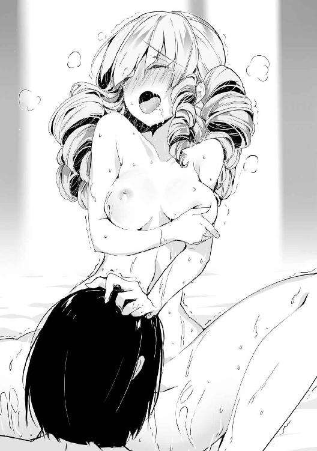
胸は平均よりも遥かに下の彼女だが、全体的なスタイルは悪くない。特に腹部は脂肪がほとんど乗っていないスラッとした体型だが、くびれもできており、十分に女性らしさを感じられる。武術の訓練をしているので、てっきり腹も割れているのかと思っていたが、違ったようだ。
「お腹を舐められているだけなのに、な、何でこんなに気持ちいいんでしょうか？ そ、そんなに舐められたら、お腹の奥が熱くなってしまいますわ」
胸とは違った刺激のようだが、ここでも十分に気持ちよくなってくれるようだ。胸とは違ってどこを刺激してやればいいのか、いまいち分からないのは難点だが。
そして腹への攻めも一通り済ますと、もっと下へと顔を動かし、彼女の股間へと辿り着いた。
「そ、そこまではしなくて結構ですわ！」
「だがここも触られたのではないか？ 中途半端に終わらせては意味がないぞ？」
「それはっ、う、うぅぅ......」
秘部を晒すことに抵抗があったようだが、ここまで来て止めるわけにはいかないだろう。彼女が頭を押さえて精一杯の抵抗をしていたが、気にせず彼女の足を開いて股間に顔を突っ込み、まずは簡単なところから攻めようと思い、彼女のクリトリスへと舌を伸ばした。
「あ、そこはっ！ あぁああっ、変な気分にぃっ！」
皮を被ったままの肉芽を舌で軽く押し潰すように刺激してやるだけで、とても敏感な反応を見せていた。簡単に快感を得ていたことから、彼女は自慰の経験があるのだろうと予測できる。それならばもう少し強めに攻めても問題ないだろう。
舌を使って弾いたり、擦り上げたりと色々な方法で刺激してやりながら、手で太股の内側を撫でる。ここを撫でるだけでもかなりの快感を得られる女性もいるが、彼女の反応は普通だった。まあそんなこともよくあるので、気を取り直してクリトリスへの攻めに集中した。
「あっ！ そこを噛んではっ！ あ、あぁあああああ！」
甘噛みをしても気持ちよくなれたようなので、最後に口に含んで思い切り吸ってやったところ、とうとう絶頂してしまったようだ。俺の口の周りは彼女の愛液やら俺の唾液やらで汚れてしまったので、シーツで拭いておく。これで彼女のトラウマが少しでも改善してくれればいいのだが。
これで頼みは果たしたとばかりに、仰向けのまま荒く息を吐いている彼女の隣に寝転がる。あまり長いこと起きているとまた寝不足になってしまうからな。
だが少しして徐にマルガレーテが起き上がると、俺のズボンを脱がして肉棒を取り出し、俺の上に跨がってきた。流石に挿入は不味いので彼女を止めようとしたが、伸ばした手を払われた。
「ヤード様に頼みを聞いていただいたのですから、今度は私が奉仕して差し上げますわ」
「まて、中に入れては流石に不味い」
「入れるわけがありませんわ。いくら感謝しているからといって、夫でもない方にそこまでしようとは思っておりませんの。でも女性を抱いて出さないままなのは辛いことなのでしょう？ だから手伝ってあげようと思っただけですわ」
彼女は足を閉じ、太股と股間で作られた隙間に硬くなっていた肉棒を挟んだ。太股の柔らかい感触と毛もなくツルツルとした秘肉に挟まれ、何とも言えない圧迫感を感じる。膣の中でも口でもない感触は少々新鮮なものがあるな。
「お、思ったよりも硬いのですね......」
彼女は肉棒の硬さを確かめるように、太股に挟んだまま指で触ったり、太股を動かして擦ったりしている。肉棒が太股の肉にちょうどいい力加減で擦られるので、想像以上に気持ちがいい。
ひとしきり肉棒の硬さを確かめた彼女は、ゆっくりと腰を動かし始めた。膣の締め付けとは違い、柔らかさを保ったまま俺の肉棒に吸い付くように当たっている太股と秘肉に扱かれて、彼女への愛撫で焦らされていた俺は一気に射精欲が高まってきた。
「あぁ、ヤード様の物が、私の気持ちいいところに当たっています、んんっ！」
少し前屈みになっている体勢のせいか、俺の肉棒は彼女の肉芽も擦り上げてしまっているようだ。時折先端に硬い部分が当たっている気がするのはそのせいだろう。
自分も気持ちよくなれるということで、彼女の奉仕にも熱が入ってきた。太股は愛液でベトベトに汚れ、ヌチャヌチャと淫靡な音を立てながら肉棒を扱いていた。次第に速くなっていく腰の動きで、俺の肉棒は間違って膣へと入ってしまうのではないかと思うほどに、彼女の秘裂を擦っていた。
「く、もうそろそろ出そうだっ！」
「えっ！ あの、どうすれば!?」
俺の言葉に戸惑った彼女は、何を考えたのか太股から飛び出ていた肉棒を両手で掴んだ。だがその刺激が最後の引き金となり、俺は彼女に肉棒を掴まれたまま射精してしまった。
飛び出た精液は彼女の太股や下腹部に掛かり、握っていた手にも白濁が付着した。
「こ、これが精液という物ですの？」
知識だけはあったようだが、実際に見たのが初めての精液に興味津々のようで、手に付いた物の臭いを嗅いで何とも言えないような表情を見せた後、徐にそれを舐めて顔を顰めた。普通は舐めようとは思わないと思うのだが、彼女は一般人ではないので仕方ないのかもしれない。
「ヤード様、これで満足できましたか？」
「ああ、もちろんだ。手間を掛けさせて済まなかったな」
「わ、私が言い出したことですから、ヤード様に謝っていただくようなことはありませんわ」
彼女は身体に付いた精液を拭った後、俺の隣に横になった。よく見れば今にも瞼が落ちそうな感じだ。まあ寝不足で体力を使うようなことをしたので、当然のことではある。
彼女が横になったので俺もそろそろ寝ようと思っていたが、再び彼女が俺に近寄ってきた。
「その、私を抱きしめながら眠ってくれませんか？ そのほうが眠れそうな気がしますの」
「ああ、いいぞ」
近寄ってきた彼女を抱きしめてやると、少し照れたように赤くなりながらも俺に擦り寄ってきた。
「あの、もう一つお願いがあるのですが......」
「ああ、この際だ、言ってみろ」
「では、二人きりのときだけで構いませんので、これから私のことをマリーと呼んでくれますか？」
「ああ、ではこれからはマリーと呼ばせてもらおう」
彼女の頭を撫でながらそう答えると、嬉しそうにこちらの胸に顔を擦り寄せてきた。そのまましばらく彼女の頭を撫でていると、いつの間にか彼女は眠ってしまった。
しばらく観察していたが、ずっと安らかな寝顔をしていたので、昼間のように悪夢を見ていることもなさそうだ。俺と寝たことで彼女のトラウマがいくらかは解消してくれたのだろう。
それにしてもまさか彼女がここまで懐くとは、かつては想像もできないことだった。彼女の寝顔を見つめながらしみじみと思う。
それから少しして俺にも睡魔が襲ってきたので、今度こそ逆らわずに目を閉じた。
※
翌朝、目が覚めると既にマリーの姿はなかった。まあ俺達が一緒に寝ているところを見られると面倒なことになるので、その点を考慮したのだろう。幸い誰かが部屋に入ってきた形跡もないので、昨日のことは黙っていれば誰にもばれないだろう。
身体がべとつくので風呂にでも入りに行こうかと思っていると、ティアが入ってきた。彼女には珍しく、何やら困惑したような表情を浮かべていた。
「おはようございます、ご主人様」
「ああ。ところで何か困っているようだが、何か厄介事でもあるのか？」
「いえ、私の話ではないのです。ご主人様にお客様が来ているのですが......」
「客？ 誰だ？」
「それがエレイン様というエルフの方で......今はソフィア様達が応対して」
ティアの言葉を聞いた瞬間、俺はまた面倒な事態になることを確信した。
色々と言いたいことはあるが、とりあえず国賓扱いになるような人物がアポもなしに訪ねてくるなんて非常識な真似はしないで欲しい。おそらく対応に出たソフィも困惑したことだろう。何せ彼女とエレインの間に接点と言えるものはほとんどないのだ。
きっとエレインの扱いに困っていることだろうと、ティアの案内で応接間へ入ろうとすると、中から半泣きのルーシアが飛び出してきた。俺の存在など視界に入っていないのか、ぶつかりそうになるのを俺のほうから避けてやると、そのまま走り去っていった。
何事かと思い中に入ると、そこにはとても上機嫌な様子で話をしているエレインと、対面に座って如何にも困っていますといった風に眉を寄せているソフィ、その隣には不機嫌そうな表情を隠しもしていないナタリアが座っており、奥にはオリンピアやメルヴィナの姿もあった。
全体的に剣呑な雰囲気が漂っている以外、一体何が起こっているのか想像もつかない。一つ分かることは、ルーシアが飛び出していったのはこの雰囲気に耐え切れなくなったからだろう。
「あら、ヤード様。何日か振りですね」
そのとき部屋の入り口にいた俺の姿を確認したエレインが、こちらに向かって軽く手を振って挨拶してきた。途端に広間にいた全員の視線が俺へと集まり、怯みそうになるほどの威圧感を覚えた。
「おはようございます、ヤード様。食事の前にこちらへお座り下さい」
ソフィは空いた椅子を手で示しながら俺に着席を求めてきた。いつもの彼女からは考えられないほどに感情の篭もっていない平坦な声である。他の女性陣からも無言の圧力が感じられ、到底逆らえるような雰囲気でもないため、素直に従っておくことにした。
席に着くと即座に茶を差し出してきたティアに状況を教えてもらおうとアイコンタクトを取ってみたが、彼女は言葉の代わりに首を振って何かを示すと、オリンピアの隣に行ってしまった。どうやら俺には一人も味方がいないようだ。
だがせめて事情を知らなくては、全員が無言で俺の顔を見つめてくるこの状況をどう切り抜ければいいのか思いつかないので、オリンピアやメルヴィナに視線を送ってみた。
「ヤード、何ふざけてるの？」
俺がちらちらとオリンピア達に送っていた視線に、ナタリアが気付いてしまったようだ。怒りを微塵も隠せていない雰囲気から、彼女が本当に怒っているのが分かった。これ以上地雷を踏みたくはないので、もう余計なことはせずに黙って事の成り行きを見守ることにした。
とりあえず予想できるのは、エレインの何かが彼女達の怒りに触れたらしいということだ。もしかしたらエレインがかつて俺とやったことを教えてしまったのかもしれないが、それだけでこんな剣呑な雰囲気になるとは思えないので、もっと彼女達を刺激するような内容に違いない。
しばらくエレインと女性陣の間で無言の睨み合いが続いていたが、話が進まないと感じたソフィがため息を吐いて俺のほうに顔を向けてきた。
「さて、ヤード様。一体どういうことかお話ししていただけないでしょうか？」
ようやく状況の説明を聞けると思っていたが、逆に彼女から尋ねられてしまった。思わず冗談かと彼女の顔を見たが、至極真面目な顔をしていた。どうやら本気で俺に何かを尋ねているらしい。流石にこれ以上は黙っているだけで通すことはできないようだ。
「先ほどから思っていたが、一体何の話をしているのだ？」
「何の話ですって！ よくもそんな薄情なことが言えるわね！」
申し訳ない雰囲気を出しつつ状況を確認しようとしたのだが、何故かナタリアが反応した。まあ何故怒られているのかも分からないので、彼女の怒りにも反応のしようがないのだが。仕方ないが、ここはナタリアの怒りを利用して話を引き出すことにしよう。
「薄情と言われても、本当に心当たりがない。私が一体何をしたというのだ？」
「み、見損なったわ！ ヤードならレヴィンみたいに私達を裏切ったりしないと思ってたのに、まさかレシアーナの皆と子供を作るつもりだったなんて！」
「ふふっ」
ナタリアは席から立ち上がって俺に詰め寄り、とんでもない言葉を吐いた。その様子を見てエレインは面白そうに微笑んでいる。その反応を見れば、何があったかは分からないが、とりあえずエレインが彼女達をからかっていたのだと予測できる。
ただ他の人間にはエレインの微笑みが勝者の余裕のように見えたらしい。応接間に漂っていた雰囲気がさらに悪化しているような気がした。
だが俺がやるべきことも分かった。とりあえずエレインが広めた誤解を解けばいいだけだ。
「まあ待て、ナタリア。私はその話を今初めて聞いたわけだが、何故そんな話が出てきたのだ？」
「言い訳しないで！ ヤードから提案したことだって聞いたのよ！」
激昂した今のナタリアは、俺の話に耳を傾けることすらできないようだ。とりあえず冷静そうなソフィのほうを見てみると、彼女は俺とエレインの主張の違いに疑いを持ってくれたようだ。
どんな話術を使ったのかは知らないが、伊達や酔狂で騒ぎを起こさないで欲しい。ただでさえ誰かが厄介事を持ち込んでくるのが常になっているのだ。
「ヤード様、本当にこの話は初めて聞かれたのですか？」
「当たり前だろう。何故わざわざ不貞を働いてまで子供を作らないといけないのだ？」
「魔帝国の襲撃でウッドエルフの人数がかなり減ってしまったのです。特に戦士であった男性が多く亡くなってしまったので、女性ばかりになってしまいまして。やむなく外の男性を入れることになったのですが、先日の戦いぶりでかなりの女性がヤード様に惚れてしまいまして。ですから急遽貴方をお迎えしようという話になったのですよ」
「その話に俺の意思が微塵も介在していないのだが？」
「ふふ、ヤード様も言ってくれたではありませんか。困ったことがあれば私のできる範囲で何でもする、と。今がそのときですよ。大丈夫です、国王には私から許可を取ってきますので」
「いい加減にしてくれ。思いつきのような理由で人の家庭環境を悪化させるな」
話をややこしくしようとしてくるエレインを睨んで黙らせておく。察しのいいソフィやティアはエレインの話が嘘であることを理解してくれたようだが、ナタリアだけは未だ騙されたままだ。純粋なのは結構だが、もう少し俺のことを信じてくれてもいいのではないだろうか。
まあナタリアの説得はまた後ですることにする。多分もう少し時間が経てば冷静になるだろう。それよりも今はエレインが屋敷に来た理由を問わなくてはならない。まさかレシアーナが大変なときに遊びに来たというわけでもあるまい。
「で、何の用だ？」
「先の戦いで得た戦利品の分配やその他の交渉が主な目的ですね。本来ならばヤード様に全て渡すべきなのでしょうが。それと魔帝国に壊されてしまった物の補修のための道具の買い付けに、後は王都の観光でしょうか。あまり外に出る機会はありませんからね」
まあそんなところだろうか。集落がいくつか潰されていたが、死者はそれほどでもなかった。そもそもレシアーナの戦士は大体術式が使えるので、殺されているはずがない。
「そうか、戦利品はそちらが全て取って構わない。復興にも結構な金が必要だろう」
「それは助かりますね。有り難うございます」
「あとは、まだ宿を取っていないなら、今日は屋敷に泊まっていけ。流石に国賓扱いの者を町の宿に泊めるわけにはいかないからな。ティア、客室の準備を頼む」
「はい、承りました」
「ふふ、ではヤード様のご厚意に甘えることに致しましょう」
ティアが応接間を出ていくのを見送った後、改めて周りの様子を確認してみたが、もうナタリア以外は茶番だと気付いているようだ。ソフィは騙されたことよりも、俺が裏切っていなかった事実に安堵しており、オリンピアは呆れた様子でエレインを見ていた。メルヴィナも話が嘘だったことが分かった後、メイドの仕事に戻ったようだ。
「さて、話は終わりだな。ソフィ、こんな奴の相手を任せて済まなかったな」
「いえ、お話に聞いていた方とはまるで違って驚きましたが」
「今回はお忍びで来ましたからね、少しくらいいつもの立場を忘れて楽しんでみたかったのです」
あまりに傍迷惑な楽しみ方だ。もしかすると彼女と俺の間で迷惑の認識が違うのかもしれない。まあいつも何もない場所で暮らしている分、外の世界に舞い上がっているだけかもしれないし、ひとまず問題も解決したので、彼女のしたことは大目に見ることにしよう。
俺達も席を立って応接間を出ようとすると、事態の推移に一人だけ付いていけなかったナタリアが、困惑した表情で立ち上がった。
「ねぇ、結局どういうこと？ ヤードはレシアーナには行かないの？」
「ああ、ナタリアさん。先ほどの話は全て冗談です」
「え？ ......え？」
「ふふ、恋敵のことを信用してはいけませんよ？ 油断していると本当に奪ってしまいますから」
エレインは面白そうに微笑みながらナタリアに忠告すると、返事を聞かないまま部屋を出ていった。後に残されて呆然とした表情をしているナタリアには同情を覚えるが、これを機にもう少し思慮深くなることを学んで欲しい。
※
本当にお忍びで王都を観光してきたらしいエレインは、夕方頃に屋敷へ戻ってきた。いつものお淑やかで冷静な印象からは想像できないほどに活動的だ。真面目に彼女の年を考えると、むしろこちらの姿のほうが自然なのだが。
「ヤード様、風呂というものを見てみたいのですが」
そして屋敷に戻ってきた彼女は、俺の部屋へ来ると、開口一番にそのようなことを言った。大方屋敷の誰かに聞いたのだろう。レシアーナに温泉は噴き出ていないので、まさに初体験のはずだ。特に彼女の申し出を断る理由もないので、風呂へと連れていくことにした。
脱衣所に着くと早速彼女は服を脱ぎ始めた。俺がいるのだからもう少し恥じらいを持ったほうがいいと思う。彼女の裸身は非の打ちどころもないほどに素晴らしい曲線を描いており、堂々とした態度も合わさって、芸術作品のように美しいので、人に見られても恥ずかしくないのかもしれないが。
そんな彼女の姿を間近で見ているうちに、彼女は服を脱ぎ終えた。だが風呂へ向かおうとはせずに、俺のほうを見て不思議そうな表情を浮かべていた。
「ヤード様はお入りにならないのですか？」
「むしろ入ると思っていたのか？」
「ええ、細かい作法なども教えてもらいたいと思いますし、何より一緒に入ったほうが気持ちよくなれそうですから」
そう言ってエレインは俺を誘惑するような流し目を送ってきた。一糸まとわぬ姿の彼女に誘われれば、一度くらいならいいかという気分になってきたので、俺も入ってやることにした。
※
身体を洗って湯船に浸かると、一日の疲れが抜けていく気がする。だがエレインは大量のお湯が張られた湯船を見て、まるで子供のようにはしゃいでいた。
「ヤード様、風呂とは素晴らしいものですね！」
「分かったから、黙って浸かっていろ」
正直なところ、あまりにギャップがありすぎて彼女のテンションに付いていけない。だが彼女は俺が構ってくれないことが不満らしく、湯に浸かって寛いでいる俺にお湯を飛ばして挑発してきた。
「おい、止めろ」
「ふふ、ヤード様がつれない態度を取っているのが悪いのですよ？」
「この、いい加減にしろ！」
いい加減鬱陶しくなってきたので、彼女の手を押さえて湯船の縁へ押し付けた。彼女の力はそれほど強くないので、これで身動きはとれないだろう。その証拠に彼女は手を振り解こうとしたが、拘束を解くことはできなかった。そして彼女はしばらく俺の顔を見つめた後、微笑みを浮かべた。
だがその表情はまた先ほどまでと違って淫蕩な色気に染まったものとなり、媚びるような視線を送ってきていた。そしてこちらに寄り添い身体を擦り付けるように俺の膝へと座り、上目遣いで俺の顔を見つめている。つまり、彼女はどう見ても発情していた。
「最後まで言わずとも分かりますよね？」
「生殖機能を持たないはずの精霊のくせに、こうして男を求めているのはお前だけだろうな」
「ふふ、ヤード様もいけないのですよ。貴方の女になるよう言わせておきながら、ほとんど構ってくれないのですから。責任を取って下さい」
密着している部分にエレインの柔らかい肢体が押し付けられ、男として無反応というわけにはいられなかった。彼女を抱くつもりはなかったのだが、それでも女に求められれば悪い気はしない。
俺を見つめてくるエレインの顔は以前と変わらぬ美貌を誇っているが、前に抱いたときよりも感情の変化が分かりやすくなっていた。おそらく完全な精霊となったことで、彼女の心境にも変化が出てきたのだろう。
「まあいい、ここまで自分の女に誘われて断るわけにもいかないからな」
「では今すぐ始めましょう、と言いたいところですが、その前にこれを」
エレインは自らの胸元に手を入れ、そこから何かを取り出した。胸の谷間に挟んでおいたとでもいうのだろうか、あれだけはしゃいでおきながら胸から落ちなかったことも謎だ。
取り出した容器はガラスか何かでできているのか、中に液体が入っているのまでよく分かる。そしてその中に入っている液体には心当たりがあった。
「念のため確認しておくが、それはエルフの使用している媚薬ではなかったか？」
「はい、そうですね。エルフだけではなく、他の雌雄が存在して生殖行為を行う生物になら大体効きます。子供ができやすくなる効果のほうはエルフかそれに近い種族だけですが」
「つまり私にそれを服用しろ、というわけだな」
「抱いてもらうなら激しいほうが好みなので。それとも薬を使うのはお嫌でしたか？」
照れたように頬を染めているエレインだが、媚薬を勧めている時点で恥じらいなどあったものではないと思う。今後彼女の感性は理解できないものとして扱うことにしよう。
おそらく飲んだ瞬間から発情してしまうので、あらかじめローブを脱いでから媚薬の容器を受け取った。中をよく見るとナタリアに盛られたときよりも明らかに媚薬の量が多い。
「その中に入っている量でちょうど一回分の効果があるはずですから、全部飲んで下さいね」
「どう見ても以前俺が飲まされた量より多いのだが？」
「ナタリアさんに飲まされたのは原液でしょう？ 原液のままだと効果が強すぎて理性も飛んでしまうので、これは媚薬を薄めたものです。その分効果も落ちていますから、大丈夫です」
「......その言葉、信じさせてもらうからな」
流石に毒は飲ませてこないと信じて、意識のあるうちに自動発動にしてある覚醒を切っておき、受け取った媚薬を一息に飲み込んだ。甘い香りと味が口の中に広がり、そして一瞬遅れて以前と同じような陶酔感を覚え、意識が少し霞んできた。
媚薬が効いた状態で改めてエレインの姿を見ると、人形のように完璧に整った顔を情欲に火照らせている様子も、痩せすぎず絶妙な加減で男を誘っているような肉付きも、そしてはち切れんばかりに育っている豊満な胸も、全てが俺に襲って欲しいと言っているようにしか見えなかった。
「ふふ、気分はどうです？」
「ああ、今すぐお前を押し倒したくなっているところだ」
「押し倒したいのなら、遠慮などせずともよろしいのですよ？」
彼女のほうから誘ってきたので、我慢する必要もなくなったようだ。そのまま彼女を抱き寄せて少し乱暴気味に胸を掴んだが、彼女は痛がるような素振りを見せるどころか、むしろ俺の手に押し付けるように胸を突き出してきた。指が沈み込んでいくような柔らかさでありながらも弾力が存在するような、素晴らしいバランスの揉み心地を手のひら全体に感じる。
「胸がお好きなのでしょうか？」
「胸も好き、の間違いだな。お前の身体がどこも素晴らしいのは知っているからな」
「そう仰ってくれるのなら、今宵は私もこの身体全てを貴方に捧げましょう」
今すぐにでも俺の物を突き入れたいと思い、既に硬くなった俺の肉棒を彼女の割れ目へと当てた。
彼女の中へとゆっくりと肉棒を挿入していくと、満足そうなため息を出しながら俺の背中に腕を回して抱きしめてきた。硬くなった彼女の乳首が俺の身体に擦れているのを感じながら、奥へ奥へと誘うように動く彼女の膣内に肉棒を沈めていく。
目の前には普段の冷たささえ感じるような無表情とは違う、淫欲に蕩かせた雌の顔を見せるエレインの姿があり、俺が彼女をそんな顔にさせている事実が達成感と興奮を覚えさせてくれる。
「んっ、私の中を熱い物が広げているのを感じます......」
「ああ、私もお前の奥まで届いているのを感じるぞ」
柔らかな膣肉を割って進んでいった先で、肉棒の先端にこつこつと他の部分よりも少し硬くなっている場所に当たっているのを感じる。子作りをしないハイエルフの彼女に子宮があるのかどうかは分からないが、人間とほぼ同じ身体構造をしているなら多分ここが彼女の一番奥だろう。
きつすぎず緩すぎず、俺の物をちょうどいい具合で締め付けてくる膣内に、我を忘れて獣のように腰を振りたくなったが、僅かに残った理性でそれを押し留めてゆっくりと腰を引いていく。その途中、少し他の部分と感触が違う場所を見つけた。
その部分を擦るようにまたゆっくりと肉棒を突き入れていくと、その場所を刺激しているときは特にエレインの反応がよくなっている気がするので、ここが彼女の弱点だと思われる。
「ヤード様、もっと激しくしてもいいのですよ？」
「ああ、今からはそうさせてもらう」
「はい、あ、あぁああっ！ そんなにいきなりはっ！」
今までゆっくりと焦らすようにしていた動きを一気に加速させ、先ほど見つけた彼女の弱点らしきところを重点的に刺激しながらも激しく腰を打ち付けてやった。
口では突然の激しい動きを止めて欲しいように聞こえたが、俺を抱きしめている腕に力を入れて逃げられないようにしている辺り、彼女も本心で言っているのではないのだろう。口で嫌がってはいても身体は正直、という奴だ。
その証拠に彼女の膣内も俺の動きに合わせた締め付けを繰り返しているし、いつの間にか足も俺の背中に回って俺が彼女から離れられないよう捕まえていた。
彼女に限っては子を孕む恐れがないので、こちらも余計な心配をせずに遠慮なく彼女の中に出すことができる。美人に思う存分中出しできるのは、ある意味男の夢のような状況だ。俺の限界も近付いている中で、そんなことを考えていた。
「そろそろ出してしまうぞ！」
「はいっ、い、いつでも、んんっ！」
身体全体で押さえつけるように彼女を抱き、一番奥まで肉棒を突き入れて子宮に入ってしまうのではないかと思うほどの勢いで射精した。精液が打ち付ける快感で彼女も絶頂してしまったのか、膣内がきつく締まっていた。
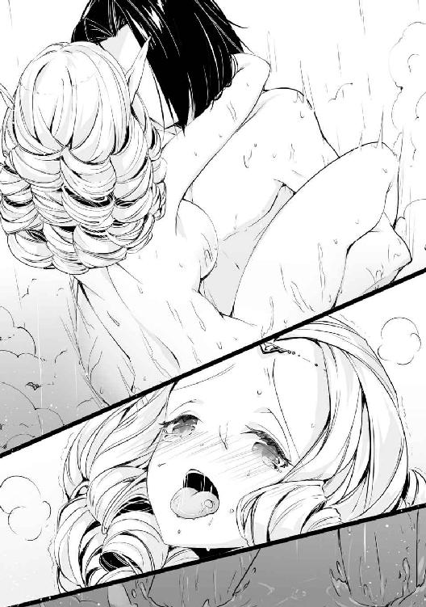
自分でも驚くほどの精液が出ているのが感じられるが、これは媚薬の効果だろう。彼女の膣穴から溢れ出た精液が逆流しているのを見ると、明らかに人間男性には出せないと思える量だった。
「た、たくさん出されましたね......」
エレインも腹の中に溜まっている精液の量は感じられるようで、前にやったときよりも明らかに多いその量に息を弾ませながらも恍惚とした表情を浮かべていた。
彼女は少し休憩とばかりに上体を起こして肉棒を抜こうとしていたが、俺の物は大量の精液を出した後だというのに全く萎えていなかった。明らかに媚薬の量を間違えているせいだと思うが、もはや後の祭りだろう。腰を引こうとしている彼女を再び押し倒して、抜けかけだった肉棒をまた彼女の中へと突き入れてやった。
「え、あの、少し休憩をされては......」
「あの媚薬を飲ませた以上、そんな温い発言は聞き入れられないな。それに熱い夜を過ごしたいと言ったのはお前のはずだったと記憶しているが？」
エレインの表情に珍しく焦ったような色が見えたので、ここは押しどきだと判断した。先ほどの借りを返すいい機会ではないか、存分に快楽を与えてやるから覚悟しておけ。
俺はエレインの唇を奪って声を上げるのを封じた後、先ほどよりも強く腰を叩きこんでやった。先ほどの絶頂がまだ抜け切っていなかったようで、治まりかけていた絶頂の快感がぶり返し、たった一突きだけで簡単に達してしまった。
「ん────っ！」
口を塞がれて大きな声が出せないので、代わりに身を捩って耐え切れない分の快感を発散しようとしていた。しかし、それをされる前に全身で彼女を押さえつけて身動きも封じてやったところ、昇華できない快感のせいで痙攣しているかのように身体を大きく跳ねさせた。
人間に処理能力を上回る快感を与え続けたら壊れてしまう可能性が高いが、エレインはエルフよりも強靭な精神力を持っているので、多少の無茶をしても壊れることはないだろう。乱暴にするのは本人も了解している節もあったことだ、もう少し攻めることにする。
「ん────っ！ んん─────っ！」
俺も射精した直後で敏感になっているかと思ったが、媚薬の効果なのかすぐにいつもと同じ感度に戻っていた。性欲のほうも相変わらず滾っていたので、エレインには悪いがまだまだ彼女を休ませてやれそうにはないようだ。
彼女のほうはイキ続けている状態に入ったのか、許容量以上の快感で本人の意思とは関係なく涙を流していた。それだけではなく全身からも汗を噴出し、愛液も次から次へと分泌させていた。
絶頂が続いて体力を消耗したのか声に疲れたような気配が感じられ、荒い息を吐きながら汗で湿った髪が頬に入りついて気だるげな艶っぽさを漂わせている彼女の姿は、俺の同情を誘うよりも逆に興奮を呼んでしまう原因となっているが、彼女がそれに気付く余裕はなさそうだ。
「んっ、ふっ、ん────っ！」
膣内を肉棒が擦り上げるたびに彼女の身体は大きく跳ね、俺の背中に回された腕にも力が入り、無意識に俺の背に爪を立てて脳の処理能力を超えた快感に堪えようとしている。
試しに舌をねじ込んでやると、すぐに彼女の舌が俺の舌を押し戻そうとしてきた。これ以上快感を得たくはないと反射的に動いたのだろう。だがそれを無視して彼女の舌や歯茎、頬の内側など口腔内を全て刺激するよう舐めてやった。
こんな状態の彼女に中出しをしたら、一体どうなってしまうのだろうか。まあ最悪死んでも生き返らせることができるので試してみようと思う。彼女に伝えるため口を離すと、喘ぐようにたどたどしく呼吸をしていた。
「今から中出しをするが、いいな？」
「っ！ や、止めて下さい！ これ以上されたら......」
「ああ、もう遅いな」
「えっ、は、あ、あ─────!?」
エレインが言い終わる前に俺の限界が来たので、思い切り腰を打ち付けて中出しをしてやった。高い声を上げながら思い切り絶頂している彼女の中に俺の精子を注ぎ込んでやったが、先ほどの射精で満杯だったおかげで射精した分は結構溢れ出てしまったようだ。
彼女は壊れた玩具のように身体を痙攣させているが、絶頂の快感で一時的に気を失っているだけで、廃人となったわけではないようなのでひとまず安心だ。
「気分はどうだ、エレイン？」
「ふ......あ、あぅ」
イキ続けたせいで言葉を話すのもおぼつかない様子だ。おそらくしばらくは動けないだろう。
だが俺の肉棒は二回の射精でも全く萎えることなく、まだ射精したりなさそうに硬さを保ち続けている。俺は彼女に後ろを向かせ、腰を持ち上げて尻を突き出させた体勢にしてやった。少し開いた股の間からはボタボタと先ほど出した精液が垂れてきていた。
「ひゃ、止めひぇ下ひゃい......」
グロッキー状態で抵抗する力も残っていない彼女は、最後の力を振り絞って尻を振って入れさせないようにしているが、弱々しく左右に尻を振っている様はどう見ても男を誘っているようにしか見えないことには気付いていない。
「そこまでされては仕方がないな」
「っ！ あ......はっ......」
彼女に誘われるままに肉棒を突き入れてやると、呼吸すら満足にできないほどに快感を覚えてくれているのが分かる。それでも彼女の膣内は男の物を欲しがるように締め付けてくるのだから、本当はこれも演技ではないのかと疑いたくなる。
まあ仮に演技だとしても今はそれで構わない。それよりもこの身体の滾りを鎮めるほうが重要だ。それにこうなった原因は彼女にあるのだから、彼女が身体を差し出すのも当然のことである。
まだまだ肉棒は萎えそうにないが、元に戻るまでは彼女がどんなに嫌がろうが抱いてやるつもりだ。彼女に三回目の中出しを決めつつ、俺はそう心に誓った。
※
五回目にしてようやく媚薬の効果も切れてきたようで、俺は全身に倦怠感を感じつつも運動後のすっきりとした気分を感じていた。
隣には全身を色々な汁で濡らしながら湯船の縁に倒れ込んでいるエレインの姿があった。つい先ほどまで彼女とやっていた名残として、まだ秘裂からは精液が流れ出して湯船を汚している。
「エレイン、起きているか？」
「......は......はい」
返事はしたものの、疲労で起き上がることもできないようだったので、体力回復を掛けてやる。
彼女は起き上がると俺のすぐ隣に座り直し、頭を下げて俺の肉棒を口に咥えた。媚薬の効果はもうほとんど残っていないので先ほど出したばかりの敏感な身には少しこたえたが、彼女の好きにさせておいたほうがいいだろうと判断して我慢することにした。
精液や愛液がこびりついた肉棒を舌で丁寧に舐めていき、尿道に残った精液も吸い取った後で口を離し、飲み込んだことを教えるように俺に向かって口の中を見せた。
「......とても素敵な時間を過ごせました。有り難うございます、ヤード様」
「あれで満足したのか......？ やはりお前の思考は理解できないな」
「思っていた以上に激しかったのは認めましょう。もう私の身体の中で貴方に汚されていない場所はないくらいですね」
「言っておくが、ああなったのは媚薬の分量が多すぎたからだ。あれが通常ではないからな」
「ふふ、分かっておりますとも。元々一回分ではなかったのですから」
楽しそうに微笑んでいるエレインの姿からは、先ほどまで快感で発狂寸前まで悶えていたとは思えないほどに余裕が感じられる。ハイエルフの精神力は人間の比ではないようだ。
何かどっと疲れが襲ってきた。結局彼女の手のひらの上で踊っていただけだったようだが、もはや抗議するような気力も湧いてこない。
周りを見回すと、何回もやっていたおかげで精液塗れになった湯船が目に入る。風呂の惨状にため息を吐きながらも、俺は湯を張り直す前にエレインを脱衣所に追い出すことにした。そしてこれからは彼女の誘いに乗るときには十分注意することを心に誓っておこう。
最近ソフィが浮かない顔でため息を吐いている姿をよく見るようになった。
別に彼女と不仲になっているわけではない。むしろ夜のほうはそれなりに良好だと思っている。だが問題なのは、未だ彼女が懐妊していないということだ。
王国の貴族の間では、一般的に妻を娶ってから一年経っても子供ができないとその夫婦は身体の相性が悪いと見做されるらしく、たとえ正妻であったとしても家での立場が非常に悪いものになってしまうらしい。まだソフィが嫁いで一年は経っていないが、段々と焦りを覚えてきているようだ。
せめて彼女と仲睦まじいことをアピールするため、暇があれば彼女の部屋を訪れているのだが、なかなか上手くはいかないものだ。
そんなある日の昼食後、軽く運動でもしようかと思っていたところ、ソフィが近付いてきた。
「ヤード様、少しお話ししたいことがあるので、私の部屋に来てもらえないでしょうか？」
「ん？ ああ、分かった」
真剣な彼女の表情にかなり嫌なものを感じた。おそらく俺とマリーの一件がばれてしまったのだろう。どうして彼女がそれを知ってしまったのかは分からないが、非常に不味い事態だ。とはいえ特に用事もないので、ここで彼女の頼みを断るのも無理があった。
ソフィに従って彼女の部屋に入ると、待機していたメイドが茶の準備を始めたが、彼女はそれを止めさせた。不思議そうな顔をしているメイドが彼女の顔を窺っていたが、いつもの朗らかな雰囲気が微塵も感じられない表情を見て、大人しく彼女の命令に従うことにしたようだ。
「そこの貴女、少しいいでしょうか？」
「は、はい！ 何でしょうか？」
「今からヤード様と少し真面目なお話をするので、しばらくこの部屋には誰も通さないようお願します。ああ、そのお茶の片付けなども結構ですので」
「分かりました、奥方様」
いつものソフィからは考えられないほど感情の篭もっていない平坦な声に、メイドの生存本能が警鐘を鳴らしたのか、これから彼女に詰問されるだろう主人に対し頭を下げ、少しの躊躇いも感じさせない動きで部屋から出ていった。何とも非情な奴である。
向かい合って座ったソフィの様子を観察していたが、彼女は席に着いてから一度もこちらの顔を見ようとはせず、メイドの残していった茶の用意を自ら行い、ティーカップを差し出してきた。とりあえず受け取っておいたが、とてもそれを飲めるような雰囲気ではない。
彼女は自分で淹れた物を一口飲んだ後、ため息を吐いて俺の顔を見つめてきた。いつもの優しげな雰囲気は全くなく、視線だけで俺のことを咎めているような気分になってくる。
「ヤード様、私の質問に嘘偽りなく答えて下さいね。話をはぐらかそうとするのも駄目です」
「......ああ、分かった」
「最近ヤード様とマリーの仲がよくなったように思うのですが、何かあったのでしょうか？」
「マルガレーテが夜眠れるように手伝って欲しいと相談を受け、彼女を抱いた」
いきなり核心を突いてくるような質問に、正直に答えてやった。既にマリーとの仲を疑われていたようなので、下手に誤魔化すのは逆効果だろうと思ったからだ。
マリーを抱いた夜以降、俺への態度はかなり軟化した。以前は廊下で見かけても無視されることも多々あったのだが、今は彼女のほうから先に声を掛けてくるようにまでなっている。それに俺と話すときの態度も、嫌そうな雰囲気はなくなって、少し砕けたような感じになっていた。
驚いたことに、本人はいつもと変わらないように接していたつもりだったらしい。当事者である俺には一目瞭然の変化だったのだが、やはり姉であるソフィにも分かりやすかったようだ。
俺の言葉を予想していたのか、彼女の表情が変化することはなかったが、それでも内心では動揺してしまったようで、しばらく目を閉じて気持ちを落ち着かせていた。
「......そうですか。妹が夜な夜な悪夢に襲われていることは知っていましたが、それとヤード様が行った行為に何か関係があるのですか？」
「要塞での出来事を忘れるために、それを上回る強烈な体験をすればいいと思ったようだ。だが彼女が男性恐怖症になってしまったことは知っているだろう？ 私とは普通に会話をすることができたが、男を見るだけで震えがくるほどの重症だったので、頼める相手が他にいなかったのだろう」
「その方法はヤード様のほうから提案されたのでしょうか？」
「いや、彼女のほうからだ。夜中に私のところを訪ねてきた」
「そうですか......」
俺の話を聞いたソフィは悲しそうな表情を浮かべて俯き、そのまま黙り込んだ。
おそらく今後のことを考えているのだろう。彼女からしてみれば自分の夫が妹に誘われ、それに乗ってしまったのだ。どう考えても不貞以外の何物でもない。
彼女はしばらくして再びため息を吐きながらこちらの顔を見つめてきた。その目には涙が浮かんでおり、俺の胸の内は罪悪感で埋め尽くされた。
「ヤード様は私のことがお嫌いになってしまわれたのでしょうか？」
「いや、決してそのようなことはない」
「ではどうして私ではなくマリーなのでしょうか？ それに最近では屋敷に招く女性も増えてきました。もしや私にはもう魅力を感じなくなってしまったのでしょうか？」
その言葉を言われることは予想していたが、それに対するよい言葉を思いつくことができず、彼女への返答に窮してしまう。はっきり言えばマリーを抱いたのは成り行きだ。不眠で困っており、その場では特に拒む理由がなかった。ただそれだけの理由だ。ソフィの妹として親しみは持っているが、特に愛しているとかそういった感情は持っていない。
だがこれを彼女に伝えてはいけない気がする。妹を傷物にして成り行きでやったなどと言われたら、まず間違いなく激怒するだろう。いくらソフィが俺に好意を持っているからといって、そんな外道な行為を許してくれるとは思えない。彼女には悪いが、ここは言い訳をしよう。
「落ち着いてくれ、ソフィ。マルガレーテを抱いたのは理由があるのだ」
「理由、ですか？」
「彼女が悪夢に悩まされてあまり眠れていなかったことはソフィも知っていたと思うが、睡眠がとれなかったことで彼女は精神的に不安定な状態になっていたのだ。あのまま放っておいては、いずれ精神に支障をきたしていただろう。一度精神が壊れたら、もう手の打ちようがない」
「......そうなのですか？」
「ああ、そうだ。そして彼女もそれが分かっていたのだろう。だから少しでも症状が改善すれば、と私を訪ねたのだと思う。私は例外だったようだが、彼女は男性恐怖症になっていたせいで男性には頼めなかったからな」
ここまで特に嘘は言っていない。満足な睡眠がとれずに段々とやつれていたし、それを治したくて俺の部屋に来たのだ。あとどれくらいあの状態が持ったかは分からないが、そんなに長くは持たなかっただろう。
俺の話に少しだけ彼女の視線が和らいだ。まだ涙目だが、妹を抱いたことにも理由があったということで、俺が心変わりをしたわけではないと感じ始めてくれたのだろう。
「ですが、何故それがヤード様と一夜を共にすることになるのでしょうか？」
「毎夜の夢に出てきてしまうほど強い記憶でも、長い時間を掛けて忘れることもできるかもしれないが、おそらくそれまで彼女の精神は持たないだろう。だから彼女が受けた仕打ちを忘れられるほどに強烈な体験をすることで、無理やり上書きする方法が最善だと思ったのだ」
「......」
「要塞での記憶を抜くこともできるが、それだと要塞に関する全ての記憶が消えて、部下だった者達のことも忘れてしまう。それでは死んでいった彼女の部下達があまりにも救われないからな」
マリーを抱いた後でトラウマが残っているようならば記憶を消してやるつもりだったのだが、そこまでは言わなくてもいいだろう。まともに顔も覚えていない人間よりは義妹のほうが大切だ。
ソフィは俺がマリーを抱いた理由を聞いて呆然とした顔で俺を見ていた。一応言い訳はできた。これでなお彼女の怒りが消えないならば、後はもう成り行きに任せるしかない。
「ヤード様はそこまで考えて......」
「決してソフィを悲しませるつもりはなかったが、結果的に君を裏切ってしまった。私への怒りが収まらないというのならば、どんな仕打ちも甘んじて受け入れよう」
「ヤード様っ！」
彼女は俺の言葉を聞いて再び目に大粒の涙を湛えると、席から立ち上がって俺に駆け寄り、そのままの勢いで抱きついてきた。軽い彼女の突進ごときで倒れるほどひ弱ではないので彼女を抱きしめ返し、俺の服に顔を押し付けながら押し殺した声で泣いている彼女の頭を撫でてやった。
「御免なさい、私こそヤード様の優しさに気付かず、咎めるような言葉を......」
「私の言葉が足りなかっただけだ。君が謝る必要はない」
彼女の言葉を遮って、彼女の嗚咽が収まるまでしばらく頭を撫で続けてやった。
これで俺への疑いは晴れたことだろう。最悪俺の不貞が理由で離婚になってしまったなら、この国にいられないような状態になったかもしれないのだ。本当に助かった。
やがてソフィも落ち着きを取り戻し、俺からゆっくりと離れると、涙で赤くなった目を恥ずかしそうに隠しながら席へと戻った。その表情は憑き物が落ちたかのようにすっきりとしていて、いつものように朗らかな雰囲気を取り戻していた。
「済みません、みっともない姿を晒してしまいました」
「いや、気にすることはない。私達は夫婦なのだからな。他の人間が見ていない場所ならば、思い切り泣いたところで恥ずかしがる必要はない」
「はい。それで、先ほどの話ですが、一つ確認したいことがあります」
「......何か説明が足りていなかったのだろうか？」
先ほどの説明でマリーとの件は全て話し終えたと思っていたが、彼女はまだ続けるようだ。流石にこれは予想していなかった。終わったと思っていた話を蒸し返され、胃が痛くなってきた。
「いえ、マリーは要塞で純潔を散らされてしまったのでしょうか？」
「いや、それはないと思うが」
エルもオーヴァンもその他帝国兵も、彼女の処女を奪ったということはないと思う。普通ならば発情した兵士に犯されていてもおかしくはないが、奴らは処女を奪うことを避けているような気がした。何か利用価値があったのか、俺を倒した後に見せつけるためだったのかは分からないが。
俺の返答を聞いたソフィは困ったように眉を寄せた。何か問題があったのだろうか。
「ではヤード様がマリーを抱かれたとき、まだあの子は純潔を保っていたということですね？」
「まあ、そうなるな」
「ヤード様、たとえ不眠を治すためだからといって、マリーを抱いたことは問題です。あの子の継承順位は低いですが、それでも王女であり王族の一人なのです。それが夫になる方以外に純潔を奪われたとなれば、普通は私のように降嫁させるしかありません。ですがヤード様には既に私が嫁いでいる以上、もう一生を修道院で過ごす以外の選択肢がありません」
どうやら彼女は妹の今後を心配しているようだ。当事者の俺とマリー、あとはソフィのように話を聞いた者が黙っていれば問題ないと思うのだが、彼女の誠実さがそれを許さないのだろう。だが彼女はある一点、大きな勘違いをしているようだ。
「ソフィ」
「もし要塞で純潔を奪われていたのなら、不慮の事故だと他の貴族に降嫁させることもできましたが、ヤード様が奪ってしまわれた以上それも難しいですね」
「ソフィ、聞いてくれ。マルガレーテの純潔は保たれたままだ」
「......え？」
「確かに彼女を抱いたとは言ったが、実際したのは前戯までだ。私は既にソフィを娶っているというのに、その上王族の純潔を奪うような馬鹿な真似はしない」
「......妹はまだ清らかな身体のままなのでしょうか？」
「まあ、処女という点ではそうだ。清らかかどうかは判断しかねるが」
ただでさえ関係を持った女性が増えすぎている状況でマリーを嫁に迎えるなど、騒動の火種にしかならない。既にソフィという正妻がいる上にティアとナタリアも妻として迎えるのだ、少なくともあと数年は他の女性を娶る気はない。
ソフィは心配していたことが杞憂だと知って、肩の力が抜けて呆然としていた。まあ妹の将来を本気で心配していたのだろうから、その反応も納得である。
「......安心しました」
妹の問題もなかったことが理解できたのか、彼女が嬉しそうに微笑んできた。やはり彼女は笑っているほうが綺麗だな。泣き顔の似合うフェアリスとはまるで違う。
誤解が全て解けたことで俺もようやく安心することができた。最初彼女に誘われたときにはどうしようかと思っていたが、まあ無難な結果に収まってくれてよかった。緊張で喉がカラカラになってしまっているが、先ほど淹れてもらった茶は既に飲んでしまった。
「ソフィ、悪いがもう一杯くれないか？」
「はい、今すぐ......あ、そういえばいい物があります。ちょっと待っていて下さいね」
ソフィは席を立って棚に置いてあった小箱を持ってきた。蓋を開けた途端に部屋の中に何とも言えぬ芳しい香りが広がった。中を見ると茶葉と他何種類かの物が入っていた。
「頂き物ですが。何でもとても貴重なお茶で、入手が困難な香草が入っているせいで滅多に出回らない物だそうです。特別な人と飲むと絆が深まると聞きました」
嬉しそうな表情のままソフィが中の物を説明してくれた。彼女の話を信じれば、オリジナルブレンドのハーブティーといったところか。俺は茶には詳しくないが、確かに普通の茶葉よりも香りが強い気がするので、滅多に手に入らないという話も納得できる。
彼女は俺からティーカップを受け取り、箱から出した茶葉で茶を淹れると、俺に差し出してきた。
淹れた物は茶葉の状態よりもさらに強い香りを漂わせているが、飲んでみると味は普通の茶よりも少し美味しいといったところだった。茶の渋みではない妙に痺れるような苦みも感じる。もしかしたら長く取り置きしたせいで黴が付いているのかもしれない。香りのせいで期待しすぎた。
「......まあまあだな」
「あら、そうなのですか？ 私はとてもいいお茶だと思いますよ」
彼女も自分の分を淹れて飲んでいたが、俺とは違って茶の香りと味を楽しむことができているようだ。いつも上等な物を味わってきた彼女と、適当に済ませてきた俺の味覚の差だろう。
まあ彼女が楽しめているなら問題はない。茶自体も決して不味いと思うほどの物ではなく、むしろ先ほど飲んでいた普通の茶よりは美味しいのも確かだ。
王国では茶葉の生産はされていないので、必然的に他国からの取り寄せになるのだが、その中でも貴重な物を彼女に送るとは。屋敷には俺の見知った商人しか出入りしていないので、彼女とコネを持ちたい貴族の誰かだろうか。
「ソフィ、この茶葉は誰にもらったものだ？」
これの出所が気になったので聞いてみる。俺を通さずに直接ソフィに送ったということは、伯爵家の妻としての彼女ではなく、第一王女としての彼女に取り入りたいと言っているようなものだ。俺の与り知らぬところで彼女が面倒事に巻き込まれる可能性がある以上は看過できない。
「これですか？ エルマイアさんです」
だが彼女から返ってきたのは、俺の予想を遥かに超えた一言だった。彼女の言葉を聞いた瞬間にこれ以上飲むのを止めた。手元で芳醇な芳香を放つ琥珀色の液体がとても毒々しい物に見える。
「ソフィ、とりあえずそれを飲むのは止めてくれ」
「え？ はい。虫でも入っていたのでしょうか？」
俺も彼女も特に体調の変化はなさそうだが、今は大丈夫だからといって安心はできない。遅効性の毒物が入っている可能性も考えられる。むしろ暗殺にはそういった毒物のほうが使われる。
毒対策としては常時発動の毒探知を使っているが、まずは毒の有無を調べなくてはならないので、俺は自分と彼女の飲んでいた茶に対して上級毒探知を発動しようとした。だがその術式を発動しようとした瞬間に魔力の制御が利かなくなり、構成途中だった術式が効果を発揮する前に立ち消えてしまった。
そして俺の全身に悶絶するほどの痛みが走り、座っていることすらできずに床へと倒れた。
「っ!? ヤード様っ!? どうしたのですか!?」
どんどんと狭まる視界には慌てて席から立ち上がり、こちらへと近寄ってくるソフィの姿が見えた。折角彼女の誤解を解いたばかりだというのにまた心配させてしまった。心の中で彼女に詫びながら、襲ってくる痛みに精神が限界を迎え、俺は意識を失った。
※
目が覚めると、自室のベッドに横になっていた。気絶した後、俺は自室へと運ばれたようだ。起き上がって周りを見てみると、すぐ横で椅子に座ってこちらを見つめるエレインの姿があった。
「ふふ、おはようございます。とはいっても、もうそろそろ昼食の時間ですが」
「そんなことより、私が倒れた後はどうなった？」
無邪気に微笑みながら挨拶をしてきた彼女の言葉を無視しつつ、現在の状況を尋ねた。
どう考えてもあの茶はエルの仕業だ。どんな毒を盛られたのかは分からないが、下手をすればショック死してしまうかのような痛みだった。となれば一緒に茶を飲んでいたソフィが無事であるとは到底思えない。まずは彼女の安否確認が最優先だ。
「ふふ、ソフィア様が大切なのは分かりますが、落ち着きがないのはいけませんね。ようやく目が覚めたばかりだというのに、そんなに興奮してはまた倒れてしまいますよ？」
「冗談を言っている場合では......っ！」
身を乗り出してエレインを詰問しようとする俺を止めるように、自分と俺の口に指を当てて静かにするように促してきた。そんな彼女の落ち着き払った態度に気圧され、元の位置に戻った。
「ですから、落ち着いて下さい。まずソフィア様は無事です。貴方と違って毒に倒れることもなく、身体は至って健康です。今は部屋で休まれていると思います」
「そ、そうか......」
ソフィが無事と聞いてひとまず安心した。昨日の昼に倒れ、起きてみれば昼前ということは、もしかすると一日以上経ってしまっている可能性がある。もし彼女が毒に冒されて死んでしまった場合、蘇生が間に合わなかった可能性もあるのだ。本当によかった。
落ち着きを取り戻した俺の姿を見て、エレインは仕方ないというように苦笑していた。
「ヤード様のことですが、まず倒れた直接の原因は毒ではなく、魔力の欠乏によるものですね。おそらくは制御を失った魔術が暴走して、ヤード様の魔力を全て使い果たしてしまったのでしょう。私が見たときにはほとんどの魔力を失っていましたから、私の魔力を少し分けておきました」
確かに程度の差はあるが、あの痛みは魔力がない状態で術式を使ったときの感覚に似ていた。一瞬で魔力を使い果たすほどの失敗など、術式を初めて使ったとき以来の経験なので忘れていた。
だがそんな初歩的なミスを俺がしてしまうとは思えない。おそらくあの茶の中に入っていた毒が魔力の制御を妨げるようなものだったのだろう。
「倒れていたのはおよそ二日ですね。ソフィア様が私を呼びに来たときは何事かと思いましたが、実際に貴方が倒れている姿を見たときは驚きました。まさか毒で倒れるような常識を持っているとは思いませんでしたから」
「何を言っている。私の耐性はそこらの人間と大差ない。とはいえ普段からその可能性も考慮して常駐型の毒探知術式を使っているのだが。私に盛られた毒は分かったのか？」
「ええ、名前は付いていませんが、ある程度実力のある魔術師が服用すると魔術が発動できなくなり、もし発動しようとすれば魔力が制御できずに枯渇してしまう、そういった毒です。貴方の言葉で表現すれば、脳内の術式に関する部位だけを破壊する毒ですね」
「つまり今の私は術式発動能力が失われていると？」
エレインの言葉を聞いて気付いたが、確かに恒常型の魔導障壁が全て消滅しており、その他支援術式も全て解除されていた。どうやら彼女の話は本当らしい。つまり今の俺は術式が一切発動できなくなってしまったということだ。
毒探知は致命的な毒は探知してくれるが、大量に摂取しない限り死なないような物は探知範囲から外されている。今回盛られた毒も命に関わるような物ではなかったということだろうが、俺にとっては普通の毒を盛られるよりも悪い状況となっていた。
「解毒薬は簡単に作れるので毒は取り除きましたが、自然治癒で元のように術式を発動できるようになるのは不可能、回復魔術を使用しても数ヶ月は掛かるでしょう」
エレインの話を聞く限り、かなり悪い状態になってしまっているようだ。だが数ヶ月も時間が掛かっては、いつエルの襲撃を受けるか分からない。死に至るような毒ではなかったということは、毒を飲んで弱ったところを襲ってくる算段なのかもしれないのだ。
「お前やフェアリス殿ならば、もう少し早く治すことはできないのか？」
「数カ月というのはフェアリス様を例に言ったものです。普通ならば年単位は必要でしょう。私の魔術でも数週間は掛かると思います。その間ずっとこの屋敷にいるわけにもいきませんし、フェアリス様も似たようなものでしょうね」
「他に方法はないのか？」
「回復する以外にはないと思います。私よりも強い回復魔術を使えるのは......貴方のお弟子さんくらいでしょうか？ 以前襲われたときには既に私を超える魔力を宿していましたし、私の知らない魔術も使っていました。彼女ならばもしかすると一瞬で治せるのかもしれません」
確かにエルならば上級治癒も蘇生も使えるので、エレインよりも治せる可能性は高いだろう。しかし毒を盛った本人がわざわざ回復してくれるなんてことは、彼女に洗脳されるかそれに類する術式を受けて、手駒にされない限りはありえないだろう。
エレインほどの魔力持ちはそう簡単に見つかるわけもなく、術者を悠長に探している暇もないだろう。話を聞いた結論としては、あと数ヶ月から数年は術式が使えない状況を我慢するしかないようだ。魔術師が術式を使えなくなるなど何の冗談だろうか。
唯一の救いは、魔帝国との戦いは終わったので、もう勇者として戦う必要はないということだ。出立前にこんな状況になっていたら、今頃レシアーナも要塞も壊滅しているだろう。
俺が出た結論に頭を抱えつつ、ベッドに倒れ込んだとき、部屋のドアがノックされた。
「失礼します、エレイン様。お食事をお持ちしました」
入ってきたのはティアだった。どうやらエレインはここで食事を取っていたらしいな。彼女以外には毒の知識のある人間がおらず、俺から離れられなかったということか。
俺が目を覚ましているとは思っていなかったのだろう。ティアと目が合うと、彼女は数瞬固まっていたが、我に返るとすぐにこちらへと近寄ってきた。人前なのであまり表情に変化は出していないが、それでも彼女が嬉しがっているのは分かった。
「ご主人様、もうお起きになられたということは、身体のほうは大丈夫なのでしょうか？」
「ああ、まあ起きる分には問題ないな。他のところでかなりの問題はあるようだが」
詳しい事情を聴いていないのか、頭に疑問符が浮かんでいた彼女だったが、俺が取り乱していない様子を見て、自分が騒ぐようなことではないと思ったようだ。
「本当によかったです。ヤード様が意識を取り戻されたことが分かれば、ずっと塞ぎ込んでしまっているソフィア様もお喜びになられることでしょう」
「ん？ ソフィは今どうしていると？」
「ご主人様が倒れたと私やエレイン様に助けを求められた後、ご主人様に毒の入った飲み物を渡してしまったことに酷く動揺されて寝込んでいます。心配のあまり、食事もほとんど喉を通らないようなので、どうすればいいのかと思っていたところです」
ティアの話を聞くまで、ソフィの心配をするのを忘れていた。確かにあのとき、彼女の淹れたお茶を飲んで俺は倒れてしまった。決して彼女のせいではないが、その光景を見た本人はさぞ動揺したことだろう。余計な心配を掛けてしまっているのは忍びないので、早く彼女の下へと行って、元気な姿を見せてやらなくては。
「そうか、今彼女は部屋にいるのだったな？」
「はい。マルガレーテ様も一緒にいらっしゃると思います」
二日ぶりに動かす身体はところどころ軋んでいるような気もするが、動けないほどではない。ティアが着替えを用意している間にベッドから降りて身体を伸ばすと、背骨がポキポキと鳴った。やはり寝たきりの生活は駄目だな。
「エレイン、関係ないお前にも迷惑を掛けてしまったな。埋め合わせはまた後でいいか？」
「ええ。私のことは気にせず、早くソフィア様のところへ行ってあげて下さい」
エレインは俺の言葉に微笑みを浮かべ、ひらひらと手を払うように動かして出ていくように促してきた。気を使わせてしまったが、今は有り難い。彼女の気遣いに感謝しながら着替えを済ませると早速部屋を出た。向かうはソフィの部屋だ。
※
逸る気持ちを抑えつつソフィの部屋へと入ると、ティアの言っていた通り、ベッドに横になっているソフィと、それを心配そうに見守っているマリーの姿があった。
ソフィは目を瞑って規則正しい呼吸をしている。どうやら今は疲れて眠っていたようだ。マリーは俺の顔を見ると信じられないものを見たように目を見開いていた。
「ヤード様、もう起きても大丈夫なのですか？」
「ああ、エレインがいなかったら、もう少し起き上がれるのが遅れたかもしれないがな」
「そうですか、それはよか......あっ、お姉様、ヤード様が来てくれましたわ！ お姉様、お姉様！」
話の途中で姉のことを思い出した彼女は、ソフィの肩に手を置いて身体を揺すりながら呼びかけていた。病気で寝込んでいるわけではないのでいいのかもしれないが、少々乱暴な起こし方だ。
「んぅ......止めて、マリー......」
ソフィは寝ていたところを揺すられたことにより、不快そうな呻き声を上げながらゆっくりと身体を起こした。眠そうに目を瞬かせながら起きた彼女は、非常に陰鬱な雰囲気を放っていた。
「お姉様、ヤード様が！」
「ヤード様がどうしたというの？ あの方は私のせいで......え？」
「おはよう、ソフィ。眠っているところに訪ねてきたのは済まなかったな」
妹が指さした方向を向くと、ようやく俺の存在に気付いてくれたようだ。挨拶をしてやったが、まだ目の前の光景を処理できないらしく、呆然とした表情で俺の顔を眺めていた。
「お姉様、どうなされたのですか？ ヤード様の意識が戻られたのですよ？」
「......や、ヤード様！」
ようやく目の前の現実を認識した彼女は、慌ててベッドから起き上がると、寝衣のままで俺へと駆け寄り抱きついてきた。倒れる前にも泣かせてしまったというのに、また泣かせてしまったな。
栄養を摂っていなかったせいか、いつもの彼女と比べてもかなり顔色が悪い。ティアから聞いてはいたが、予想以上に心配を掛けてしまったようだ。
俺を離さないようにしっかりと抱きついている彼女の頭を撫でながらマリーのほうを見ると、少し呆れたような顔をしながら俺を睨んでいた。
「ヤード様、今回は不慮の事故ということなので大目に見ますが、お姉様にあまり心配を掛けさせないで下さい。お姉様はとても繊細な方なのですから、ヤード様が倒れると、死なないと分かっていてもここまで気に掛けてしまうのですわ」
「ああ、今回は私のミスだ。これからは善処しよう」
「そう、分かってもらえればいいのです。あとは、その、元気になられてよかったですわ」
俺の言葉を聞いたマリーは少し頬を染めて視線を逸らした。素直に謝られたのが気恥ずかしいのだろう。本当に以前の彼女とは別人のようだ。義妹と仲がよくなって困ることは特にないので、今の少しこちらに歩み寄ってくれている態度でいてもらったほうが有り難い。
「では私はお邪魔のようですから、ここで失礼させていただきますわ」
そう言って彼女は部屋から出ていこうとした。ソフィがしがみ付いたままなので見送り代わりにその場で手を上げると、それを見た彼女はフンと軽く鼻を鳴らしながら部屋を出ていった。
気を遣わせてしまったことを申し訳なく思いながらも、それ以上にソフィを優先したかったので心の中で感謝しておいた。姉が絡むと暴走しがちだが、流石にこういう状況では空気が読める。
「御免なさい......私、エルマイアさんのことを何も知らなくて......」
「ああ、伝えていなかった私の責任だ。余計な心配を掛けたくはないと思っていたのだが、それが逆に、彼女が付け入る隙を与えてしまったのだから、君には何の責任もない」
「ヤード様......」
溢れた涙を拭ってやると、潤んだ瞳で嬉しそうに微笑んでくれた。その顔を見ていると彼女が無事だったという実感が湧いてきて、俺の心も安らいでいくようだ。それと同時に、寝起きの彼女の艶っぽい姿を見ていると、二日溜めていた性欲が湧き上がってきた。
我慢できずに彼女の口を奪うと、少し驚きながらも俺の求めに応じてくれた。少し唇が乾いていたのを舌で舐めてやり、そのまま口の中へと舌を入れ、久しぶりに彼女との口付けを味わった。
すぐに口を離してうっとりとした表情をしている彼女と見つめ合った。俺としては続きを期待したいところだったので、彼女が拒まないのは有り難い。だが彼女は突然我に返ると、自分の服装を見て慌てて両腕で自分の身体を抱きしめ、その場で蹲ってしまった。
「や、ヤード様、今はその、しばらく眠っていた後なので......もうしばらくお待ちを......」
「私は気にならないが？」
「いえ、夫とはいえ、殿方にだらしない姿を晒すのは......」
恥ずかしい姿を見られて顔を真っ赤に染めている彼女を見て、どうしようかと考えてみる。
このまま彼女が身だしなみを整え終わるまで待っているのも一つの案だが、そのときは俺の気持ちもかなり沈静化しているだろう。逆に今彼女の頼みを聞かずにベッドに連れ込めば、俺の興奮は保たれたままで、恥ずかしがる彼女の姿も見られる。まあ好感度は多少下がるだろうが。
「あの、ヤード様......？」
上目遣いで少し恥ずかしそうに呟いているその姿が、何ともいじらしく感じる。こんな反応をされたら我慢できるはずがないので、彼女の膝の裏と腰の辺りに腕を入れて持ち上げた。いわゆるお姫様抱っこというやつだ。当然ながら彼女の少し乱れた寝衣もはっきりと見える。
「や、ヤード様!?」
「心配させて済まなかったな、お詫びに今日一日は一緒にいることにしよう」
恥ずかしがっている彼女をベッドまで運んでやると、彼女はすぐに枕を手に取って自分の身体を隠すように抱きしめた。だがそんな物では彼女の身体全てを隠すことができず、シミ一つない綺麗な足が丸見えとなっていた。
「今日はまだ身体を拭いていなくて、だからヤード様も不快な思いをするかも......」
そう言われると、確かに彼女からはほんの僅かだが体臭が感じられる。髪も二日間手入れしていなかったのか、汗でいつもよりもしっとりとした感じになっている。だがそれらが不快かと言われるとそんなことはなく、いつもよりも素の彼女が出ているようにしか感じられない。
「何かと思えばそんなことか。ソフィから不快な臭いはしないから大丈夫だ」
「そ、そういうことではなく......あっ！」
恥じらっている彼女がとても魅力的で我慢ができず、ベッドに押し倒して彼女の胸元に顔を突っ込み、鼻で息を吸い込んでみると、服越しでも少し甘いような彼女の匂いが感じられる。それと同時に彼女の柔らかい胸が押し潰されて形を変えているのも分かった。
しばらく服越しに彼女の胸の感触を味わっていると、彼女の胸の頂が次第に硬くなっていくのが分かった。恥ずかしがってはいるが、彼女も嫌ではないのだろう。
「ソフィ、脱がせるぞ」
「あ、ま、待って下さい！」
何故か慌てて俺の手を掴んで妨害してきたが、これも彼女の恥じらいだろうと解釈して、彼女の抵抗を無視して服を脱がせてやった。
彼女は寝衣の下にかなり大胆な衣装を着ていた。素材はよく分からないがとにかく身体をほとんど隠しておらず下着としての機能が果たせるのかどうか疑問に思うような、大胆な意匠の下着だ。勝負下着と言われる類の物だと思うが、実は普段からこのような下着を着けているのだろうか？
あまりにも彼女のイメージと違う物が出てきたので驚きが顔に出たようだ。ソフィは俺の反応を見て涙目になりながら、慌てて手で下着を隠していた。
「こ、これは違うんです！ ヤード様とお茶を飲んだ後で誘おうと思っていたから......っ！」
彼女に誘われたのは二日前なのだが、そのときからずっと同じ下着を着けているらしい。まあショックで寝ていたらしいから、そんなこともあるのかもしれない。どちらにしろ彼女のイメージとは明らかに違う感じの意匠ではあるのだが。
「あ、あの......ヤード様？ やはりこの服装ははしたなかったでしょうか？」
俺はソフィがこんな格好をするとは珍しいと思っていただけなのだが、俺が一言も発さず彼女を凝視しているのを引いているとでも思ったのか、彼女は自信の感じられない声で尋ねてきた。
「ん？ いや、そのようなことは思っていないが」
「そ、そうですか......」
俺の言葉を聞いて明らかに安堵している様子を見るに、ソフィもあの服装で俺の気を引ける自信がなかったようだ。おそらく自らの発案ではなく、誰かの入れ知恵なのだろう。とりあえず煽情的な格好をすればいいと思っている辺り、ナタリアだろう。
まあ彼女の懸念が正しい部分もある。彼女の場合、露骨に誘惑するような下着を使うよりも、もっと恥じらいを持っているほうが俺の好みに合う。こういうのはもっと性的に積極的な女が着けることで輝く代物だ。普段の清楚な姿とのギャップを狙うにしてもやりすぎな感がある。正直に伝えたらきっとショックを受けるだろうから言わないでおくが。
「しかしこんな下着で私を挑発してくるとは。意外と大胆な性格をしていたのだな」
「え、あ、これはその......うぅ......」
煽情的な下着を選んでいるというのに、俺に淫乱だとは思われたくなかったのか、何か言い訳を考えているようだ。だが結局何も思い浮かばずに、顔を真っ赤に染めて俯いてしまった。まあ彼女もよかれと思ってやったことだろうし、弄るのはこれくらいにしておこう。
「私のために考えてくれたのだろう？ その心遣いは素直に受け取らせてもらおう」
「は、はい。私もヤード様に気に入っていただけて嬉しいです」
特に彼女に似合っているわけでもない下着を手早く脱がし、胸を触りながら無難な言葉を掛けてやると、彼女は恥じらいながらも嬉しそうな表情になった。
それにしても胸を触る感触が以前と違っているような気がする。試しに彼女の胸を持ち上げるように持ってみると、以前よりも腕に掛かる重さが増えていた。指を曲げて胸の感触を確かめたが、これは以前と変わらず、柔らかく形を変えながら指を押し返してくる弾力を感じたので、決して垂れてきているわけではないようだ。
「また少し胸が大きくなっていないか？」
「......はい。少しだけですが、大きくなったみたいです」
初めて会ったときでも十分すぎるほどの大きさを誇っていた彼女の胸が、あれでもまだ成長途中だったとでもいうのだろうか。妹は胸当てを着けても誤魔化しきれていない貧乳だというのに。姉妹でもここまで差が出ているとは。持たざる者であるマリーが不憫でならない。
まあソフィの胸が大きくなって困るようなことは何もないどころか、俺にとっては喜ばしいことだらけなので、今はマリーへの同情よりも、この巨乳を存分に堪能させてもらうことにしよう。
「あ、んっ......ふっ......」
ほどよい弾力を持った彼女の双丘を掴んだまま乳首の周りを指で軽く弄ってやるだけで、切ない吐息を漏らしながら頬を上気させていた。彼女の乳首は俺を誘うようにぷっくりと硬くなってきたが、その誘いには乗らずに執拗なまでに周りだけを撫で回して焦らし続けてやると、段々と息が荒くなってきた。
「や、ヤード様、お願いです。そんなに焦らされたら私......」
「何だ、ここを触って欲しいのか」
「い、あぁああああっ!? そんなに強く、ん、んんんっ！」
我慢しきれずおねだりをしてきた彼女の期待に応えるように乳首を摘んで思い切り引っ張ってやると、予想外の刺激に軽く達してしまったようだ。
片手で乳首を弄りつつ、もう片方の手を下ろして下着の上から割れ目を指で撫でてやると、指に湿った感触が伝わってきた。荒い息を吐きながら快感で身体を震わせている彼女の姿に当てられて、俺の物も硬くなってくる。彼女にもそれが伝わったようで、肉棒を自分の秘裂へと宛がって俺が挿入しやすいように腰を少し浮かせてきた。
俺は彼女の期待を裏切って割れ目を擦り上げるように動かしてやった。肉棒の先端がクリトリスに当たって快感を生じさせてはいるようだが、彼女の求めていた刺激とは違う感覚に、腰を揺らしてもどかしそうにしていた。
「......あの、ヤード様？」
「俺の物が欲しいのならば、自分の口からはっきりと言ってもらいたいものだな」
少しばかり意地の悪い提案をしてやったところ、彼女は困ったように眉を寄せた。彼女は行為中で雰囲気に酔っている場合を除いて自分から直接求めることはあまりしないのだが、だからこそ彼女の口から言わせてみたい。
「や、ヤード様の物が......欲しい、です」
「もっとはっきり言ってもらわないと何のことか分からないぞ？」
「......今日のヤード様は意地悪ですね」
ソフィは非難するような視線を俺の顔に送ってきたが、そのような目はナタリアやフェアリスから散々されているので、今さら彼女にされても何も感じない。
そのまましばらく見つめ合ってどちらかが先に折れるのを待っていたが、その間も彼女の秘裂に肉棒を擦り付けて焦らすような刺激を与え続けてやったところ、降参するように彼女がため息を吐いた。彼女も早く俺の物が欲しいということだろう。
「ヤード様の物を、私の中に入れて下さい......」
「全然変わっていないな。もう少し私の気分が盛り上がるような言葉遣いをして欲しい」
「言葉遣い......どんな風にすればいいのでしょうか？」
「あの下着を渡してきた人間に教えてもらわなかったのか？」
冷静に考えれば、家族全員から大切に思われて清く正しく育てられてきたソフィには難しい注文だったかもしれないので、助言をしてやったところ、彼女の顔が一気に赤くなった。
「あ、あんな恥ずかしい言葉は言えません！」
「そうか。残念だが、そこまで嫌がられては仕方がないな。私としてはソフィの言葉を聞けばもっと気分も高まると思っていたのだが......余計なお世話だったな」
「あ、うぅ......分かりました」
真っ赤に染まった顔を俯けながら俺の指示に従うかどうかしばらくの間葛藤していた様子だったが、指示に従うことに決めたようだ。恥ずかしがりながらも俺の目をしっかりと見つめてきた。
「や、ヤード様の......たくましい、お、オチ○ポを......私の、お、お、オマ○コに突っ込んで、孕んでしまうくらいいっぱい種付けして下さい！」
前半の発音はたどたどしかったが、後半は勢いに任せて最後まで一気に言い切っていた。俺が教えた言葉よりもいくつか変更されている箇所はあったが、彼女が淫語を強制されて恥ずかしがっている様子を見ることができたので概ね満足だ。
まずは秘裂に宛がわれた肉棒を少しだけ進め、膣の入り口付近で出し入れをしてやった。入れた瞬間は嬉しそうな顔をしたが、奥にまで入ってこないのを感じると約束が違うとばかりに俺のほうを向いて睨んできた。
「そこまで私の子種が欲しがっているなら、是非とも叶えてやらなくてはな」
「ヤード様、ちゃんと言ったのですから約束を守って下さらないとっ、あんっ!?」
抗議してきた瞬間を狙って一気に奥を貫いてやると、突然の感覚に驚いて目を大きく見開き、甘い声を上げて抗議を中断した。それと同時に膣内も驚きで力が入ったのか、締め付けが強くなった。
また何か言われないように追撃の手を緩めず、彼女の発言通りに根元まで入るよう肉棒を深く突き入れ、彼女の子宮口を何度も小突いてやった。
「ソフィ、私の物が子宮を突き上げているのが分かるか？ どうやら君の身体も子を孕みたがっているようだな」
「んっ、それは、ヤード様があのような言葉を言わせるから......っ！ こんなはしたない反応をしてしまうのは、やっ、ヤード様のせいですからっ！」
「そうか、ならば責任を取ってしっかりと中に出してやることにしようか」
彼女の腕を取って子宮口に入ってしまうのではないかと思うほどに肉棒を突き入れ、ぐりぐりと膣奥を重点的に攻めてやると、彼女も俺の動きに合わせて腰を振りながら善がっていた。
身体が大きく跳ねるたびに彼女の巨乳もゆさゆさとダイナミックに揺れており、思わず掴んでみたくなるほど俺を誘う淫猥さを醸し出していた。
「あっ、やっ、ヤード様！ 私、もうっ、あ、あっ！」
「そろそろ限界か？」
「はいっ、わた、んっ、私の中にぃっ、だ、出して下さ、いっ！」
激しく腰を振る動きに合わせて、膣穴からぐちゅぐちゅと愛液が泡立つ卑猥な音が鳴り響く中、全身は薄暗い部屋の中でも艶やかさが分かるほどに汗で滑りを帯びて光沢を放ち、何とも言えない芳しい匂いを放っていた。
彼女の限界が近いことが分かったので、俺も絶頂のタイミングを彼女と合わせるように腰の動きをさらに速くして彼女と共に快感を高めていった。
「くっ、出すぞ、ソフィ！」
「はいっ、あ、あぁあああああああああ！」
最後に俺の物を奥まで突き入れて彼女の子宮口を押し上げながら彼女の中に俺の精液を注ぎ込んでやると、同時に彼女も絶頂したようで、嬌声を上げながら身体をビクビクと震わせて中出しされる快感を味わっていた。
射精が終わった後もしばらく彼女の中に肉棒を挿入したまま、まだ少し身体を跳ねさせている彼女を抱きしめて、彼女の体温を感じながら余韻を楽しんでいた。意識を失っている間に性欲が結構溜まっていたようで、俺の肉棒は射精直後だというのにもう硬さを取り戻し始めていた。
「お腹の中が熱い......ここにヤード様の子種があるのですね」
下腹部を撫でながらうっとりとした顔でそう呟くソフィの姿を見ていると、たまらないくらいに愛おしさを感じ、思わず抱きしめる腕にも力が入った。
「これだけ出されれば、今度こそヤード様の子を孕むことができたでしょうか？」
「ふむ、そこまで心配しているのならば、孕むまで何度でも出してやろう」
まだ精液が入っている彼女の膣から肉棒を抜くと、二人の体液でベトベトになっているそれを、まだ息の上がっている彼女の口へと近付けた。俺の物を目の前に突き出された彼女は目を見開いていたが、基本的に受け身の彼女には、この後どうすればいいのか分からないようだ。
ティアだったらこの時点で躊躇いなく口に入れてくれるのだろうが、そういった知識に乏しい彼女にそれを期待するのは間違っているということだ。
「ソフィ、まだ硬さが少し足りないのだ。だからこれを舐めてくれないか？」
「な、舐めるのですか？ これを......？」
「口につけるのが嫌ならば手でもいい。とにかく入れるには硬さが足りないからな」
「はい......きゃっ！」
覚悟を決めたように恐る恐る俺の物を触ったが、その瞬間刺激で肉棒が跳ね、それに驚いた彼女はすぐに手を離してしまった。やはり彼女には厳しいかと思い、止めさせようとしたが、彼女は諦めずにもう一度手を伸ばし、今度こそ肉棒を握ることに成功した。
「あ、熱くて、ビクビクしています......」
「それが君の中に入っていたのだ。それを扱いたり舐めたりして、完全に勃起させてくれ」
彼女は俺の言葉に頷くと、ゆっくりと手を動かし始めた。細く柔らかな指が俺の物を包み込んでいるだけで何となく気持ちのいいような気がしたが、それを動かすと期待以上の快感を覚えることができた。初めてだというのに、彼女の力加減はほとんど完璧と言っていいものだった。
俺の物は彼女の手コキだけで既に硬さを取り戻していた。だが彼女は奉仕に集中しているせいか、一向に手を止めようとはせず、食い入るように俺の物を見つめ、遂に舌を伸ばしてきた。
「......はぁ、これが、ヤード様の味......」
精液や愛液で汚れたそれを躊躇いなく舌で舐め上げ、付着した物を自分の口に入れて飲み込むと、恍惚とした表情を浮かべていた。そして精液の味が気に入ったのか、今度は顔を寄せ、肉棒を咥え込んで直接口の中で肉棒を舐め始めた。
その熱心な舌使いで肉棒を余すところなく舐め終わった頃には、俺の肉棒はこれ以上ないほどに硬くそそり勃ち、彼女の唾液でベトベトになっていた。
「はぁぁ......」
恍惚の表情を浮かべていた彼女の口から肉棒を抜き、四つん這いにさせた後に改めて彼女の秘裂へ宛がう。先ほどの行為で既に彼女の膣内は十分に濡れているので前戯の必要はなく、このまま突き入れても問題ない。二回目なので今度は一気に彼女の膣内を貫いてやった。
「あぁぁ、またヤード様の物が入ってきます！」
「もっと淫らな言葉で言ってくれ、そのほうが私も楽しめるからな！」
「はいっ、私のオマ○コにヤード様のオチ○ポが入ってきます！ あぁああっ、気持ちいいです！」
俺の頼みを素直に聞き入れ、躊躇うことなく淫語を口にしてくれた。セックスに夢中になって、そろそろ彼女の羞恥心が取れてきたようだ。いい機会なので、もっと色々言わせてみよう。
彼女の菊蕾を指で突いてやると、その刺激にキュッと締まっていた。彼女はここでも快感を得ることができるので、愛液で濡らした親指を当て、遠慮なくそれを中へと沈めていった。
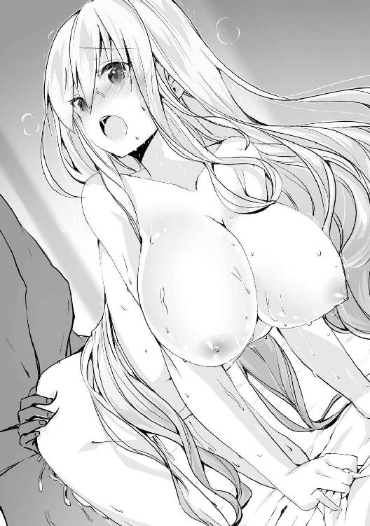
「ひぁああああああ！ そこはちがっ、あぁああああああっ！」
「そこ、ではない。私の親指を飲み込んでしまっているここは、一体何というのだ？」
「し、知りませんっ！ 不浄の穴です、ん、んんっ！」
「違う。抱かれている間は、ここのことは......そうだな、ケツマ○コと呼べ」
どうせ言わせるならば、可能な限り低俗な言葉のほうが興奮する。言葉を告げると共に彼女の膣穴を思い切り突き上げ、同時に親指を曲げて後ろのほうにも刺激を与えてやった。
「あぁあああああっ！ ケツマ○コダメぇえええええええええええ！」
久しぶりに後ろを弄られたせいか、これだけの刺激で簡単に絶頂してしまった。だが俺はもう少し掛かりそうなので、彼女がイッている最中なのも構わずに動くことにした。奥を突くたびに軽く絶頂して膣穴がキュッと締まるのが気持ちよく、夢中で腰を打ち付けてやった。
彼女は何度も絶頂しているせいでグロッキーになっていたが、その甲斐あって俺もようやく二度目の射精へと近付いてきていた。
「ソフィ、出すぞ！」
「あぁああああああああああああ！」
子宮に届くよう奥まで腰を打ち付けて射精する。彼女の子宮口に精液が打ち付けるのを何となく感じながら、最後に彼女の菊蕾に指を二本入れて広げてやったところ、彼女も大きな嬌声を上げながら再び絶頂していた。
腕の力が抜けて倒れた彼女の膣穴から入りきらなかった精液が流れ出してシーツを汚している。絶頂しすぎたせいでこれ以上身体を動かせないようだ。だが彼女の表情は満足したように恍惚の表情を浮かべていたので、やりすぎたということはないだろう。
「ソフィ、これならばきっと私の子を孕んでいるだろう」
「は......はい......」
かすれた声で返事をしてきた彼女を抱きしめてやると、嬉しそうに微笑んだ。彼女の期待に応えるためにも、今度こそ子を孕んでいて欲しいと思う。しばらくそうやって彼女を抱いた後、二人とも色々な体液でベトベトになっていたので、風呂に入って三回戦を始めた。
※
次の日、ソフィの部屋で目覚めると、目の前にニコニコと楽しそうに微笑んでいる彼女の顔があった。どうやら先に起きた彼女に寝顔を見られていたようだ。
「おはようございます、ヤード様」
「ああ、おはよう。起きるのが早いな」
「ええ、昨日はよく眠れましたから......口の中もパサパサでしょう、お茶でもどうでしょうか？」
俺がベッドから起き上がると、彼女は俺から離れてお茶の準備を始めた。今回は普通の物だ。毒が入っている心配はないので、安心して飲むことができる。
ソフィから受け取った茶を飲みながら今後のことを考える。俺が術式を使えなくなったことはまだエルには知られていないだろうが、それも時間の問題だろう。術式を見せないよう引き篭もって発覚を遅らせるのにも限度というものがある。
「どうしたものか......」
「......もしかして、魔法が使えなくなってしまったことでしょうか？」
俺の心の声が口から漏れていたようで、ソフィが心配そうな表情で近寄ってきた。
「まあ、そうだな。仕方のない事故だったとはいえ、回復術式以外に治す方法がないのは辛い」
「でしたら、私がエルマイアさんに直接会って、ヤード様を治せないか聞きます。こうなってしまったのは私のせいでもあるのですから」
ソフィは俺の目をしっかりと見つめながら悲壮感溢れる決意をしてくれた。その心意気は有り難いが、彼女が俺を助けようと動くのは、今のエルにとっては逆効果になるだろう。
エルに回復してもらうのが、一番早い解決法であることは間違いない。それができればの話だが。
「......ん？」
そんなことを考えていると、ふとある考えが頭の中をよぎった。つまるところ、エルに回復術式を使わせればいいのだ。そのためにどんな手段を用いたとしても、だ。例えばエルを倒し、レシアーナのエルフ達がされていたように、術式刻印で強制的に回復術式を発動させてもいい。確かにこの作戦ならば、成功すれば確実に脳を治すことができる。
「ソフィ、感謝する。君のおかげで一つ作戦を思いつくことができた」
「え？ は、はい、ヤード様のお役に立てたのならばよかったです」
突然感謝されて混乱しているソフィを抱きしめて頭を撫でてやると、初めは狼狽えていた彼女も俺に身を預けて気持ちよさそうに撫でられる感触を味わっていた。
さて、茶を飲み終わったら早速エルを迎え撃つ準備を始めようと思う。だがソフィが抱きついていることで彼女の豊かな胸が身体に当たって何とも心地よい感触が伝わってくるので、もう少しだけ彼女に付き合ってあげてもいいだろう。
要塞で対峙した際、エルは確かに何かを渡したと言っていた。俺はそれをリリーが使っていたナイフのことだと思っていたのだが、よく考えると元々捕虜だった彼女は俺に警戒されていて、あの作戦が成功する見込みは薄かった。
そう考えると、エルの言っていたあの女というのはソフィのことで、渡した物はあの毒入り茶葉だったのではないだろうか。ソフィやティアに対しては俺の警戒心も緩む。
あの発言を考えると、作戦の成功をある程度は期待していたように思えるので、成功率の高いソフィのほうを言っていた可能性が高い。確かに遠征に行く前に茶を出されていれば、ほぼ間違いなく俺は茶を飲んで倒れており、エル達は王都まで攻め込めていたかもしれないからな。
つまりエルはあの時点で彼女が俺に茶を出していないことまで理解した可能性が高い。そうなれば俺に異常な執着心を見せるエルのことだ。俺が茶を飲んで倒れる万一の可能性に掛けて、即座に動ける範囲、つまり王都周辺に今も潜伏している可能性が高い。こちらもそれを利用してやる。
※
俺が毒を盛られて昏睡状態になっているという噂は、二日後には王都の一部だけに広がっていた。一気に広めてはエルも警戒するだろうからだ。こんな面倒な広め方に協力してくれたソフィとティア、それとフェアリスには後できちんと感謝の言葉を伝えておくつもりだ。
そんなわけで世間一般では俺は屋敷で療養中ということになっている。実際に術式が使えないので間違いというわけでもない。
俺はエルの襲撃に備えて攻撃用の魔道具を準備し、一日中部屋の中に閉じこもっている生活を送っていた。容態が悪いと嘘をついて数少ない面会も全て拒絶し、できる限り部屋の状況を外部の人間に悟られないようにすることも忘れない。
そろそろ情報を探っている者ならば俺の噂を聞きつけるはずだ。そして俺への面会は全て止められていることで、その噂が本当のことだとも分かる。
そして王都周辺は人の目もそれなりにある。エルのように目立つ外見の者がいれば治安維持に当たっている兵士達へとすぐに伝わるため、長い間潜伏するのは難しいだろう。つまりエルが情報を入手してから、つまり今日から数日の間に襲撃がある可能性が高いということだ。
ある程度罠と分かっても動かざるを得ない状況にするため、エルの次に回復術式に長けているエレインも、お願いして屋敷に留めている。これでエルの行動を誘導できるはずだ。
そう考えた次の日の夜、俺は手が届く位置に魔道具を置いたままベッドに横になっていた。
エルは初日には動かず、様子を見るつもりのようだ。こうなればギリギリまで潜伏している可能性もあるので、今日も襲撃はないのかもしれないと少し油断していると、音を立てないようゆっくりと部屋の窓が開き、そこから目当ての人物であるエルが入ってきた。
「ようやく来たのか、エル」
俺は飛び起きながら攻撃用の術式を放てる魔道具をエルに向けて構えた。だがエルは特に慌てた様子もなく、俺の姿を見て嬉しそうな笑みを浮かべているだけであった。
「起きていたのですね、マスター」
「いつお前が襲撃してくるのか分からないのに、おちおち寝ていられないだろう？」
「起きていようが、寝ていようが、今のマスターには関係ないのではないですか？」
俺が術式を使えなくなっているので、いつもよりも強気な態度を取っているようだ。自分に向けられた魔道具に何の警戒もせずに、自分の勝利を確信したように振る舞っている。
「随分と余裕だな、エル？」
「ふふふ、当然ですよ。マスターはあの毒のせいで術式が使えなくなっているのですから、もう私以上の実力を持った者はいません。それなのに何を警戒するというのですか？」
「その減らず口がいつまで続けられるか、試してやろうか？」
「どうぞ、マスターの気が済むまで」
挑発をするように腕を広げて無防備な体勢を取ったエルに向けて、麻痺と術式封印の魔道具を起動した。どちらも当たれば一瞬で相手を戦闘不能にできるような術式だが、どちらも当たる前に彼女の魔導障壁に弾かれてしまった。
「あははっ、マスター、今の弱すぎる術式は何ですか？ そんな程度で私の障壁は抜けませんよ？」
面白そうに笑いながら微動だにしていないエルに対し、俺のほうは少し焦りが出てきた。
やはり魔石の魔力で発動させているタイプの魔道具では、自分で放つ術式よりも遥かに威力が落ちている。障壁を無視するには彼女の身体に接触しながら放てばいいのだが、それは彼女も分かっているので、簡単に許してはくれないだろう。
そんなことを思っていると、何を思ったのか、エルが自ら近付いてきた。そして自らのアドバンテージを潰すように、俺の構えている魔道具に手を当てた。
「いいですよ、次はこの状態で発動して下さい。先ほどの術式を見た限り、その魔道具では私の術式抵抗を破るほどの威力を出すこともできないと思いますよ？」
挑発をされたので、躊躇わずに二つの魔道具を発動させたが、術式が彼女に効果を及ぼす前に術式抵抗と干渉し合いパキッと氷が割れるような音が響き、こちらの術式は無効化された。彼女の言う通り、この魔道具で彼女に効果を及ぼすには出力不足だったようだ。
「......参ったな」
「だから言ったでしょう？ そこら辺の雑魚魔術師になら十分な威力なのでしょうが、私を倒すにはまるで足りませんよ」
悔しいが彼女の言葉は正しい。この魔道具は本来戦争で捕らえた捕虜に使う予定だった。一つ作るのにも手間がかかりすぎて量産ができなかったので、実際の運用は諦めていたが。
「どうやらそのようだな。まあこの屋敷にはこの魔道具以上の術式を放てる者もいるのだ、まだお前の勝利が決まったわけではないぞ？」
「それはあのハイエルフでしょうか？ 彼女なら来ませんよ。というより、しばらくは誰もマスターの応援には来られません。この屋敷にいる人間は、私が全員眠らせておきましたから」
「以前から随分と俺の周りにいる女性を敵視していたが、殺さなくてよかったのか？」
彼女は俺の質問にキョトンとした表情を浮かべると、次第に口が笑みの形に変わっていき、最後には何がおかしいのか、クスクスと手で口を押さえながら笑い始めた。
「マスター、何故私が殺してやらなくてはいけないのですか？ あの女達はマスターを誑かし、惑わした張本人なのですから、最大限の屈辱を与えた後、マスターの手で殺してあげなくては」
「たとえ私が殺されようとも、彼女達に手を上げるようなことはしないがな」
「いえ、絶対にしてくれますよ。だってマスターはもうすぐ本当の気持ちに気付いて、私だけを見ていてくれるようになるのですから」
彼女は俺に麻痺を掛けて身動きを封じると、ベッドの上に押し倒してきた。目の前に彼女の顔が迫り、口付けをしてくると共に、俺の思考にピンク色の靄がかかってくるような感覚を覚えた。どうやら魅了の術式を受けているようだ。
俺の術式抵抗である程度までは妨害できているのか、こうやって別のことを考えられている時点で完全に効果を発揮しているわけではないようだ。だがこういった洗脳をする類の精神感応系術式は、一部でも効果を発揮させた時点で詰みなのだ。
「マスター、少し抵抗しましたね？ ダメですよ、これはマスターがあの女達の呪縛から解放されるためにやっているのですから。今度は抵抗せずに受け入れて下さいね」
エルの言葉が耳に聞こえるだけでも心地よく感じる。魅了が完全に効果を発揮すれば、俺は彼女以外のことを考える余裕はなくなるだろう。突き飛ばそうにも身体が痺れて力が入らない。その間に彼女は再び俺の唇を奪い、魅了を発動すると、思考に掛かっていた靄が濃くなり、完全に頭の中を塗り潰し、俺は最後に残った意識も手放した。
※
「マスター、気分はどうですか？」
意識が戻ってくると、目の前にはエルの可憐な顔があった。愛嬌のある大きな瞳が俺から片時も視線を逸らさずに見つめているのを見ると、少し気恥ずかしくなってくる。
屋敷から出ていった後はあまりいい生活が送れていなかったのか、子供のようにツルツルだった肌が少し荒れているような気がするし、月の光を浴びて艶やかな光沢を放っている銀髪も、僅かに傷んでいた。そんな様子を見ると自分が彼女にどんな仕打ちをしたのかを強く意識させられた。
「エル、今までお前を蔑ろにしていたこと、本当に済まなかった」
知らなかったとはいえ彼女に求婚をしていたのだ、その責任は取って当然のことだったのに、愚かにも彼女の好意を軽んじていたことは許されることではないだろう。そんな愚かな俺を見捨てずに、俺の目を覚ましてくれたエルの想いは想像もつかないほどだ。
「マスター、いいのですよ。悪いのは全部マスターを誑かした女達なのですから。マスターの優しさに付け込んで媚を売り、純情なマスターを身体で誘惑した卑怯者達に、マスターが騙されてしまうのも仕方のないことです」
エルは俺の裏切りを寛大な態度で許してくれるようだ。普通の女性ならばまず見捨てているだろうにもかかわらず、俺を変わらず受け入れてくれる彼女の愛情には頭が上がらない。
どうしたら彼女の想いに報いることができるだろうか。生半可なことでは返しきれないほどの恩義に俺が悩んでいると、彼女は徐に俺を抱きしめてきた。
「マスター、そんなに悩まなくてもいいのです。私はマスターが傍にいてくれるだけで幸せですから、無理にお礼をしてもらおうなんて考えていませんよ」
「だが、それでは......」
「ではあの女達に騙された分以上に愛して下さい。それで全て忘れることにします」
「......ああ、済まないな」
彼女へお礼をするつもりなのに、逆に気を使わせてしまっては本末転倒なので、素直に彼女の提案を受け入れることにした。きっと本心ではもっと俺に言いたいことがあると思うが、それを押し殺してまで妥協案を示してくれたのだ。その分彼女を可愛がってやらなくては。
彼女と見つめ合い、自然と顔が近付いていく。そしてその可憐な唇に吸い寄せられるように口付けた。彼女が舌を入れてきたので、それに舌を絡めてお互い貪り合うように激しく求め合い、彼女を抱きしめながらお互いの境界がなくなるような錯覚を感じるほどに彼女の口付けを堪能した。
「マスターは積極的ですね、こんな情熱的な口付けをしてくれるなんて思いませんでした」
「喜んでくれたようだな。他にして欲しいことはあるか？ お前の望みなら何でも叶えてやるぞ」
「そうですか？ では、マスターに抱いてもらいたいです......」
恥ずかしそうに顔を赤く染めながら話す彼女の姿を見て、自分が求められている幸せと彼女を抱けるという幸福に、圧倒的な興奮が押し寄せて、今にも彼女を押し倒したくなる。だが彼女はまだ俺に遠慮して、自分の本心を話せていないような感があった。
「エル、遠慮は無用だ。今は全ての立場を忘れて、お前が望んでいたままのことを伝えてくれ」
「では、あの......ま、マスターのお嫁さんになって、マスターの子供が欲しいです」
「なんだ、そんなことか。お前に求婚した私のほうから頼むべきことだったのだがな」
「マスター......嬉しいです」
真っ赤になった頬を押さえて恥ずかしそうに顔を逸らしながらの言葉に応えるように、俺は彼女を再び抱きしめてやった。そして瞳を潤ませている彼女をベッドに寝かせると、首筋に優しくキスをしてやる。口を付けるたびに甘い声を出す彼女に応えるように、思いをぶつけるように何度も口付けをしてやる。
「エル......愛しているぞ」
「私もです、マスター......」
彼女は上半身を起こして服を脱ぎ始めたので、それを見た俺も服を脱ぎ始めた。
下着を脱いだ彼女の身体を見ると、そのあまりの美しさに息を飲んだ。芸術的とも言える褐色の肌は僅かに紅潮しており、興奮のためか僅かに汗が滲んでいる。窓から差し込む月光が、彼女の健康的な身体を淡く照らし、幼い姿に似合わない妖艶さを醸し出していた。
手にちょうど収まりそうな胸の大きさも、細い体つきのわりにくびれもある腰つきも、丸みを帯びた尻の形も、全てが誘惑してくるような色気を放っており、今にでも飛び掛かってしまいそうだ。
ベッドに横になり、彼女の尻がこちらの頭に来るように四つん這いにさせた。彼女の股間は少女のように毛一本ない綺麗な肌をしているために隠すものが何もなく、割れ目が丸見えとなっていた。
彼女は俺の視線を感じたのか、恥ずかしそうに身体を揺らしているが、吸い付きたくなるような秘裂を目の前で振られては、俺を誘っているような動きにしか見えなかった。
「マスター、ご奉仕させてもらいますね。ん......」
肉棒に彼女の熱い吐息が当たったかと思うと、彼女の舌が触れた。彼女は初めてにもかかわらず、まるで娼婦のように舌を蠢かせ、肉棒の隅々までを舐め上げている。時に口の中に入れて唇を使って扱き、また時には陰嚢を揉んで刺激してくる。
あまりの快楽にすぐに出そうになるが、何とか堪えて彼女の股間へと顔を埋める。発情した女の匂いがいっぱいに広がり、肉棒がさらに硬くなる。
「んっ！ マスター、そこ気持ちいいですっ！」
クリトリスを舐めてやると少し奉仕の動きが鈍くなった。感じてくれているのは分かったので、そこを集中的に攻めてやる。舌で押し潰し、弾くように舐め、時には軽く吸ってやる。
彼女はこちらの舌の動きに合わせて同じタイミングで肉棒を刺激してきた。そんなことをされては彼女と一体感を感じて、さらに彼女を喜ばせたいという欲求が湧いてきてしまう。
指でクリトリスを弄りつつ、彼女の割れ目に舌を差込み、出てくる愛液を舐め取ってやる。他の女の物を舐めたときにはあまりいいものではなかったが、彼女の愛液はまるで甘露のように甘く感じる。彼女の匂いも強く香ってくるので、一滴も漏らさないように舐め取ってやった。
彼女は恥ずかしがると思ったのだが、肉棒の先端から出ている汁を舐めるのに夢中らしく、幼子のように吸い付いて飲むだけでなく、舌を鈴口に入れてもっとねだるように動かしてきた。
こうやって二人の体液をお互いの身体の中に入れているのを思うと、まるで彼女と一体となった気分となり、興奮が高まってくる。そのまま口をベタベタに汚して、お互いの性器を舐め合った。
そうしているうちにエルが時折腰を跳ね上げるようになってきた。どうやら感じ始めているようだ。俺の肉棒も彼女の奉仕を受けて十分に硬くなっているので、そろそろ頃合いだろう。彼女の顔に目を向けると、彼女もちょうどこちらを振り返ってきた。彼女もそろそろだと感じたようだ。
「マスター、もう我慢が......」
「ああ、分かった」
発情した瞳で俺を見つめてきた彼女をベッドに寝かせ、彼女の膣穴に肉棒を当てた。彼女はこちらを安心させるように微笑んでいるが、無理をしていないかと心配になる。
「マスター、私は大丈夫ですから......」
彼女はこちらの心を見透かすように声を掛けてきた。言葉を交わさなくても彼女と心が通じているのを感じ、俺の肉棒が精神的な高揚でさらに硬さを増していた。
「エル、入れるぞ」
「はい、私の初めて、もらって下さい......あぅっ！」
ゆっくりと彼女の膣穴に肉棒を沈めていく。彼女は体格的にルーシアと似たようなものなので膣の中も狭く、スムーズな挿入はできずに膣肉を割り開いていくような抵抗を感じた。中は十分に濡れているが、それでも彼女には結構な痛みが襲っているだろう。
心の中で謝りつつ腰を進めていくと、何かを押し上げるような感覚があった。これが処女膜だろう。彼女の顔を見てみると、痛みを堪えながらも俺に笑いかけ頷いてくれた。
俺を信頼してくれている彼女の期待に応えるべく、腰に力を入れて勢いよく突き入れると、膜を破るような感覚がした。同時に膣内が痛みでキュッと締まり、俺の肉棒にかなりの負荷がきた。
痛みを堪えている彼女に気遣って一時腰の動きを止めてやる。彼女は他の女性よりも膣が狭く感じるので、肉棒が入っていくだけでもかなり苦しいと思われる。痛みで顔を顰めながらも、深呼吸をしてそれを紛らわそうとしている彼女の頭を撫でてやると、少しだけ表情が和らいだ。
「......もう大丈夫です。動いてもらっていいですよ」
「そうか、辛かったら言ってくれ。お前に無理をさせる気はない」
「いえ、私なら大丈夫です。それにマスターと繋がっているだけで幸せですから」
痛みを堪えながらも微笑んでいる彼女が愛おしくなり、勢いに任せて口付けをする。全身が触れ合っている感覚が心地いい。俺の舌が彼女の舌に当たるたび、彼女の膣内が締め付けを強くする。その反応をもっとさせたくて、彼女を抱きしめながら存分に口付けを楽しんだ。
そして口付けを堪能した後、ゆっくりと腰を動かしてみるが、先ほどよりも抵抗が減っており、彼女もあまり痛みを感じていないようだった。先ほどの口付けで少しリラックスできたのだろうと思い、少し速度を上げてみたが、彼女の顔に浮かんでいるのは痛みではなく快楽の表情だった。
「初めては、痛いと思ってましたけど、んっ、気持ちいいですっ！」
「そうか、それは幸いだ」
彼女はこれが初めてなのに、膣内はもう男の物を搾り取るような動きを見せている。今まで感じたことのない名器の味に酔いしれ、彼女をきつく抱きしめながら激しく腰を突き込んでいった。
彼女は俺の荒々しい動きでも感じてくれているようで、舌を突き出して快楽に喘いでいる。快楽に蕩けた彼女の表情を見て、思わず舌にしゃぶりつき、口で彼女の舌を扱いてやる。
荒い息遣いを感じながら、彼女と一つになって一心不乱に腰を振る。彼女と擦れ合った肌さえも感じるようになり、お互いの全身を絡め合うように抱き合い、全身で快楽を貪った。
彼女も子作りの準備ができたのか、子宮が降りてきており、子宮口に先端が当たっているのを感じる。それに応えるように彼女の中も肉棒を締め付け、奥へと導くような動きを見せていた。
「くっ、エル、もうそろそろ限界だ！」
「はいっ、私もっ、あんっ！ 私ももうイキそうですっ！」
「出すぞ！ お前の中に私の子種を注ぎ込んで孕ませてやる！」
「来て、マスターの子種で私の中をいっぱいにして、妊娠させてぇ！」
彼女の奥に突き込んで思い切り射精する。ドクドクと濃い精液が彼女の膣内を満たしていくのを感じながら、彼女の搾り取るような膣の蠕動を味わっている。
不意に下腹部に温かいものを感じたのでそちらを見てみると、彼女が漏らしていた。絶頂で漏らしてしまったのだろう。当然彼女も粗相をしたことに気付いて、恥ずかしそうに顔を押さえている。
「やぁ、マスター、見ないで下さい......」
「粗相をしてしまうほど感じてくれたということだろう？ 私は全く気にしていないぞ？」
その言葉は本心だ。感じてくれていたことに嬉しさは感じるが、全く嫌悪感は覚えない。
絶頂の余韻に浸っている彼女を抱きしめて、彼女の身体を撫でる。汗で湿った艶やかな肌はまるで絹のような滑らかさを持っており、撫でているだけで興奮を煽ってくる。
「マスターの手、温かいです......んん......」
彼女の肌を撫でていると、絶頂したばかりで敏感な彼女の肌が紅潮し、褐色の肌に僅かな赤みを帯びてきた。そして気持ちよさそうな息を吐きながら時折甘い声を上げて俺を誘ってくる彼女の様子に、出したばかりの肉棒にまた血が滾ってくるのを感じる。
「あ、マスターの、ちょっと跳ねましたね」
「エルの身体が魅力的だからな」
「もう、仕方ないですね。ちょっと待ってて下さい」
彼女は身体を起こし、いそいそと俺の下半身のほうへと移動した。そして肉棒を優しく掴むと、まだ彼女と俺の体液で汚れているそれを躊躇いなく口に咥えた。
「ん......ふっ......」
彼女の小さな口を限界まで広げて肉棒を咥え込むと、舌を絡めながらゆっくりと唇を使って肉棒に付いた汚れを舐め取り始めた。最初に奥まで突き入れすぎたせいか、喉に当たって顔を顰めていたが、それ以降は特に問題もなく全てを舐め取り、口を離した後にそれを飲み込んだ。
「......マスターの味がしますね。雄臭くて、でももっと欲しくなるような味です」
口を開けて全部飲み込んだことを見せつけてきた。彼女の破瓜の血なども付いていたと思うが、それも気にならなかったようだ。
「そうか。お前にばかり奉仕させて済まないな。代わりに何かして欲しいことはあるか？」
「いえ、これは私が望んだことですから。マスターが他の女とやったことは全てやってあげたいのです。その後に私以外の記憶を消せば、女達に触られた忌まわしい記憶も消えるでしょう？」
「ああ、なるほど。お前がそう言うのならば、私に異存はない」
彼女と体験することで以前の体験を上書きしようということだろう。俺としても彼女の記憶以外は無用の長物だ。二人とも気持ちよくなれる上に、いらない記憶を消しても後々矛盾が生じにくい彼女の提案はとても素晴らしいものだと思う。
「ではマスター、他にどんなことをされたのですか？」
「そうだな、後ろを使ったり、胸を使ったりした記憶があるな」
「う、後ろですか......それはまた今度にしましょうか。そっちは準備してきていませんから。それよりも胸ですね。どんな感じだったのでしょうか？」
「谷間に挟んで扱くことが一番多かったと思うが」
「谷間ですか......」
俺の言葉を聞いたエルは、自分の胸を見下ろしながら谷間を作るように寄せ上げている。身長の割にはそれなりに胸のある彼女だが、流石に俺の肉棒を包み込むだけの大きさはない。
彼女よりも小さい胸で奉仕されたことがある俺としては、別に谷間が作れなくても彼女の胸で擦られるだけで気持ちよくなれると思うのだが、彼女は挟み込めるほどの大きさがなければ駄目だと思っているようだ。
「エル、私は胸の大きさなど気にしな......」
彼女へ俺の気持ちを言い終わる前に、彼女に突き飛ばされてベッドの上で仰向けになり、その上にエルが乗ってきた。そのせいで彼女の秘肉が当たるプニプニと柔らかい感触が俺の下半身から伝わってきて、彼女の股間を押し上げるように肉棒がそそり勃ってしまった。
「マスター、子供を作れば胸も大きくなります！ ですからもっと子作りに励みましょう！」
「あ、ああ、そうだな」
割と負けず嫌いのエルは、挟み込めない胸で妥協するよりも、もっと大きくした後で挑戦することを選んだようだ。そうと分かれば、俺も積極的に協力しようと思う。
騎乗位は慣れていないと入れるのが上手くいかない可能性もあるので、先ほどの奉仕からまだ硬さを失っていない肉棒を彼女の秘裂に当て、少しだけ中へと沈めておく。こうすれば彼女が腰を下ろすだけで肉棒を奥まで入れることが可能だろう。
「行きますよ、マスター」
彼女がゆっくりと腰を下ろしていくと、今度は先ほどよりもスムーズに肉棒が入っていった。彼女の顔にも苦痛の色は見えず、純粋に快感だけを味わうことができているようだ。
腰を全て下ろし切る前に肉棒の先端が子宮口に当たっていたが、それよりもさらに腰を下ろして自らの意思で子宮口を押し上げると、腰を前後左右に動かして気持ちのいい場所を探していた。
先ほどよりは抵抗がないといっても膣内の締め付けはかなり強く、自分の意思で動きを止められないこともあって、すぐに快感で射精しそうになってしまう。
「エル、もう少しゆっくり......」
「ふふ、我慢しなくていいですよ。いっぱい私の中に出して下さい！」
俺の言葉を聞いたエルは、妖艶な微笑みを浮かべると、さらに腰の動きを速くしてきた。先ほどまで処女だったとは思えないほどに激しい腰遣いに翻弄され、俺の我慢の限界はすぐに訪れそうになってしまっていた。
「エル、これではすぐ出てしまう、ぐっ！」
「出して！ いっぱい出して、孕ませてぇ！」
余裕のなくなった俺の表情を見て、エルは何かのスイッチが入ったように豹変していた。俺の言葉など一切無視しているかのように自分のペースで腰を振ってくるせいで、暴力的な快感が俺を襲ってくる。もはや俺の我慢は限界だった。
エルは興奮のあまり、無意識で魅了を使っているようだった。おかげで俺の思考は媚薬を飲んだようにエルと繋がることだけしか考えられないようになっていた。
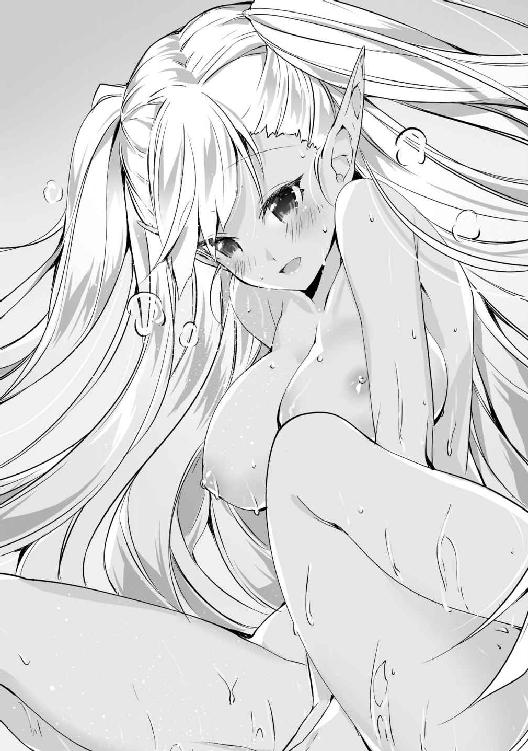
「くぅっ！ もうダメだ、出すぞ！」
「はいっ！ いっぱい出してぇ！ あ、はあぁああああああああん！」
最後に彼女が叩きつけるように思い切り腰を下ろし、その快感でとうとう射精してしまった。先ほどと変わらないくらいに大量の精液が彼女の中へと注がれ、恍惚の表情を浮かべていた。そんな彼女の顔を見ていると、まだ射精途中だというのに彼女が再び腰を動かし始めた。
「エル、何を......」
「これで終わりではないですよね、マスター？」
エルはまだまだ足りないと言わんばかりの表情で俺を見つめながら、彼女の膣内で精液を搾り取るように肉棒を締め付けていた。
かなり限界に近いのだが、彼女が望んでいるのだ。エルが求め続けている限り、俺が倒れるわけにはいかない。体力的には厳しいが、そこは精神力で補うことにして、俺は射精途中だというのに、エルと三回戦を始めることとなった。
そしてその後、彼女の求めに応じて数え切れないほど射精をした。だが体力はエルが術式で回復してくれたおかげで朝までやっていたというのに、まだまだ続けられるほどだ。
エルは自前で体力を回復できなかったのだが、まるで俺の体力を吸い取っていたかと思うほどにツヤツヤとした肌になっている。満足してくれたようで何よりだ。
そんな俺とエルだが、今は小休止を取っている。体力的にはまだ余裕だが、失った水分の補給などは必要だからだ。そしてエルは自分で出した水を飲み終わり、すぐに俺のほうを向いてきた。
だが再戦の合図かと思った俺がベッドに上がろうとしたところで、彼女に腕を掴まれた。そして俺に着替えを渡すと、彼女も自分の服を着始めた。
「マスター。そろそろ眠らせていた屋敷の連中を始末しにいきましょう」
「他の人間など放っておいていいだろう？ そんなことよりも私はお前を抱いていたいのだが」
「その気持ちは嬉しいですが、そろそろ睡眠が解けるかもしれません。一斉に起き出して騒がれるよりは、一人一人確実に殺しておいたほうがいいと思いますよ？」
「まあ、お前がそう言うのならば」
正直屋敷の連中などどうでもいいのだが、彼女に少しでも害を与えるかもしれないのならば、殺しておく必要があるだろう。当然彼女の手を汚すわけにはいかないので、全て俺がやるつもりだ。
俺は着替えた後、部屋にあった短剣を取ったのだが、それを見てエルが不思議そうな顔をした。
「マスター、何故その短剣を？」
「ん？ 殺すには得物が必要だろう？」
「あ、そういえばマスターの回復をするのを忘れていましたね。ちょっとしゃがんで下さい」
エルは毒で破壊された脳の一部を回復してくれるようだ。彼女を傷つけたような術式はもう使えなくてもよかったのだが、彼女はそれすらも広い心で許してくれていたようだ。今まで彼女にしたことを考えると、一生許されなくても当然なくらいだというのに。
俺がその場にしゃがみ込むと、彼女は俺の頭に手を当てて上級治癒を発動し、彼女の手から放たれた光が頭を包み込み、俺の脳が回復されていくのが実感できた。
「これで治ったはずです。どうでしょうか？」
試しに魔導障壁を展開してみると、魔力の制御は問題なく行うことができ、俺の周囲にいつもの障壁が展開された。これで術式発動能力は完全に戻ったことが分かる。
「問題ないようだ。お前を傷つけるような物はもう使えなくていいと思っていたのだが」
「そんなことは言わないで下さい、マスター。私はマスターと一緒に術式を極めたいのですから、術式を使えなくなってしまっては困ります」
「そうか、そうだったな。本当に気が利かなくて済まない」
謝罪代わりに彼女を抱いてやると、嬉しそうに身体を預けてきた。服越しでも彼女の体温が伝わってきて、俺の物が自重せずに硬くなってしまう。
「もう、マスター。続きはまた後ですよ」
「お前を抱きしめれば、こうなってしまうのは仕方がないだろう？」
既に服を着てしまってはいたが、もう一回くらいならばできるのではないかと考えていると、不意に俺の頭の中で声が聞こえたような気がして、そちらに意識を集中させた。
（『......構成の修復を確認しました。現在対象は精神感応系術式の影響下にある可能性が非常に高いと判断されます。第七種精神感応系術式、覚醒の発動を承認します』）
これは自動発動するように設定してある覚醒の術式だ。特に術式の影響は受けていないと思うが、何かのエラーだろうか。そう考えている間に覚醒の術式が発動し、俺の精神に影響を与えていた効果が全て消え、俺はいつもの思考を取り戻した。
※
「マスター、どうしたんですか？」
エルを抱きしめたまま動きを止めていた俺の様子を心配した彼女が、そう声を掛けてきた。
「ああ、いや、何でもない。少し別のことを考えていただけだ」
意識を取り戻した俺は、そのまま彼女を抱きしめることにした。まるで子供のような華奢な身体は、もう少し力を込めれば折れてしまいそうだ。魔術師として高みを目指すのならば、もう少し身体を鍛えたほうがいいな。これでは戦略級術式の反動に耐えられないかもしれない。
「マスター、早くしないとあの女達が起きてしまうかもしれませんよ？」
「はは、そう急がなくてもいいだろう？ もう少しこうやってお前を抱いていたい」
「もう、もう少しだけですよ？」
俺の言葉に呆れたようにため息を吐きながらも、嬉しそうな顔をして俺を抱きしめ返してきた。
こうして間近で彼女の顔を見ると、美人揃いの屋敷の女性陣にも全く引けを取らない美少女であることが分かる。人前ではいつも澄ました態度をとってはいるが、こうやって俺と二人でいるときは喜怒哀楽の変化が激しい。それだけ心を許してくれているのは素直に嬉しいと思う。
だが彼女には悪いが、今は彼女の要望を聞いてやれるような状況ではない。俺は彼女を抱きしめたまま、彼女に見えないように手を動かし、第五種精神感応系術式である術式封印を彼女に対して発動した。
「っ！」
術式を使われたことをすぐに気付いた彼女は、俺を突き飛ばして後ろに飛び退いた。だがもう遅い。接触状態で発動したことで術式封印は彼女の術式抵抗を難なく突破し、彼女の術式発動能力を完全に封じることに成功していた。
「さて、今度はお前が術式を封じられたわけだが、この後はどうするつもりだ？」
「マスター、一体どうしたんですか？ 冗談にしては度が過ぎていますよ？」
「ああ、お前には伝えていなかったかもしれないが、私は不測の事態に備えいくつかの術式を自動発動するようにしているのだ。今は洗脳系の術式対策に仕込んだ覚醒が発動したおかげで、こうやって魅了の影響下から抜け出せたわけだ」
「あ、もしかして......マスターはそういう趣味があるんですね？ ふふ、いいですよ。この後はどうすればいいでしょうか？ 私が追い詰められる役ですよね？」
「現実は直視したほうがいいぞ？」
彼女は俺の意識が回復したことが信じられないようだ。そのおかげでまるで会話が噛み合っていないが、俺が言いたいことは大体伝えておいたから問題ない。
ショックを受けている彼女は隙だらけだったので、ついでに麻痺を放って動きを封じておいた。術式封印を掛けられている今の彼女は、術式抵抗すら一般人以下になっているため、どんな術式でも掛け放題だ。
「本格的ですね。私は叫べばいいんでしょうか？ あ、抵抗はしたほうがいいですか？」
「エル、お前は最後の詰めを誤った。自分よりも格上の相手を手玉にとったことで、己の術式を過信してしまったのだ。それがどんなに些細なミスだったとしても、勝敗を分けるには十分だ」
「何を言ってるのか分かりませんよ。それより早く続きをしましょう？ 服は破ってもいいですが、ちゃんと着替えは用意して下さいね」
彼女は俺の言葉に全く耳を貸そうとしない。試しに解呪を使ったが、全く意味はなかった。あまりにあっけない逆転劇に現実を直視できなくなったようだ。こうなってはもはや術式で治療できる範疇にない。狂った精神は今の俺では治すことができないのだ。元々は優秀だっただけに、彼女がこうなってしまったのは残念だ。
「どうしたんですか、マスター？ 今なら襲い放題ですよ？ 私、演技には自信がありますから、期待してくれていいですよ」
足に力が入らなくなってその場に倒れた彼女に近付き、先ほど取っておいた短剣の先端を彼女の心臓辺りに合わせる。ここまでしても彼女は遊びの一環だとでも思っているようで、全く動じていないどころか、不思議そうな目で俺のことを見ていた。
「あの、マスター......それは流石に死んじゃいますよ？」
「何か問題があるのか？」
「あ、なるほど。後で生き返らせてくれるんですね。蘇生まで使うなんて、本格的ですね。でも大丈夫です。マスターがどんな趣味を持っていても、私が全て受け入れてあげますから」
「いや、もちろん殺すつもりだ。蘇生も使うことはないぞ？」
「あはは、流石に冗談ですよね？ まだ私、不死使えないんですから、回復してもらわないとそのまま死んでしまいますよ？」
一向に状況を理解しない彼女に分からせるため、すぐ傍に剣を振り下ろした。刃が彼女の頬を浅く切って地面にぶつかり高い金属音を鳴らし、直後に傷口から血が流れた。
「ま、マスター......？ どうしちゃったんですか？ 私のことが嫌いになったんですか？」
「どうもしていない。どうかしているのは初めからお前だけだ、エル」
「何か気に障ることでもありましたか？ もしかしてさっきマスターの言葉を聞かずに、何回も出させてしまったからですか？」
「エル、お前の精神は壊れていて、そしてもう治すことはできないのだ」
「壊れてなんていませんよ？ 私はマスターに告白してもらったときから、変わらずにマスターを愛していますから。それにマスターもさっき愛していると言ってくれましたよね？」
「ああ、愛しているぞ。弟子としてだがな」
「え？」
完全に動きの止まったエルを見ながら、剣を下ろして彼女の傍に座った。彼女は信じられないものを見るような目でこちらを見てくるが、構わず話を続ける。
「私個人としては、裏切ったお前を助けても構わないと思っている。相応の償いは受けてもらうが、私にも責任の一端があったと考えているからだ。しかし私が許しても、魔帝国の手引きをしてレシアーナや要塞にいた者達を殺し、王国を裏切った事実は変わらない。お前は既に反逆者なのだ」
「違います。私はマスターを助けようとしただけですよ？ だってマスターを誑かした女達が全部悪いんじゃないですか。そんなことをしなければ、私だって要塞を襲ったりしませんでした」
「違わない。要塞の兵は全滅し、レシアーナも多数のエルフを失った。この王国内にお前の居場所はない。そして俺は屋敷の者達のためにも、お前を匿うような危険は冒せない」
「ですから一緒に王国を出ましょう？ 王国から離れた遠い地で一緒に暮らしましょう」
「残念だが、私は既にソフィを娶った身であり、ティアやナタリアもいずれは妻になる。彼女達を捨ててまで、お前を選ぶことはない」
ソフィ達の名前を聞いた瞬間、彼女の表情が怒りに満ちたものへと変わり、激しく暴れ始めた。
「何で、そんな奴らは放っておけばいいじゃありませんか！」
「私はお前の物ではない。お前か彼女達かを選べと言われれば、当然彼女達を選ぶ」
「違う、違う違う、違う違う違う違う違う違うっ！」
「お前が裏切ってしまったのは残念なことだ。今度の弟子は目の届く位置に置いておくとしよう」
「違う違う違う違う違う違う違う違う！」
俺の言葉が耳に入っていないのか、ずっと同じ言葉を発している。彼女はもう少し精神力があると思っていたのだが、今の彼女の様子を見て残念に思う。もう少し気遣ってやるべきだったのかもしれないが、こうなってしまっては仕方がないのだ。
俺は剣を掴んで立ち上がり、いくつかの身体強化術式を掛ける。せめて痛みはないように殺してやろう。剣にも掛けた強化術式の影響で、剣自体が淡く光っていた。俺が何をしようとしているか彼女にも理解できたようで、恐怖で顔を歪ませながら必死に首を振っていた。
「さて、遺言があるなら聞いてやるが、何かあるか？」
「マスター、二度とこんなことはしませんから！ 一生マスターに尽くしますから、どうか......」
「気付くのが遅かったようだな。もはや全て手遅れだ」
「っ！ な、何故私を選んでくれないのですか!? 誰よりもマスターを愛しているのに！」
「......それが遺言か？」
「あの女達ですか!? あいつらがいなくなれば私だけを見てもらえたのですか!?」
「ふむ、どうだろうな。一つ言えるのは、ソフィやティアがいなければ、お前をあの場所で拾うこともなかったかもしれないということだな」
「っ！ お慕いしています、マスター！ あんな女達などに義理立てして、マスターの偉大さを一欠片も理解しようとしない王国に尽くすよりも、私と共に逃げて下さい！ 私ならばマスターの魔導技術がどれほど素晴らしい物なのか、はっきりと分かってあげられますから！」
「エル、お前は確かにいい弟子だった。私の忠告を守らないことはあったが、お前ほど熱心に私の教えを聞いていた者はいなかっただろう。だがそれももう終わりだ」
「嫌です、マスター！」
ほとんど動けない身体でそれでも必死に声を上げる姿を見ながら、彼女の首に剣を振り下ろした。音速以上で振るわれた剣は彼女の首を一振りで切り飛ばして絶命させた。数瞬後、切られた首から大量の血が噴出し、辺りを赤色に染め上げた。
血に塗れた彼女の生首を拾い上げてみると、とても安らかとは言い難い表情だった。死ぬ直前まであんなことを言っていたのだから当然なのかもしれない。
「済まないな。これも運命だと思って諦めてくれ」
エルの目を閉じさせた後、俺は再び彼女の首を繋げ、断ち切られた痕を回復術式で消してやった。せめて遺体は綺麗な姿のほうがいいだろう。
全てが終わった俺は、部屋の惨状はひとまず置いておくことにして、まずは眠らされている屋敷の人間達を起こしに行くことにした。
※
エルの遺体はマルガレーテによる死亡確認を受けた後、彼女が魔帝国に繋がっていたという事実は全て伏せられることになったので、墓を作って入れてやった。関係者以外にはあまり死因を公表できないので、ほとんど俺の身内だけで済ませた。仲がよかったフェアリスなどが酷く泣いて悲しんでいるのを見て、俺も罪悪感を覚えた。
それからしばらくして、辺境伯領から皇帝やその他北部連合に所属していた貴族達が王都に送られてきたという知らせが入ってきた。オーヴァン達が敗れたせいか、やけに大人しくしていたそうだが、王都に連れてこられた際には全く被害の出ていない王都を見て悔しそうな表情をしていたと聞いている。
前線に兵力を集中してガラ空きだった王都ならば、要塞に送った戦力で十分に落とせた可能性があった。それなのに要塞以外は全く無傷だった王国の様子は、奴らに残っていた僅かな希望を破壊するには十分なものだったのだろう。
皇帝や貴族達の処刑はすぐに行われた。処刑場所に輸送するまでは王都中を回って王国民にその惨めな姿を晒し、衆人環視の中で一人ずつ処刑台へと上がっていき、執行人が斧で首を切っていった。
次々と処刑されていく貴族達の中には、レシアーナにいた魔術師達の姿もまじっていた。彼らは俺に死体を回収された後、蘇生により生き返り、拷問により情報を全て吐き出させた後、殺された兵士達の親族や同僚に私刑を受け、惨めな死を迎えていた。
最後に皇帝の首が刎ねられると、見守っていた人間達はわっと歓声を上げ、戦争が終わったことを喜んでいた。中には家族を失って悲しんでいる者もいたが、その日は王都中が祭りのように騒がしかった。
そしてその後、俺達は城へと呼ばれた。魔帝国を倒すという俺達の召喚された目的を全て達成したからだろう。いつもの謁見の間で周りの貴族達に見られながら、国王から勇者一人一人に感謝の言葉を伝えられている。
「ウェルナー伯爵、此度の魔帝国との戦い、真に大儀であった。貴殿も素晴らしき活躍をしたそうだな。その叡智と魔法の才をもってこれからも王国のために尽くしてくれ」
「了解した」
正直なところ、やっと使命から解放されたのだから、これからは自分のことを優先的にやりたい。もちろんこんな場でそんな発言はできないので、空気を読んだ発言にしておいたのだが。周りの貴族達が拍手を送る中、他の勇者達も嬉しそうにしている。
アレクやフェアリスはもちろんのこと、元の世界に未練がありそうだったサガミもここの世界に骨を埋めるようだ。とっくの昔に元の世界には帰らなくてもいいと判断していた俺だが、サガミの気持ちは分からないでもない。
これでようやく勇者の役目も終わったのだと思うと、ここに来てから起こった出来事が思い出される。来た当初はまさかこんなことになるとは考えてもいなかったが、来た当初の意気込みも今となっては懐かしいと思ったのだった。
魔帝国の領土は、希少な鉱石や特産品などが採れる土地を王の直轄領に、その他の土地を既存の貴族達や新たに任命された貴族に分け与えられた。
グラン家は魔帝国時代の所領を削られはしたものの、伯爵位として新たに王国貴族の仲間入りを果たし、オリンピアの弟が当主となっていた。そして彼女自身は今も宣言通りグラン家を出て俺の屋敷でメイドとして働いている。
エヴァーツ親子は当主であるエヴァーツ侯爵の処刑によって貴族としての地位を全て失い、オリンピアと同じくメイドとして屋敷で働いている。
四人とも元は貴族なのでメイドのような重労働ができるかどうか心配だったのだが、俺の予想以上に早くこの屋敷に馴染んでくれたようだ。
アレクやサガミはしばらくして貴族の娘と結婚をし、二人とも王国軍で働いている。領地経営のほうは、俺と同じく代理の者に任せているそうだ。フェアリスは相変わらず教会で働いている。異端審問庁からは何度か誘いが来ていたらしいが、荒事は苦手なのだと全て断っているらしい。そしてエルがいなくなった今でも、足繁く屋敷に通ってきている。
俺は今も王都の屋敷に留まり、国王からもらった領地の経営は他人に任せてソフィ達と自堕落な生活を続けていた。貯金は領地からの税金と魔石を売って得た利益で豊富にあるので、今のところ金に困ったということはない。
毎日実験に明け暮れている様は、まるで昔の研究室に缶詰だった頃を思い出すが、昔と違うのは自分の好きな研究ができるという点だ。
仕事を全くしないのも世間体が悪いので、月に何度か城の魔術師達に訓練をつけてやっているが、エルほど頭がよくない奴らばかりなので、教えるのにも多大な労力が掛かるのだ。
そんな中、新しい弟子を迎えることにした。今日は記念すべき初日だ。
「今日は新しいお弟子さんが来るそうですね。どんな方なのですか？」
天気がよかったので、ソフィに誘われて庭でお茶を嗜んでいたのだが、その席で彼女にそう尋ねられた。一緒に茶を飲んでいるナタリアや、お茶の準備をしているティアやオリンピアも興味があるようで、準備をしながらもこちらの会話に耳を立てていた。
「一言で言うなら間が抜けている奴だ」
「何それ？ そんな人を弟子にして大丈夫なの？」
「なに、会えば分かる」
「そうですか、楽しみですね」
そんな他愛ない話をしていると、一人の人物がこちらへと走り寄ってくるのが見えた。約束の時間はとうに過ぎているので、部屋から急いで来たのだろう。皆は近付いてくる人影に心当たりがあるせいか、彼女の姿を見て驚愕に目を見開いていた。
「済みません、遅れました！」
「そんなことより、皆に挨拶をしろ」
「はい！ 初めまして！ 今日からマスターの弟子になります、メルと申します！」
彼女は小柄な身長に幼い顔立ち、少しクセの付いた銀の髪に、相変わらず露出度の高い服を着ている。本当にエルにそっくりな顔でそう挨拶する彼女を見て、皆一斉に俺の顔を見つめてきた。
「ちょっと、ヤード！ エルは死んだはずじゃ......」
「エルは死んだ。こいつは......そうだな、そっくりさんだ。魔導技術までそっくりだがな」
「何の話でしょうか、マスター？」
「いや、お前には関係のないことだ。それよりもメル、これから弟子として励んでくれよ」
「はい！」
何か言いたそうな全員を放っておいて、ティアに彼女の分のお茶を用意するように伝える。
実はエルを倒した後、彼女の脳だけを抜き取って保存しておいた。脳が抜けた後の身体をマルガレーテに見せたおかげで、彼女も何の疑問も抱くことなくエルの死亡を認めてくれた。その後エルの脳に対して完全復活を掛け、再び肉体を治してやったのだ。
さらに彼女がエルマイアだったときの記憶は全て消している。日々の生活から魔導技術に関する知識まで、人格にあまり影響のない部分は残っているが、思い出は一切残っていない。つまりここにいる彼女は、エルとは全くの別人である。
何故か俺が簡単にエルを手放すと思われていたようだが、彼女ほどの実力者をそのまま捨てるわけがない。これからも俺の実験のために努力してもらわなくてはな。
どんな顔をしていいのか分からない面々に元気よく挨拶している弟子の姿でも眺めながら、俺はティアの淹れてくれた茶の味を楽しむことにした。
ＥＮＤ
ご主人様がお屋敷を購入なされてしばらくの時が経ちました。貴族の方々の中には、ご主人様が伯爵になった今でも準男爵の際に買ったお屋敷を使っていることに疑問を持っている者もいますが、中を見ればその理由にも納得がいくかと思います。
他の貴族屋敷とは違い、魔道具がそこかしこに設置されています。普通は公爵の方でさえ屋敷の明かりは蝋燭を使い、水は井戸から、暖房には暖炉を使い、湿らせた布で身体を拭いて香水で多少の臭いを誤魔化すといったような暮らしぶりの方が多いのですが、このお屋敷の場合には全て魔道具とご主人様のお作りになった素敵な道具で賄われています。
それだけではなく、ご主人様はメイドや使用人にまで魔道具の使用を許可しています。特に洗濯や掃除などはご主人様のお作りになった道具のおかげで、劇的に作業効率が上がりました。
普通これだけの魔道具をお買い求めになった場合、並の貴族であれば家が潰れ、上級貴族でも家が傾きかねないほどの金額になります。精霊石を用意することも含め、これを自作することができるというのは、それだけで一財産を築ける技能です。
私は何度かご主人様に魔道具の販売を提案してみましたが、返事はあまりよいものではありませんでした。何でも暮らしに困らない以上の金を稼ぐより、自作した魔道具の技術拡散を防ぎたいということでした。
他にも風呂と呼ばれる場所をお作りになって、決まった時間帯はそこを屋敷の人間に開放しています。初めは皆用途が分からずに戸惑っていたのですが、今では休憩時間中のメイド達で賑わっています。このようにお屋敷の価値が計りしれないものになっているため、もっと上級の貴族街に屋敷を移そうとは思っていないようです。他の使用人やメイド達も、この設備がなくなるかもしれないので、他に移ろうと提案する者はおりません。
さらに使用人達の待遇もかなりよいものになっております。
貴族の屋敷で働くメイドには休憩時間など寝るぐらいの時間しかない者もいる中で、ここのお屋敷ではしっかりと休憩時間も作られています。それだけではなく、賄いもちゃんとしたものが出され、お給金も他の屋敷のメイドよりもいただいています。もちろん使用人も同じ待遇です。
ご主人様が言うには、労働環境を整えたほうが労働する意欲も増すだろうということでしたが、まったくもってその通りだと思います。現にここのメイドを辞めたがっている者は一人もいないどころか、新規のメイドが入ることにも危機感を覚える者がいるほどです。
ご主人様が伯爵に上がった際に、二人ほど欠員が出たので少し追加の人員を募集したところ、定員を遥かに超える希望者が集まりました。使用人やメイド達の間では、ここのお屋敷の待遇はかなりの噂になっています。この好待遇を逃さないように、屋敷の者達は皆一生懸命に働いております。まさにご主人様の思惑通りになっていると言えます。
ご主人様の意向でこのような待遇となっている分、使用人に選ばれた者達も人並み以上に仕事ができる者を入れておりますが、そんな中でもいまいち使えない者はいます。
このお屋敷で働く人間の中で一番使えない者はルーシアです。彼女はこのお屋敷で最初から働いている人間の一人ですが、私が選んだのではなく、ご主人様の推薦です。
最初に会ったときはどこかで見たことがある顔だとは思いました。立ち振る舞いからして貴族の子女であることは分かりましたが、平民の服装をしていることから、家が没落したか、もしくは家を追い出されたかのどちらかだということも分かりました。
てっきりご主人様が妾か何かにするために連れてきたのだと思っていたのですが、メイドとして雇って欲しいと言われたときは驚きを隠せませんでした。もちろん身分の問題ではなく、単に仕事に関する技量の差を考えた上での驚きです。
本音では反対だったのですが、ご主人様が仰ったのならば逆らおうとも思わないので、仕方なく彼女をメイドの一人として雇いました。その後すぐに彼女の顔に刺青が入ったのを見て、やはり彼女で遊ぶ目的もあったのだと思っておりました。
彼女にも仕事を分担したはいいのですが、メイドとして最低限のことすら把握していないので大変でした。それなのに何故かご主人様には度々呼び出され、ほとんどエル様と同じ扱いを受けていたのが不思議でした。
あの頃の私は内心彼女に嫉妬していたのかもしれません。彼女が大切にされている理由が分かった頃には、彼女も仕事を覚えてどうにか一人前のメイドとして振る舞えるようになり、私の彼女に対する感情も消えていました。
ソフィ様と結婚したにもかかわらず、今もご主人様は私を愛していると仰ってくれますので、もうあのような嫉妬をすることもないでしょう。
※
寒さも和らぎ、冬もそろそろ終わりかという頃、所用で町へと出かけているときに面白いものを見つけました。私の元後輩、ロザリーです。彼女はディアン公爵家が没落した後すぐに姿を晦ましていたのであの後どうなっていたのかは全く分かりませんでしたが、野垂れ死にだけは避けられたようです。
私の視線に気が付いたのか、彼女もこちらの姿を見つけて近寄ってきました。着ている服はメイド服ではないので、今は別の仕事をしているのでしょうか。
「先輩、お久しぶりです」
「......私を裏切り者と罵っていたのに、やけに素直な態度ですね。何か悪い物でも食べましたか？」
「ち、違いますよ。あれから人に逆らうと興奮しちゃって......こんな街中で、それはちょっと......」
そういえばご主人様は彼女にそんな催眠を掛けていました。まだ魔法の効果が解けていないのを見ると、ご主人様の魔法はかなり強力なものだったようです。
いつもはもっと煩かった彼女がここまで大人しくなっているのを見ると、自分の教育はなんだったのかと思いたくもなりますが、彼女をこうさせたのがご主人様である以上は仕方がないことなのだと考えることにしました。
「そうですか......それはそうと、今は何をしているのですか？」
彼女は私の質問に困ったような顔をして俯いてしまいました。何か聞かれたくない職にでも就いたのでしょうか。彼女の技量では密偵などになれるわけがないので、大方娼婦か何かそういった職にでも就いているのでしょう。
「あの、あまり人に自慢できる職ではないので......」
予想は当たったようです。改めて彼女をよく観察してみると、町の娘にしては少々肌の露出が多い服と、仄かに香水の匂いが漂っています。裕福な家でもない限り、町の娘が香水をつけることなどありませんから、娼婦というのも当たっていると思います。
一時とはいえ、仮にも公爵家で働かせてもらっていた者が何とも落ちぶれたものだとは思いましたが、これも全て元公爵側についた彼女が悪いのです。ご主人様に忠実なメイドとしてこちらについていれば、このような事態は避けられたはずですから。
「分かりました。足止めして済みませんでしたね」
昔は先輩として彼女の教育を担当したこともありましたが、今ではこうして出会わなければ思い出さなかった程度の関係となっているので、もはや聞きたいこともありません。挨拶をして別れようとすると、彼女が私の腕を掴んできました。
「何か？」
「あの、先輩はまだあの勇者様のところでメイドとして働いているのでしょうか？」
「ええ、もちろんです。しかし、それがどうかしましたか？」
彼女は何か言いたいことがあるのか、悩んでいるような顔をしていましたが、私の返事を聞いて覚悟が決まったのか、俯きがちだった顔を上げました。
「先輩！ 私も勇者様のところで働かせてもらえるよう口添えをしてもらえませんか？」
「駄目です」
私の即答にガクッと肩を落とした彼女ですが、諦めが悪いのですぐさま姿勢を正してこちらに詰め寄ってきました。
「お願いします、今では勇者様にしたことは凄く反省しています！ もう二度と勇者様に害をなすことはしませんから！」
「それ以前の問題です。あなたはメイドとしては全く仕事ができませんでしたから」
「なっ、そ、それはそうですが......」
彼女は身も蓋もない私の返答に言葉を詰まらせてしまいました。私は彼女の様子を見て、話は終わりとばかりに首を振って立ち去ろうとしましたが、彼女が腕を離してくれないので少し不機嫌そうな表情を作りました。
「放しなさい。たとえ昔はあなたの教育係だったとはいえ、今はもう違うのです。あなたの仕事を斡旋する義理など、今の私にはないのですよ？」
「お願いします、もう男に媚を売って日々を暮らすのは嫌なんです！」
あなたにはお似合いの末路です、そう言い返したくなるのを堪え、彼女に向き直りました。彼女も真剣な表情をしていましたが、今そこまでの覚悟ができるのならば、もっと前にしておけばよかったのだと思います。
彼女にはまだ甘えがあるようなので、元先輩として最後に一つ忠告をしてあげることにします。
「何度言われようが答えは否です。元公爵に仕えていたので貴族の屋敷で雇われる可能性は低いでしょうが、裕福な商人の家ならばメイドとして仕事が見つかったはずです。それなのにまともな仕事に就けないのは、あなたがこれまで自堕落に暮らしてきた報いです」
「そんな......」
「今からでも遅くありません。給仕でも仕出し女でも何でもして、もっと技術を付けなさい。既に屋敷にはあなたのように使えない者がいるのですから、これ以上負担を増やすことはできません」
「......」
「もういいでしょうか？ 私もこうして長々と話しているほど暇ではないのです」
彼女の腕を振り払い、目的の物を買いに歩き出しました。後ろからは彼女の恨めしげな視線が追ってくるのを感じますが、私は決して振り返らずにそのまま歩き去りました。
買い物を終えて屋敷に戻り、ご主人様に頼まれていた物を渡しました。ご主人様は相変わらず魔法の研究をしているようで、今も机に向かって複雑な文字を書いていたところでした。
「済まないな、わざわざ町にまで買いに行かせて」
「ご主人様の望みなら迷惑なわけがありません。いつでもお申し付け下さい」
私はいつものようにそう返しましたが、ご主人様は私がいつもと違う様子だったのを鋭敏に感じたのか、作業を止めて私のほうを振り向かれました。
「何か不機嫌そうだが、どうかしたのか？」
「いえ、何でもありません......」
「そうか？」
ご主人様は納得のいかない顔をされていましたが、私の返事をとりあえずは信じてもらえたようです。ロザリーが見せた別れ際の態度が、私の癇に障っただけのことなのですが、ご主人様に気付かれてしまうほど態度に出てしまっていたようです。
しかし、ふと彼女のことをご主人様が覚えて心配されていたらどうしようかという気持ちが芽生え、ご主人様の意思を確認してみたいという気持ちが出てきてしまいました。
「......あの、ロザリーという人物に心当たりはありますか？」
「ん？ ロザリー......誰だったか」
ご主人様は彼女のことを忘れているようで、必死に心当たりを思い出そうとしておりました。やはり彼女はご主人様にとって、取るに足らない存在だったということです。ご主人様は意外なところで同情心を感じられるので、彼女のことも気にかかっているかもしれないと思ったのですが、どうやら杞憂だったようです。
「いえ、こちらの勘違いでした」
「そうか、それならいいんだが」
ご主人様は怪訝な表情をしつつも机のほうに向かい、研究を再開しようとしていました。しかし、ふと動きを止め、何かを探すように机の上を漁り始め、とある箱を取り出しました。
「ちょうどいい、お前に渡しておきたい物があったのだ」
「私にですか？ 何でしょうか？」
箱を受け取り開くと、中には指輪が一つ入っていました。宝石の代わりに精霊石が嵌まっていますが、全体の意匠はとても素晴らしい物でした。
「あの、これは......？」
「ソフィにも許しをもらったからな。まだ公にはできないが、婚約指輪だ」
ご主人様の言葉を聞いて、私の胸はいっぱいになってしまいました。ご主人様は指輪を手に取り、私の指に嵌めて下さいました。それは私の指の大きさにぴたりと嵌まっており、私のために作られた物だということがよく分かりました。
私は思わずご主人様に抱きついてしまいましたが、ご主人様は少し慌てながらも私を優しく抱きしめ返してくれました。
「あ、有り難うございます......」
私が今にも泣き出しそうな声で言うと、ご主人様は優しく笑って私の頭を撫でて下さいました。あまりの嬉しさで思わず涙が零れてしまいましたが、私の心中は嬉しさでいっぱいでした。
「あまり見せびらかすなよ？ ソフィが妊娠するまでは待ってくれ」
「はいっ」
ご主人様に精一杯の笑顔を返すと、ご主人様は意外そうな顔をした後、にこりと笑って私に口付けをして下さいました。そのまましばらくは仕事を忘れ、ご主人様との甘いひとときを楽しみました。 今日の夜はご主人様に精一杯尽くそうと思います。
※
エルマイアさんがヤード様の手によって討たれてから数日が経ちました。
ご主人様は勇者としての責務を全て終えた記念に、ソフィア様と何人かのお供を連れて旅行へと出かけていました。確かご主人様は新婚旅行と言っていた記憶があります。
私とナタリア様も誘われたのですが、ナタリア様はお腹が大きくなってきていたので、あまり長期の旅行はしたくないと断られ、私も屋敷の仕事を理由に断らせていただきました。
「はぁ......」
ご主人様達が出かける前、仲睦まじくしていた光景を思い出すとため息が漏れてしまいます。現在私はご主人様達に伝えられない秘密を抱えていました。そう、ソフィア様よりも先に子を身ごもってしまったのです。これはあの方に対する裏切りにも等しい行為です。
先にナタリア様が子を身ごもられたとき、ソフィア様も表面上はナタリア様を祝福しておりましたが、私は人がいないときにため息を吐いているあの方の姿を見てしまっていました。そのときの悲しみに満ちた表情は忘れることができません。
幸いなことに、このことはまだ私一人だけしか知りません。ですがこのまま放っておいても、いずれはお腹も大きくなって隠すことができなくなるでしょう。お二人が旅行に出かけている今が好機なのです。この間に何とかしなくてはいけません。
どうにか出産を遅らせる方法はないか調べてみましたが、屋敷の者に不審に思われないように調べているため、集められる情報にも限度があります。そうしている間にも刻一刻と時は過ぎていき、焦った私は一番知識のありそうなメルヴィナさんに尋ねることにしました。
※
「出産を遅らせる方法ですか？」
「ええ、何かご存じないかと......」
質問を聞いた彼女は不思議そうな表情を浮かべていました。普通出産を早めることはあっても遅らせることはないので、彼女の反応も当然でしょう。ですが私には今その情報こそが必要なのです。
「そうですね、魔術でそのようなものがあると以前聞いたことがありますが、どんな魔術かは忘れてしまいました。もしかすると禁忌の類だったかもしれません」
彼女は自分の言葉に自信がないようですが、それでも私には彼女の言葉に一筋の光明を見出すことができました。禁忌に触れるのは少し躊躇われますが、ソフィア様の心労を考えると、禁忌を破って教会に罰せられることも恐ろしくはありません。
「ところでティア様。どうしてそのようなことをお尋ねになったのでしょうか？」
「あの、それは......」
「ナタリア様に何かするつもりならば、お止めになったほうがいいと思いますよ？ ヤード様も貴女が誰かを傷つけるようなところは見たくはないでしょうから」
「ち、違います。決して誰かを傷つけようなどと思ってはおりません」
質問が質問なので、メルヴィナさんに疑いの眼差しを向けられてしまいました。これ以上彼女と話していては、いつか口を滑らせてしまいそうなので、早々に話を切り上げて立ち去ることにしました。
その後本の蒐集家として有名な貴族の屋敷に忍び込んだり、教会の禁書庫や王宮の宝物庫に忍び込んだりして、目当ての魔術が書かれている本を探してみましたが、そんなものは一向に見つからずにまた日がどんどんと過ぎてしまいました。このままではご主人様達が帰ってきてしまいます。
そこで最後の手段として、私は裏通りにある薬屋を訪ね、そこで堕胎薬を手に入れました。娼婦達が望まぬ子を流すために使われている物で、効き目は確かですが副作用も大きいということで、王国法で所持と売買が禁止されている代物です。
これならばご主人様達が帰ってくる前に子を堕ろすことができるはずです。
ですがいざ飲もうとした瞬間に決心が鈍り、どうしてもそれを口に運ぶことができません。そのとき、ふとお腹にいるのはご主人様との子だということを意識してしまい、それから先はもうどんなに頑張っても堕胎薬を飲むことができませんでした。
そして私が迷っている間にまた時が経ち、とうとうご主人様達が屋敷にお戻りになられました。
※
「私がいない間、何事もなかったか？」
「はい。あの、ソフィア様はどうされたのでしょうか？」
「ああ、彼女は少し体調を崩してな、先に部屋に戻らせた。それよりもティア、私のいない間、留守を任せて済まなかったな」
「いえ、勿体ないお言葉です......」
ご主人様はいつもと変わらぬ優しい瞳を向けてくれましたが、ご主人様に対し裏切りにも等しい行いをしようとした私には、それを向けられるような資格などなく、それが態度に表れていたのか、ご主人様の表情が曇ってしまいました。
「ティア、私の留守中に何かあったのか？」
「い、いえ、何でもありません......」
「ティア、私に隠し事をするな。お前が苦しんでいるのを黙って見ていられるほど、私の神経は図太くないのだからな」
ご主人様の優しさを感じて、思わず涙が零れてしまいました。そしてとうとう耐えられなくなった私は、ソフィア様を差し置いて子を身ごもってしまったことを打ち明けました。その間私はご主人様にずっと抱きしめていただき、申し訳ない気持ちでいっぱいでした。
全てを話し終わった後、ご主人様は私の頭を優しく撫でながら苦笑していました。一体何故そのような顔をされるのか分からなかった私に、ご主人様はその理由を語って下さいました。
「実は旅行中にソフィが体調を崩してしまってな。慌てて医者に見せたのだが、どうやら彼女も妊娠していたようだ。まさかお前もそうだとは思わなかったが、もうソフィに気遣う必要はないぞ」
その言葉に今までの心労がどっと押し寄せて全身から力が抜けてしまった私を、ご主人様はご自身のベッドにまで運んで下さいました。
「今は少し休め。ソフィには後で伝えに行くか」
ベッドに腰かけて、安心させるように私の手を握って下さるご主人様の心遣いを嬉しく思いながら、私は安心して夢の中へと落ちていきました。
ウェブ版からいきなり三巻を読み始めた方、本当にお久しぶりです。
二巻から変わらず読んでくれている方、本当にありがとうございます。
そしてこの巻が初めてという方、この巻は新規の方への配慮はされていません。あしからず。
この巻はウェブ版の三十九話から四十一話と番外編一つのまでの内容となっているのですが、本編の内容はウェブ版と大きく異なっていますので、既にご存知の方も楽しめるかと思います。
それにしても三巻です。二巻で終わると思っていたところに三巻にしないかというお話をされたときには、ほぼ全て書下ろしという作業を舐めていました。これを読まれている頃には笑い話になっていると思うのですが、執筆している最中は本当に大変でした。
「小説家になろう」の書籍化作品は、ウェブ版より書き下ろしの多い作品もありましたが、改めて彼らの偉大さを思い知らされました。小物の私は一巻分の分量でも燃え尽きましたが。
さて、三巻まで伸びた『異世界魔術師は魔法を唱えない』ですが、これにて完結です。
色々とお世話になってきた担当様、三巻でも素晴らしいイラストを描いて下さった２１８先生、ここまでこの作品にお付き合いいただいて本当にありがとうございました。
そしてこの本を手に取って読んで下さっている皆様、ウェブに上げたしがない著者の作品が完結まで続いたのも皆様のおかげです。この作品を読み支えて下さったことに深謝のかぎりです。
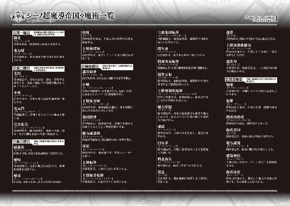
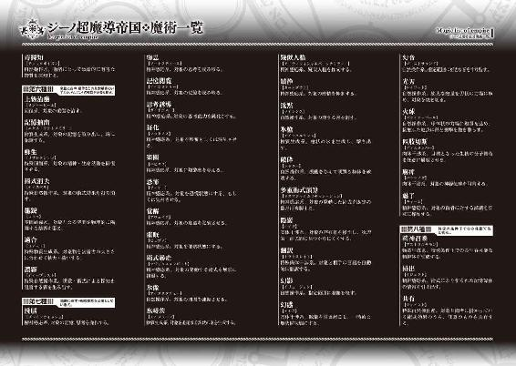
数年使ってガタが来ていたPCがとうとう壊れたので、新しい物に買い替えた。熱暴走ですぐに止まることもなく、操作性も非常に快適になったので大満足。加えてクラッシュした際に書きかけのデータが結構飛んでしまい、バックアップは大切だということも痛感した。
エルフをひたすら描き続けて三冊目、尖ってない耳を描いた時に違和感を感じるレベルで気がついたらエルフ萌えになっていました。先日友人に暑苦しくエルフ萌を語っていたら「君は生まれてくる性別間違ったよね」といわれました。ノーマルです。ここちんだいじ。
ビギニングノベルズ
異世界魔術師は魔法を唱えない3
小説 もち
イラスト 218
発行 株式会社キルタイムコミュニケーション
〒104-0041 東京都中央区新富1-3-7ヨドコウビル1Ｆ
編集部 TEL 03-3551-6147／FAX 03-3551-6146
販売部 TEL 03-3555-3431／FAX 03-3551-1208
URL http://ktcom.jp/
©mochi 2015
本書は小説投稿サイト「ノクターンノベルズ」（http://noc.syosetu.com/)に掲載されていたものを、加筆の上書籍化したものです。
※本作品の全部あるいは一部を無断で複製・転載・配信・送信したり、ホームページ上に転載することを禁止します。本作品の内容を無断で改変、改ざん等行うことも禁止します。また、有償・無償にかかわらず本作品を第三者に譲渡することはできません。
※本作品は電子書籍配信用に再編集しております。